Introdução
Este manual orienta o uso do módulo Principal do LabMedSys (versão 3.5.1), como foi entregue pelo fornecedor (legado). O Principal concentra o acesso ao sistema, os usuários, os perfis de permissão e os cadastros usados por todos os módulos: ambientes, equipamentos, pessoas jurídicas, categorias, centros de custo, contas, instrumentos, estrutura funcional, locais, pontos de água, utensílios, utilidades e grau de contaminação.
O manual cobre as 32 telas do módulo, uma por capítulo, agrupadas pelos três menus. Cada tela traz: para que serve, quem usa e em que etapa do processo, o que preparar antes, o passo a passo com a imagem de cada passo, o que acontece ao confirmar, o que o sistema recusa, quem pode usar, os cuidados e as falhas conhecidas, e as tabelas de campos, botões e mensagens. As imagens foram tiradas do ambiente de teste, com dados fictícios, e cada uma foi conferida contra a tela real.
O manual descreve como o sistema funciona hoje, inclusive onde ele falha. As falhas aparecem em "Cuidados e falhas conhecidas" com o número do defeito (DV-PRI), para o leitor não confundir comportamento atual com comportamento correto. O comportamento que o sistema deveria ter, para atender às normas da ANVISA, está na Análise de Requisitos.
A quem se destina
- Administradores do sistema: perfis, usuários e contas de acesso.
- Usuários dos cadastros: ambientes, equipamentos, pessoas jurídicas e demais cadastros.
- Todos os usuários: acesso ao sistema e troca de senha.
- Qualidade e homologação: conferir o que o sistema faz hoje, tela a tela.
Convenções
- Os nomes de botões e campos aparecem em negrito, como na tela.
- Campos marcados com asterisco (*) são obrigatórios.
- Os cadastros de teste têm nomes começando por TESTE ou T., com dados fictícios.
- "A confirmar no teste" marca o que o código mostra e a tela ainda não provou.
Padrão de uso das telas
Todas as telas de cadastro do Principal funcionam do mesmo jeito. Conhecendo este padrão, você consegue usar qualquer cadastro.
Pesquisar
1. No menu, escolha o grupo (ADMINISTRAÇÃO, CADASTROS ou TABELAS DE APOIO) e a tela.
2. Preencha um ou mais filtros (por exemplo, parte da descrição) e clique em PESQUISAR. Sem filtros, a lista traz todos os registros.
3. Use LIMPAR para apagar os filtros.
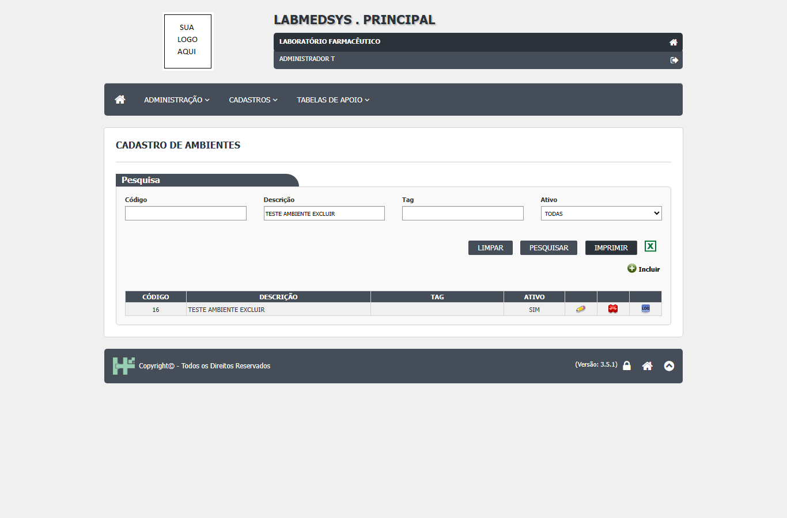
Atenção
A pesquisa por nome diferencia acentos: para achar "LABORATÓRIO", digite com acento ("laboratório"). Maiúsculas e minúsculas não fazem diferença.
Ícones da lista
| Ícone / botão | Função |
|---|---|
| Incluir (+) | Abre a tela para cadastrar um novo registro. |
| Lápis | Abre o registro para alterar. |
| X vermelho | Exclui o registro (exclusão lógica: ele sai da lista, mas continua guardado). |
| Log | Mostra o histórico de alterações do registro. |
| IMPRIMIR | Gera o relatório da lista, respeitando os filtros. |
| X verde (Excel) | Exporta a lista para planilha. |
Os ícones e botões só aparecem se o seu perfil tiver a permissão correspondente.
Incluir e alterar
1. Clique em Incluir (ou no lápis, para alterar).
2. Preencha os campos. Os marcados com * são obrigatórios.
3. Na alteração, preencha a Justificativa (o motivo da alteração).
4. Clique em SALVAR. O sistema pergunta "Confirma a inclusão do item?" (ou "alteração"): clique em SIM.
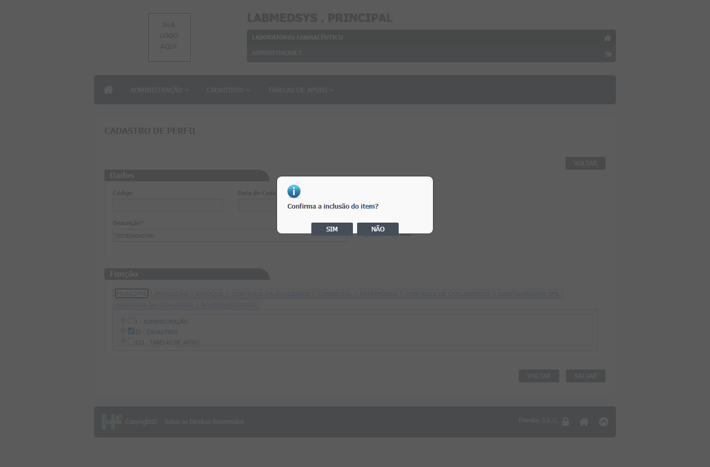
5. Se faltar algum campo obrigatório, o sistema avisa depois do SIM. Corrija e salve de novo.
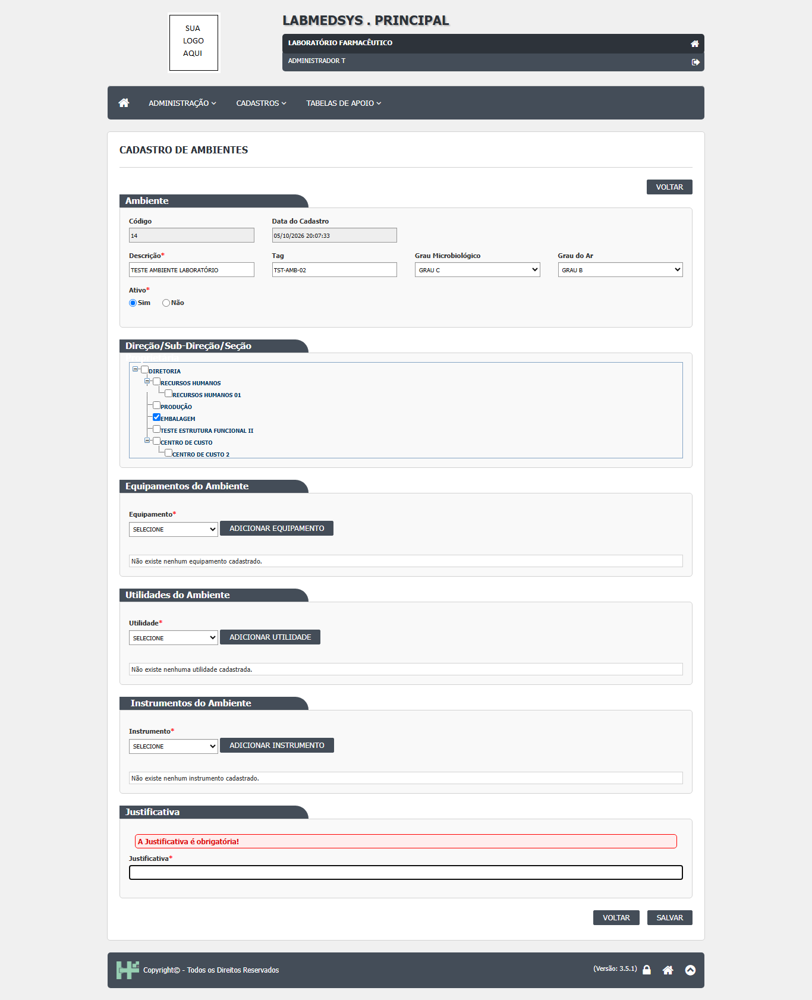
Inativar
Para deixar de usar um registro sem excluí-lo, abra-o, marque Ativo: Não, informe a justificativa e salve. Registros inativos deixam de aparecer nas listas de escolha das outras telas, mas continuam no histórico.
Excluir
1. Na lista, clique no X vermelho do registro.
2. Se a tela pedir, informe a Justificativa da exclusão. Em vários cadastros ela não pede (veja Limitações conhecidas): nesses casos, registre o motivo da exclusão pelo procedimento da sua empresa.
3. Confirme com SIM.
O registro sai da lista, mas continua guardado no banco (lixeira).
Quando a exclusão é recusada
A mensagem "Exclusão inválida, existem referências com outras tabelas." significa que outro cadastro usa o registro (por exemplo, um ponto de água ligado ao ambiente), ou que há itens vinculados na própria tela (por exemplo, tipos de manutenção marcados no equipamento). Remova esses vínculos e tente de novo.
Consultar o histórico (log)
Clique no ícone Log do registro. O histórico mostra cada alteração: campo, valor antigo, valor novo, data, hora, usuário e justificativa.
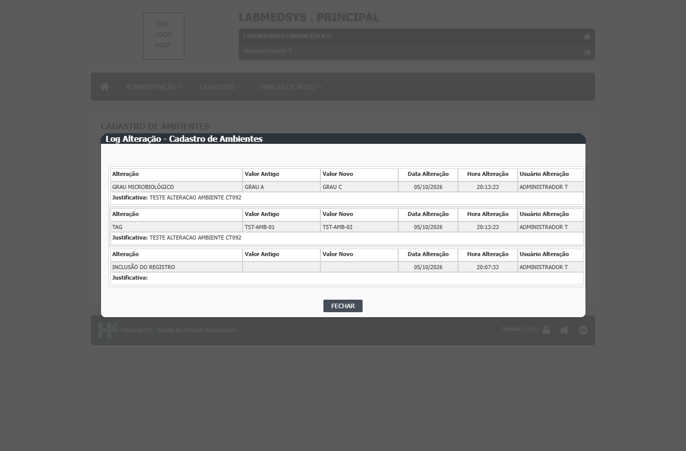
Imprimir e exportar
Depois de pesquisar, clique em IMPRIMIR para abrir o relatório em nova janela, ou no ícone do Excel para baixar a planilha. Os dois trazem só os registros da pesquisa.
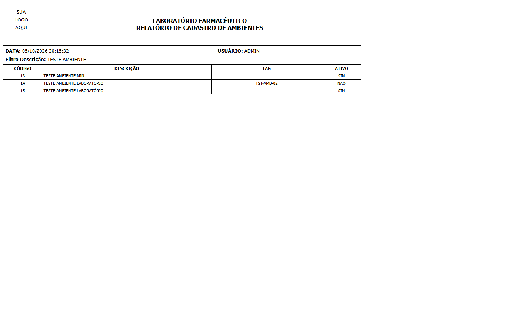
Menu Acesso ao sistema
Login
Para que serve
É a porta de entrada do LabMedSys. Toda pessoa, a cada entrada, informa Usuário e Senha. A tela confere os dois, aplica as regras de bloqueio, validade e permissão e abre a tela inicial (ou a Troca de senha, se a senha for provisória ou estiver vencida). Como o Principal faz o login central, os outros módulos recebem o usuário já autenticado. Todos os usuários passam por ela.
Quem usa e em que etapa do processo
Quem usa
- Todos os usuários do sistema, em cada entrada. É a primeira tela que qualquer pessoa vê.
- Os outros módulos usam o mesmo serviço de login por chamada de programa, sem passar pela tela.
- Quem pode abrir, incluir, alterar, excluir, imprimir e ver o histórico está em "Quem pode usar (permissões)", mais abaixo.
Em que etapa do processo entra (tela 1 do menu Acesso ao sistema, módulo Principal)
- Abrindo o endereço do sistema.
- Depois de Sair.
- Depois de trocar a senha com sucesso ou de desistir da troca obrigatória.
- Pelo botão "Fazer Login" das telas Sessão Expirada e Acesso Negado.
O que acontece depois (para onde o trabalho segue)
- Entrada aceita: abre a tela inicial. Se a senha é provisória (marcada para troca) ou está vencida, abre a Troca de senha no lugar.
- Entrada recusada: a mensagem aparece na própria tela e nada é aberto.
- Efeito no banco: cada tentativa grava uma linha em
SIS_ACESSO, cada erro de senha soma 1 ao contador do usuário e o acerto zera o contador. - Entrada vinda de outro endereço: se a página foi aberta com o parâmetro
urldesenv, o sistema redireciona para esse endereço levando o token. Ver a seção de segurança.
Fonte: Resumo da tela e fluxo da tela (leitura do código e dos testes). O que for leitura da área precisa ser validado com a área.
Antes de começar (o que precisa existir)
| Precisa existir | Para quê | Onde se cadastra |
|---|---|---|
| Conta de usuário com login e senha, ativa e dentro do período de validade | Sem ela a entrada é recusada | Administração › Conta usuário (feito pelo administrador) |
| Profissional ativo ligado à conta | Profissional inativo é recusado ("O usuário informado está inativo!") | Cadastros › Profissional |
| Perfil com ao menos uma função ligado à conta | Sem nenhuma função, a entrada é recusada | Administração › Perfil e Conta usuário |
Passo a passo
Situação das imagens (14/11/2026): imagens reaproveitadas dos testes de 05/10/2026, cada uma conferida contra o texto. Sem imagem: campos e botão marcados em vermelho, entrada pelo Enter, entrada pelo endereço com token, desbloqueio pelo administrador.
- Abra o endereço do LabMedSys no navegador. A tela mostra o nome do sistema, "Acesso ao Sistema" e os campos Usuário e Senha.

Figura 1: a tela de Login com Usuário e Senha vazios e o botão ENTRAR.
- Digite o Usuário e a Senha. A tecla Enter no campo Senha equivale a clicar em ENTRAR; no campo Usuário, o Enter só passa para o campo seguinte (Default.aspx:23-40). O servidor ignora espaços nas pontas e maiúsculas e minúsculas do usuário (Default.aspx.cs:253). O campo Senha aceita no máximo 14 caracteres.
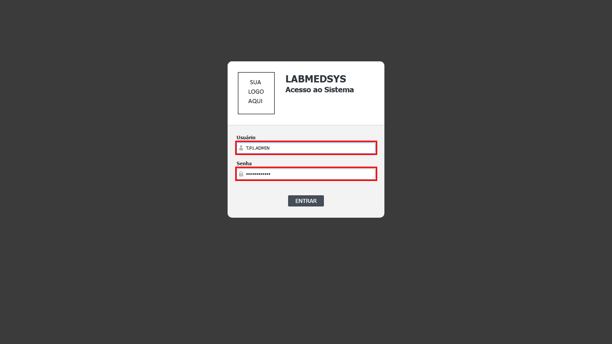
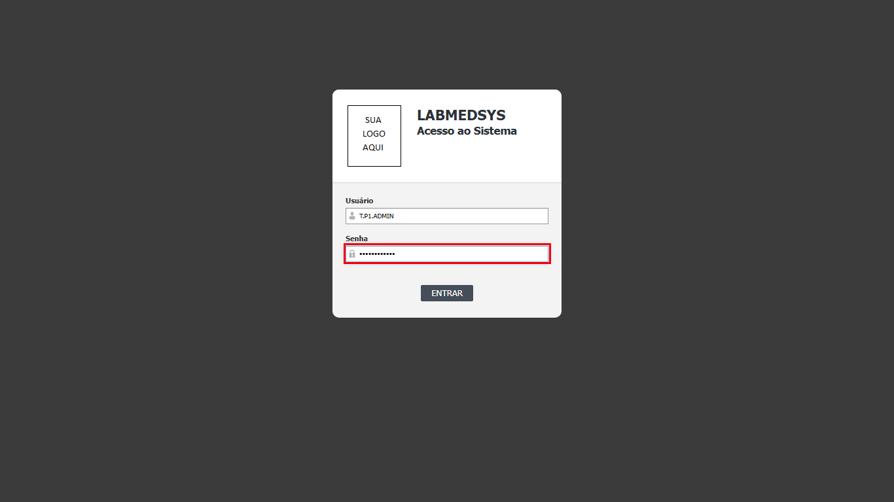

- Clique em ENTRAR. Se faltar algum campo, a própria página (validação do formulário) avisa "Preencha o Usuário" e "Preencha a Senha" (Default.aspx:67 e 75; CT-PRI-002).
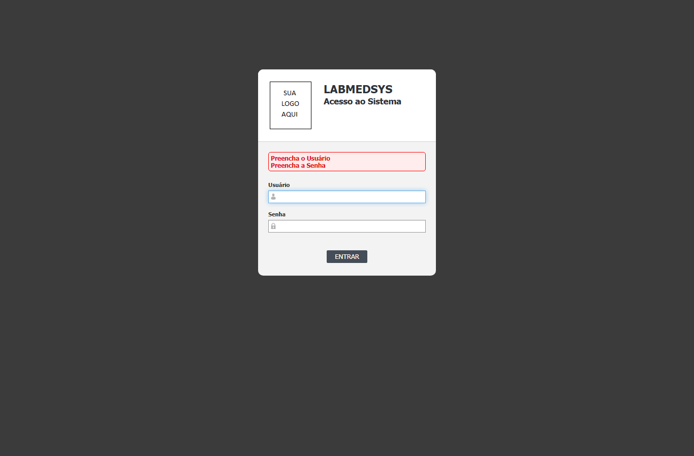
Figura 2: o Login depois de clicar em ENTRAR com os dois campos vazios: a faixa vermelha mostra "Preencha o Usuário" e "Preencha a Senha".
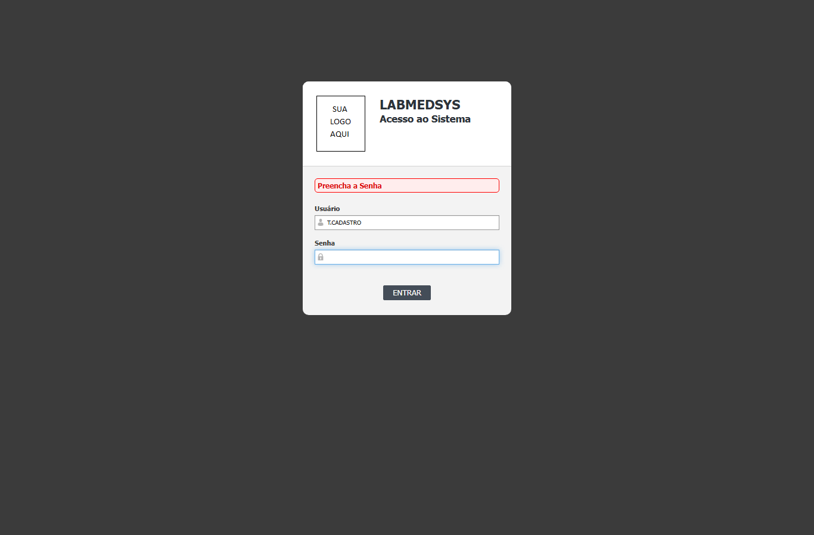
Figura 3: o Login com o Usuário T.CADASTRO preenchido e a Senha vazia: a faixa vermelha mostra só "Preencha a Senha".
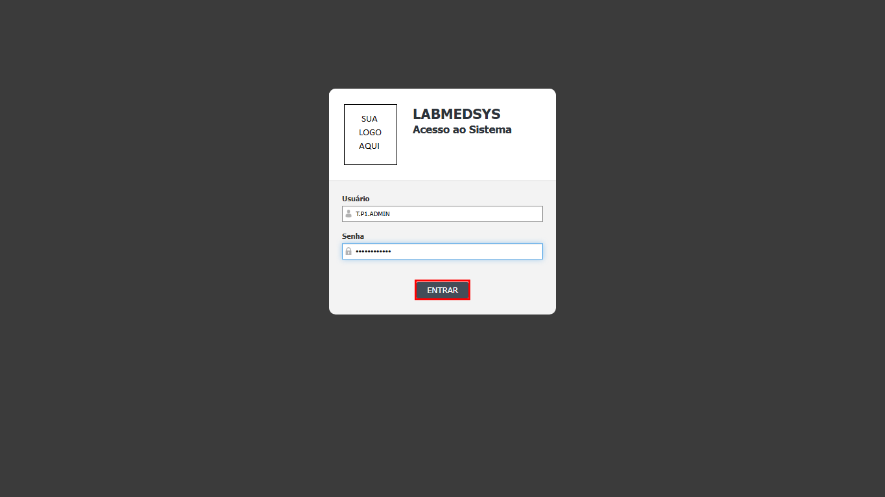
- Se tudo estiver certo, abre a tela inicial (tela 03). Se for o primeiro acesso, ou se a senha foi redefinida pelo administrador ou está vencida, abre a Troca de senha (tela 02) no lugar.

Figura 4: a tela inicial que abre depois da entrada aceita (usuário TESTE CADASTRO), com a grade de módulos e o menu.

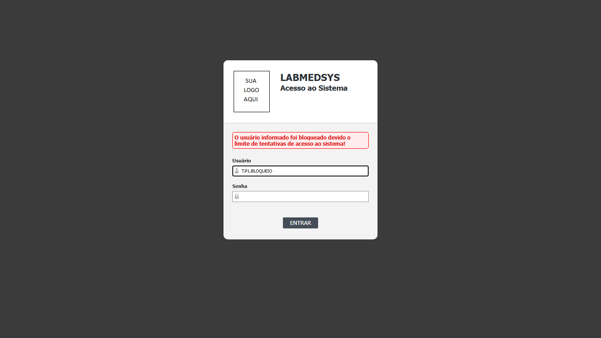
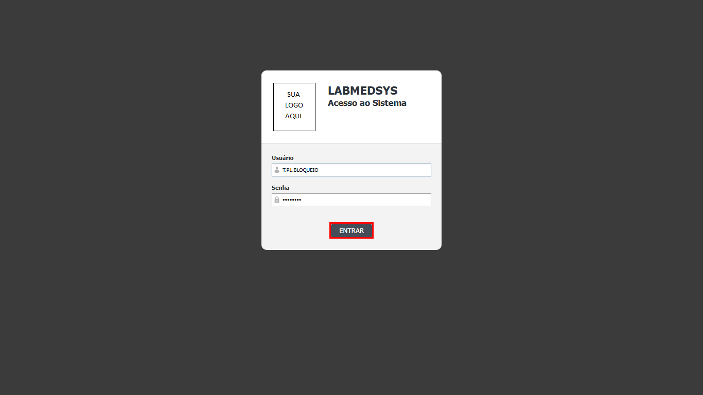
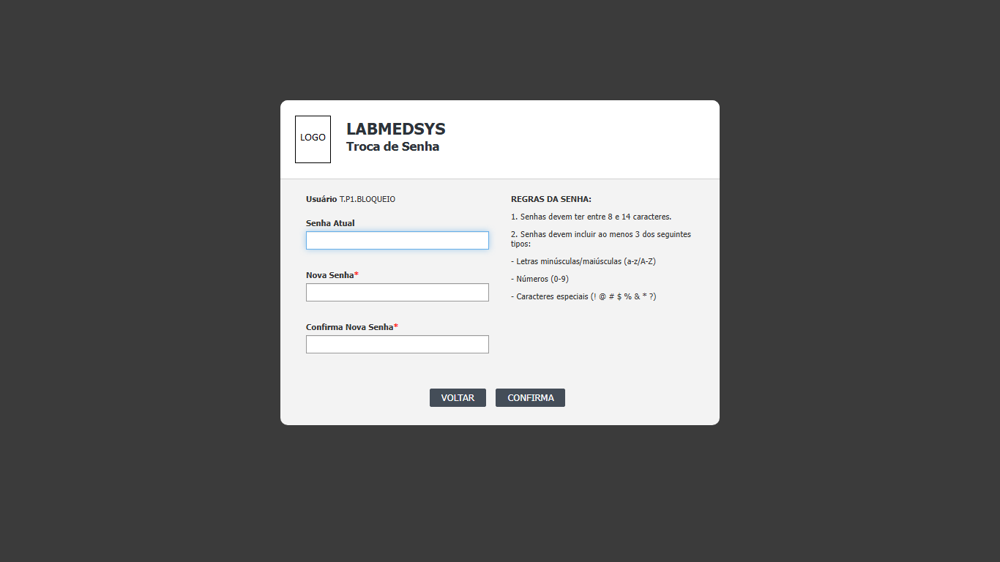
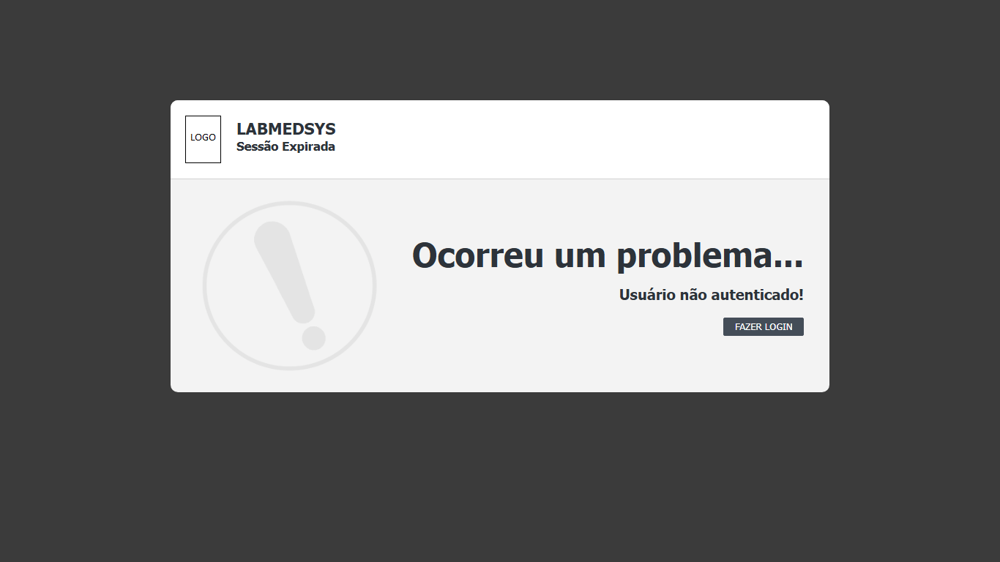

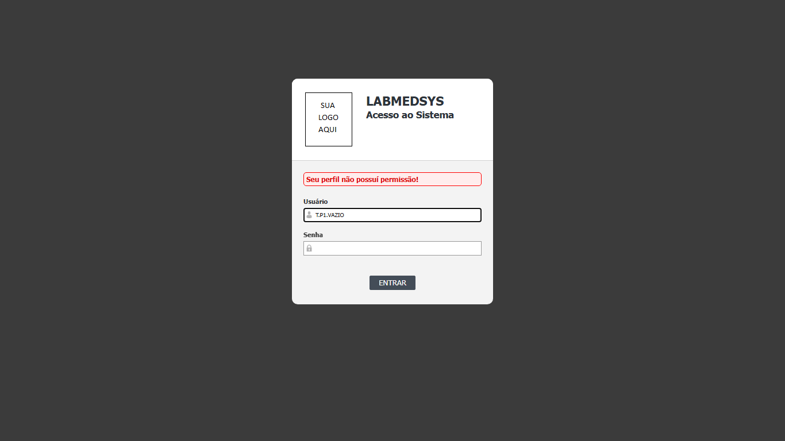
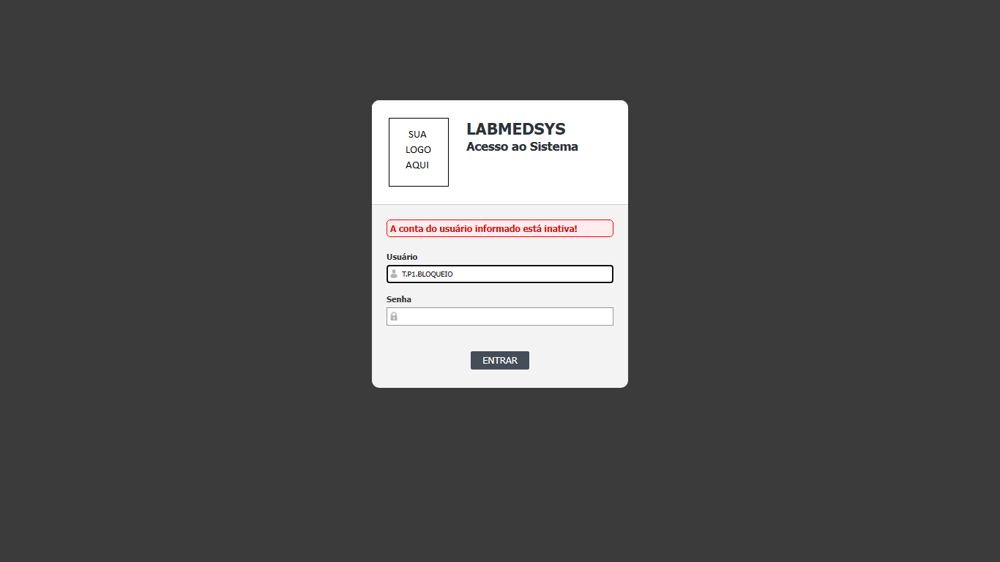
O que acontece ao confirmar ou salvar
- Entrada aceita: abre a tela inicial ou a Troca de senha (Default.aspx.cs:278-279). O contador de erros do usuário volta a zero (bllUsuario.cs:156).
- Entrada recusada: a mensagem aparece em uma faixa acima dos campos e nada é aberto.
- Registro: cada tentativa grava uma linha em
SIS_ACESSOe cada erro de senha soma 1 ao contador do usuário (bllUsuario.cs:103-157; dalUsuario.cs:1281-1327). Nenhuma tela do sistema mostra esses registros (CT-PRI-012, bloqueado: depende do DBA). - Entrada vinda de outro módulo: se o endereço traz um código de acesso (token) válido, a tela abre a sessão sem pedir senha (Default.aspx.cs:29-66; ver os cuidados).
O que o sistema recusa
| Mensagem na tela | Quando aparece | Imagem |
|---|---|---|
| Preencha o Usuário / Preencha a Senha | Campo em branco (mensagem da própria página; CT-PRI-002; confirmado em 14/11/2026) | Figuras 2 e 3 |
| O usuário informado é inválido! | Login que não existe ou foi excluído (CT-PRI-003) | Figura 5 |
| A senha está incorreta, você tem mais N tentativa(s) antes de sua conta ser bloqueada! | Senha errada (CT-PRI-003 e 008) | Figuras 6, 7 e 8 |
| O usuário informado foi bloqueado devido o limite de tentativas de acesso ao sistema! | Depois de 4 erros seguidos; nem a senha certa entra (CT-PRI-008) | Figura 9 |
| O usuário informado está inativo! | Profissional inativo (CT-PRI-004) | Figura 10 |
| A conta do usuário informado está inativa! | Conta inativa (CT-PRI-005) | Figura 11 |
| A data de validade do usuário informado não permite o acesso ao sistema! | Hoje fora do período da conta (CT-PRI-006 e 007) | Figuras 12 e 13 |
| Seu perfil não possuí permissão! | O perfil não tem nenhuma função (CT-PRI-011; o erro de acentuação "possuí" é do sistema) | Figura 14 |
Figura 5: login que não existe: "O usuário informado é inválido!".
Figura 6: senha errada para um usuário que existe (T.CADASTRO): "A senha está incorreta, você tem mais 3 tentativa(s) antes de sua conta ser bloqueada!". É a mensagem diferente da Figura 5 que dá origem ao DV-PRI-015.
Figura 7: T.BLOQUEIO, primeira senha errada: "você tem mais 4 tentativa(s)".
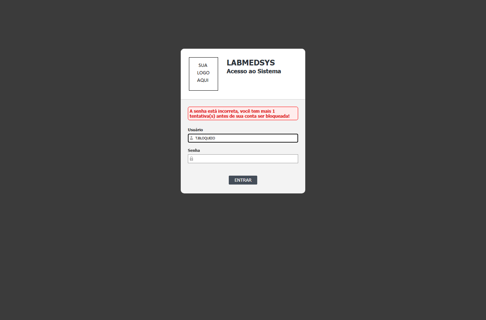
Figura 8: T.BLOQUEIO, quarta senha errada: "você tem mais 1 tentativa(s)", embora o bloqueio já ocorra na quarta falha (DV-PRI-016).
Figura 9: T.BLOQUEIO na tentativa seguinte: "O usuário informado foi bloqueado devido o limite de tentativas de acesso ao sistema!".
Figura 10: T.INATIVO: "O usuário informado está inativo!".
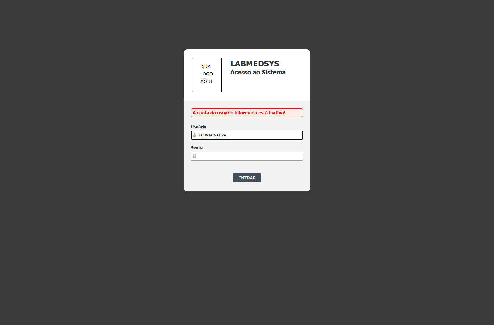
Figura 11: T.CONTAINATIVA: "A conta do usuário informado está inativa!".
Figura 12: T.VENCIDO: "A data de validade do usuário informado não permite o acesso ao sistema!".
Figura 13: T.FUTURO (validade que ainda não começou): a mesma mensagem de validade.
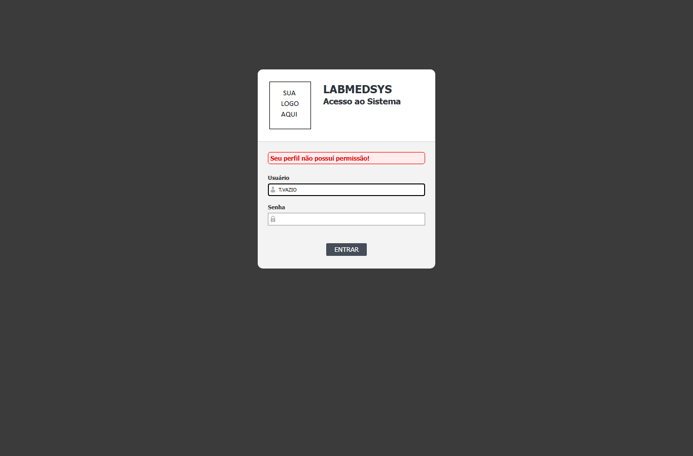
Figura 14: T.VAZIO, perfil sem nenhuma função: "Seu perfil não possuí permissão!".
Quem pode usar (permissões)
- A tela de Login não exige função: qualquer pessoa que alcance o endereço do sistema a vê. O que ela concede depende da conta.
- A entrada é recusada quando o usuário não tem nenhuma função em nenhum perfil (Default.aspx.cs:275-298; CT-PRI-011).
- A tela inicial e as demais só abrem depois da sessão aberta aqui. As mensagens que bloqueiam tela sem função estão na tela 05.
Cuidados e falhas conhecidas
-
Reconfirmado em 14/11/2026 (robô P1): com o parâmetro
urldesenvno endereço, a conta com senha provisória entra e pula a troca obrigatória de senha (DV-PRI-050 e DV-PRI-022); o endereço com token abre a sessão de outra pessoa sem senha (DV-PRI-019); a quarta mensagem diz "mais 1 tentativa" com a conta já bloqueada (DV-PRI-016). Não foram reconfirmados em teste: validade futura, validade vencida e profissional inativo (valem as imagens de 05/10/2026). -
DV-PRI-015 (Média): o sistema responde com mensagens diferentes para "usuário inexistente" e "senha errada", o que permite descobrir quais logins existem. O esperado é uma só mensagem.
- DV-PRI-016 (Baixa): as mensagens dizem "mais 4, 3, 2 e 1 tentativa(s)", mas a conta bloqueia no 4º erro. Considere uma tentativa a menos do que a mensagem diz.
- DV-PRI-017 (Média): o Reset de senha do administrador desbloqueia a conta, mas o desbloqueio não aparece no histórico da conta (defeito da tela Conta usuário, achado neste teste).
- DV-PRI-019 (Média): o endereço com token abre a sessão de quem o recebe, sem senha. Não compartilhe nem cole esses endereços.
- A conta bloqueada só volta com o Reset de senha do administrador: não há desbloqueio por tempo.
- Não existe "esqueci minha senha": só o administrador redefine a senha.
- A tela não avisa que a senha está perto de vencer.
- Ponto para validar com a área: o endereço de entrada aceita o parâmetro
urldesenve redireciona para ele com o token depois do login; não foi testado (CT-PRI-ACE01-02).
Botões da tela
| Botão ou ação | Quando aparece | O que faz | Para onde leva |
|---|---|---|---|
| ENTRAR | Sempre | Confere os dois campos no navegador e envia ao servidor para autenticar | Tela inicial, Troca de senha ou mensagem de recusa |
| Tecla Enter | No campo Senha | Faz o mesmo que ENTRAR | Igual ao botão |
Campos da tela
Caminhos das fontes na seção Resumo da tela. "Só no navegador" quando só o navegador confere; "Sim (servidor)" quando o servidor também recusa.
| Campo na tela | Tipo | Obrigatório | Regra, limite ou valores possíveis | Fonte |
|---|---|---|---|---|
| Usuário | Texto | Sim, só no navegador ("Preencha o Usuário") | O servidor tira os espaços das pontas e converte para maiúsculas antes de procurar (Default.aspx.cs:253). Sem limite de tamanho no campo. | Default.aspx:67-69; Default.aspx.cs:253 |
| Senha | Texto oculto | Sim, só no navegador ("Preencha a Senha") | No navegador, aceita no máximo 14 caracteres. O servidor tira os espaços das pontas e cifra a senha antes de comparar. | Default.aspx:75-76; Default.aspx.cs:254; svcAutenticacao.cs:34 |
| urldesenv (parâmetro do endereço, não aparece na tela) | Endereço | Não | Se vier no endereço, é guardado em um campo escondido e usado como destino depois do login | Default.aspx:46; Default.aspx.cs:69-73 |
| token (parâmetro do endereço, não aparece na tela) | Código | Não | Se vier no endereço e for válido, a tela abre a sessão sem pedir senha | Default.aspx.cs:29-66 |
Botões e ações
| Botão ou ação | Quando aparece | O que faz | Para onde leva | Fonte |
|---|---|---|---|---|
| ENTRAR | Sempre | Valida os dois campos no navegador e, se preenchidos, envia ao servidor para autenticar | Tela inicial, Troca de senha ou mensagem de recusa | Default.aspx:81; Default.aspx.cs:244-301 |
| Tecla Enter | No campo Senha | Aciona ENTRAR | Igual ao botão | Default.aspx:27-29 |
| Abertura da página sem enviar nada | Toda vez que a página é aberta | Zera na sessão o usuário, as funções, o menu, o login, a marca de troca de senha e o token. Não invalida o token no serviço | Fica na tela de login | Default.aspx.cs:94-101 |
Mensagens do sistema
Nem todas foram vistas numa tela. As marcadas "vista em teste" aparecem no resultado da rodada de 05 e 06/10/2026.
| Mensagem (texto exato do código) | Quando aparece | Fonte |
|---|---|---|
| Preencha o Usuário | Usuário em branco (mensagem da própria página). Vista em teste: CT-PRI-002 | Default.aspx:67 |
| Preencha a Senha | Senha em branco (mensagem da própria página). Vista em teste: CT-PRI-002 | Default.aspx:75 |
| Login e/ou senha não foram informados. | Pedido que chega ao servidor sem login ou sem senha. Nunca aparece na tela, porque o navegador barra antes (CT-PRI-002) | bllUsuario.cs:90-97 |
| O usuário informado é inválido! | Login que não existe ou foi excluído. Vista em teste: CT-PRI-003 | bllUsuario.cs:101-108 |
| A conta do usuário informado está inativa! | Conta marcada como inativa. Vista em teste: CT-PRI-005 | bllUsuario.cs:110-116 |
| O usuário informado está inativo! | Profissional inativo. Vista em teste: CT-PRI-004 | bllUsuario.cs:118-125 |
| A data de validade do usuário informado não permite o acesso ao sistema! | Hoje fora do período entre a data inicial e a final da conta. Vista em teste: CT-PRI-006 e 007 | bllUsuario.cs:127-134 e 187-189 |
| O usuário informado foi bloqueado devido o limite de tentativas de acesso ao sistema! | Contador de erros chegou a 4. Vista em teste: CT-PRI-008 | bllUsuario.cs:136-143 e 181 |
| A senha está incorreta, você tem mais N tentativa(s) antes de sua conta ser bloqueada! | Senha errada. N é 4 menos o contador lido antes do erro atual. Vista em teste: CT-PRI-008 (mostrou 4, 3, 2 e 1; DV-PRI-016) | bllUsuario.cs:145-154 |
| Seu perfil não possuí permissão! | O perfil do usuário não tem nenhuma função. Vista em teste: CT-PRI-011 (com o erro de acentuação "possuí") | Default.aspx.cs:296 |
| Erro ao acessar este usuário! | Token válido, mas sem usuário correspondente. Situação praticamente impossível; não vista | Default.aspx.cs:57-60 |
| Usuário não autenticado! | Entrada pelo token com token inválido ou vencido: abre a tela Acesso Negado com esta frase. Não vista | Default.aspx.cs:62-65; acessoNegado.aspx.cs:15-17 |
Troca de senha
Para que serve
Trocar a senha. Abre sozinha depois do login quando a senha é provisória (primeiro acesso ou redefinida pelo administrador) ou está vencida, e também pode ser aberta por vontade própria pelo cadeado "Alterar Senha" do rodapé. A nova senha precisa seguir as regras mostradas na própria tela. Todos os usuários com sessão aberta usam.
Quem usa e em que etapa do processo
Quem usa
- Todo usuário do sistema, na primeira entrada, quando a senha vence e quando quer trocá-la.
- Quem pode abrir, incluir, alterar, excluir, imprimir e ver o histórico está em "Quem pode usar (permissões)", mais abaixo.
Em que etapa do processo entra (tela 2 do menu Acesso ao sistema, módulo Principal)
- Logo depois do login, se a senha é provisória (marcada para troca) ou está vencida.
- Pelo cadeado "Alterar Senha" do rodapé de qualquer tela do Principal (rodape.html:8). Esse caminho não foi testado.
O que acontece depois (para onde o trabalho segue)
- CONFIRMA não grava: abre a pergunta "Confirma a troca de senha?".
- SIM confere tudo e grava a nova senha: a senha antiga passa para a coluna de senha anterior, o contador de erros é zerado, a marca de troca obrigatória sai e a nova validade é calculada. Mostra "Senha alterada com sucesso!".
- OK encerra a sessão e volta ao Login. O usuário entra com a senha nova.
- VOLTAR sai sem trocar: se a troca era obrigatória, encerra a sessão e volta ao Login; senão, volta à tela inicial.
Fonte: Resumo da tela e fluxo da tela (leitura do código e dos testes). O que for leitura da área precisa ser validado com a área.
Antes de começar (o que precisa existir)
| Precisa existir | Para quê | Onde se cadastra |
|---|---|---|
| Sessão aberta (login feito) | Sem sessão a tela leva à Sessão Expirada | Login (tela 01) |
| Senha atual conhecida | É conferida antes de gravar | Senha provisória gerada pelo administrador em Administração › Conta usuário (Reset de senha) |
Passo a passo
Situação das imagens (14/11/2026): imagens reaproveitadas dos testes de 05/10/2026, cada uma conferida contra o texto. Sem imagem: campos obrigatórios vazios, a pergunta de confirmação, a mensagem de sucesso, o botão VOLTAR e a entrada pelo cadeado do rodapé.
- A tela mostra o seu Usuário (só leitura), três campos (Senha Atual, Nova Senha, Confirma Nova Senha), as "REGRAS DA SENHA" à direita e os botões VOLTAR e CONFIRMA (trocaSenha.aspx:95-137).
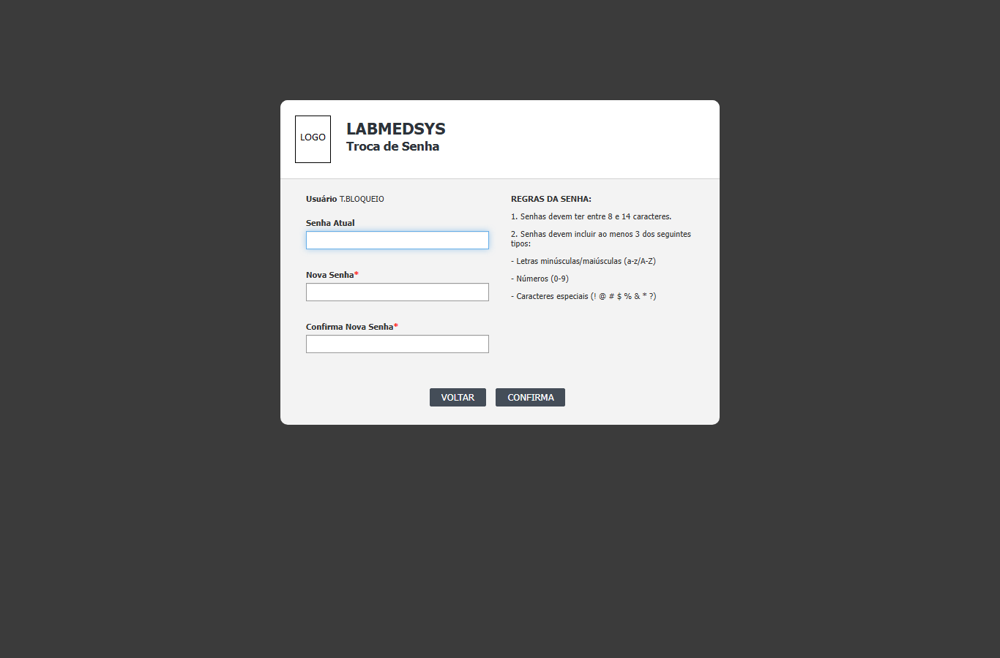
Figura 1: a Troca de Senha aberta no primeiro acesso depois do Reset de senha (usuário T.BLOQUEIO): três campos vazios, as regras da senha e os botões VOLTAR e CONFIRMA.
- Digite a senha atual, a nova senha e repita a nova senha. Cada campo aceita no máximo 14 caracteres.
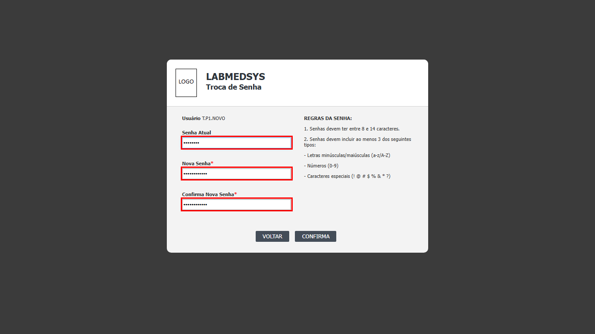
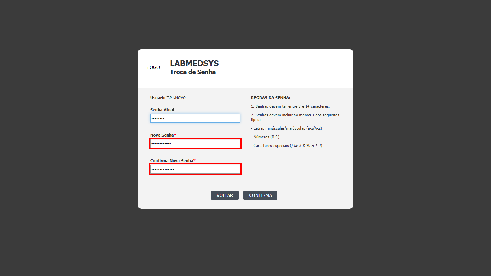
- Clique em CONFIRMA. O sistema pergunta "Confirma a troca de senha?". Clique em SIM.
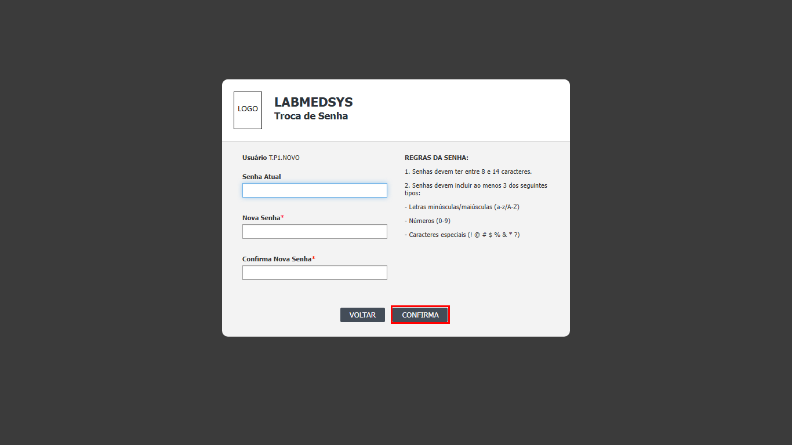
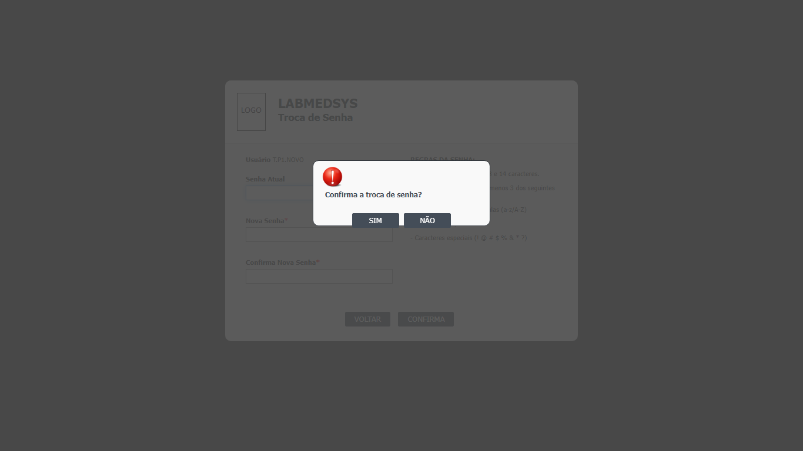
- Com "Senha alterada com sucesso!", clique em OK. O sistema encerra a sessão e volta ao login. Entre com a senha nova.


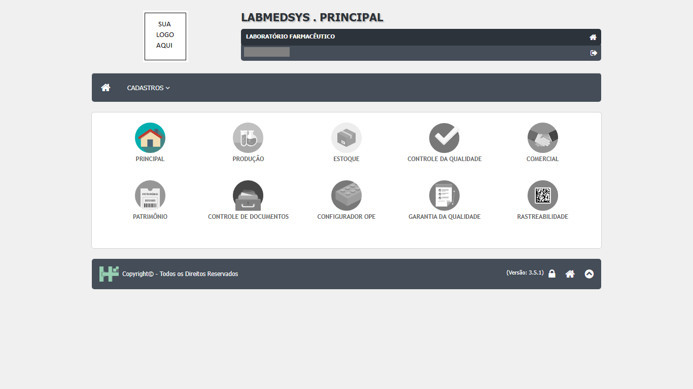
Regras da senha (como a tela mostra): entre 8 e 14 caracteres; ao menos 3 tipos entre letras, números e caracteres especiais (! @ # $ % & * ?). Na prática o código exige uma letra, um número e um caractere especial da lista (trocaSenha.aspx:117). Não pode ser igual à atual nem às duas anteriores.
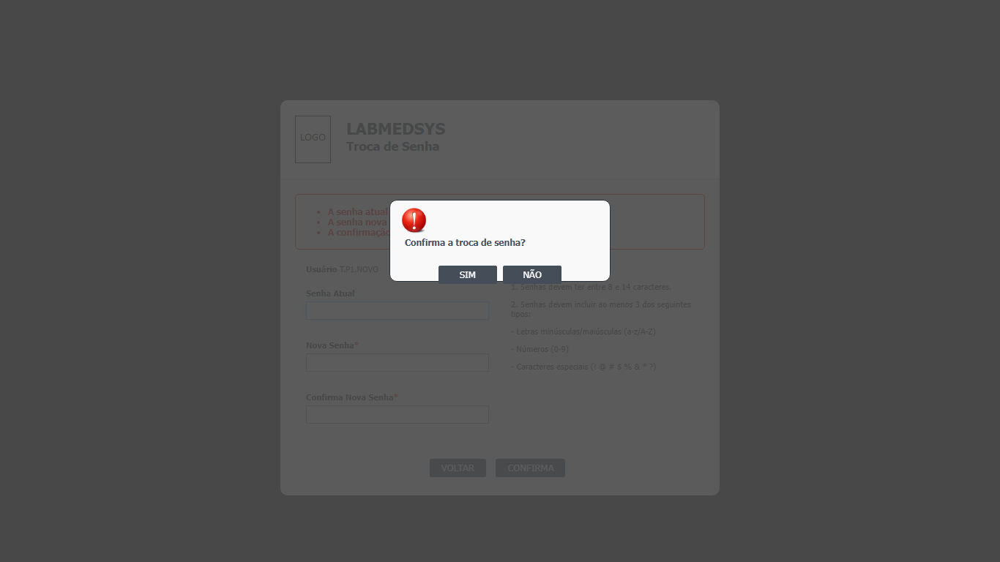
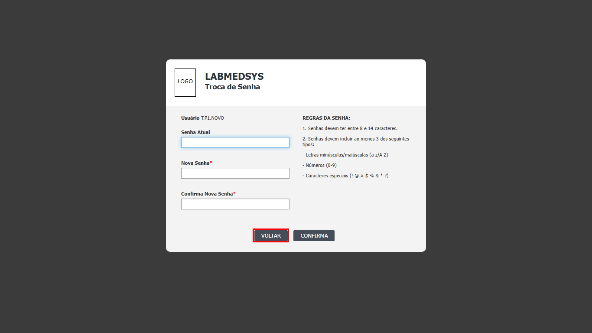

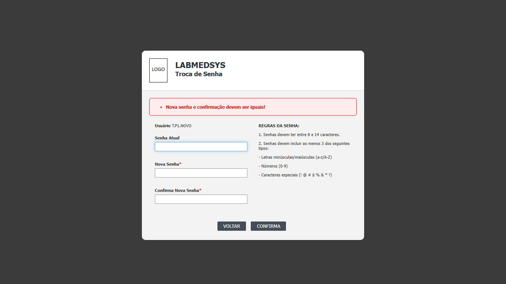
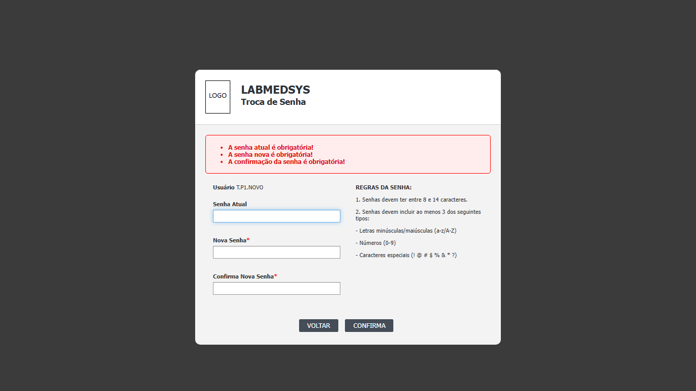
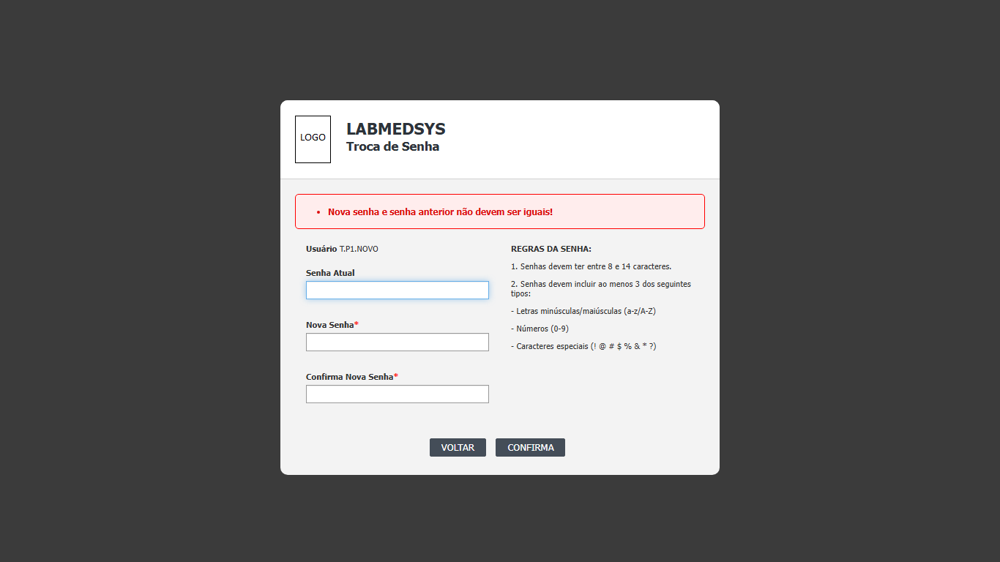
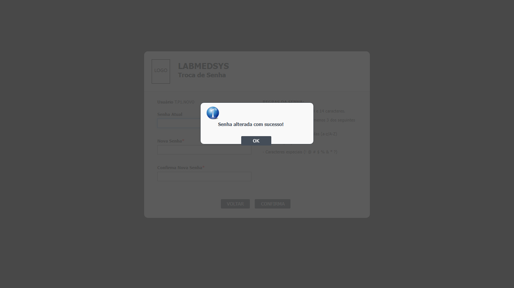
O que acontece ao confirmar ou salvar
- Grava a nova senha (cifrada); a senha antiga passa para a coluna de senha anterior, o contador de erros é zerado, a marca de troca obrigatória sai e a nova validade é calculada (dalUsuario.cs:1179-1211).
- Mostra "Senha alterada com sucesso!" e, ao clicar em OK, encerra a sessão e abre o Login.
- A troca não é registrada no histórico da conta (ponto observado no código).
O que o sistema recusa
A mensagem aparece em uma faixa vermelha dentro da tela.
| Mensagem | Quando aparece | Imagem |
|---|---|---|
| Senha atual incorreta! | A senha atual digitada não confere (CT-PRI-031) | Figura 2 |
| A estrutura da senha não é permitida! | Nova senha curta, só letras, sem número ou sem símbolo (CT-PRI-032) | Figura 3 |
| Nova senha e senha anterior não devem ser iguais! | A nova senha é igual à atual, sem diferenciar maiúsculas de minúsculas (CT-PRI-034) | Figura 4 |
| Senha não pode ser igual as 3 últimas senhas utilizadas! | A nova senha repete uma das duas anteriores (CT-PRI-035) | Figura 5 |
| A senha atual é obrigatória! / A senha nova é obrigatória! / A confirmação da senha é obrigatória! | Campo em branco (não vista em teste) | sem imagem |
| Nova senha e confirmação devem ser iguais! | A confirmação difere da nova senha (não vista; no teste a confirmação com caixa diferente foi aceita, DV-PRI-021) | sem imagem |
| Erro ao alterar senha! | A gravação falhou (não vista) | sem imagem |
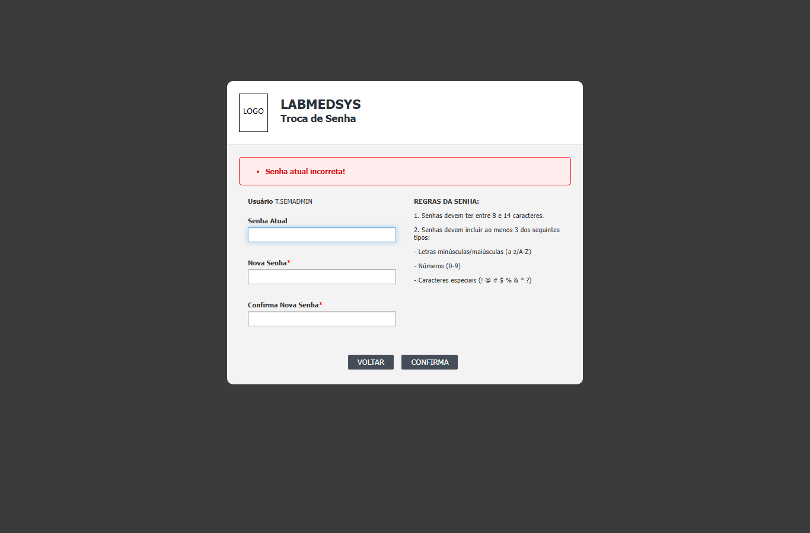
Figura 2: a Troca de Senha com a faixa vermelha "Senha atual incorreta!" (usuário T.SEMADMIN).
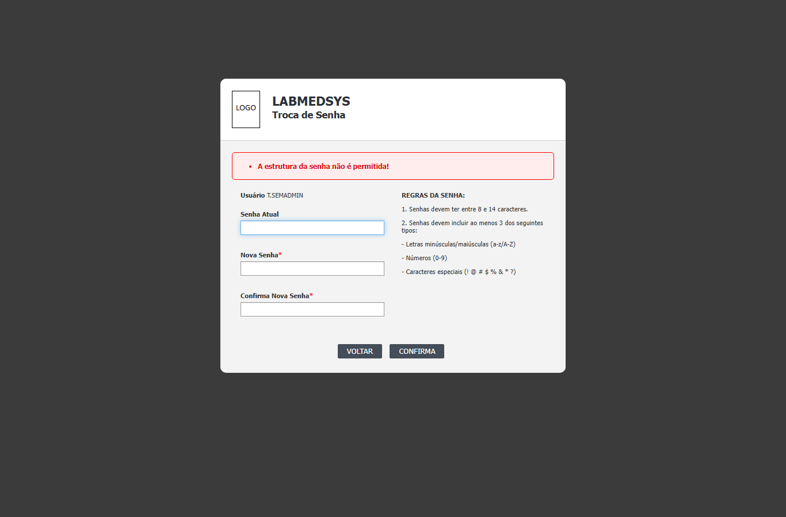
Figura 3: a faixa vermelha "A estrutura da senha não é permitida!" para uma nova senha fora das regras.
Figura 4: a faixa vermelha "Nova senha e senha anterior não devem ser iguais!".
Figura 5: a faixa vermelha "Senha não pode ser igual as 3 últimas senhas utilizadas!".
Quem pode usar (permissões)
- A tela não exige função de perfil: qualquer usuário com sessão aberta a abre (trocaSenha.aspx.cs não chama a verificação de função). Sem sessão, leva à Sessão Expirada.
- Todos os botões aparecem para todos.
- A senha atual e a estrutura da nova são conferidas no servidor; o limite de 14 caracteres do campo só vale no navegador.
Cuidados e falhas conhecidas
-
Falhas confirmadas em 14/11/2026 (robô P1): errar a senha atual não conta tentativa nem bloqueia a conta (DV-PRI-052); a troca não invalida o endereço com token já emitido (DV-PRI-053); a troca não aparece no histórico da conta (DV-PRI-054); a senha com mais de 14 caracteres é cortada em silêncio (DV-PRI-055); a pergunta "Confirma a troca de senha?" aparece antes de conferir os campos (DV-PRI-056); a confirmação com maiúsculas e minúsculas trocadas é aceita (DV-PRI-021).
-
DV-PRI-022 (Alta): com a troca obrigatória pendente, outras telas abrem pelo endereço sem trocar a senha. A obrigação só vale na entrada.
- DV-PRI-021 (Baixa): o sistema compara as senhas sem diferenciar maiúsculas de minúsculas: recusa trocar para uma senha que só muda a caixa das letras e aceita a confirmação digitada com caixa diferente da nova senha.
- DV-PRI-003 (Alta, tela Conta usuário): o administrador vê a senha provisória; a troca obrigatória é a única barreira.
- A tela não avisa antes de a senha vencer.
- O limite de 14 caracteres não se confirmou no teste: uma senha de 40 caracteres foi aceita (CT-PRI-033, feito por automação). Ponto para validar com a área.
- A senha vencida de verdade não foi vista em teste (CT-PRI-036, bloqueado).
Botões da tela
| Botão ou ação | Quando aparece | O que faz | Para onde leva |
|---|---|---|---|
| CONFIRMA | Sempre | Abre a pergunta "Confirma a troca de senha?" | Pergunta de confirmação |
| SIM | Depois de CONFIRMA | Valida e grava | "Senha alterada com sucesso!" ou mensagem de recusa |
| NÃO | Depois de CONFIRMA | Fecha a pergunta e volta aos campos | Fica na tela |
| OK | Depois da mensagem de sucesso | Encerra a sessão | Login |
| VOLTAR | Sempre | Sai sem trocar; se a troca era obrigatória, encerra a sessão e vai ao Login, senão vai à tela inicial | Login ou tela inicial |
| Tecla Enter | Nos campos | Não faz nada (bloqueada) | Fica na tela |
Campos da tela
Caminhos das fontes na seção Resumo da tela. "Só no navegador" quando só o navegador confere; "Sim (servidor)" quando o servidor também recusa.
| Campo na tela | Tipo | Obrigatório | Regra, limite ou valores possíveis | Fonte |
|---|---|---|---|---|
| Usuário | Texto travado | Não se aplica | Mostra o login de quem está logado | trocaSenha.aspx:99-100; trocaSenha.aspx.cs:25 |
| Senha Atual | Texto oculto | Sim (servidor): "A senha atual é obrigatória!" | No navegador, no máximo 14 caracteres. O servidor cifra a senha digitada e compara com a gravada | trocaSenha.aspx:107-108; trocaSenha.aspx.cs:83-96 |
| Nova Senha | Texto oculto | Sim (servidor): "A senha nova é obrigatória!" | No navegador, no máximo 14 caracteres. No servidor, deve ter 8 a 14 caracteres com ao menos uma letra, um número e um caractere especial entre ! @ # $ % & * ? | trocaSenha.aspx:115-117 |
| Confirma Nova Senha | Texto oculto | Sim (servidor): "A confirmação da senha é obrigatória!" | No navegador, no máximo 14 caracteres. Deve ser igual à nova senha, sem diferenciar maiúsculas de minúsculas | trocaSenha.aspx:124-125; trocaSenha.aspx.cs:99-104 |
| REGRAS DA SENHA | Texto fixo | Não se aplica | Lista as regras: 8 a 14 caracteres e ao menos 3 dos tipos | trocaSenha.aspx:130-135 |
Botões e ações
| Botão ou ação | Quando aparece | O que faz | Para onde leva | Fonte |
|---|---|---|---|---|
| CONFIRMA | Sempre | Guarda as três senhas digitadas em campos escondidos da página e abre a pergunta de confirmação | Pergunta "Confirma a troca de senha?" | trocaSenha.aspx:141; trocaSenha.aspx.cs:34-46 |
| SIM | Depois de CONFIRMA | Valida a estrutura, confere a senha atual, a confirmação, a igualdade com a atual e o histórico; se tudo passar, grava | "Senha alterada com sucesso!" ou mensagem de recusa | trocaSenha.aspx:157; trocaSenha.aspx.cs:62-191 |
| NÃO | Depois de CONFIRMA | Fecha a pergunta e volta aos campos | Fica na tela | trocaSenha.aspx:158; trocaSenha.aspx.cs:193-197 |
| OK | Depois de "Senha alterada com sucesso!" | Encerra a sessão | Login | trocaSenha.aspx:161; trocaSenha.aspx.cs:55-60 |
| VOLTAR | Sempre | Sai sem trocar. Se a troca era obrigatória, encerra a sessão e vai ao Login; senão, vai à tela inicial | Login ou tela inicial | trocaSenha.aspx:140; trocaSenha.aspx.cs:48-53 |
| Tecla Enter | Nos campos | Não faz nada (o Enter é bloqueado) | Fica na tela | trocaSenha.aspx:50-58 |
Mensagens do sistema
Nem todas foram vistas numa tela. As marcadas "vista em teste" aparecem no resultado da rodada de 05 e 06/10/2026.
| Mensagem (texto exato do código) | Quando aparece | Fonte |
|---|---|---|
| A senha atual é obrigatória! | Senha atual em branco | trocaSenha.aspx:108 |
| A senha nova é obrigatória! | Nova senha em branco | trocaSenha.aspx:116 |
| A confirmação da senha é obrigatória! | Confirmação em branco | trocaSenha.aspx:125 |
| A estrutura da senha não é permitida! | Nova senha curta, só letras, sem número ou sem símbolo. Vista em teste: CT-PRI-032 | trocaSenha.aspx:117 |
| Senha atual incorreta! | A senha atual digitada não confere. Vista em teste: CT-PRI-031 | trocaSenha.aspx.cs:91-96 |
| Nova senha e confirmação devem ser iguais! | A confirmação difere da nova senha, sem considerar maiúsculas e minúsculas. Não vista (no teste, a confirmação com caixa diferente foi aceita: DV-PRI-021) | trocaSenha.aspx.cs:99-104 |
| Nova senha e senha anterior não devem ser iguais! | A nova senha é igual à atual, sem considerar maiúsculas e minúsculas. Vista em teste: CT-PRI-034 | trocaSenha.aspx.cs:107-112 |
| Senha não pode ser igual as 3 últimas senhas utilizadas! | A nova senha repete uma das duas anteriores guardadas (a atual já foi barrada antes). Vista em teste: CT-PRI-035 | trocaSenha.aspx.cs:120-131 |
| Confirma a troca de senha? | Pergunta antes de gravar. Vista em teste: CT-PRI-001 e 030 | trocaSenha.aspx.cs:44 |
| Senha alterada com sucesso! | Gravação feita. Vista em teste: CT-PRI-001 e 030 | trocaSenha.aspx.cs:140 |
| Erro ao alterar senha! | A gravação no banco falhou. Não vista | trocaSenha.aspx.cs:148 |
Início e menu
Para que serve
É a tela que abre depois do login. Mostra o cabeçalho (nome do sistema, do cliente e do usuário), o menu do módulo com as telas a que o seu perfil tem direito e a grade de módulos do LabMedSys, de onde se chega a cada módulo já com o usuário autenticado. O rodapé traz os atalhos de início, de troca de senha e de topo da página. Todos os usuários usam.
Quem usa e em que etapa do processo
Quem usa
- Todos os usuários, depois de entrar.
- Quem pode abrir, incluir, alterar, excluir, imprimir e ver o histórico está em "Quem pode usar (permissões)", mais abaixo.
Em que etapa do processo entra (tela 3 do menu Acesso ao sistema, módulo Principal)
- Depois de um login aceito.
- Pelo ícone Início do cabeçalho ou do rodapé (cabecalho.html:3 e 11; rodape.html:7), que passam por
principal/inicio/default.aspxe chegam aqui. - Depois de abrir uma notificação, passando por
inicio.aspx?id=...&redirect=.... - Pelo botão VOLTAR da Troca de senha, quando a troca não era obrigatória.
O que acontece depois (para onde o trabalho segue)
- A tela não grava dados de negócio. As saídas são:
- Clicar em um módulo: abre o módulo escolhido, com o token do usuário no endereço.
- Clicar em um item do menu: abre a tela correspondente.
- Clicar em Sair: abre a tela Sair (cabecalho.html:17).
- Clicar no cadeado do rodapé: abre a Troca de senha (rodape.html:8).
- Clicar no sino: abre a lista de Notificações do sistema, da Administração.
- Chegar com
redirect: o sistema marca a notificação como clicada e lida e redireciona para o endereço informado.
Fonte: Resumo da tela e fluxo da tela (leitura do código e dos testes). O que for leitura da área precisa ser validado com a área.
Antes de começar (o que precisa existir)
| Precisa existir | Para quê | Onde se cadastra |
|---|---|---|
| Sessão aberta (login feito) | A tela inicial exige sessão; sem ela vai à Sessão Expirada | Login (tela 01) |
| Perfil com funções | O menu só mostra as telas a que o perfil tem função | Administração › Perfil |
| Módulo habilitado | A grade mostra os módulos habilitados (campo HABILITADO) | Configuração do cliente (a confirmar com a TI) |
Passo a passo
Situação das imagens (14/11/2026): imagens reaproveitadas dos testes de 05/10/2026 e 26/10/2026, cada uma conferida contra o texto. Sem imagem: o menu aberto com a lista de telas, o sino com número de avisos, o clique em módulo e o módulo Patrimônio.
- Depois do login, a tela inicial abre sozinha. A grade mostra os módulos como ícones com o nome; o módulo em que você está aparece destacado (no exemplo, PRINCIPAL).
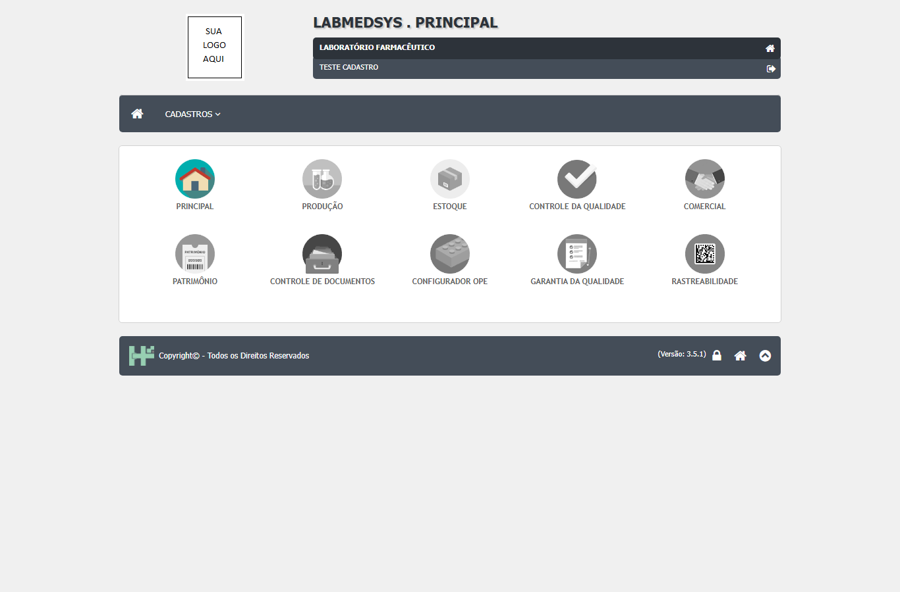
Figura 1: a tela inicial com a grade de módulos (PRINCIPAL em destaque), o menu CADASTROS e o rodapé com os ícones de cadeado, casa e topo (usuário TESTE CADASTRO).
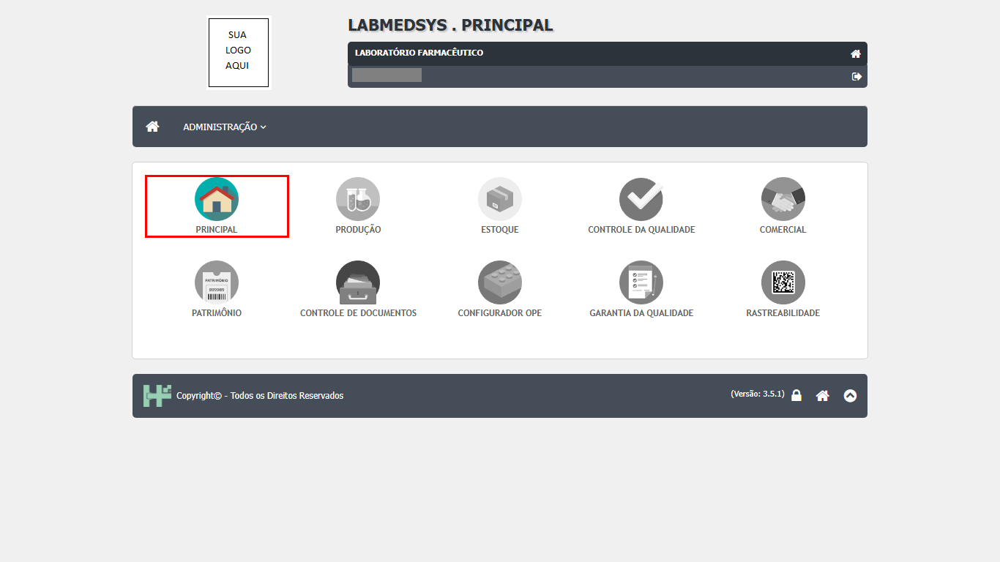
- Clique no ícone do módulo que deseja usar. O módulo abre já com o seu usuário.
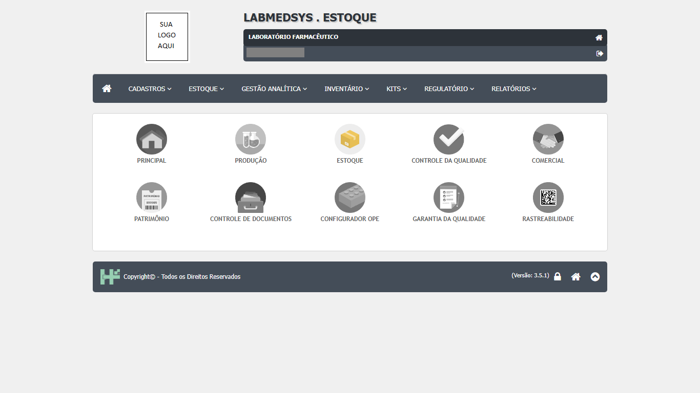
- Se aparecer "Seu perfil não possuí permissão!" ao abrir um módulo, o seu perfil não tem nenhuma tela dele. Procure o administrador.
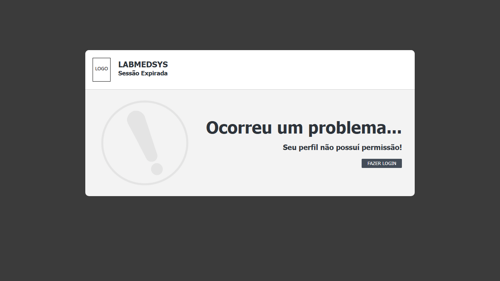
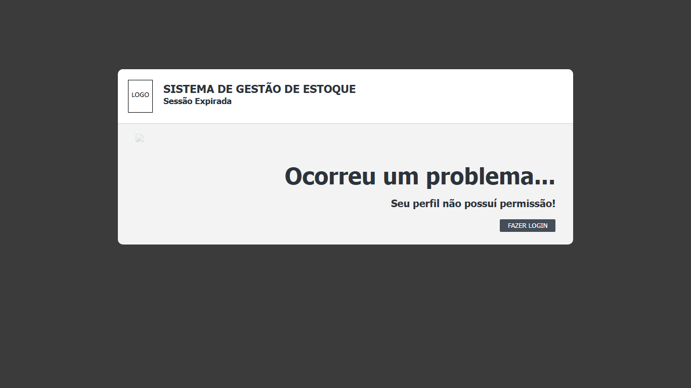
- O menu fica abaixo do cabeçalho. Cada título (por exemplo ADMINISTRAÇÃO, CADASTROS, TABELAS DE APOIO) abre a lista de telas liberadas ao seu perfil; com mais de 10 telas, o menu abre em colunas. O perfil do exemplo da Figura 1 só tem o título CADASTROS; o administrador vê três títulos.
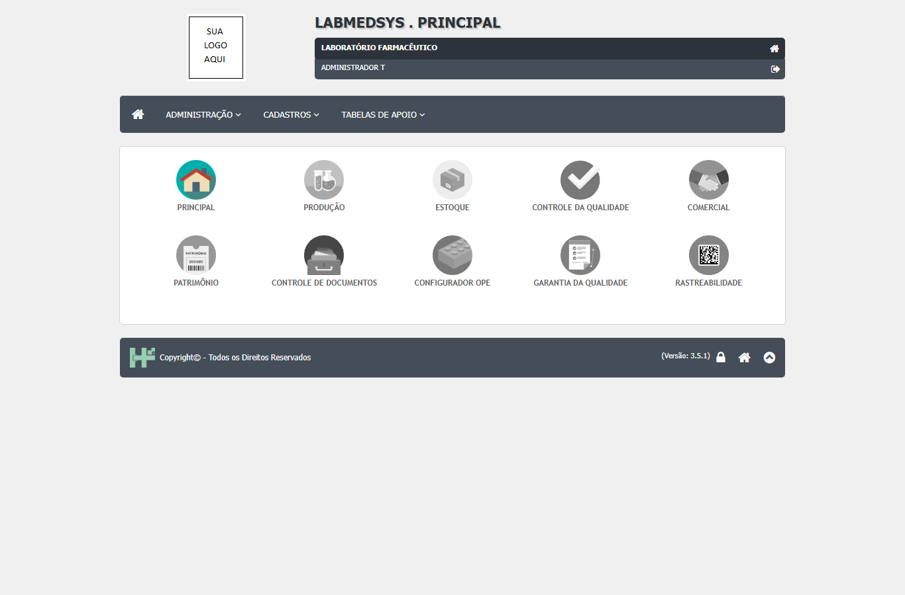
Figura 2: a mesma tela inicial com o perfil de administrador: o menu mostra ADMINISTRAÇÃO, CADASTROS e TABELAS DE APOIO, e o cabeçalho não mostra sino de avisos.
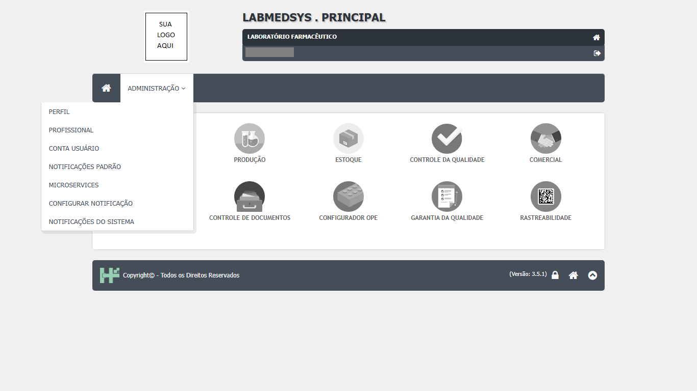
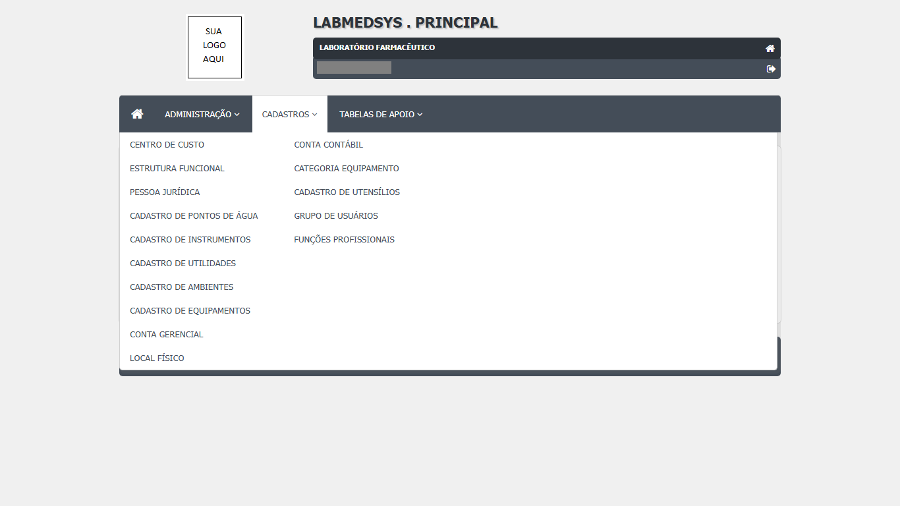
- O ícone da casa (cabeçalho e rodapé) volta à tela inicial. O ícone de saída, no canto superior direito, sai do sistema. O cadeado do rodapé troca a senha.
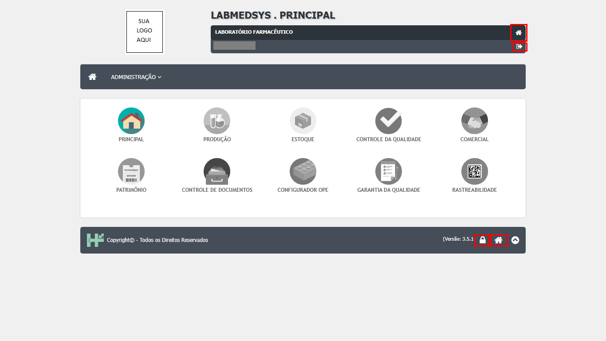
- Se houver avisos para você, o sino mostra a quantidade; ao clicar, abre a lista de Notificações do sistema (da Administração).
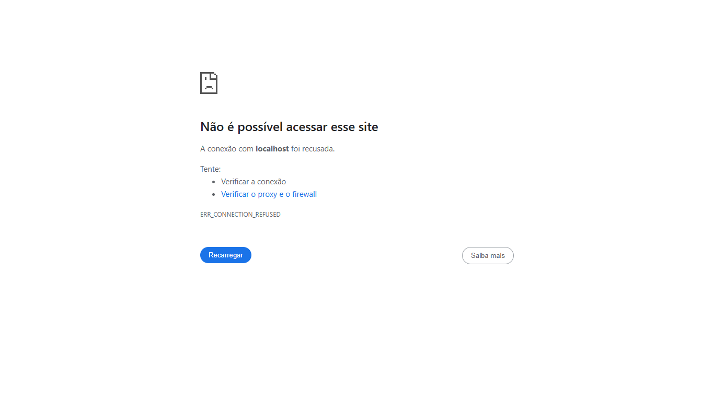
O que acontece ao confirmar ou salvar
A tela é só de consulta e navegação: nada é gravado nela. Ao clicar num módulo, o sistema abre o módulo levando o código de acesso (token) do usuário no endereço (ObterHTMLPadraoService.cs:33).
O que o sistema recusa
- Sem sessão (ou depois de a sessão expirar): "Sessão Expirada! Faça login novamente." (tela 05; CT-PRI-020 e 021).
- Módulo aberto sem nenhuma tela liberada ao perfil: "Seu perfil não possuí permissão!" dentro do módulo (CT-PRI-023). Não há imagem desta recusa a partir da grade.
- Módulo Patrimônio: o navegador mostra "conexão recusada" (DV-PRI-018).
Quem pode usar (permissões)
- A tela inicial exige sessão, mas não exige função de perfil (LaboSys_UI.Master.cs:26-29).
- Menu: mostra só as telas a que o perfil tem função (ObterHTMLPadraoService.cs:167-200). Esconder o menu não bloqueia: telas de edição, configuração, Microservices e relatórios abrem pelo endereço para quem não tem a função (DV-PRI-025, Alta; tela 05).
- Grade de módulos: igual para todos: mostra todos os módulos habilitados, com ou sem permissão (CT-PRI-023).
- Sino: aparece só para quem tem avisos pendentes; leva a uma lista da Administração que exige função própria.
Cuidados e falhas conhecidas
- DV-PRI-018 (Baixa): o ícone do módulo Patrimônio aponta para o próprio servidor local e o navegador mostra conexão recusada; os outros módulos abrem.
- DV-PRI-019 (Média): o link de cada módulo leva o token no endereço; quem copia o endereço entra como você em outro navegador, sem senha.
- A grade mostra módulos em que você não tem permissão; o aviso só vem ao abrir.
- A tela não avisa que a senha está perto de vencer.
Ícones e botões da tela
| Ícone | O que faz | Quando aparece |
|---|---|---|
| Ícone de um módulo | Abre o módulo com o seu usuário | Para cada módulo habilitado |
| Casa (Início) | Volta à tela inicial | Cabeçalho e rodapé |
| Saída | Sai do sistema (tela 04) | Cabeçalho |
| Sino com número | Abre a lista de avisos | Só quando há avisos pendentes (não aparece nas Figuras 1 e 2) |
| Cadeado "Alterar Senha" | Abre a Troca de senha (tela 02) | Rodapé |
| Seta para cima (Topo) | Sobe para o alto da página | Rodapé |
| Item do menu | Abre a tela escolhida | Para cada tela liberada ao perfil |
Campos da tela
Esta tela não tem campos de preenchimento. O que ela mostra:
| Elemento na tela | Tipo | Obrigatório | Regra, limite ou valores possíveis | Fonte |
|---|---|---|---|---|
| Nome do sistema e do módulo | Texto | Não se aplica | Vem da configuração do cliente e do módulo corrente | cabecalho.html:7; ObterHTMLPadraoService.cs:21-24 |
| Nome do cliente | Texto | Não se aplica | Vem da configuração do cliente | cabecalho.html:10 |
| Nome do usuário | Texto | Não se aplica | Mostra o nome da pessoa (não o login) | LaboSys_UI.Master.cs:50-52; cabecalho.html:14 |
| Sino de notificações | Número | Não se aplica | Aparece só se há avisos pendentes de leitura | LaboSys_UI.Master.cs:53-56 |
| Menu do módulo | Lista | Não se aplica | Itens de menu a que o usuário tem função; o menu vem da biblioteca compartilhada | LaboSys_UI.Master.cs:61-65; ObterHTMLPadraoService.cs:167-200 |
| Grade de módulos | Ícones | Não se aplica | Um ícone por módulo habilitado, com o link e o token do usuário | inicio.aspx:6; ObterHTMLPadraoService.cs:150-160 e 31-39 |
| Rodapé | Texto e ícones | Não se aplica | Direitos autorais, ícone Topo, ícone Início, cadeado "Alterar Senha" e a versão do módulo | rodape.html:3-9 |
Botões e ações
| Botão ou ação | Quando aparece | O que faz | Para onde leva | Fonte |
|---|---|---|---|---|
| Ícone de um módulo | Para cada módulo habilitado | Abre o módulo levando o token do usuário no endereço | Tela de entrada do módulo | ObterHTMLPadraoService.cs:33 |
| Ícone Início (casa) | Cabeçalho e rodapé | Volta para a tela inicial | inicio.aspx |
cabecalho.html:3 e 11; rodape.html:7 |
| Ícone Sair | Cabeçalho | Sai do sistema | Tela Sair | cabecalho.html:17 |
| Sino com número | Quando há avisos pendentes | Abre a lista de avisos | Notificações do sistema (Administração) | LaboSys_UI.Master.cs:53-56 e 70 |
| Cadeado "Alterar Senha" | Rodapé | Troca a senha | Troca de senha | rodape.html:8 |
| Ícone Topo | Rodapé | Sobe para o alto da página | Mesma página | rodape.html:6 |
| Item do menu | Para cada tela liberada ao perfil | Abre a tela | Tela escolhida | ObterHTMLPadraoService.cs:167-200 |
Mensagens do sistema
| Mensagem (texto exato do código) | Quando aparece | Fonte |
|---|---|---|
| Erro ao redirecionar para o link de notificação | A abertura de uma notificação falha (qualquer erro na tela inicial com redirect). Não vista |
inicio.aspx.cs:30-34 |
| NÃO EXISTEM ITENS PARA ESTA FUNÇÃO. | Texto do menu antigo para o grupo sem itens. Não vista (menu antigo sem uso) | Default.aspx.cs:210 |
| O usuário não tem permissão para acessar esta página! | O usuário abre uma tela do menu antigo sem permissão. Não vista | acessoNegado.aspx.cs:28 |
| Sessão Expirada! Faça login novamente. | Sessão sem uso por tempo demais ou sem login. Vista em teste: CT-PRI-020 e 021 (detalhe na tela 05) | LaboSys_UI.Master.cs:26-29 |
| Seu perfil não possuí permissão! | Aparece no módulo aberto, quando o perfil não tem nenhuma tela dele. Vista em teste: CT-PRI-023 | Default.aspx.cs:296 (no Principal) |
| A conexão foi recusada (mensagem do navegador) | Clique no módulo Patrimônio. Vista em teste: DV-PRI-018 | dml.sql:10321 |
Sair
Para que serve
Encerrar o seu acesso ao sistema. Não é uma tela com campos: é o ícone de saída do cabeçalho, que abre o endereço sair e leva ao Login. Todos os usuários usam, ao terminar o trabalho ou ao deixar o computador.
Quem usa e em que etapa do processo
Quem usa
- Todos os usuários, ao terminar o trabalho.
- Quem pode abrir, incluir, alterar, excluir, imprimir e ver o histórico está em "Quem pode usar (permissões)", mais abaixo.
Em que etapa do processo entra (tela 4 do menu Acesso ao sistema, módulo Principal)
- Clicando no ícone de saída, no canto superior direito de qualquer tela do Principal e dos outros módulos (cabecalho.html:17). Nos outros módulos o ícone leva ao Sair do Principal, não ao do próprio módulo.
- Digitando o endereço
sair, sem confirmação.
O que acontece depois (para onde o trabalho segue)
- Remove o token do usuário do serviço e abre o Login.
- Ao abrir o Login, a página zera na sessão o usuário, as funções, o menu, o login, a marca de troca de senha e o token.
- Não grava nada em banco.
Fonte: Resumo da tela e fluxo da tela (leitura do código e dos testes). O que for leitura da área precisa ser validado com a área.
Antes de começar (o que precisa existir)
Estar com a sessão aberta. Salve o que estiver fazendo: o Sair não pergunta se você tem certeza. Não há cadastro prévio.
Passo a passo
Situação das imagens (14/11/2026): imagens reaproveitadas do teste de 05/10/2026 (CT-PRI-022), cada uma conferida contra o texto. Sem imagem: o ícone marcado em vermelho, o módulo Produção ainda logado depois do Sair e o botão Voltar do navegador.
- Clique no ícone de saída, no canto superior direito do cabeçalho, ao lado do seu nome.

Figura 1: o cabeçalho do Principal com o ícone de saída à direita do nome do usuário (TESTE CADASTRO).
- O sistema abre a tela de Login. O seu acesso ao Principal terminou.
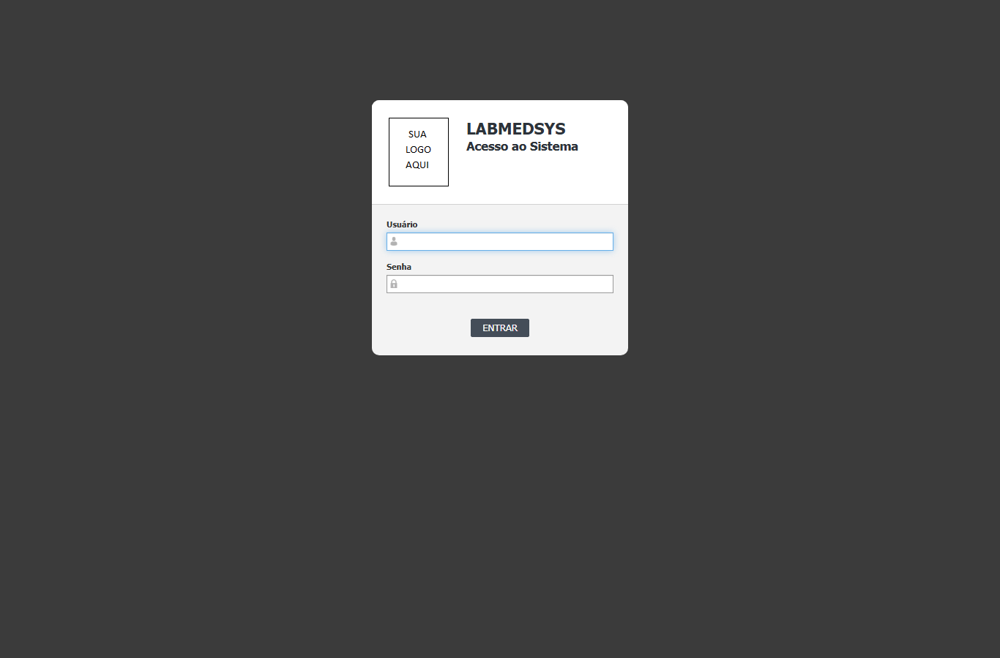
Figura 2: a tela de Login vazia, para onde o Sair leva (imagem do teste CT-PRI-022).
- Feche também as janelas dos outros módulos que estiverem abertas. Na versão atual, o Sair do Principal não encerra o acesso a eles (DV-PRI-020).

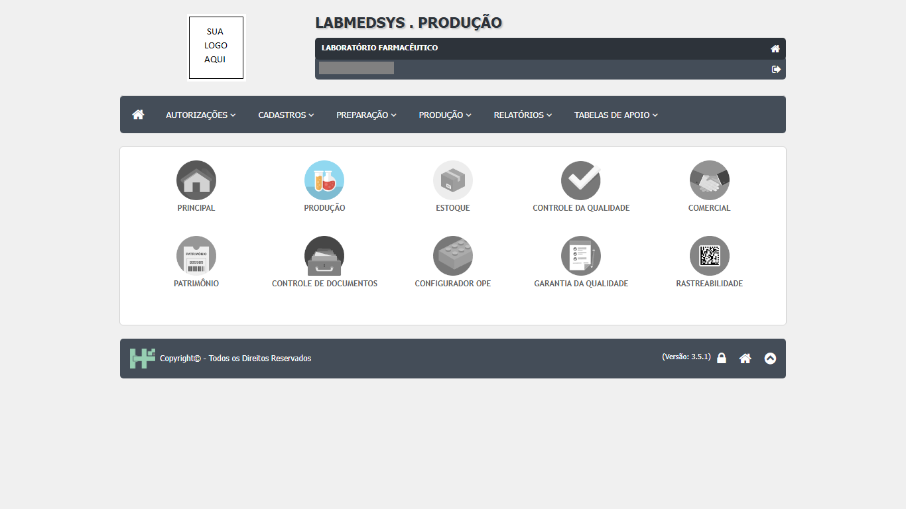
Botão Voltar do navegador: depois de sair, ele pode mostrar a última tela do Principal. É só uma cópia guardada pelo navegador: ao recarregar ou clicar em qualquer coisa, o sistema mostra a página "Sessão Expirada! Faça login novamente." com o botão FAZER LOGIN, e não a tela de Login (confirmado em 14/11/2026).


O que acontece ao confirmar ou salvar
Não há confirmação nem gravação de negócio. O Sair remove o token do usuário no serviço de autenticação e abre o Login (sair/default.aspx.cs:11-20; svcAutenticacao.cs:113-118). O link com token aberto em outro navegador depois do Sair deixa de dar acesso (CT-PRI-023). A saída não é registrada em lugar nenhum. Se a remoção do token falhar, a falha é ignorada e o usuário vai ao Login sem aviso.
O que o sistema recusa
Nada: o Sair não valida nem mostra mensagem. O endereço sair abre para qualquer pessoa e leva ao Login.
Quem pode usar (permissões)
- O ícone de saída aparece no cabeçalho de todas as telas com a moldura padrão.
- O endereço
sairnão exige sessão nem função (sair/default.aspx.cs não confere o usuário). - Ponto para validar com a área: o Sair é uma abertura de endereço sem confirmação (CT-PRI-ACE04-01 propõe testar o efeito na sessão do servidor).
Cuidados e falhas conhecidas
- DV-PRI-020 (Média): o Sair do Principal não encerra a sessão dos outros módulos: no teste, o módulo Produção continuou logado como o mesmo usuário. Em computador compartilhado, a próxima pessoa usa o módulo aberto com as permissões de quem saiu.
- Não pede confirmação.
- Não registra a saída.
Ícones e botões da tela
| Ícone | O que faz | Quando aparece |
|---|---|---|
| Ícone de saída | Abre o endereço sair, remove o token e leva ao Login |
Cabeçalho de todas as telas com a moldura padrão |
Campos da tela
Esta tela não tem campos nem mostra nada ao usuário. Os únicos elementos são o ícone de saída e o texto "Sair" que aparece ao parar o mouse sobre ele.
| Elemento | Tipo | Obrigatório | Regra, limite ou valores possíveis | Fonte |
|---|---|---|---|---|
| Ícone de saída | Link | Não se aplica | Aponta para o Sair do Principal, com o endereço do Principal vindo da configuração do cliente | cabecalho.html:17 |
| Parâmetros | Nenhum | Não se aplica | A página não lê nenhum parâmetro. Usa o token guardado na sessão | sair/default.aspx.cs:14 |
Botões e ações
| Botão ou ação | Quando aparece | O que faz | Para onde leva | Fonte |
|---|---|---|---|---|
| Ícone de saída | Cabeçalho de todas as telas | Abre o endereço sair |
Login | cabecalho.html:17 |
Abrir o endereço sair |
Sempre | Remove o token do usuário do serviço e abre o Login. Não precisa de confirmação | Login | sair/default.aspx.cs:11-20 |
Mensagens do sistema
Não há mensagem. Se a sessão já expirou ou o token falta, o erro é engolido e o usuário vai ao Login sem aviso (sair/default.aspx.cs:11-18).
| Mensagem (texto exato do código) | Quando aparece | Fonte |
|---|---|---|
| (nenhuma) | O Sair nunca mostra mensagem. Em caso de falha ao remover o token, a falha é ignorada | sair/default.aspx.cs:16-18 |
Sessão expirada e acesso negado
Para que serve
São duas páginas de aviso que o sistema abre sozinho, sem item de menu. Dizem, sem mostrar dado nenhum, por que a tela pedida não abriu. Sessão Expirada: o sistema não sabe mais quem é o usuário (ficou parado por tempo demais, saiu do sistema ou nunca entrou). Acesso Negado: o sistema sabe quem é, mas o perfil não tem a função da tela. Em ambas, a saída é voltar ao Login. Todos os usuários podem vê-las, sem querer.
Quem usa e em que etapa do processo
Quem usa
- Todos os usuários, sem querer: as páginas aparecem quando algo impede o uso da tela pedida.
- Quem pode abrir, incluir, alterar, excluir, imprimir e ver o histórico está em "Quem pode usar (permissões)", mais abaixo.
Em que etapa do processo entra (tela 5 do menu Acesso ao sistema, módulo Principal)
- Sessão Expirada: quando a leitura do usuário logado vem vazia, quando a moldura das telas não acha o usuário na sessão e quando a página de relatório de perfil não acha o usuário.
- Acesso Negado: quando uma lista (ou outra tela que chame a verificação) não encontra a função do usuário; quando o login por token falha.
- Digitando o endereço das páginas.
O que acontece depois (para onde o trabalho segue)
- Nada é gravado. O botão "Fazer Login" abre a tela de Login, que limpa a sessão local.
Fonte: Resumo da tela e fluxo da tela (leitura do código e dos testes). O que for leitura da área precisa ser validado com a área.
Antes de começar (o que precisa existir)
Nada a cadastrar: as páginas aparecem quando algo impede o uso da tela pedida. Para que o Acesso Negado não apareça, o perfil precisa ter a função da tela (Administração › Perfil).
Passo a passo
Situação das imagens (14/11/2026): imagens reaproveitadas dos testes de 05/10/2026, cada uma conferida contra o texto. Sem imagem: a sessão expirando durante o uso e a página técnica de erro do envio forçado (não usada por mostrar texto técnico).
Se aparecer "Sessão Expirada!"
- A sessão terminou porque a tela ficou parada (no teste, entre 10 e 20 minutos; o tempo não está configurado, CT-PRI-021), porque você saiu do sistema ou porque fechou e reabriu o navegador.
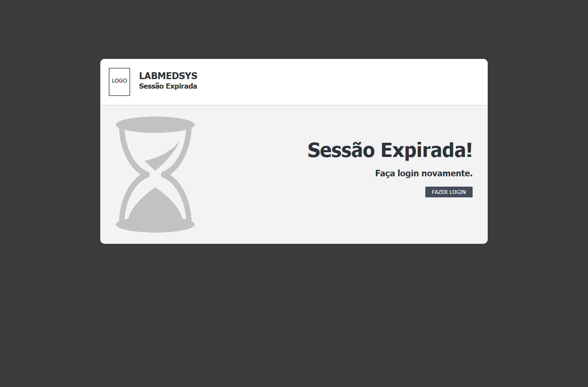
Figura 1: a página "Sessão Expirada!" com a frase "Faça login novamente." e o botão FAZER LOGIN.

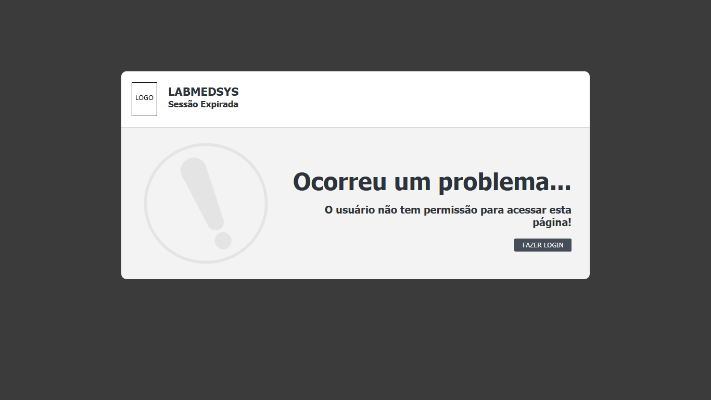
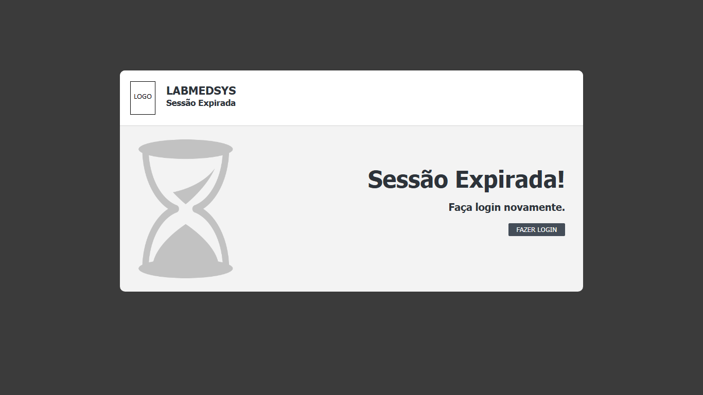
- Clique em FAZER LOGIN e entre de novo.
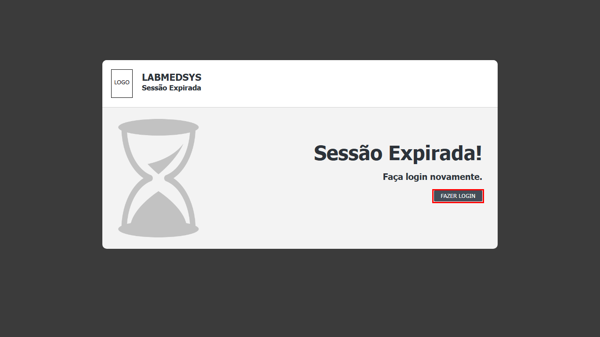

- O que estava sendo digitado e não foi gravado se perde. Salve com frequência.
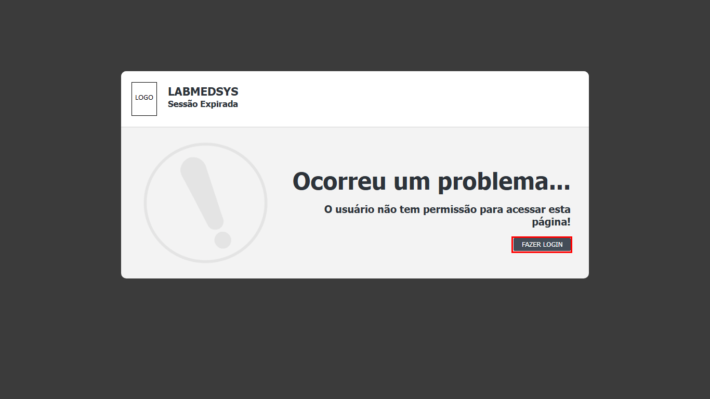

Se aparecer "Ocorreu um problema..."
- Leia a frase abaixo do título. "O usuário não tem permissão para acessar esta página!" significa que o seu perfil não tem a tela. Procure o administrador.
Figura 2: a página de Acesso Negado: "Ocorreu um problema..." e "O usuário não tem permissão para acessar esta página!". O subtítulo "Sessão Expirada" aparece mesmo aqui.
- Atenção: o cabeçalho desta página diz "Sessão Expirada" mesmo quando o assunto é a permissão (acessoNegado.aspx:24). Ignore o cabeçalho e leia a frase.
- Clique em FAZER LOGIN. Atenção: o botão limpa a sessão inteira e abre o Login; quem só não tinha permissão para uma tela perde o acesso a todas e precisa entrar de novo (confirmado em 14/11/2026).

O que acontece ao confirmar ou salvar
Nada é gravado: as duas páginas só informam. O botão FAZER LOGIN abre a tela de Login, que limpa a sessão local (sessaoExpirada.aspx.cs:18-21; acessoNegado.aspx.cs:34-37). As páginas não registram quem tentou abrir o quê.
O que o sistema recusa
| Situação | O que a página mostra | Imagem |
|---|---|---|
| Tela aberta sem login, ou sessão parada por tempo demais (CT-PRI-020 e 021) | "Sessão Expirada! Faça login novamente." | Figura 1 |
| Lista aberta por quem não tem a função (CT-PRI-060, 062, 064 e 069) | "Ocorreu um problema... O usuário não tem permissão para acessar esta página!" | Figura 2 |
| Endereço com token que não vale mais (por exemplo, depois do Sair; CT-PRI-022) | "Ocorreu um problema... Usuário não autenticado!" | Figura 3 |
Figura 3: a página de Acesso Negado com a frase "Usuário não autenticado!" (imagem do teste CT-PRI-022, link com token depois do Sair).
Quem pode usar (permissões)
- As duas páginas abrem para qualquer pessoa, mesmo sem login: não exigem sessão nem função.
- O botão FAZER LOGIN aparece para todos.
- A verificação de função (Acesso Negado) está na classe-base das listas e em poucas telas; as telas de edição, configuração, Microservices e relatórios não a chamam e abrem pelo endereço (DV-PRI-025). Só considera funções do Principal.
Cuidados e falhas conhecidas
- DV-PRI-025 (Alta): as telas de edição, configuração, Microservices, grupo de usuário e relatórios abrem pelo endereço para quem não tem a função, sem chegar a esta página (CT-PRI-061, 063, 065, 066, 067 e 068). Não foi testado se elas gravam.
- DV-PRI-026 (Média): um envio forçado de formulário mostra a página técnica do servidor, em vez desta página (CT-PRI-070 e 071).
- O Acesso Negado traz o subtítulo "Sessão Expirada", o que confunde (Figura 2).
- Os títulos das abas do navegador são "BASE" (Sessão Expirada) e vazio (Acesso Negado).
- Nenhuma das duas avisa antes de a sessão expirar.
Botões da tela
| Botão | Quando aparece | O que faz | Para onde leva |
|---|---|---|---|
| FAZER LOGIN | Nas duas páginas | Abre a tela de Login | Login |
Campos da tela
Estas páginas não têm campos de preenchimento. O que cada uma mostra:
| Elemento na tela | Tipo | Obrigatório | Regra, limite ou valores possíveis | Fonte |
|---|---|---|---|---|
| Logotipo e nome do sistema | Imagem e texto | Não se aplica | Mostra o logotipo do relatório e o nome do sistema configurado | sessaoExpirada.aspx:26-30; acessoNegado.aspx:19-23 |
| Subtítulo "Sessão Expirada" | Texto fixo | Não se aplica | Aparece nas duas páginas, inclusive na de Acesso Negado | sessaoExpirada.aspx:31; acessoNegado.aspx:24 |
| Título e frase | Texto | Não se aplica | Sessão Expirada: "Sessão Expirada!" e "Faça login novamente." (fixos). Acesso Negado: "Ocorreu um problema..." e a frase do motivo | sessaoExpirada.aspx:40-41; acessoNegado.aspx:33-34 |
| Frase do motivo (só no Acesso Negado) | Texto | Não se aplica | "Usuário não autenticado!" se o endereço trouxer token; o texto do parâmetro msgErro, se vier; senão, "O usuário não tem permissão para acessar esta página!" |
acessoNegado.aspx.cs:13-29 |
| Título da aba do navegador | Texto | Não se aplica | Sessão Expirada: "BASE". Acesso Negado: vazio | sessaoExpirada.aspx:8; acessoNegado.aspx:7 |
Botões e ações
| Botão ou ação | Quando aparece | O que faz | Para onde leva | Fonte |
|---|---|---|---|---|
| Fazer Login | Nas duas páginas | Abre a tela de Login | Login | sessaoExpirada.aspx:43; acessoNegado.aspx:36; sessaoExpirada.aspx.cs:18-21; acessoNegado.aspx.cs:34-37 |
Mensagens do sistema
Nem todas foram vistas numa tela. As marcadas "vista em teste" aparecem no resultado da rodada de 05 e 06/10/2026.
| Mensagem (texto exato do código) | Quando aparece | Fonte |
|---|---|---|
| Sessão Expirada! / Faça login novamente. | Sem sessão. Vista em teste: CT-PRI-020 e 021 | sessaoExpirada.aspx:40-41 |
| Ocorreu um problema... | Título fixo do Acesso Negado. Visto em teste: CT-PRI-060 (a frase exata não foi registrada) | acessoNegado.aspx:33 |
| O usuário não tem permissão para acessar esta página! | Acesso Negado sem parâmetro. É a frase das listas negadas (CT-PRI-060, 062, 064, 069); o texto da tela não foi anotado | acessoNegado.aspx.cs:28 |
| Usuário não autenticado! | Acesso Negado com o parâmetro token: token inválido ou vencido na entrada por token. Não vista |
acessoNegado.aspx.cs:15-17; Default.aspx.cs:64 |
| Seu perfil não possuí permissão! | Frase enviada pelo Login por token quando o perfil não tem nenhuma função (com o erro de acentuação "possuí"). Não vista nesta página | Default.aspx.cs:54; acessoNegado.aspx.cs:22-24 |
| Erro ao acessar este usuário! | Frase enviada pelo Login por token quando o usuário não é encontrado. Não vista | Default.aspx.cs:59 |
Notificações do usuário
Este manual descreve o que o código permite. A página não foi aberta em nenhum teste de tela.
Para que serve
Mostrar ao usuário, em páginas de 10, os avisos que o sistema enviou a ele (por exemplo, "Novo Profissional foi cadastrado. Providenciar Criação de Login e Configuração de Perfil."). Cada aviso diz a origem, a mensagem, há quanto tempo foi enviado e se já foi lido. Clicar no aviso o marca como lido e leva ao assunto, se houver link. Quem recebe avisos usa; os destinatários de cada aviso são definidos na tela Notificações padrão (Administração).
Quem usa e em que etapa do processo
Quem usa
- Qualquer usuário que receba avisos. Os destinatários de cada aviso são definidos na tela Notificações padrão (Administração).
- Quem pode abrir, incluir, alterar, excluir, imprimir e ver o histórico está em "Quem pode usar (permissões)", mais abaixo.
Em que etapa do processo entra (tela 6 do menu Acesso ao sistema, módulo Principal)
- Pelo endereço
notificacao/. Nenhum menu, cabeçalho ou rodapé do código leva a ela. O sino do cabeçalho leva a outra tela, a lista de Notificações do sistema, da Administração. - A página
notificacoes.aspx(protótipo) existe no código, mas neste ambiente de teste o endereço dá erro 404 (a página não está publicada); em 14/11/2026 não abriu.
O que acontece depois (para onde o trabalho segue)
- A tela não grava dados de negócio. O clique em um aviso passa pela tela inicial, que grava a data do clique e da leitura do aviso e redireciona para o endereço do aviso.
Fonte: Resumo da tela e fluxo da tela (leitura do código e dos testes). O que for leitura da área precisa ser validado com a área.
Antes de começar (o que precisa existir)
| Precisa existir | Para quê | Onde se cadastra |
|---|---|---|
| Sessão aberta | A página exige sessão | Login (tela 01) |
| Destinatários configurados para cada tipo de aviso | Sem destinatário ninguém recebe aviso: os destinatários padrão começam vazios na carga do banco | Administração › Notificações padrão |
| O endereço da página | Não há menu, cabeçalho nem rodapé que leve a ela: é preciso digitar notificacao/ depois do endereço do sistema |
Ponto para validar com a área (o menu vem do banco) |
Passo a passo
Situação das imagens (14/11/2026): imagens reaproveitadas do teste de 26/10/2026, cada uma conferida contra o texto. Sem imagem: toda a página de avisos (lista, paginação, círculo de lido, clique no aviso), porque a página nunca foi aberta em teste. As imagens de notificação dos testes são das telas Notificações do sistema e Notificações padrão, que são outras telas.
- Entre no sistema. A tela inicial não tem link nem contador de avisos para esta página.

Figura 1: a tela inicial do administrador, sem sino nem link de avisos no cabeçalho, no menu ou no rodapé.

- Digite o endereço
notificacao/depois do endereço do sistema. A página mostra o título "Notificações" e a lista de avisos, do mais recente para o mais antigo, 10 por página (NotificacoesRepository.cs:16-23).
- Cada aviso mostra o título (origem), o texto, há quanto tempo foi enviado e um círculo cheio (não lido) ou vazio (lido).
- Use os números de página no alto e no pé da lista para navegar.
- Clique no aviso para abri-lo: ele é marcado como lido e o sistema leva ao assunto. Os avisos criados pelas notificações padrão não têm link, então o clique só marca como lido (EnviarNotificacaoService.cs:97-100).
O que acontece ao confirmar ou salvar
A página não grava dados de negócio. O clique em um aviso passa pela tela inicial (inicio.aspx?id=...&redirect=...), que grava a data do clique e da leitura do aviso e redireciona para o endereço dele (inicio.aspx.cs:18-35; MarcarNotificacaoService.cs:11-21).
O que o sistema recusa
Nada é validado pela página. Se a abertura de um aviso falhar, aparece "Erro ao redirecionar para o link de notificação" (inicio.aspx.cs:30-34; não vista). Usuário sem avisos vê a lista vazia, sem frase "nenhum aviso".
Quem pode usar (permissões)
- A página usa a moldura padrão, que exige sessão, e não exige função de perfil: qualquer usuário logado a abre.
- O sino do cabeçalho leva a outra tela (Notificações do sistema, da Administração), que exige função própria.
- Pelo código, a chamada que entrega a lista não confere quem está logado: quem souber o número de outro usuário pode ler os avisos dele (RN-PRI-ACE06-010; não testado, CT-PRI-ACE06-01).
Cuidados e falhas conhecidas
- Nenhum defeito DV-PRI confirmado: a página não foi testada.
- Os links "Marcar como lida" e "Configurações" no alto da lista não fazem nada.
- A página não mostra avisos novos sozinha: é preciso recarregar.
- Não permite apagar, filtrar nem buscar avisos.
- Existe também
notificacoes.aspx, um protótipo só de desenho, com texto de exemplo e links vazios. - O texto do aviso é inserido na página sem tratamento; pelo código, um nome digitado com marcação de página poderia ser executado no navegador de quem abre (não testado, CT-PRI-ACE06-02).
Ícones e botões da lista
| Ícone ou elemento | O que faz | Quando aparece |
|---|---|---|
| Círculo cheio ou vazio | Cheio: não lido. Vazio: lido | Em cada aviso |
| Clique no aviso (texto ou círculo) | Marca como lido e abre o assunto, se houver link | Em todo aviso |
| Números de página | Navegam de 10 em 10 avisos | No alto e no pé da lista |
| Marcar como lida | Configurações | Sem ação | No alto da lista |
Campos da tela
Esta tela não tem campos de preenchimento. O que ela mostra:
| Elemento na tela | Tipo | Obrigatório | Regra, limite ou valores possíveis | Fonte |
|---|---|---|---|---|
| Título "Notificações" | Texto fixo | Não se aplica | Fixo | notificacao/default.aspx:10 |
| Números de página (no alto e no pé) | Links | Não se aplica | Uma página por 10 avisos, arredondando para cima | notificacoes.js:155-175; NotificacoesRepository.cs:55-61 |
| Origem do aviso | Texto | Não se aplica | Texto da origem gravado no aviso; nos avisos das notificações padrão é "LABMEDSYS" | notificacoes.js:143; EnviarNotificacaoService.cs:98 |
| Mensagem | Texto | Não se aplica | Texto do aviso, inserido na página sem tratamento (ver segurança) | notificacoes.js:144 |
| Tempo decorrido e data | Texto | Não se aplica | "há N minutos..." e, ao parar o mouse, o dia da semana, a data e a hora | notificacoes.js:145; ObterNotificacoesService.cs:217-226 |
| Círculo de lido ou não lido | Ícone | Não se aplica | Cheio: não lido. Vazio: lido | notificacoes.js:149 |
| Marcar como lida | Configurações | Links | Não se aplica | Sem ação | notificacoes.js:125 |
Botões e ações
| Botão ou ação | Quando aparece | O que faz | Para onde leva | Fonte |
|---|---|---|---|---|
| Clique no aviso (texto ou círculo) | Em todo aviso | Abre o endereço do aviso pela tela inicial, que marca o clique e a leitura | O assunto do aviso ou a própria tela inicial se o link for "#" | notificacoes.js:140-151; inicio.aspx.cs:18-35 |
| Número de página | Quando há mais de uma página | Carrega a página escolhida | Mesma tela | notificacoes.js:134-136 e 163-165 |
| Marcar como lida | Alto da lista | Nada (link vazio) | — | notificacoes.js:125 |
| Configurações | Alto da lista | Nada (link vazio) | — | notificacoes.js:125 |
Mensagens do sistema
Nenhuma mensagem de texto fixo própria foi encontrada. Nada foi visto em tela.
| Mensagem (texto exato do código) | Quando aparece | Fonte |
|---|---|---|
| Erro ao redirecionar para o link de notificação | Qualquer erro ao abrir um aviso pela tela inicial. Não vista | inicio.aspx.cs:30-34 |
| (lista vazia, sem texto) | Usuário sem avisos: a lista aparece vazia, sem frase "nenhum aviso" | notificacoes.js:118-125 |
Visualização de relatórios
Para que serve
Mostrar ao usuário, em tela, em papel ou em planilha, os dados que ele filtrou na lista de um cadastro: ambientes, equipamentos, pessoas jurídicas, profissionais, contas, perfis e os demais. Não é uma tela com item de menu: são páginas de apoio abertas pelos botões IMPRIMIR e Excel das listas e pelo botão "Imprimir Perfils" da Conta usuário. Cada relatório traz o nome do cliente, o usuário que o gerou, a data e hora e o filtro aplicado. Quem tem a função de impressão e exportação do cadastro usa.
Quem usa e em que etapa do processo
Quem usa
- Quem tem a função de impressão e exportação em cada cadastro, ao clicar em Imprimir ou no ícone do Excel.
- Quem pode abrir, incluir, alterar, excluir, imprimir e ver o histórico está em "Quem pode usar (permissões)", mais abaixo.
Em que etapa do processo entra (tela 7 do menu Acesso ao sistema, módulo Principal)
- Pelo botão Imprimir de qualquer lista com relatório: abre o
_rel.aspxdo cadastro em nova janela. - Pelo botão do Excel da lista: baixa o arquivo.
- Pelo botão Imprimir Perfils da lista da Conta usuário: abre
VisualizaRelatorio.aspx?Relatorio=RPT_USUARIO_PERFIL&idUsuario=...em nova janela. viewRelatorios.aspxnão é chamada por nenhuma página (busca no código).
O que acontece depois (para onde o trabalho segue)
- A tela não grava dados. A janela do relatório pode ser impressa pelo navegador, e o Excel é baixado pelo navegador.
Fonte: Resumo da tela e fluxo da tela (leitura do código e dos testes). O que for leitura da área precisa ser validado com a área.
Antes de começar (o que precisa existir)
| Precisa existir | Para quê | Onde se cadastra |
|---|---|---|
| Uma pesquisa feita na lista do cadastro, com resultado | O relatório mostra o que você filtrou; IMPRIMIR e Excel só aparecem com resultado | A lista de cada cadastro |
| Função de impressão e exportação no cadastro | Os botões só aparecem para quem a tem | Administração › Perfil |
Passo a passo
Situação das imagens (14/11/2026): imagens reaproveitadas dos testes de 05/10/2026 e 26/10/2026, cada uma conferida contra o texto. Sem imagem: os botões IMPRIMIR e Excel marcados em vermelho, o arquivo .xls baixado, o "Imprimir Perfils" com dados e a pergunta "Deseja imprimir este relatório?".
Imprimir
- Na lista do cadastro, preencha os filtros e clique em PESQUISAR.
- Clique em IMPRIMIR. Abre uma janela com o relatório, que traz o cliente, o usuário, a data e hora e o filtro.

Figura 1: o relatório de cadastro de ambientes aberto pelo IMPRIMIR da lista: cabeçalho com o cliente, a data e o usuário, o filtro "Descrição TESTE AMBIENTE" e as três linhas encontradas.
Figura 2: o relatório de usuário (profissional) com o filtro Descrição "TESTE": uma ficha por pessoa, com os dados cadastrais (aqui, só os primeiros registros do relatório)

Figura 3: o relatório de perfil: traz só o nome do perfil, sem as funções liberadas.
Figura 4: o relatório de conta de usuário com o filtro "Nome TESTE": login, validade da conta, data de expiração, período da senha e perfil de cada conta.
- Use o recurso de imprimir do navegador.
Exportar para Excel
- Depois de pesquisar, clique no ícone do Excel.
- O navegador baixa um arquivo
.xlscom o título do relatório (por exemplorelatório_de_cadastro_de_ambientes.xls). É uma página de relatório gravada com a extensão do Excel: o Excel pode avisar sobre o formato ao abrir (sem imagem).
Relatório de perfil de um usuário
- Na lista da Conta usuário, clique em "Imprimir Perfils" na linha do usuário.
- Abre o visualizador de relatórios com os dados do profissional (data de cadastro, nome, CPF, ativo) e a lista dos perfis dele (sem imagem com dados).
O que o relatório mostra e o que ele grava
O relatório mostra o cabeçalho (cliente, usuário, data e hora), o filtro usado e as linhas da pesquisa; o Excel traz o mesmo conteúdo (CT-PRI-097: Ambiente, Equipamento e Pessoa jurídica, a lista e o arquivo com as mesmas linhas). Não grava nada, não registra quem imprimiu ou exportou e não mostra as funções liberadas em cada perfil nem a data da última alteração (CT-PRI-054).
O que o sistema recusa
Nenhuma mensagem de erro própria: se a consulta falhar, o erro sobe como exceção (usuario_rel.aspx.cs:103-106). Só existe a pergunta "Deseja imprimir este relatório?" (relatorio.aspx:77-83; não vista). Digitar o endereço do relatório direto, sem passar pela lista, devolve vazio ou "Exibir Tudo", conforme o filtro guardado na sessão (CT-PRI-054 e 068; as duas observações divergem, ver Divergências).
Quem pode usar (permissões)
- Os botões IMPRIMIR e Excel das listas aparecem para quem tem a função de impressão e exportação do cadastro (CT-PRI-051).
- As páginas dos relatórios não conferem função nem sessão por conta própria (relatorio.aspx.cs:18; usuario_rel.aspx.cs:14-108): DV-PRI-025 (Alta).
- O visualizador de perfil exige só que exista o usuário na sessão e recebe o número do usuário no endereço, sem conferir função (não testado).
Cuidados e falhas conhecidas
-
Falhas confirmadas em 14/11/2026 (robô P1): depois de abrir um relatório, IMPRIMIR e Excel somem da lista até pesquisar de novo (DV-PRI-057); "Imprimir Perfils" abre o visualizador em branco no Chrome e no Edge (DV-PRI-058); a página-modelo
relatorio.aspx, com cabeçalho de outro cliente, abre pelo endereço (DV-PRI-059). O arquivo .xls exportado é uma página HTML com a extensão do Excel; não foi aberto no Excel nem foi vista a pergunta "Deseja imprimir este relatório?". -
DV-PRI-025 (Alta): os relatórios de usuário e de perfil abrem pelo endereço para quem não tem permissão de Administração (CT-PRI-068).
Figura 5: o relatório de perfil aberto pelo usuário T.SEMADMIN (campo USUÁRIO do cabeçalho), que não tem permissão de Administração.
- Nenhum relatório lista as funções de cada perfil nem a data da última alteração: serve mal para a revisão periódica de acessos.
- O Excel é uma página gravada como
.xls. - Não registra quem imprimiu ou exportou.
- Ponto para validar com a área:
viewRelatorios.aspxé um visualizador sem relatório ligado e nenhuma página o chama.
Botões da tela
| Botão ou ação | Quando aparece | O que faz | Para onde leva |
|---|---|---|---|
| IMPRIMIR (na lista do cadastro) | Com resultado e função de impressão | Abre o relatório em nova janela, com o filtro da lista | Janela do relatório |
| Ícone do Excel (na lista) | Com resultado e função de impressão | Baixa o relatório como .xls |
Download |
| Imprimir Perfils (Conta usuário) | Em cada linha da lista | Abre o relatório Usuário - Perfil | Visualizador |
| Botões do visualizador | Na página do relatório de perfil | Imprimir pelo visualizador | Impressão |
Campos da tela
Estas páginas não têm campos de preenchimento. O filtro vem da lista que as chamou. O que cada relatório traz:
| Elemento no relatório | Tipo | Obrigatório | Regra, limite ou valores possíveis | Fonte |
|---|---|---|---|---|
| Nome do cliente / unidade | Texto | Não se aplica | Vem da configuração do cliente | relatorio.aspx.cs:73-74 |
| Relatório | Texto | Não se aplica | Título definido por cada cadastro (por exemplo, RELATÓRIO DE USUÁRIO) | usuario_rel.aspx.cs:33 |
| Usuário | Texto | Não se aplica | Login de quem gerou o relatório | relatorio.aspx.cs:67 |
| Data e hora | Texto | Não se aplica | Data e hora do servidor no momento de abrir o relatório | relatorio.aspx.cs:68-70 |
| Filtro | Texto | Não se aplica | Resumo dos filtros usados, ou "Exibir Tudo" | usuario_rel.aspx.cs:31-92 |
| Linhas do relatório | Tabela | Não se aplica | Uma linha por registro da lista filtrada, com os campos de cada cadastro; os valores entram na página como estão no banco | relatorio.aspx.cs:134-170 |
| Modelo de exemplo da base (relatorio.aspx) | Texto fixo | Não se aplica | Cabeçalho "RELATÓRIO - COORDENAÇÃO DE EMERGÊNCIA REGIONAL CENTROxx" e colunas Código, Descrição e Ativo | relatorio.aspx:33 e 56-58 |
| Relatório Usuário - Perfil | Visualizador | Não se aplica | Mostra título "USUÁRIO - PERFIL", cliente, logotipo, data de cadastro, nome, CPF, situação e os perfis do usuário | VisualizaRelatorio.aspx.cs:94-126 |
Botões e ações
| Botão ou ação | Quando aparece | O que faz | Para onde leva | Fonte |
|---|---|---|---|---|
| IMPRIMIR (na lista do cadastro) | Se há resultado e o usuário tem a função de impressão | Abre o relatório do cadastro em nova janela, com o filtro da lista | Janela do relatório | usuario_lst.aspx.cs:189-216 |
| Ícone do Excel (na lista) | Se há resultado e o usuário tem a função de impressão | Baixa o relatório como arquivo .xls |
Download | usuario_lst.aspx.cs:220-242; relatorio.aspx.cs:48-59 |
| Imprimir Perfils (na lista da Conta usuário) | Para cada linha | Abre o relatório Usuário - Perfil daquele usuário | Visualizador | usuario_conta_lst.aspx.cs:420-431 |
| Botões do visualizador | Na página VisualizaRelatorio | Imprimir pelo visualizador | — | VisualizaRelatorio.aspx.cs:85 |
Mensagens do sistema
| Mensagem (texto exato do código) | Quando aparece | Fonte |
|---|---|---|
| Deseja imprimir este relatório? | Pergunta do modelo base ao imprimir (função JavaScript do modelo). Não vista | relatorio.aspx:77-83 |
| (nenhuma mensagem de erro própria) | As páginas não tratam falhas de consulta: o erro sobe como exceção (usuario_rel.aspx.cs:103-106) | relatorio.aspx.cs; usuario_rel.aspx.cs:103-106 |
Menu Administração
Profissional
Para que serve
O Profissional é o cadastro das pessoas que trabalham na fábrica e usam o sistema: dados pessoais e documentos, endereço, contatos, setor, cargo, matrícula, grupo, ocupações (CBO, a classificação oficial de ocupações) e funções profissionais. Quem mantém o cadastro de pessoal (Administração do sistema e Recursos Humanos, a validar com a área) usa a tela quando uma pessoa entra, muda de função ou sai. A conta de acesso (login e senha) é criada depois, na tela Conta usuário, ligada a este mesmo cadastro.
Quem usa e em que etapa do processo
Quem usa
- Inferência, a validar com a área: a Administração do sistema e Recursos Humanos, para cadastrar e manter as pessoas; a Garantia da Qualidade, para conferir funções e qualificações.
- Quem pode abrir, incluir, alterar, excluir, imprimir e ver o histórico está em "Quem pode usar (permissões)", mais abaixo.
Em que etapa do processo entra (tela 1 do menu Administração, módulo Principal)
- Pelo menu Administração › Profissional.
- Pelo botão VOLTAR da própria tela de edição e depois de salvar ou excluir, pelo botão OK.
- Pela Conta usuário, que parte do cadastro do profissional.
O que acontece depois (para onde o trabalho segue)
- Incluir: grava o profissional, as ocupações e as funções escolhidas, registra "INCLUSÃO DO REGISTRO" no histórico e envia o aviso padrão 1 ("Novo Profissional... foi cadastrado. Providenciar Criação de Login e Configuração de Perfil.") com o nome e o CPF. Volta à lista com "Inclusão realizada com sucesso!".
- Alterar: exige justificativa, grava os campos, apaga e regrava todas as ocupações e funções do profissional e registra no histórico cada campo alterado. Volta à lista com "Alteração realizada com sucesso!".
- Inativar: é uma alteração com a justificativa de inativação. O profissional inativo não entra no sistema.
- Excluir: abre uma tela própria; com a justificativa, o profissional vai para a lixeira (LIXEIRA = 1) e some da lista. Volta à lista com "Exclusão realizada com sucesso!".
Fonte: Resumo da tela e fluxo da tela (leitura do código e dos testes). O que for leitura da área precisa ser validado com a área.
Antes de começar (o que precisa existir)
| Precisa existir | Para quê | Onde se cadastra |
|---|---|---|
| Documentos da pessoa (CPF, nome da mãe, data de nascimento, endereço com CEP) | São campos obrigatórios do cadastro | Com a própria pessoa ou com o RH |
| Grupo (obrigatório quando o módulo Estoque está ativo) | Define a que almoxarifados a pessoa tem acesso no Estoque | Menu Administração › Grupo de usuários |
| Função profissional (se a pessoa exerce alguma) | Aparece na grade Funções; outros módulos usam, por exemplo, para saber quem é Auditor | Menu Administração › Funções profissionais |
| Setor (opcional) | Lista de locais da Estrutura funcional | Cadastro de locais (Estrutura funcional) |
Passo a passo
Situação das imagens (14/11/2026, atualizada com o robô P2): imagens das rodadas de 05/10 e 26/10/2026 e da rodada de prints do robô P2, cada uma conferida contra o texto. O que ainda não tem imagem está listado em 1.principal/prints/pendentes-menu-administracao.csv.
Consultar a lista
- No menu, abra Administração › Profissional. A tela mostra o quadro "Pesquisa" e a lista vazia.
Figura 1: a tela Profissional ao abrir: filtros Nome, CPF, Grupo, Ativo e Função Profissional, botões LIMPAR e PESQUISAR e o botão Incluir.
- Preencha um ou mais filtros: Nome (parte do nome), CPF, Grupo, Ativo (Todas, Sim ou Não) e Função Profissional. Clique em PESQUISAR. Sem filtro, a lista traz todos os profissionais. O nome não pode começar com ponto (usuario_lst.aspx.cs:171).
- A lista mostra ID, Nome, CPF e Ativo, com os ícones Editar, Excluir e Log em cada linha, 10 por página; os títulos das colunas ordenam. IMPRIMIR e o ícone do Excel só aparecem depois de uma pesquisa com resultado. LIMPAR esvazia os filtros e a lista.
Figura 2: lista depois de pesquisar "TESTE ADM": dois profissionais com os ícones lápis (Editar), X vermelho (Excluir) e LOG, e os botões IMPRIMIR e Excel.
Incluir um profissional
- Clique em Incluir (o sinal de mais). Abre o cadastro em branco, com os quadros Dados Pessoais, Endereço, Setor, Ocupações e Funções.
Figura 3: o cadastro de profissional em branco, com os campos obrigatórios marcados com asterisco vermelho.
- Preencha Dados Pessoais: Nome, Data de Nascimento, Sexo, Nome da Mãe, UF e Naturalidade, CPF; e, se tiver, Identidade, Órgão Emissor, Data de Emissão, Identidade Profissional e Órgão da Classe, telefones, celulares e e-mail. Em Endereço, digite o CEP e clique em PESQUISAR para preencher o endereço, ou escolha País, UF, Município e Bairro; informe Logradouro e Número (S/N se não houver). Em Setor, escolha Setor, Cargo, Matrícula, Especialização e o Grupo.
Figura 4: cadastro preenchido (nome "TESTE ADM", CPF, endereço e Grupo escolhido), pronto para salvar.
- Em Ocupações e Funções, digite pelo menos 2 letras, escolha na lista e clique no sinal de mais. Os itens só são gravados ao clicar em SALVAR.
- Clique em SALVAR e, na pergunta "Confirma a inclusão do item?", em SIM. Os campos obrigatórios só são cobrados depois do SIM (CT-PRI-041). Na captura de 05/10/2026 o aviso de sucesso aparece assim:
Figura 5: aviso "Inclusão realizada com sucesso!" sobre o cadastro preenchido (nome "TESTE INCLUSAO"); na captura o aviso vem com um ícone vermelho de alerta, que não combina com o texto de sucesso.
- Peça a criação da conta de acesso na tela Conta usuário.
Alterar, adicionar ou retirar uma função
- Na lista, clique no lápis. Altere o que precisa e preencha Digite sua Justificativa (obrigatória). Para acrescentar uma função, digite, escolha e clique no sinal de mais; para retirar, clique no X vermelho da linha da grade.
Figura 6: cadastro aberto para alteração: aparece o quadro Justificativa ("Digite sua Justificativa") e o CEP e o endereço ficam em cinza.
Figura 7: uma função (código 50) já acrescentada na grade Funções, com o X vermelho para retirar; ainda não gravada, falta a justificativa e o SALVAR.
- Clique em SALVAR e depois em SIM.
Inativar
- Marque Ativo: Não e informe a Justificativa Inativo. Um profissional inativo não entra no sistema e fica com a tela travada; para alterá-lo ou excluí-lo é preciso antes reativar.
Excluir
- Na lista, clique no X vermelho. Abre a tela de exclusão com nome, data de nascimento, nome da mãe e a Justificativa (obrigatória). Clique em EXCLUIR. Sem justificativa, a faixa "A justificativa da exclusão do usuário é obrigatória!" aparece antes de qualquer pergunta; com a justificativa preenchida vem "Confirma a exclusão?" e você responde SIM (na inclusão e na alteração a pergunta vem antes da conferência dos campos: confirmado em 14/11/2026). Você não pode excluir o seu próprio cadastro.
Figura 8: tela de exclusão de um profissional ativo: Nome, Data de Nascimento e Nome da Mãe travados, Justificativa a preencher e botões VOLTAR e EXCLUIR.
Ver o histórico
- Na lista, clique no ícone LOG. Abre a janela "Log Alteração - Profissional" com o campo mudado, valor antigo, valor novo, data, hora, usuário e justificativa, do mais recente para o mais antigo, 4 por página.
Figura 9: histórico de um profissional recém-cadastrado: uma linha "INCLUSÃO DO REGISTRO" com data, hora e usuário (justificativa em branco na inclusão).
Figura 10: histórico depois de acrescentar e retirar uma função e alterar o cargo: "NOVA FUNÇÃO", "CARGO" (valores antigo e novo em branco, ver DV-PRI-004) e "FUNÇÃO EXCLUÍDA", cada um com a sua justificativa.
O que acontece ao confirmar ou salvar
- Incluir: grava o profissional, as ocupações e as funções escolhidas, registra "INCLUSÃO DO REGISTRO" no histórico e envia o aviso padrão 1 ("Novo Profissional ... foi cadastrado. Providenciar Criação de Login e Configuração de Perfil.") com nome e CPF (usuario_ed.aspx.cs:1286-1302; bllUsuario.cs:355-398). O nome é gravado em maiúsculas.
- Alterar: exige justificativa, grava os campos, apaga e regrava todas as ocupações e funções do profissional e registra no histórico cada campo alterado (dalUsuario.cs:1076-1113; bllUsuario.cs:400-712). A mudança de Grupo não aparece no histórico (DV-PRI-033).
- Inativar: é uma alteração com a justificativa de inativação; o histórico mostra "ATIVO SIM → NÃO" (CT-PRI-045).
- Excluir: o profissional vai para a lixeira (marca de excluído) e some da lista; a exclusão não grava evento no histórico (dalUsuario.cs:1213-1256; DV-PRI-014).
O que o sistema recusa
- Campos obrigatórios em branco, um por vez: "O nome do usuário é obrigatório!" e as equivalentes para sexo, nome da mãe, UF, naturalidade, CPF, CEP, logradouro, número, país, UF, município, bairro, grupo e data de nascimento (CT-PRI-041).
- "O CPF informado é inválido!" (dígitos errados ou sequência repetida).
Figura 11: CPF 111.111.111-11 recusado: faixa vermelha "O CPF informado é inválido!" no alto de Dados Pessoais.
- "O CPF informando já foi cadastrado: [nome]!" (CPF repetido entre os não excluídos; a frase tem "informando" em vez de "informado").
Figura 12: CPF já usado por outro profissional: faixa vermelha "O CPF informando já foi cadastrado: TESTE ADM!".
- "A Justificativa é obrigatória!" ao alterar sem justificativa.
Figura 13: alteração sem justificativa: "A Justificativa é obrigatória!" no quadro Justificativa (a função 50 continua na grade, sem gravar).
- "A justificativa é obrigatório para desativar o usuário!" ao marcar Ativo: Não sem justificativa (CT-PRI-045).
Figura 14: Ativo marcado como Não sem a Justificativa Inativo: faixa "A justificativa é obrigatório para desativar o usuário!" e também "A Justificativa é obrigatória!" no quadro de baixo.
- "A justificativa da exclusão do usuário é obrigatória!" ao excluir sem justificativa (CT-PRI-049). Com o profissional inativo, o campo Justificativa da exclusão vem cinza (desabilitado) e a exclusão é sempre recusada com essa mesma frase (DV-PRI-049).
Figura 15: exclusão recusada: faixa "A justificativa da exclusão do usuário é obrigatória!" com o campo Justificativa em cinza (caso de profissional inativo).
- Data de nascimento em branco, anterior a 1900 ou futura ("A data de nascimento do usuário é inválida!"); e-mail fora do formato; identidade profissional sem Órgão da Classe; ocupação ou função repetida (mensagens em "Mensagens do sistema").
- "Usuário sem permissão para realizar esta exclusão!" ao tentar excluir o próprio cadastro.
Quem pode usar (permissões)
- A tela usa a função 14 (Profissional): Incluir, Alterar, Excluir, Imprimir/Excel e Consultar log; a consulta vale para quem tem a tela. Na lista, o lápis depende de Alterar, a lupa aparece para quem tem consulta e não tem Alterar, o X de Excluir, o ícone LOG de Consultar log e Incluir de Incluir (ClassePaiLst.cs:189-257).
- O usuário de número 1 não aparece para os demais (dalUsuario.cs:114-117).
- A lista bloqueia quem não tem a função 14 (CT-PRI-060). A edição e o relatório abrem pelo endereço para quem não tem permissão (DV-PRI-025, Alta, CT-PRI-061 e 068), e salvar e excluir não conferem permissão no servidor: só o botão fica escondido (a confirmar, CT-PRI-ADM01-03).
- Quem cadastra e quem confere são a mesma pessoa; não há aprovação da Qualidade. Ponto para validar com a área.
Cuidados e falhas conhecidas
- Consulta não é somente leitura (DV-PRI-023): quem só tem consulta vê os campos editáveis e os botões de adicionar ocupação e função; só o SALVAR some.
- Histórico incompleto ou errado (DV-PRI-004): o item CARGO sai com valor antigo e novo em branco (visto na Figura 10) e o DDI do telefone aparece como alterado sem ninguém tocar; a troca de Grupo não é registrada (DV-PRI-033). Se houver dúvida, confira os dados na própria tela.
- Excluir não tem volta pelas telas e não deixa rastro (DV-PRI-014): o profissional excluído some da lista e ninguém consegue ver o histórico dele. Excluir um profissional com conta de acesso não gera aviso (DV-PRI-006). Prefira inativar.
- Profissional inativo não pode ser alterado nem excluído sem antes reativar (DV-PRI-049).
- A inclusão pode voltar à lista sem a mensagem de sucesso (assim foi em 26/10/2026; em 05/10/2026 o aviso apareceu, Figura 5) e o nome é gravado sem dígitos ("TESTE ADM01" ficou "TESTE ADM", DV-PRI-032): confira na lista.
- Endereço de edição com número inválido (
id=abc) mostra uma página de erro técnica e com número inexistente abre um cadastro em branco (DV-PRI-026 e DV-PRI-051). - O texto da justificativa é cortado em 255 caracteres sem aviso (CT-PRI-081).
- As funções e ocupações são apagadas e regravadas a cada salvamento: a data e o autor originais de cada função se perdem (a confirmar com o DBA).
- A pesquisa por nome com apóstrofo descarta o apóstrofo (CT-PRI-100).
Ícones e botões da lista
| Ícone ou botão | O que faz | Quando aparece |
|---|---|---|
| PESQUISAR | Lista os profissionais pelos filtros | Sempre |
| LIMPAR | Esvazia filtros e lista | Sempre |
| Incluir (sinal de mais) | Abre o cadastro em branco | Para quem tem a função de incluir |
| Lápis (Editar) | Abre o cadastro para alterar | Em cada linha, para quem tem Alterar |
| Lupa (Consultar) | Abre o cadastro para ver | Para quem tem consulta e não tem Alterar |
| X vermelho (Excluir) | Abre a tela de exclusão com justificativa | Em cada linha, para quem tem Excluir |
| LOG | Abre o histórico do profissional | Em cada linha, para quem tem Consultar log |
| IMPRIMIR e ícone do Excel | Geram o relatório da pesquisa (o Excel não leva os filtros de Grupo e de Função) | Depois de uma pesquisa com resultado, para quem tem a função de impressão |
Campos da tela
Caminhos das fontes na seção Resumo da tela. "Sim (servidor)" quando o servidor também recusa; "Só na tela" quando só o navegador confere.
Pesquisa
| Campo na tela | Tipo | Obrigatório | Regra, limite ou valores possíveis | Fonte |
|---|---|---|---|---|
| Nome | Texto de até 255 caracteres | Não | Procura dentro do nome (contém), em maiúsculas; não pode começar com ponto. O campo só aceita letras, números, espaço e acentos (no navegador) | usuario_lst.aspx:47-48; usuario_lst.aspx.cs:149-172; dalUsuario.cs:121 |
| CPF | Máscara 999.999.999-99 | Não | Igual ao CPF digitado | usuario_lst.aspx:54-55; dalUsuario.cs:125 |
| Grupo | Lista | Não | Grupos de usuários ativos; "SELECIONE" = todos | usuario_lst.aspx.cs:55-63; dalUsuario.cs:132-135 |
| Ativo | Lista | Não | Todas, Sim, Não | usuario_lst.aspx:64-68; dalUsuario.cs:127-130 |
| Função Profissional | Lista | Não | Funções profissionais ativas; filtra quem tem a função | usuario_lst.aspx.cs:65-73; dalUsuario.cs:105-110 |
| Colunas da lista | Texto | Não se aplica | ID, Nome, CPF (formatado), Ativo; ordenáveis; 10 por página | usuario_lst.aspx:93-149 |
Dados Pessoais (cadastro)
| Campo na tela | Tipo | Obrigatório | Regra, limite ou valores possíveis | Fonte |
|---|---|---|---|---|
| Nome | Texto, até 270 no campo | Sim (servidor) | "O nome do usuário é obrigatório!". Gravado em maiúsculas e sem espaços repetidos. A coluna do banco tem 255 caracteres | usuario_ed.aspx:117; usuario_ed.aspx.cs:1217; SIS_USUARIO.sql:11 |
| Data Nascimento | Data dd/mm/aaaa | Sim (servidor) | De 01/01/1900 até hoje; "A data de nascimento do usuário é obrigatória!" ou "é inválida!" | usuario_ed.aspx:123-132; usuario_ed.aspx.cs:58 |
| Sexo | Lista | Sim (servidor) | "O sexo do usuário é obrigatório!" | usuario_ed.aspx:142 |
| Data Cadastro | Data e hora | Não se aplica | Travado; preenchido pelo sistema | usuario_ed.aspx:150; usuario_ed.aspx.cs:330 |
| Nome da Mãe | Texto, até 255 | Sim (servidor) | "O nome da mãe do usuário é obrigatório!". Gravado em maiúsculas | usuario_ed.aspx:163; usuario_ed.aspx.cs:1220 |
| Nome do Pai | Texto, até 255 | Não | Gravado em maiúsculas | usuario_ed.aspx:170 |
| UF Naturalidade e Naturalidade | Listas encadeadas | Sim (servidor) | "A UF da naturalidade do usuário é obrigatório!" e "A naturalidade do usuário é obrigatório!" | usuario_ed.aspx:181-191 |
| CPF | Máscara | Sim (servidor) | "O CPF é obrigatório!". Dígitos conferidos; sequências repetidas recusadas ("O CPF informado é inválido!"); único entre os não excluídos ("O CPF informando já foi cadastrado: [nome]!") | usuario_ed.aspx:203; usuario_ed.aspx.cs:1980-2009; dalUsuario.cs:169-171 |
| Identidade | Letras e números, até 15 | Não | Livre dentro do filtro | usuario_ed.aspx:208 |
| Órgão Emissor | Lista | Não | A obrigatoriedade está comentada no código | usuario_ed.aspx:219 |
| Data Emissão | Data | Não | Se informada: depois do nascimento e até hoje | usuario_ed.aspx:232; usuario_ed.aspx.cs:61-65 |
| Identidade Profissional | Números, até 15 | Não | Se preenchida, o Órgão da Classe passa a ser obrigatório | usuario_ed.aspx:241; usuario_ed.aspx.cs:67 |
| Orgão da Classe (sigla e nome) | Duas listas ligadas | Condicional (servidor) | "O órgão da classe da identidade profissional é obrigatório!" | usuario_ed.aspx:256-260 |
| Telefone 1 e 2 | DDI (4), DDD (3), número (9) | Não | Se não houver número, o DDI é apagado ao gravar | usuario_ed.aspx:269-301; usuario_ed.aspx.cs:1144-1162 |
| Celular 1 e 2 e Operadora | DDI, DDD, número e lista | Não | A Operadora só habilita com DDD e número | usuario_ed.aspx:313-357; usuario_ed.aspx.cs:1730-1783 |
| Texto, até 255 | Não | Formato conferido ("O e-mail do usuário é inválido!"); gravado em minúsculas | usuario_ed.aspx:366-367; usuario_ed.aspx.cs:1258 | |
| Ativo | Sim ou Não | Não se aplica | Ao marcar Não, a Justificativa Inativo passa a ser obrigatória | usuario_ed.aspx:372; usuario_ed.aspx.cs:1546-1565 |
| Justificativa Inativo | Texto, até 255 | Condicional (servidor) | "A justificativa é obrigatório para desativar o usuário!" | usuario_ed.aspx:383-386 |
Endereço (cadastro)
| Campo na tela | Tipo | Obrigatório | Regra, limite ou valores possíveis | Fonte |
|---|---|---|---|---|
| CEP e PESQUISAR/LIMPAR | Máscara 99.999-999 | Sim para Brasil (servidor) | "O CEP do usuário é obrigatório!" / "...é inválido!". PESQUISAR traz logradouro, UF, município e bairro; sem resposta: "CEP não encontrado na base de dados, refaça a busca ou digite o endereço! " | usuario_ed.aspx:410-428; usuario_ed.aspx.cs:1434-1498 |
| Logradouro | Texto, até 255 | Sim (servidor) | "O logradouro do usuário é obrigatório!" | usuario_ed.aspx:437 |
| Número | Texto, até 10 | Sim (servidor) | "O Número é obrigatório! Informe o número ou digite S/N" | usuario_ed.aspx:450 |
| Complemento | Texto, até 255 no campo | Não | A coluna do banco tem 60 caracteres | usuario_ed.aspx:457; SIS_USUARIO.sql:27 |
| País, UF, Município e Bairro | Listas encadeadas | Sim (servidor) | Início em Brasil, RJ, Rio de Janeiro. Fora do Brasil, passam a valer Código Postal e Cidade | usuario_ed.aspx:465-513; usuario_ed.aspx.cs:96-106 e 1598-1638 |
Setor, grupo, ocupações e funções (cadastro)
| Campo na tela | Tipo | Obrigatório | Regra, limite ou valores possíveis | Fonte |
|---|---|---|---|---|
| Setor | Lista | Não | Lista de locais (Estrutura funcional). A "Subdivisão/Seção" existe no código e está escondida | usuario_ed.aspx:535-541; usuario_ed.aspx.cs:143-173 |
| Cargo | Texto, até 100 | Não | Texto livre | usuario_ed.aspx:546 |
| Matrícula | Letras e números, até 12 | Não | Sem espaços, em maiúsculas | usuario_ed.aspx:550; usuario_ed.aspx.cs:1207 |
| Especialização | Texto, até 100 | Não | Gravada na coluna FUNCAO | usuario_ed.aspx:557; usuario_ed.aspx.cs:1263 |
| Grupo | Lista | Sim, só com o módulo Estoque ativo | "O Grupo é obrigatório!" | usuario_ed.aspx:577; usuario_ed.aspx.cs:960-971 |
| Ocupações | Busca (2 letras) e grade | Não | Código CBO e descrição; sem repetir ("Ocupação já cadastrada"); só vale ao salvar | usuario_ed.aspx:597-665; usuario_ed.aspx.cs:834-891 |
| Funções | Busca (2 letras) e grade | Não | Função profissional cadastrada; sem repetir ("Função já cadastrada!") | usuario_ed.aspx:667-731; usuario_ed.aspx.cs:893-956 |
| Digite sua Justificativa | Texto, até 255 | Sim, na alteração (servidor) | "A Justificativa é obrigatória!" | usuario_ed.aspx:742-745; usuario_ed.aspx.cs:319-320 |
| Exclusão: Justificativa | Texto, até 500 no campo | Sim (servidor) | "A justificativa da exclusão do usuário é obrigatória!". A coluna do banco tem 255 caracteres | usuario_ed.aspx:61; SIS_USUARIO.sql:58 |
Botões e ações
| Botão ou ação | Quando aparece | O que faz | Para onde leva a situação do registro | Fonte |
|---|---|---|---|---|
| PESQUISAR | Sempre, na lista | Lista os profissionais pelos filtros | Não muda | usuario_lst.aspx.cs:142-181 |
| LIMPAR | Sempre, na lista | Esvazia filtros e lista | Não muda | usuario_lst.aspx.cs:355-364 |
| IMPRIMIR e ícone do Excel | Depois de uma pesquisa com resultado, para quem tem a função de impressão | Abre o relatório / baixa o arquivo. O Excel não leva os filtros de Grupo e de Função | Não muda | usuario_lst.aspx.cs:189-242 |
| Incluir (sinal de mais) | Para quem tem a função de incluir | Abre o cadastro em branco | Cria o registro | usuario_lst.aspx.cs:183-187 |
| Editar (lápis) | Para quem tem a função de alterar | Abre o cadastro para alterar | Não muda até salvar | usuario_lst.aspx.cs:267-270 |
| Consultar (lupa) | Para quem tem a consulta e não tem a função de alterar | Abre o cadastro para ver | Não muda | usuario_lst.aspx.cs:272-275; ClassePaiLst.cs:194-203 |
| Excluir (X) | Para quem tem a função de excluir | Abre a tela de exclusão. O próprio cadastro do usuário logado é recusado | Vai à lixeira ao confirmar | usuario_lst.aspx.cs:251-266 |
| Log (VerLog) | Para quem tem a função de consultar o log | Mostra o histórico de alterações | Não muda | usuario_lst.aspx.cs:276-287 |
| SALVAR | No cadastro, para quem pode alterar | Pergunta a confirmação e grava | Atualiza o registro | usuario_ed.aspx.cs:958-988 |
| EXCLUIR | Na tela de exclusão | Pergunta a confirmação e envia à lixeira | Excluído | usuario_ed.aspx.cs:1367-1400 |
| PESQUISAR / LIMPAR do CEP | No endereço | Busca ou limpa o endereço pelo CEP | Não muda | usuario_ed.aspx.cs:1434-1530 |
| Sinal de mais de Ocupação e de Função | Para quem pode alterar | Acrescenta o item na grade | Só grava ao salvar | usuario_ed.aspx.cs:834-956 |
| X vermelho da grade de Ocupação e de Função | Para quem pode alterar e com o profissional ativo | Pede confirmação e retira o item da grade | Só grava ao salvar | usuario_ed.aspx.cs:697-727 e 729-815 |
| VOLTAR | No cadastro e na exclusão | Sai sem gravar e volta à lista com os filtros | Não muda | usuario_ed.aspx.cs:1328-1365 |
Mensagens do sistema
Nem todas foram vistas numa tela. As marcadas "vista em teste" aparecem no resultado das rodadas de 05 e 06/10/2026.
| Mensagem (texto exato do código) | Quando aparece | Fonte |
|---|---|---|
| A pesquisa não retornou nenhum resultado. | Pesquisa sem resultado. Vista em teste: CT-PRI-048 | usuario_lst.aspx.cs:117 |
| Não é permitido iniciar a pesquisa por Nome utilizando '.' | Nome começando com ponto | usuario_lst.aspx.cs:171 |
| Usuário sem permissão para realizar esta exclusão! | Tentativa de excluir o próprio cadastro | usuario_lst.aspx.cs:257 |
| Confirma a inclusão do item? / Confirma a alteração do item? / Confirma a exclusão do item? | Ao clicar em SALVAR ou EXCLUIR. Vistas em teste: CT-PRI-040, 044 e 047 | usuario_ed.aspx.cs:1843-1851 |
| Inclusão realizada com sucesso! / Alteração realizada com sucesso! / Exclusão realizada com sucesso! | Depois de gravar. Vistas em teste: CT-PRI-040, 044 e 047 | usuario_ed.aspx.cs:1302, 1321 e 1396 |
| O nome do usuário é obrigatório! | Campos obrigatórios em branco, um por vez (nome, sexo, nome da mãe, UF, naturalidade, CPF, CEP, logradouro, número, país, UF, município, bairro, grupo; data de nascimento). Vistas em teste: CT-PRI-041 (os 12 obrigatórios, com "A UF ... é obrigatório" com erro de concordância) | usuario_ed.aspx:111-580 (validadores) |
| O CPF informado é inválido! / O CPF informando já foi cadastrado: [nome]! | CPF com dígitos errados ou repetido (a segunda tem "informando" em vez de "informado"). Não vistas | usuario_ed.aspx.cs:1983 e 2000 |
| O e-mail do usuário é inválido! | E-mail fora do formato. Não vista | usuario_ed.aspx:366 |
| A data de nascimento do usuário é obrigatória! / é inválida! | Data em branco, antes de 1900 ou futura. Não vistas | usuario_ed.aspx:125-129 |
| A data de emissão da identidade é inválida! / não pode ser superior a data atual! | Data de emissão fora do intervalo. Não vistas | usuario_ed.aspx:226-229 |
| O órgão da classe da identidade profissional é obrigatório! | Identidade profissional preenchida sem o órgão. Não vista | usuario_ed.aspx:253 |
| A justificativa é obrigatório para desativar o usuário! | Ativo = NÃO sem justificativa. Vista em teste: CT-PRI-045 | usuario_ed.aspx:383 |
| A Justificativa é obrigatória! | Alteração sem justificativa. Vista em teste: CT-PRI-044 | usuario_ed.aspx:742-745 |
| A justificativa da exclusão do usuário é obrigatória! | Exclusão sem justificativa. Vista em teste: CT-PRI-049 | usuario_ed.aspx:61 |
| Ocupação já cadastrada / Função já cadastrada! / A ocupação informada não foi encontrada! / A Função informada não foi encontrada! | Itens repetidos ou que não saíram da busca. Não vistas | mensagens.js:14-16 e 80-82; usuario_ed.aspx.cs:943 e 954 |
| Não existe nenhuma ocupação cadastrada para este usuário. / Não existe nenhuma função cadastrada para este usuário. | Grades vazias | usuario_ed.aspx.cs:562 e 594 |
| CEP não encontrado na base de dados, refaça a busca ou digite o endereço! | CEP sem resposta | usuario_ed.aspx.cs:1493 |
| Não foi possível efetuar a inclusão / a alteração / a exclusão | A gravação falhou no banco (a inclusão pode não mostrar este aviso: ver Falhas). Não vistas | mensagens.js:5-13; usuario_ed.aspx.cs:1289, 1313 e 1388 |
| Não foi possível efetuar a exclusão,pois existem associações para este usuário | A exclusão foi recusada por dependência. Não vista (o profissional com conta foi excluído sem aviso: DV-PRI-006) | mensagens.js:20-22; usuario_ed.aspx.cs:1382-1385 |
| O Usuário contém histórico no sistema e não poderá ser excluído (REFERENCE)! | Texto interno da recusa de exclusão; a tela troca por outra frase. Não vista | dalUsuario.cs:1252 |
| Não existe log de alteração para este registro. | O histórico do profissional está vazio | usuario_lst.aspx:168 |
Conta usuário
Para que serve
A Conta usuário é a tela em que o administrador cria e mantém o acesso de um profissional ao sistema: login, período de validade da conta, prazo de validade da senha, perfis (conjuntos de permissões) e situação da conta (ativa ou inativa). Também é aqui que se redefine a senha de quem a esqueceu ou foi bloqueado por erros (botão RESET DE SENHA) e que se exclui a conta (o profissional continua cadastrado, só perde o acesso). Quem usa é o administrador do sistema (TI) e, conforme a política da empresa, a Garantia da Qualidade, que responde pelo controle de acesso (leitura da área, a validar).
Quem usa e em que etapa do processo
Quem usa
- O administrador do sistema (TI) e, conforme a política da empresa, a Garantia da Qualidade, que responde pelo controle de acesso (leitura da área, a validar; Guia 33, 11.12.3).
- Todos os módulos dependem do que se grava aqui: o login único do Principal vale para os nove módulos.
- Quem pode abrir, incluir, alterar, excluir, imprimir e ver o histórico está em "Quem pode usar (permissões)", mais abaixo.
Em que etapa do processo entra (tela 2 do menu Administração, módulo Principal)
- O profissional já foi cadastrado na tela Profissional (Menu Administração › Profissional). A conta só existe para um profissional existente.
- A lista abre vazia; é preciso clicar em PESQUISAR. Para quem não é o usuário de código 1, o usuário 1 (administrador de fábrica do sistema) não aparece.
- Depois de criada a conta, o usuário recebe a senha provisória (que o administrador vê na tela) e é levado à troca de senha no primeiro acesso (CT-PRI-001, 06/10/2026).
O que acontece depois (para onde o trabalho segue)
- Incluir conta grava login, validades, perfis e uma senha provisória; mostra "Inclusão realizada com sucesso!" com a senha provisória na mensagem. Ao clicar OK volta à lista. O usuário passa a poder entrar no sistema, dentro do período de validade e com as permissões dos perfis.
- Alterar conta grava as novas validades, o prazo da senha, a situação e a lista de perfis (que é apagada e gravada de novo) e escreve o histórico. Não troca a senha.
- Reset de senha grava uma nova senha provisória com validade de 5 dias, zera o contador de erros, marca a troca obrigatória e mostra a senha na tela. Não escreve no histórico.
- Excluir conta apaga o login, a senha, as validades e todos os vínculos de perfil; o profissional permanece. A exclusão fica no histórico como "EXCLUSÃO DA CONTA", mas a tela de histórico da Conta não lista esse tipo de evento.
- Imprimir / Excel abrem o relatório da lista (
usuario_conta_rel); o ícone Imprimir Perfils de cada linha abre o relatório do usuário com os perfis dele.
Fonte: Resumo da tela e fluxo da tela (leitura do código e dos testes). O que for leitura da área precisa ser validado com a área.
Antes de começar (o que precisa existir)
| Precisa existir | Para quê | Onde se cadastra |
|---|---|---|
| O profissional cadastrado | A conta é a parte de acesso do mesmo registro do profissional; sem ele não há linha para criar conta | Menu Administração › Profissional |
| Um ou mais perfis | A conta exige pelo menos um perfil marcado; os perfis dão as permissões | Menu Administração › Perfil |
| O login desejado e o período de validade | Campos da conta | Combinados com o usuário e com a política da empresa |
| Permissão de incluir ou alterar na tela Conta usuário | Para ver o ícone Incluir ou o lápis | Menu Administração › Perfil (ver "Quem pode usar") |
Passo a passo
Situação das imagens (14/11/2026, atualizada com o robô P2): imagens das rodadas de 05/10 e 26/10/2026 e da rodada de prints do robô P2, cada uma conferida contra o texto. O que ainda não tem imagem está listado em 1.principal/prints/pendentes-menu-administracao.csv.
Consultar a lista
- No menu Administração, abra Conta usuário. A tela mostra o quadro "Pesquisa" e nenhuma linha. Clique em PESQUISAR para listar (usuario_conta_lst.aspx.cs:85-91).
- Filtros: Nome (parte do nome), CPF, Ativo (Todas, Sim, Não) e Perfil. O filtro Ativo se refere à conta, não ao profissional (dalUsuario.cs:1522).
- A lista mostra Nome, CPF e Ativo, com os ícones: lápis (Editar), lupa (Consultar), X vermelho (Excluir conta), Log e Imprimir Perfils. Para o profissional que ainda não tem conta aparece o ícone Incluir no lugar do lápis. Dez linhas por página. Sem resultado: "A pesquisa não retornou nenhum resultado.".
Criar uma conta
- Na linha do profissional sem conta, clique em Incluir. A tela mostra os dados do profissional (somente leitura) e os quadros Conta e Perfil.
- Informe o Login (até 25 caracteres; letras sem acento, números e ponto). O sistema grava em MAIÚSCULAS e tira os espaços (usuario_conta_ed.aspx.cs:386; DV-PRI-002).
- Informe a Validade da Conta: a data inicial é obrigatória; a final é opcional e não pode ser anterior à inicial nem à de hoje.
- Deixe em 60 o prazo da Validade da Senha (em dias), se a política da empresa não disser outra coisa. A "Data Expiração" é calculada pelo sistema e não pode ser digitada.
- Marque pelo menos um Perfil.
- Clique em SALVAR e confirme com SIM ("Confirma a inclusão do item?"). A mensagem de sucesso mostra a senha provisória: anote-a e entregue ao usuário de forma reservada. Ele terá de trocá-la no primeiro acesso, em até 5 dias (CT-PRI-038 e 039).
Figura 1: aviso "Inclusão realizada com sucesso!" com a linha "Senha:" (na imagem de teste a senha aparece coberta por asteriscos); clique em OK para voltar à lista.
Alterar uma conta
- Na lista, clique no lápis. Altere o que for preciso (situação, validades, prazo da senha, perfis).
- Preencha a Justificativa (obrigatória) e salve. O histórico registra cada campo alterado.
Figura 2: conta alterada (perfis TESTECADASTRO e TESTECONSULTA marcados, justificativa preenchida) e o aviso "Alteração realizada com sucesso!".
- Para desativar o acesso sem excluir, marque Ativo: Não. Com a conta inativa, o botão RESET DE SENHA não aparece e login, validades e perfis ficam travados (Funcoes.cs:179-250; confirmado em 14/11/2026).
Ver o histórico da conta
- Na lista, clique no ícone Log. Abre a janela "Log Alteração - Conta Usuário", com o campo mudado, valor antigo e novo, data, hora, usuário e justificativa.
Figura 3: histórico da conta: "NOVO PERFIL" e "PERFIL EXCLUÍDO" (TESTECONSULTA) com justificativa, e "VALIDADE INÍCIO" com a mesma data nos dois valores (DV-PRI-005); duas páginas.
Redefinir a senha e desbloquear
- Abra a conta e clique em RESET DE SENHA; confirme com SIM ("Confirma o reset de senha?"). O sistema gera uma nova senha provisória, válida por 5 dias, zera as tentativas erradas e mostra a senha na mensagem. O usuário será levado à troca de senha ao entrar.
Figura 4: aviso "Operação realizada com sucesso!" depois do reset, com a linha "Senha:" coberta por asteriscos na imagem de teste.
- Atenção: o reset não aparece no histórico da conta (DV-PRI-017).
Excluir a conta
- Na lista, clique no X vermelho da linha. A tela mostra a conta inteira travada, com a Justificativa e os botões VOLTAR e EXCLUIR. A pergunta "Confirma a exclusão do item?" vem antes da conferência; sem justificativa aparece "A Justificativa é obrigatória!"; com justificativa, "Exclusão realizada com sucesso!" (testado em 14/11/2026). A conta e os perfis do usuário são apagados; o profissional continua cadastrado. Testado em 14/11/2026 (usuario_conta_ed.aspx.cs:44-55 e 483-524).
O que acontece ao confirmar ou salvar
- Incluir conta: grava login, validades, perfis e uma senha provisória e mostra "Inclusão realizada com sucesso!" com a senha. O usuário passa a poder entrar, dentro do período de validade e com as permissões dos perfis. O histórico registra "INCLUSÃO DA CONTA" (usuario_conta_ed.aspx.cs:413-414).
- Alterar conta: grava validades, prazo da senha, situação e perfis (a lista de perfis é apagada e gravada de novo) e escreve o histórico. Não troca a senha (dalUsuario.cs:1604-1651).
- Reset de senha: grava nova senha provisória com validade de 5 dias, zera o contador de erros, marca a troca obrigatória e mostra a senha na tela; não escreve no histórico (dalUsuario.cs:1126-1155; bllUsuario.cs:714-720).
- Excluir conta: apaga login, senha, validades e todos os vínculos de perfil; o profissional permanece. O evento "EXCLUSÃO DA CONTA" é gravado, mas a tela de histórico da conta não o lista (dalUsuario.cs:1653-1689; bllUsuario.cs:1208-1213).
- Imprimir, Excel e Imprimir Perfils: abrem relatórios e não gravam nada.
O que o sistema recusa
- "O login do usuário é obrigatório!" e "A Situação é obrigatório!" (campos em branco).
- "O login informando já foi cadastrado: [nome]!" quando outro profissional já usa o login; a busca ignora maiúsculas e minúsculas (CT-PRI-042).
Figura 5: login repetido (t.cadastro): faixa vermelha "O login informando já foi cadastrado: TESTE CADASTRO!" no quadro Conta.
- "O perfil do usuário é obrigatório!" quando nenhum perfil está marcado (CT-PRI-043).
Figura 6: formulário de conta nova sem nenhum perfil marcado: faixa vermelha "O perfil do usuário é obrigatório!" no quadro Perfil.
- Datas: "A data de validade inicial da conta é obrigatória!" / "...é inválida!"; "A data de validade final da conta é inválida!"; data inicial anterior à data atual (inclusão) ou ao cadastro (alteração); data final anterior à data atual ou à inicial.
- "A Justificativa é obrigatória!" ao alterar ou excluir sem justificativa.
- "O CPF informado é inválido!" no filtro da lista, com CPF mal formado.
- Falha de banco: "Erro na inclusão / alteração / Exclusão da Conta do Usuário.", com o link "Detalhe do erro (+)".
Quem pode usar (permissões)
- A tela usa a função 95 (Conta usuário) (usuario_conta_lst.aspx.cs:22). Na lista, o lápis depende de Alterar; sem ela, quem pode incluir vê a lupa (Consultar). O X de Excluir depende de Excluir e nunca aparece na linha do usuário 1. O Log depende de Consultar log. Imprimir, Excel e Imprimir Perfils dependem de Imprimir. Quem não é o usuário 1 não vê o usuário 1 na lista.
- Ter a tela marcada no perfil já dá a consulta: a ação "Consultar" não existe na árvore de permissões.
- A lista bloqueia quem não tem a função: o usuário
t.semadminfoi levado à página de acesso negado ao digitar o endereço (CT-PRI-064). O formulário e o relatório não foram testados pelo endereço; no código, a verificação do formulário está comentada e o relatório não confere permissão (DV-PRI-025, Alta; a confirmar).

Figura 7: página "O usuário não tem permissão para acessar esta página!" mostrada ao abrir a lista da Conta usuário pelo endereço sem permissão (CT-PRI-064).
Cuidados e falhas conhecidas
- A senha provisória aparece na tela do administrador, na inclusão e no reset (DV-PRI-003, Alta). Entregue-a ao usuário de forma reservada; não a deixe na tela.
- O reset de senha não deixa registro no histórico da conta (DV-PRI-017): não há como provar quem desbloqueou o usuário.
- O histórico ganha "VALIDADE INÍCIO" com a mesma data nos dois valores a cada gravação, mesmo sem mudança (DV-PRI-005, visto na Figura 3).
- O login é sempre gravado em maiúsculas, sem regra informada ao usuário (DV-PRI-002).
- Telas administrativas abrem pelo endereço para quem não tem permissão (DV-PRI-025, Alta); para a Conta usuário só a lista foi testada e negou o acesso.
- Pelo código (ainda não testado): se o campo Validade da Senha for apagado ao incluir, a troca obrigatória pode não ser marcada; o perfil Administrador pode sumir ao alterar a conta de outra pessoa por um administrador que não seja o usuário 1; o evento "EXCLUSÃO DA CONTA" não aparece na consulta do histórico. Pontos para validar com a área.
Ícones e botões da lista
| Ícone ou botão | O que faz | Quando aparece |
|---|---|---|
| PESQUISAR | Lista os profissionais com ou sem conta, conforme os filtros | Sempre |
| LIMPAR | Esvazia filtros e lista | Sempre |
| Imprimir e Excel | Abrem o relatório da lista (o Excel perde o filtro de Perfil) | Depois de pesquisar, para quem pode imprimir |
| Incluir | Abre o formulário em branco da conta | Linha de profissional sem conta |
| Lápis (Editar) | Abre o formulário da conta | Linha com conta, para quem pode alterar |
| Lupa (Consultar) | Abre o formulário travado | Linha com conta, quando o usuário só pode incluir |
| X vermelho (Excluir) | Abre a tela de exclusão (só justificativa) | Linha com conta, para quem pode excluir; nunca na linha do usuário 1 |
| Log | Abre o histórico da conta | Linha com conta, para quem consulta o log |
| Imprimir Perfils | Abre o relatório do usuário com seus perfis | Linha, para quem pode imprimir |
Botões do formulário: SALVAR (pede confirmação e grava, incluindo ou alterando), RESET DE SENHA (conta existente e ativa) e VOLTAR (sai sem gravar).
Campos da tela
Caminhos das fontes na seção Resumo da tela. "Sim (servidor)" quando o servidor também recusa; "Só na tela" quando só o navegador confere.
| Campo na tela | Tipo | Obrigatório | Regra, limite ou valores possíveis | Fonte |
|---|---|---|---|---|
| Lista: Nome | Texto de até 255 | Não | Procura dentro do nome; o navegador só aceita letras, números e acentos | usuario_conta_lst.aspx:44-45; dalUsuario.cs:1512 |
| Lista: CPF | Máscara de 11 dígitos | Não | Igual ao CPF digitado | usuario_conta_lst.aspx:49-50; dalUsuario.cs:1517 |
| Lista: Ativo | Lista | Não | Todas, Sim, Não; vale para a conta | usuario_conta_lst.aspx:54-58; dalUsuario.cs:1522 |
| Lista: Perfil | Lista | Não | Todos os perfis, ativos ou não; o Administrador (código 1) não é oferecido | usuario_conta_lst.aspx.cs:36-44; dalPerfil.cs:514-527 |
| Dados do Profissional: Data do Cadastro, Nome Profissional, CPF | Texto travado | Não se aplica | Só leitura | usuario_conta_ed.aspx:44-54 |
| Ocupação e Função | Texto travado | Não se aplica | Mostra as ocupações (CBO) e funções profissionais do profissional, separadas por barra | usuario_conta_ed.aspx:62-85; dalUsuario.cs:641-645 |
| Ativo | Sim ou Não | Sim | "A Situação é obrigatório!"; na inclusão vem Sim | usuario_conta_ed.aspx:91-97 |
| Login | Texto de até 25 | Sim | "O login do usuário é obrigatório!"; o navegador aceita letras sem acento, números, ponto e espaço; o servidor tira os espaços e grava em maiúsculas; único no sistema | usuario_conta_ed.aspx:124-128; usuario_conta_ed.aspx.cs:386 e 397-398 |
| Data Expiração (da senha) | Texto travado | Não se aplica | Calculada: hoje mais o prazo em dias | usuario_conta_ed.aspx:133-134; dalUsuario.cs:1561 |
| Validade da Senha (dias) | Número de até 3 dígitos, padrão 60 | Não | Se vazio, o servidor usa 60; só números | usuario_conta_ed.aspx:139-143; usuario_conta_ed.aspx.cs:392 |
| Validade da Conta: de | Data | Sim | "A data de validade inicial da conta é obrigatória!"; na inclusão não pode ser anterior a hoje; na alteração, não anterior à data de cadastro | usuario_conta_ed.aspx:151-164; usuario_conta_ed.aspx.cs:35-37 e 183-186 |
| Validade da Conta: até | Data | Não | Não pode ser anterior a hoje nem à data inicial | usuario_conta_ed.aspx:168-193 |
| Perfil | Lista de marcação, 3 colunas | Sim (servidor) | Ao menos um: "O perfil do usuário é obrigatório!"; só perfis ativos; o Administrador (código 1) só aparece para o usuário 1 | usuario_conta_ed.aspx:224-228; usuario_conta_ed.aspx.cs:84-91 e 401 |
| Justificativa | Texto de até 255 | Sim, quando a conta já existe | "A Justificativa é obrigatória!"; também na exclusão | usuario_conta_ed.aspx:239-249; usuario_conta_ed.aspx.cs:323-330 |
Botões e ações
| Botão ou ação | Quando aparece | O que faz | Para onde leva | Fonte |
|---|---|---|---|---|
| PESQUISAR | Sempre, na lista | Lista os profissionais com ou sem conta, conforme os filtros | Não muda | usuario_conta_lst.aspx.cs:85-91 |
| LIMPAR | Sempre, na lista | Esvazia filtros e lista | Não muda | usuario_conta_lst.aspx.cs:93-96 e 342-348 |
| Imprimir e Excel (lista) | Depois de pesquisar, se o usuário pode imprimir | Abre o relatório da lista, com o filtro de Nome, CPF, Ativo e (só no Imprimir) Perfil | Não muda | usuario_conta_lst.aspx.cs:71-72 e 121-168 |
| Incluir | Linha de profissional sem conta | Abre o formulário em branco da conta | Não muda | usuario_conta_lst.aspx.cs:252-277 |
| Editar (lápis) | Linha com conta, se o usuário pode alterar | Abre o formulário da conta | Não muda | usuario_conta_lst.aspx.cs:237-248 |
| Consultar (lupa) | Linha com conta, quando o usuário só pode incluir | Abre o formulário travado | Não muda | usuario_conta_lst.aspx.cs:242-247 |
| Excluir (X vermelho) | Linha com conta, se o usuário pode excluir; nunca na linha do usuário 1 | Abre a tela de exclusão (só justificativa) | Não muda | usuario_conta_lst.aspx.cs:176-181 e 249 |
| Log (ícone) | Linha com conta, se o usuário tem a permissão de histórico | Abre o histórico da conta | Não muda | usuario_conta_lst.aspx.cs:191-204 e 250 |
| Imprimir Perfils (ícone) | Linha, se o usuário pode imprimir | Abre o relatório do usuário com seus perfis (RPT_USUARIO_PERFIL) | Não muda | usuario_conta_lst.aspx.cs:188-190 e 420-445 |
| SALVAR | No formulário | Pede confirmação e grava (incluir ou alterar) ou exclui, conforme o modo | Lista, depois do OK | usuario_conta_ed.aspx.cs:316-349 |
| RESET DE SENHA | Conta existente e ativa | Gera nova senha provisória e a mostra | Lista, depois do OK | usuario_conta_ed.aspx.cs:291-298 e 460-481 |
| VOLTAR (topo e rodapé) | Sempre | Volta à lista sem gravar | Lista | usuario_conta_ed.aspx.cs:281-289 |
| Detalhe do erro (+) | Quando há erro tratado | Mostra o texto interno do erro | Não muda | usuario_conta_ed.aspx.cs:300-314 |
Mensagens do sistema
As marcadas "vista em teste" aparecem no resultado das rodadas.
| Mensagem (texto exato do código) | Quando aparece | Fonte |
|---|---|---|
| A pesquisa não retornou nenhum resultado. | Pesquisa sem resultado | usuario_conta_lst.aspx:111 |
| O CPF informado é inválido! | CPF do filtro com formato inválido | usuario_conta_lst.aspx:48 |
| Confirma a inclusão do item? / Confirma a alteração do item? / Confirma a exclusão do item? / Confirma o reset de senha? | Ao clicar SALVAR, EXCLUIR ou RESET DE SENHA (vistas em teste, CT-PRI-040, 038 e 046) | usuario_conta_ed.aspx.cs:625-637 |
| A Situação é obrigatório! | Situação em branco (erro de concordância) | usuario_conta_ed.aspx:97 |
| O login do usuário é obrigatório! | Login em branco | usuario_conta_ed.aspx:125 |
| O login informando já foi cadastrado: [nome]! | Login já usado por outro profissional (vista em teste, CT-PRI-042, 05/10/2026) | usuario_conta_ed.aspx.cs:398 |
| O perfil do usuário é obrigatório! | Nenhum perfil marcado (vista em teste, CT-PRI-043, 05/10/2026) | usuario_conta_ed.aspx.cs:401 |
| A data de validade inicial da conta é obrigatória! / ...é inválida! | Data inicial em branco ou impossível | usuario_conta_ed.aspx:158-160 |
| A data de validade final da conta é inválida! | Data final impossível | usuario_conta_ed.aspx:172 |
| A data de validade inicial não pode ser inferior a data atual (inclusão) ou a data de cadastro (alteração) | Data inicial antes do limite | usuario_conta_ed.aspx.cs:37 e 186 |
| A data de validade final não pode ser inferior a data atual / a data de validade inicial! | Data final antes do limite (vista em teste, 05/10/2026: "não pode ser inferior à data atual", OBS-02) | usuario_conta_ed.aspx.cs:39; usuario_conta_ed.aspx:176-179 |
| A Justificativa é obrigatória! | Alteração ou exclusão sem justificativa | usuario_conta_ed.aspx:247 |
| Inclusão realizada com sucesso! Senha: [senha] | Depois de incluir a conta (vista em teste, CT-PRI-040, 05/10/2026) | usuario_conta_ed.aspx.cs:414 |
| Alteração realizada com sucesso! | Depois de alterar | usuario_conta_ed.aspx.cs:439 |
| Operação realizada com sucesso! Senha: [senha] | Depois do reset (vista em teste, CT-PRI-038, 06/10/2026) | usuario_conta_ed.aspx.cs:477 |
| Exclusão realizada com sucesso! | Depois de excluir a conta | usuario_conta_ed.aspx.cs:506 |
| Erro na inclusão / alteração / Exclusão da Conta do Usuário. | Falha de banco, com link "Detalhe do erro (+)" | bllUsuario.cs:818, 845 e 868 |
| Não existe log de alteração para este registro. | Histórico vazio | usuario_conta_lst.aspx:198 |
Perfil
Para que serve
O Perfil é a tela em que se define o que cada papel pode fazer no sistema. Um perfil é um conjunto de permissões: para cada módulo, quais telas o usuário abre e o que pode fazer em cada uma (incluir, alterar, excluir, imprimir/exportar e consultar o histórico). Um usuário recebe um ou mais perfis na tela Conta usuário e soma as permissões de todos. Quem usa é o administrador do sistema e a Garantia da Qualidade, que responde pelo controle de acesso (leitura da área, a validar). Todos os módulos obedecem ao que se grava aqui.
Quem usa e em que etapa do processo
Quem usa
- O administrador do sistema e a Garantia da Qualidade, que responde pelo controle de acesso (leitura da área, a validar; Guia 33, 11.12.3).
- Todos os módulos obedecem ao que se grava aqui: as telas dos outros módulos leem as mesmas tabelas de perfil e função.
- Quem pode abrir, incluir, alterar, excluir, imprimir e ver o histórico está em "Quem pode usar (permissões)", mais abaixo.
Em que etapa do processo entra (tela 3 do menu Administração, módulo Principal)
- Pelo menu, com a lista vazia; é preciso clicar em Pesquisar.
- O perfil Administrador (código 1) só aparece para o usuário de código 1.
- Antes de criar uma conta, é preciso que exista pelo menos um perfil ativo para marcar na tela Conta usuário.
O que acontece depois (para onde o trabalho segue)
- Incluir grava o perfil, as permissões marcadas e o histórico "INCLUSÃO DO REGISTRO"; mostra "Inclusão realizada com sucesso!" e volta à lista.
- Alterar grava a descrição, a situação e as permissões (apaga todas as permissões do perfil e grava de novo as marcadas) e escreve o histórico. As mudanças valem para os usuários do perfil no próximo acesso deles (Perfil RN015 do documento de regras).
- Não há exclusão de perfil: só inativação.
- O próximo passo é a tela Conta usuário, onde o perfil é dado a cada pessoa.
Fonte: Resumo da tela e fluxo da tela (leitura do código e dos testes). O que for leitura da área precisa ser validado com a área.
Antes de começar (o que precisa existir)
| Precisa existir | Para quê | Onde se cadastra |
|---|---|---|
| A definição, junto com a Garantia da Qualidade, do que cada papel da fábrica (por exemplo almoxarife, analista do Controle de Qualidade, supervisor de produção) pode fazer em cada módulo | É o conteúdo das permissões do perfil | Decisão da área (ponto para validar quem aprova) |
| Permissão para a tela Perfil no seu próprio perfil | Para abrir a tela e ver Incluir, Editar e Log | Esta própria tela |
| Os módulos ativos | Cada módulo ativo vira uma aba na área Função | Configuração do sistema |
O perfil criado aqui só tem efeito depois de ser dado a um usuário na tela Conta usuário.
Passo a passo
Situação das imagens (14/11/2026, atualizada com o robô P2): imagens das rodadas de 05/10 e 26/10/2026 e da rodada de prints do robô P2, cada uma conferida contra o texto. O que ainda não tem imagem está listado em 1.principal/prints/pendentes-menu-administracao.csv.
Consultar a lista
- No menu Administração, abra Perfil. A tela mostra o quadro "Pesquisa" e nenhuma linha. Clique em PESQUISAR (perfil_lst.aspx.cs:24-29).
- Filtros: Código (até 2 dígitos), Descrição (parte do nome, até 50 caracteres) e Ativo (Todas, Sim, Não).
- A lista mostra Código, Descrição e Ativo, com os ícones Editar (lápis) e Log, 8 linhas por página. Quem só tem a consulta vê o ícone Consultar. Esta lista não tem Imprimir nem Excel. Sem resultado: "A pesquisa não retornou nenhum resultado.".
Figura 1: lista de perfis filtrada por "TESTE": seis perfis com Código, Descrição, Ativo e os ícones lápis (Editar) e LOG; o botão Incluir está acima da grade.
Criar um perfil
- Clique em Incluir (ícone de mais). Informe a Descrição (até 45 caracteres; o sistema grava em maiúsculas) e deixe Ativo: Sim.
- Na área Função, escolha a aba do módulo (Principal, Produção, Estoque...) e abra a árvore. Marcar só a tela libera a consulta; marcar uma ação (Incluir, Alterar, Excluir, Imprimir/Excel, Consultar log) marca a tela; desmarcar a última ação desmarca a tela (CT-PRI-053).
Figura 2: cadastro de perfil com a Descrição "TESTECADASTRO", Ativo Sim e a aba Principal da área Função, com o grupo "32 - CADASTROS" marcado.
- Clique em SALVAR e confirme com SIM ("Confirma a inclusão do item?").

Figura 3: pergunta "Confirma a inclusão do item?" com os botões SIM e NÃO.
- Aparece "Inclusão realizada com sucesso!"; clique em OK.
Figura 4: o aviso "Inclusão realizada com sucesso!" sobre o formulário.
- Atenção: na descrição, os caracteres
_,',-e/são removidos sem aviso (DV-PRI-001). O sistema aceita gravar um perfil sem nenhuma permissão; o usuário que só tiver esse perfil não consegue entrar ("Seu perfil não possuí permissão!", CT-PRI-011).
Alterar um perfil
- Na lista, clique em Editar (lápis). Quem só tem a consulta vê a árvore travada. O formulário mostra o Código e a Data do Cadastro travados.
Figura 5: perfil aberto para alteração (código 12, descrição "TESTEUSUALT") com a aba Principal e o grupo "1 - ADMINISTRAÇÃO" marcado.
- Marque ou desmarque as permissões. O sistema não pede justificativa e o histórico não a guarda (DV-PRI-024). Salve e confirme ("Confirma a alteração do item?"). Para deixar de usar um perfil, marque Ativo: Não; o perfil Administrador não pode ser inativado e um perfil inativo abre travado.
Ver o histórico
- Na lista, clique no ícone LOG. A janela mostra Alteração, Valor Antigo, Valor Novo, Data, Hora e Usuário, quatro linhas por página. O histórico registra cada permissão incluída ("NOVA PERMISSÃO") e excluída ("PERMISSÃO EXCLUÍDA") com a tela e a ação. Não mostra justificativa.
Figura 6: histórico de um perfil: "PERMISSÃO EXCLUÍDA" (valor antigo "PROFISSIONAL / INCLUIR") e "INCLUSÃO DO REGISTRO", com data, hora e usuário e sem coluna de justificativa.
Relatório de perfis
- O relatório de perfis (
perfil_rel) não é alcançável pela lista; só mostra os nomes dos perfis, sem as permissões (CT-PRI-054).
Figura 7: "RELATÓRIO DE PERFIL" com o filtro "Exibir Tudo": traz apenas o nome do perfil ADMINISTRADOR, sem a lista de permissões.
O que acontece ao confirmar ou salvar
- Incluir: grava o perfil, as permissões marcadas e o histórico "INCLUSÃO DO REGISTRO" (só essa linha: o conjunto inicial de permissões não aparece no histórico); mostra "Inclusão realizada com sucesso!" e volta à lista (perfil_ed.aspx.cs:319-320 e 440-444; bllPerfil.cs:116-133).
- Alterar: grava a descrição, a situação e as permissões (apaga todas as permissões do perfil e grava de novo as marcadas) e escreve o histórico (dalPerfil.cs:396-443; bllPerfil.cs:135-155). As mudanças valem para os usuários do perfil no próximo acesso deles.
- Não há exclusão de perfil: só inativação.
O que o sistema recusa
- "Preencha o Perfil" quando a Descrição está em branco.
- "Já existe um Perfil cadastrado com a descrição informada!" quando outro perfil usa a mesma descrição.
- "Não pode inativar o item administrador,porque existem vários itens abaixo e correlacionados!" ao tentar inativar o perfil Administrador (código 1).
- "Erro na inclusão do Perfil." / "Erro na alteração do Perfil." em falha de banco, com "Detalhe do erro (+)".
- Não há recusa para perfil sem nenhuma permissão: ele é gravado e quem só o tem não entra no sistema ("Seu perfil não possuí permissão!", mensagem do login).
Quem pode usar (permissões)
- A tela usa a função 13 (Perfil). Na árvore de permissões do Principal, "Perfil" tem Incluir, Alterar, Excluir e Consultar log; não tem Imprimir/Excel.
- Na lista, todos os usuários com acesso à tela veem Consultar; Editar depende de Alterar, o Log de Consultar log e o Incluir de Incluir (perfil_lst.aspx.cs:141-166).
- No formulário, quem não tem Alterar vê a árvore travada, exceto o usuário de código 1, que nunca é travado; o botão SALVAR não é escondido nesse caso (perfil_ed.aspx.cs:60-63 e 89).
- Quem não é o usuário 1 não vê o perfil Administrador na lista nem na tela Conta usuário.
- A lista bloqueia quem não tem a função (CT-PRI-062). O formulário e o relatório abrem pelo endereço para quem não tem permissão (DV-PRI-025, Alta, CT-PRI-063 e 068); não se testou se gravam.
- Quem define o perfil e quem o aprova são a mesma pessoa; não há segunda conferência. Ponto para validar com a área.
Cuidados e falhas conhecidas
- Mudar permissões não pede justificativa e o histórico não a guarda (DV-PRI-024, Média; visto na Figura 6): não há como saber por que um acesso foi dado ou tirado.
- Formulário e relatório abrem pelo endereço para quem não tem permissão (DV-PRI-025, Alta).
- O nome do perfil perde caracteres (
_,',-,/) sem aviso (DV-PRI-001, Baixa). - Um perfil sem permissões pode ser gravado; o usuário que só o tiver não consegue entrar.
- Pelo código (ainda não testado): perfil inativo pode continuar somando ações para quem o tem; todos os usuários recebem a ação "Consultar"; a inclusão não grava as permissões iniciais no histórico; perfis não podem ser excluídos, só inativados; a lista não diz quantos usuários usam o perfil. Pontos para validar com a área.
Ícones e botões da lista
| Ícone ou botão | O que faz | Quando aparece |
|---|---|---|
| PESQUISAR | Lista os perfis pelos filtros | Sempre |
| LIMPAR | Esvazia filtros e lista | Sempre |
| Incluir (ícone de mais) | Abre o cadastro de perfil em branco | Para quem tem Incluir |
| Lápis (Editar) | Abre o perfil para alterar | Em cada linha, para quem tem Alterar |
| Consultar | Abre o perfil com a árvore travada | Em cada linha, para quem só tem a consulta |
| LOG | Abre o histórico do perfil | Em cada linha, para quem tem Consultar log |
Botões do formulário: SALVAR (pede confirmação e grava), VOLTAR (sai sem gravar).
Campos da tela
Caminhos das fontes na seção Resumo da tela. "Sim (servidor)" quando o servidor também recusa; "Só na tela" quando só o navegador confere.
| Campo na tela | Tipo | Obrigatório | Regra, limite ou valores possíveis | Fonte |
|---|---|---|---|---|
| Lista: Código | Texto de até 2 caracteres | Não | Procura o código exato do perfil | perfil_lst.aspx:40-41; dalPerfil.cs:529-532 |
| Lista: Descrição | Texto de até 50 | Não | Procura dentro da descrição | perfil_lst.aspx:45-46; dalPerfil.cs:534-537 |
| Lista: Ativo | Lista | Não | Todas, Sim, Não | perfil_lst.aspx:50-56; dalPerfil.cs:539-542 |
| Código (formulário) | Texto travado | Não se aplica | Gerado pelo sistema | perfil_ed.aspx:147; perfil_ed.aspx.cs:77 |
| Data do Cadastro | Texto travado | Não se aplica | Data e hora da criação | perfil_ed.aspx:151; perfil_ed.aspx.cs:79 |
| Descrição | Texto de até 45 | Sim | "Preencha o Perfil"; gravada em maiúsculas; o navegador remove _, ', - e /; única no sistema |
perfil_ed.aspx:157-161; perfil_ed.aspx.cs:302 e 311-312 |
| Ativo | Sim ou Não | Sim | Na inclusão vem Sim; o Administrador não pode ser inativado | perfil_ed.aspx:165-170; perfil_ed.aspx.cs:342-347 |
| Função (árvore por módulo) | Árvore com marcação, uma aba por módulo ativo | Não (o sistema aceita perfil sem permissão) | Tela e ações Incluir, Alterar, Excluir, Imprimir/Excel e Consultar log; marcar ação marca a tela | perfil_ed.aspx:182-187; perfil_ed.aspx.cs:156-217 e 410-436 |
Botões e ações
| Botão ou ação | Quando aparece | O que faz | Para onde leva | Fonte |
|---|---|---|---|---|
| Pesquisar | Sempre, na lista | Lista os perfis conforme os filtros | Não muda | perfil_lst.aspx.cs:24-29 |
| Limpar | Sempre, na lista | Esvazia os filtros e a lista | Não muda | perfil_lst.aspx.cs:31-34 e 189-196 |
| Novo (ícone +) | Se o usuário pode incluir | Abre o formulário em branco | Não muda | perfil_lst.aspx.cs:36-39 |
| Consultar (lupa) | Em toda linha | Abre o formulário (travado se o usuário não pode alterar) | Não muda | perfil_lst.aspx.cs:122-124 e 159-166 |
| Editar (lápis) | Em toda linha, conforme a permissão de alterar | Abre o formulário | Não muda | perfil_lst.aspx.cs:126-128 |
| Log (ícone) | Em toda linha, conforme a permissão de histórico | Abre o histórico do perfil | Não muda | perfil_lst.aspx.cs:130-137 |
| SALVAR | No formulário | Pede confirmação e grava (incluir ou alterar) | Lista, depois do OK | perfil_ed.aspx.cs:251-261 e 289-408 |
| VOLTAR (topo e rodapé) | Sempre | Volta à lista sem gravar | Lista | perfil_ed.aspx.cs:263-271 |
| Detalhe do erro (+) | Quando há erro tratado | Mostra o texto interno do erro | Não muda | perfil_ed.aspx.cs:273-287 |
Mensagens do sistema
As marcadas "vista em teste" aparecem no resultado das rodadas.
| Mensagem (texto exato do código) | Quando aparece | Fonte |
|---|---|---|
| A pesquisa não retornou nenhum resultado. | Pesquisa sem resultado | perfil_lst.aspx.cs:85 |
| Não existe log de alteração para este registro. | Histórico vazio | perfil_lst.aspx:190 |
| Preencha o Perfil | Descrição em branco | perfil_ed.aspx:159 |
| Já existe um Perfil cadastrado com a descrição informada! | Descrição já usada por outro perfil | perfil_ed.aspx.cs:311-312 |
| Não pode inativar o item administrador,porque existem vários itens abaixo e correlacionados! | Tentativa de inativar o perfil 1 | perfil_ed.aspx.cs:347 |
| Confirma a inclusão do item? / Confirma a alteração do item? | Ao clicar SALVAR (vistas em teste, preparação de 05/10/2026 e CT-PRI-053) | perfil_ed.aspx.cs:480 e 484 |
| Inclusão realizada com sucesso! / Alteração realizada com sucesso! | Depois de gravar | perfil_ed.aspx.cs:320 e 367 |
| Erro na inclusão do Perfil. / Erro na alteração do Perfil. | Falha de banco, com "Detalhe do erro (+)" | bllPerfil.cs:130 e 152 |
| Seu perfil não possuí permissão! | Usuário cujos perfis não têm nenhuma função tenta entrar (vista em teste, CT-PRI-011, 06/10/2026); mensagem do login | Default.aspx.cs:296 |
Configuração
Para que serve
A Configuração é a tela de personalização visual do sistema para a empresa: escolhe a cor do layout (Cinza, Azul, Verde ou Vermelho) e troca o logotipo do sistema (o que aparece na tela de login) e o logotipo dos relatórios. Quem usa é o administrador do sistema (TI), na implantação ou quando a empresa muda de identidade visual (leitura da área, a validar). A tela não está no menu: só abre digitando o endereço.
Quem usa e em que etapa do processo
Quem usa
- O administrador do sistema (TI), na implantação ou quando a empresa muda de identidade visual (leitura da área, a validar).
- A cor escolhida vale para os módulos que carregam o estilo centralizado do Principal.
- Quem pode abrir, incluir, alterar, excluir, imprimir e ver o histórico está em "Quem pode usar (permissões)", mais abaixo.
Em que etapa do processo entra (tela 4 do menu Administração, módulo Principal)
- Digitando o endereço; não há menu nem link para ela (a busca no código não achou nenhum link).
- Quando há um registro de configuração do cliente; a tela usa o primeiro registro da tabela.
O que acontece depois (para onde o trabalho segue)
- SALVAR REGISTRO grava a cor e os caminhos dos logotipos enviados, e volta para a mesma tela. Não pergunta nada antes, não mostra mensagem de sucesso e não escreve histórico.
- Os arquivos de logotipo são gravados na pasta de imagens do servidor com o nome original do arquivo, substituindo um arquivo de mesmo nome.
Fonte: Resumo da tela e fluxo da tela (leitura do código e dos testes). O que for leitura da área precisa ser validado com a área.
Antes de começar (o que precisa existir)
| Precisa existir | Para quê | Onde se cadastra |
|---|---|---|
| O endereço da tela (peça à TI) | Não há item de menu nem link para ela (dml.sql:10510-10511, entrada comentada) | Com a TI |
| Os logotipos em arquivo de imagem (por exemplo PNG), com nomes que não coincidam com imagens do sistema | O arquivo enviado é gravado com o nome original e substitui um arquivo de mesmo nome | Com a área de comunicação ou a TI |
| Um registro de configuração do cliente | A tela usa o primeiro registro da tabela de configuração | Já existe na instalação (ponto para validar com a TI) |
Passo a passo
Situação das imagens (14/11/2026, atualizada com o robô P2): imagens das rodadas de 05/10 e 26/10/2026 e da rodada de prints do robô P2, cada uma conferida contra o texto. O que ainda não tem imagem está listado em 1.principal/prints/pendentes-menu-administracao.csv.
- Abra a tela pelo endereço informado pela TI. Ela mostra a Cor do Layout (lista), o Logo Sistema e o Logo Relatório, cada um com uma imagem de 100 por 100 pontos e um botão para escolher arquivo (configuracao_ed.aspx:39-77).
Figura 1: a tela Configuração ao abrir: Cor do Layout "Cinza", Logo Sistema e Logo Relatório (imagem "SUA LOGO AQUI"), botões de escolher arquivo e o botão SALVAR REGISTRO.
- Escolha a cor. Para trocar um logotipo, clique em "Escolher arquivo" e selecione a imagem. Deixe o campo vazio para manter o logotipo atual.
- Clique em SALVAR REGISTRO. A tela recarrega sem nenhuma mensagem. Saia e entre de novo para ver a cor e o logotipo do login.
Figura 2: a tela depois de salvar com a cor "Azul": recarregou sem pedir confirmação nem mostrar mensagem de sucesso.
O que acontece ao confirmar ou salvar
- SALVAR REGISTRO grava a cor e os caminhos dos logotipos enviados e volta para a mesma tela. Não pergunta nada antes, não mostra mensagem de sucesso e não escreve histórico (configuracao_ed.aspx.cs:43-95).
- Os arquivos de logotipo são gravados na pasta de imagens do servidor com o nome original do arquivo, substituindo um arquivo de mesmo nome (configuracao_ed.aspx.cs:47-60). O arquivo antigo é apagado e não há como voltar ao logotipo anterior. Em 14/11/2026, enviar um arquivo com o nome de um logotipo que já existe deu erro de servidor ("acesso negado ao caminho") e não substituiu (DV-PRI-061).
- A cor escolhida vale para os módulos que carregam o estilo centralizado do Principal.
O que o sistema recusa
- Nada. A tela não confere o tipo nem o tamanho do arquivo, não pede justificativa e não escreve nenhuma mensagem própria: não há confirmação, aviso de sucesso nem tratamento de erro (configuracao_ed.aspx.cs:18-96).
- Qualquer falha (arquivo em uso, pasta sem permissão, registro de configuração ausente) termina na página de erro técnica do ASP.NET (SEG-PRI-10, DV-PRI-026).
Quem pode usar (permissões)
- A função usada pelo código é
CONFIGURACAO, que não existe na árvore de permissões (a entrada de menu está comentada); por isso nenhum perfil pode ser autorizado ou barrado por esta tela (configuracao_ed.aspx.cs:20). - O código não confere permissão nem ao abrir nem ao salvar, e o botão SALVAR REGISTRO aparece sempre (configuracao_ed.aspx:81). O usuário
t.semadmin, que só tinha a tela Centro de custo, abriu a tela digitando o endereço (CT-PRI-065; DV-PRI-025, Alta). Não se testou se ele consegue salvar (a confirmar).
Cuidados e falhas conhecidas
- Qualquer usuário que souber o endereço abre a tela (DV-PRI-025, Alta) e, pelo código, pode salvar.
- Mudança de identidade visual sem confirmação, justificativa nem histórico (DV-PRI-034, visto na Figura 2): ninguém registra quem mudou os logotipos dos relatórios oficiais.
- Pelo código (ainda não testado): o logotipo novo pode não aparecer em todos os relatórios, ou só depois de reiniciar o sistema, porque duas colunas diferentes são lidas; o envio aceita qualquer tipo de arquivo e substitui imagens do sistema de mesmo nome. Não teste com arquivos perigosos; basta um texto simples. Ponto para validar com a TI.
Botões da tela
A tela não tem lista. Seus controles são:
| Controle | O que faz |
|---|---|
| Cor do Layout (lista) | Escolhe Cinza, Azul, Verde ou Vermelho |
| Escolher arquivo (Logo Sistema) | Seleciona a imagem do logotipo da tela de login |
| Escolher arquivo (Logo Relatório) | Seleciona a imagem do logotipo dos relatórios |
| SALVAR REGISTRO | Grava a cor e os logotipos enviados, sem confirmação |
Campos da tela
Caminhos das fontes na seção Resumo da tela. "Sim (servidor)" quando o servidor também recusa; "Só na tela" quando só o navegador confere.
| Campo na tela | Tipo | Obrigatório | Regra, limite ou valores possíveis | Fonte |
|---|---|---|---|---|
| Cor do Layout | Lista | Sim (sempre tem valor) | Cinza (padrão), Azul, Verde, Vermelho; grava o nome em TEMA | configuracao_ed.aspx:39-50; configuracao_ed.aspx.cs:91 |
| Logo Sistema | Imagem atual mais seleção de arquivo | Não | Qualquer arquivo; o nome original é usado; aparece na tela de login | configuracao_ed.aspx:54-62; configuracao_ed.aspx.cs:47-60; Default.aspx.cs:92 |
| Logo Relatório | Imagem atual mais seleção de arquivo | Não | Qualquer arquivo; nome original; aparece nos relatórios | configuracao_ed.aspx:67-73; configuracao_ed.aspx.cs:62-89 |
Botões e ações
| Botão ou ação | Quando aparece | O que faz | Para onde leva | Fonte |
|---|---|---|---|---|
| SALVAR REGISTRO | Sempre (a tela não trava por permissão) | Grava a cor e os logotipos enviados | A mesma tela, recarregada | configuracao_ed.aspx:81; configuracao_ed.aspx.cs:43-95 |
A tela não tem VOLTAR, Pesquisar, Imprimir nem Log.
Mensagens do sistema
A tela não escreve nenhuma mensagem própria: não há confirmação, aviso de sucesso nem tratamento de erro no código (configuracao_ed.aspx.cs:18-96). Qualquer falha (arquivo em uso, pasta sem permissão, registro de configuração ausente) termina na página de erro do ASP.NET (SEG-PRI-10, DV-PRI-026).
Microservices
Para que serve
O Microservices é um painel de diagnóstico para a TI: mostra, para cada módulo ativo, a versão, o endereço do serviço de integração (o "microserviço") e três verificações: se o serviço responde (ON ou OFF), se as strings de conexão do módulo e do Principal coincidem com as que o serviço usa (OK ou ERROR, com lista das diferenças) e se o serviço consegue acessar o banco de dados (OK ou ERROR). Quem usa é a TI e o desenvolvimento, depois de uma instalação ou troca de servidor (leitura da área, a validar). A tela só consulta: não altera nada.
Quem usa e em que etapa do processo
Quem usa
- A TI e o desenvolvimento, para conferir a saúde da integração entre os módulos depois de uma instalação ou de uma troca de servidor (leitura da área, a validar).
- Os módulos de negócio dependem dos microserviços para o login único, a consulta de usuários e as notificações.
- Quem pode abrir, incluir, alterar, excluir, imprimir e ver o histórico está em "Quem pode usar (permissões)", mais abaixo.
Em que etapa do processo entra (tela 5 do menu Administração, módulo Principal)
- Pelo menu, ou pelo endereço. Ao abrir, a própria carga da página dispara as verificações; não há botão de pesquisa.
- Só aparecem os módulos que estão ativos na tabela de módulos e que o código conhece: Principal, Produção, Rastreabilidade, Controle da Qualidade e Estoque. Garantia da Qualidade, Controle de Documentos, Comercial e OPE não aparecem.
O que acontece depois (para onde o trabalho segue)
- Não há salvar. A tela só consulta. Os links levam a páginas de teste dos serviços, em outra aba: o nome do módulo abre a página de teste da API (
/api/Teste/GetAPI) e o endereço abre/api/teste/get.
Fonte: Resumo da tela e fluxo da tela (leitura do código e dos testes). O que for leitura da área precisa ser validado com a área.
Antes de começar (o que precisa existir)
| Precisa existir | Para quê | Onde se cadastra |
|---|---|---|
| Módulos ativos na tabela de módulos | A tela mostra uma linha por módulo ativo que o código conhece (Principal, Produção, Rastreabilidade, Controle da Qualidade e Estoque) | Instalação do sistema (com a TI) |
| Os serviços de integração de cada módulo no ar, com endereço e porta configurados | Sem eles, as verificações mostram OFF e ERROR | Com a TI e o desenvolvimento |
| Tempo | A abertura faz chamadas de rede a cada módulo, uma depois da outra; com um serviço parado a tela demora | Não se aplica |
Passo a passo
Situação das imagens (14/11/2026, atualizada com o robô P2): imagens das rodadas de 05/10 e 26/10/2026 e da rodada de prints do robô P2, cada uma conferida contra o texto. O que ainda não tem imagem está listado em 1.principal/prints/pendentes-menu-administracao.csv.
- No menu Administração, abra Microservices. Não há botão de pesquisa: a própria abertura da página dispara as verificações. A tela mostra uma tabela com uma linha por módulo ativo conhecido.
Figura 1: painel Microservices no ambiente de teste, com as cinco linhas (Principal, Produção, Estoque, Controle da Qualidade e Rastreabilidade), versão 3.5.1, a coluna de endereço em branco (coberta na captura) e as verificações em OFF e ERROR.
- Leia as colunas: MÓDULO (nome, com link para a página de teste da API), VERSÃO (versão do módulo gravada no Principal), ENDEREÇO : PORTA (com link), MICROSERVICE (ping: ON em verde ou OFF em vermelho), MICROSERVICE CS (compara as strings de conexão do sistema web do Principal com as do serviço: OK ou, se houver diferença, o link ERROR que abre a janela "LISTA DE ERROS") e MICROSERVICE BD (testa o acesso ao banco pelo serviço: OK ou ERROR).
- Se algo estiver em OFF ou ERROR, avise o desenvolvimento. A tela não diz a causa, exceto na lista de diferenças das strings de conexão.
O que o relatório mostra e o que ele grava
Nada é gravado: a tela só consulta. Ela mostra, por módulo, a versão, o endereço e o resultado das três verificações no momento da abertura. Não guarda resultado nem histórico, não altera endereços, versões nem conexões, e não mostra os módulos Garantia da Qualidade, Controle de Documentos, Comercial e OPE. Os links abrem páginas de teste dos serviços em outra aba.
O que o sistema recusa
Nada: a tela não tem campo nem ação de gravação. Qualquer falha de chamada vira OFF ou ERROR, sem mensagem de erro de página e sem motivo (microservice_ed.aspx.cs:86-89, 99-102 e 138-141).
Quem pode usar (permissões)
- A função da tela é
MICROSERVICES(dml.sql:10509), que aparece no grupo Administração da árvore de permissões, mas a página não lê as permissões do usuário em nenhum ponto e não herda a base de telas do Principal (microservice_ed.aspx.cs:17-76). - O usuário
t.semadmin, que só tinha a tela Centro de custo, abriu a tela digitando o endereço (CT-PRI-066; DV-PRI-025, Alta). Sem login, a tela foi negada e levou à sessão expirada. - Ponto para validar com a área: quem na empresa deve abrir esta tela (só a TI?).
Cuidados e falhas conhecidas
- Abre para quem não tem permissão (DV-PRI-025, Alta, CT-PRI-066).
- Informações de infraestrutura expostas: os endereços e as portas dos serviços aparecem para quem abrir a tela (a captura da Figura 1 está com os endereços cobertos, de propósito).
- No ambiente de teste de 26/10/2026 todas as verificações vieram OFF e ERROR; o painel não explica a causa. Ponto para validar com a TI se os serviços estavam parados ou fora do alcance desse ambiente.
- Pelo código (ainda não testado): para comparar, a tela envia as strings de conexão (que trazem usuário e senha do banco) a cada serviço; sem conexão segura (https) elas viajam sem proteção; a lista de módulos é fixa em cinco; com um serviço parado a tela pode ficar lenta. Pontos para a TI verificar.
Botões da tela
A tela não tem lista nem botões de ação; só links de leitura:
| Link ou controle | O que faz |
|---|---|
| Nome do módulo | Abre a página de teste da API do serviço, em outra aba |
| Endereço : porta | Abre a página de teste do serviço, em outra aba |
| ERROR (coluna MICROSERVICE CS) | Abre a janela "LISTA DE ERROS" com as diferenças numeradas entre as strings de conexão |
Campos da tela
A tela não tem campos de entrada. Só tem uma tabela de leitura.
| Coluna na tela | Tipo | Obrigatório | O que mostra | Fonte |
|---|---|---|---|---|
| MÓDULO | Texto com link | Não se aplica | Nome do módulo; o link abre a página de teste da API do serviço | microservice_ed.aspx:48; microservice_ed.aspx.cs:48-49 |
| VERSÃO | Texto | Não se aplica | Versão do módulo gravada na tabela de módulos do Principal | microservice_ed.aspx:49; microservice_ed.aspx.cs:51-53 |
| ENDEREÇO : PORTA | Texto com link | Não se aplica | Endereço do serviço, lido da configuração do servidor; o link abre a página de teste | microservice_ed.aspx:50; microservice_ed.aspx.cs:55-57 |
| MICROSERVICE | Texto colorido | Não se aplica | ON (verde) se o serviço responde; OFF (vermelho) se a chamada falha | microservice_ed.aspx:51; microservice_ed.aspx.cs:59-61 e 78-90 |
| MICROSERVICE CS | Texto colorido ou link | Não se aplica | OK se as strings de conexão coincidem; ERROR (link) abre a lista de diferenças | microservice_ed.aspx:52; microservice_ed.aspx.cs:63-65 e 104-142 |
| MICROSERVICE BD | Texto colorido | Não se aplica | OK se o serviço acessa o banco; ERROR se falha | microservice_ed.aspx:53; microservice_ed.aspx.cs:67-69 e 91-103 |
Botões e ações
| Botão ou ação | Quando aparece | O que faz | Para onde leva | Fonte |
|---|---|---|---|---|
| Link do nome do módulo | Em toda linha | Abre a página de teste da API do serviço em outra aba | Fora do Principal | microservice_ed.aspx.cs:40 e 48 |
| Link do endereço | Em toda linha | Abre a página de teste do serviço em outra aba | Fora do Principal | microservice_ed.aspx.cs:41 e 56 |
| Link ERROR da coluna CS | Quando as strings diferem | Abre a janela "LISTA DE ERROS" com as diferenças numeradas e o botão para fechar | Não muda | microservice_ed.aspx.cs:116-136 |
A tela não tem botões de gravação, VOLTAR, Pesquisar, Imprimir nem Log.
Mensagens do sistema
| Mensagem (texto exato do código) | Quando aparece | Fonte |
|---|---|---|
| ON / OFF | Resultado do ping do serviço | microservice_ed.aspx.cs:84 e 88 |
| OK / ERROR | Resultado do teste de banco e da comparação das strings de conexão | microservice_ed.aspx.cs:97, 101, 117 e 140 |
| LISTA DE ERROS | Título da janela aberta pelo link ERROR; traz as diferenças numeradas | microservice_ed.aspx.cs:130 |
Não há mensagem de erro de página: qualquer falha de chamada vira OFF ou ERROR, sem motivo (microservice_ed.aspx.cs:86-89, 99-102 e 138-141).
Grupo de usuários
Para que serve
O Grupo de usuário cadastra os grupos de usuários: pequenas áreas organizacionais (nos dados iniciais, "Grupo 1", "Paiol insumos" e "Administração") às quais cada profissional é ligado na tela Profissional, onde o grupo é obrigatório. No Estoque, o grupo decide quais almoxarifados e solicitações cada pessoa enxerga, e o usuário sem grupo nem entra no módulo. Quem usa é o administrador do sistema, quando a empresa muda a estrutura de áreas (leitura da área, a validar).
Quem usa e em que etapa do processo
Quem usa
- O administrador do sistema, quando a empresa muda a estrutura de áreas (leitura da área, a validar).
- O Estoque lê o grupo do usuário a cada login; o Principal o usa no cadastro do Profissional.
- Quem pode abrir, incluir, alterar, excluir, imprimir e ver o histórico está em "Quem pode usar (permissões)", mais abaixo.
Em que etapa do processo entra (tela 6 do menu Administração, módulo Principal)
- Pelo menu, com a lista vazia; é preciso clicar em Pesquisar.
- O grupo precisa existir antes de cadastrar o profissional, porque o campo Grupo do profissional é obrigatório (CT-PRI-041, 05/10/2026).
- Para o Estoque, o grupo precisa estar ligado aos almoxarifados (telas do Estoque; fora desta tela).
O que acontece depois (para onde o trabalho segue)
- Incluir grava o grupo e escreve "INCLUSÃO DO REGISTRO" no histórico.
- Alterar grava o nome e a situação, com a justificativa, e escreve no histórico. O código digitado é ignorado.
- Excluir marca o grupo como excluído (lixeira), se nenhum profissional o usa; a justificativa digitada não é gravada.
- Depois de gravar, a tela volta à lista.
Fonte: Resumo da tela e fluxo da tela (leitura do código e dos testes). O que for leitura da área precisa ser validado com a área.
Antes de começar (o que precisa existir)
| Precisa existir | Para quê | Onde se cadastra |
|---|---|---|
| A estrutura de áreas da empresa definida (código e nome de cada grupo) | É o conteúdo do cadastro | Decisão da área (ponto para validar se os grupos são áreas físicas, setores ou equipes) |
| Permissão para a tela Grupo de usuários no seu perfil | Para abrir a tela e ver Incluir, Editar, Excluir e Log | Menu Administração › Perfil |
| (Para o Estoque) o grupo ligado aos almoxarifados | O grupo só limita o que a pessoa vê no Estoque se estiver ligado aos almoxarifados | Telas do Estoque, fora desta tela |
O grupo precisa existir antes de cadastrar o profissional, porque o campo Grupo do profissional é obrigatório (CT-PRI-041).
Passo a passo
Situação das imagens (14/11/2026, atualizada com o robô P2): imagens das rodadas de 05/10 e 26/10/2026 e da rodada de prints do robô P2, cada uma conferida contra o texto. O que ainda não tem imagem está listado em 1.principal/prints/pendentes-menu-administracao.csv.
Consultar a lista
- No menu, abra Grupo de usuários. A tela mostra o quadro "Pesquisa". Clique em PESQUISAR (grupo_usuario_lst.aspx.cs:25-32).

- Filtros: Código (até 5 caracteres), Nome (até 255) e Ativo (Todas, Sim, Não). Sem resultado: "A pesquisa não retornou nenhum resultado.".
- A lista mostra Código, Descrição e Ativo, com os ícones Editar, Excluir e LOG, oito linhas por página. IMPRIMIR e o ícone do Excel aparecem depois de uma pesquisa com resultado.
Figura 1: lista de Grupo de usuário depois de pesquisar: sete grupos com Código, Descrição e Ativo, os ícones lápis, X vermelho e LOG, e os botões PESQUISAR, LIMPAR, IMPRIMIR e Excel.
Criar um grupo
- Clique em Incluir. Informe Código e Nome (obrigatórios) e deixe Ativo: Sim. A data do cadastro vem preenchida. Não há campo de justificativa na inclusão.
Figura 2: formulário "Dados do Grupo" em branco: Código, Nome, Ativo (Sim marcado) e Data (travada), com VOLTAR e SALVAR.
- Clique em SALVAR e confirme ("Confirma a inclusão do grupo de usuário?"). No teste de 26/10/2026 a tela voltou à lista sem mostrar mensagem de sucesso; confira na lista.


Alterar um grupo
- Na lista, clique em Editar (lápis). Altere o Nome ou a situação e preencha a Justificativa (obrigatória). Salve. Sem justificativa, a faixa "O campo justificativa é obrigatório!" aparece antes da pergunta; com justificativa, confirme ("Confirma a alteração do grupo de usuário?"; confirmado em 14/11/2026). Se você alterar o Código, o sistema ignora a mudança (grupo_usuario_ed.aspx.cs:137-146).

Excluir um grupo
- Na lista, clique no X vermelho. A tela mostra o código, a descrição e o campo Justificativa; clique em EXCLUIR e confirme ("Confirma a exclusão do item?"). Atenção: o campo "Código" do quadro mostra o número interno do grupo, não o código que você cadastrou (grupo_usuario_lst.aspx.cs:205-207).
Figura 3: quadro de exclusão do grupo: Código (aqui o número interno 11), Descrição "TESTE GRUPO B", campo Justificativa marcado como obrigatório e botões VOLTAR e EXCLUIR.
Ver o histórico
- Na lista, clique no ícone LOG. Abre a janela "Log Alteração - Cadastro de Grupo de Usuário" com Item, Dado Antigo, Dado Novo, data, hora e usuário, e a linha Justificativa.
Figura 4: histórico de um grupo: "DESCRIÇÃO" de "TESTE GRUPO C" para "TESTE GRUPO C2" e, abaixo, "INCLUSÃO DO REGISTRO", cada um com a linha Justificativa (na alteração aparece o texto digitado).
O que acontece ao confirmar ou salvar
- Incluir: grava o grupo e escreve "INCLUSÃO DO REGISTRO" no histórico (bllGrupoUsuario.cs:21-38).
- Alterar: grava o nome e a situação, com a justificativa, e escreve no histórico; o código digitado é ignorado (bllGrupoUsuario.cs:40-62).
- Excluir: o grupo some da lista ("Registro excluído com sucesso!"). Pelo código, a justificativa da exclusão é pedida e não é guardada no histórico (dalLogAlteracaoGrupoUsuario.cs:77-88; a confirmar).
- Imprimir e Excel: abrem o relatório (que se chama "RELATÓRIO DE ENTRADA") e não gravam nada.
O que o sistema recusa
- "O campo Código é obrigatório!", "O campo Nome é obrigatório!" e "O campo Ativo é obrigatório!" (campos em branco). A justificativa não é cobrada na inclusão.
Figura 5: salvar o formulário vazio: faixa vermelha com "O campo Código é obrigatório!" e "O campo Nome é obrigatório!".
- "Já existe um grupo cadastrado com o nome informado!" (nome repetido).
Figura 6: inclusão com o nome "TESTE GRUPO A" já usado: faixa vermelha "Já existe um grupo cadastrado com o nome informado!".
- "O campo justificativa é obrigatório!" ao alterar sem justificativa.
Figura 7: alteração sem justificativa: faixa vermelha "O campo justificativa é obrigatório!" e o campo Justificativa vazio.
- "Erro ao atualizar o grupo de usuário." ao alterar um dos dois grupos que têm o mesmo código (veja os cuidados).
Figura 8: alteração do grupo TG01 (nome e justificativa preenchidos) recusada com a faixa vermelha "Erro ao atualizar o grupo de usuário.".
- Exclusão de grupo em uso por profissional: o código prevê "Exclusão inválida, existem referências com outras tabelas."; no teste de 26/10/2026 apareceu "Erro ao excluir usuário.", sem dizer quem usa o grupo (DV-PRI-011). Sem imagem.
- Falhas de banco: "Erro ao incluir o registro de Grupo de usuário." (a mesma frase aparece na alteração).
Quem pode usar (permissões)
- A tela usa a função 518 (Grupo de usuários) (grupo_usuario_lst.aspx.cs:14). O mesmo código 518 é usado também na tela Configurar notificação, o que mistura as permissões das duas telas (ponto para validar).
- Na lista, Editar, Excluir e Log seguem as permissões de alterar, excluir e consultar log; Imprimir e Excel aparecem depois de qualquer pesquisa com resultado, sem conferir permissão (grupo_usuario_lst.aspx.cs:247-248).
- A lista bloqueia quem não tem a função (CT-PRI-067:
t.semadminlevado ao acesso negado). O formulário abre pelo endereço para quem não tem permissão (DV-PRI-025, Alta, CT-PRI-067); não se testou se grava. O relatório não foi aberto pelo endereço.
Cuidados e falhas conhecidas
- Dois grupos com o mesmo código são aceitos e depois nenhum dos dois pode ser alterado: aparece "Erro ao atualizar o grupo de usuário." (DV-PRI-035, Média; Figura 8).
- Excluir não exige justificativa de fato: no teste, o grupo foi excluído sem texto, embora o quadro marque a justificativa como obrigatória (DV-PRI-036, Alta).
- A justificativa não aparece no histórico: DV-PRI-027 registra a linha "Justificativa:" em branco para esta tela; a captura da Figura 4 mostra o texto preenchido na alteração de outro grupo. Ponto para reconferir.
- Inativar um grupo em uso por um profissional gravou sem aviso, e o profissional continua com o grupo (CT-PRI-093).
- Excluir grupo em uso dá mensagem genérica, sem dizer quem usa (DV-PRI-011).
- Formulário abre pelo endereço para quem não tem permissão (DV-PRI-025, Alta).
- A inclusão volta à lista sem mensagem de sucesso, e o quadro de exclusão mostra o número interno no lugar do código.
- Pelo código (ainda não testado): código e nome sem limite na tela, mas 10 e 100 posições no banco (texto longo vira erro técnico); a pesquisa monta o comando com o texto digitado (mesma família do SEG-PRI-03). Pontos para validar com a área.
Ícones e botões da lista
| Ícone ou botão | O que faz | Quando aparece |
|---|---|---|
| PESQUISAR | Lista os grupos pelos filtros | Sempre |
| LIMPAR | Esvazia filtros e lista | Sempre |
| Incluir (ícone de mais) | Abre o formulário em branco | Para quem tem Incluir |
| Lápis (Editar) | Abre o grupo para alterar (com Justificativa) | Em cada linha, para quem tem Alterar |
| X vermelho (Excluir) | Abre o quadro de exclusão | Em cada linha, para quem tem Excluir |
| LOG | Abre o histórico do grupo | Em cada linha, para quem tem Consultar log |
| IMPRIMIR e Excel | Geram o relatório do grupo ("RELATÓRIO DE ENTRADA") | Depois de uma pesquisa com resultado |
Campos da tela
Caminhos das fontes na seção Resumo da tela. "Sim (servidor)" quando o servidor também recusa; "Só na tela" quando só o navegador confere.
| Campo na tela | Tipo | Obrigatório | Regra, limite ou valores possíveis | Fonte |
|---|---|---|---|---|
| Lista: Código | Texto de até 5 | Não | Procura dentro do código | grupo_usuario_lst.aspx:38-39; dalGrupoUsuario.cs:65-66 |
| Lista: Nome | Texto de até 255 | Não | Procura dentro do nome | grupo_usuario_lst.aspx:43-44; dalGrupoUsuario.cs:62-63 |
| Lista: Ativo | Lista | Não | Todas, Sim, Não | grupo_usuario_lst.aspx:48-52; grupo_usuario_lst.aspx.cs:220-230 |
| Código | Texto sem limite na tela | Sim | "O campo Código é obrigatório!"; no banco cabe 10; o filtro de teclado da tela mistura "caracteres inválidos" com maiúsculas e números (ponto para validar) | grupo_usuario_ed.aspx:55-64; TBL_GRUPO_USUARIO.sql |
| Nome | Texto sem limite na tela | Sim | "O campo Nome é obrigatório!"; gravado em maiúsculas; no banco cabe 100; único | grupo_usuario_ed.aspx:66-76; dalGrupoUsuario.cs:131 |
| Ativo | Sim ou Não | Sim | Na inclusão vem Sim | grupo_usuario_ed.aspx:78-87 |
| Data | Texto travado | Não se aplica | Data do cadastro (hoje, na inclusão) | grupo_usuario_ed.aspx:88-92; grupo_usuario_ed.aspx.cs:42 e 51 |
| Justificativa (alteração) | Texto de várias linhas, 255 | Sim, só ao alterar | "O campo justificativa é obrigatório!"; não aparece na inclusão | grupo_usuario_ed.aspx:95-111; grupo_usuario_ed.aspx.cs:53-54 |
| Exclusão: Código, Descrição | Texto travado | Não se aplica | Mostram o grupo escolhido (o "Código" mostra o número interno) | grupo_usuario_lst.aspx:147-151; grupo_usuario_lst.aspx.cs:162-165 e 205-207 |
| Exclusão: Justificativa | Texto | Sim | Obrigatória; não é gravada | grupo_usuario_lst.aspx:155; grupo_usuario_lst.aspx.cs:95-99 e 121 |
Botões e ações
| Botão ou ação | Quando aparece | O que faz | Para onde leva | Fonte |
|---|---|---|---|---|
| Pesquisar | Sempre, na lista | Lista os grupos conforme os filtros | Não muda | grupo_usuario_lst.aspx.cs:25-37 |
| Limpar | Sempre, na lista | Esvazia filtros e lista | Não muda | grupo_usuario_lst.aspx.cs:39-51 |
| Incluir (ícone +) | Sempre (a visibilidade segue a permissão de incluir) | Abre o formulário em branco | Não muda | grupo_usuario_lst.aspx.cs:69-72 |
| Imprimir e Excel | Depois de pesquisar com resultado, sem conferir a permissão de imprimir | Abre o relatório | Não muda | grupo_usuario_lst.aspx.cs:53-63 e 247-248 |
| Editar (lápis) | Em toda linha, conforme a permissão de alterar | Abre o formulário | Não muda | grupo_usuario_lst.aspx.cs:173-175 |
| Excluir (X) | Em toda linha, conforme a permissão de excluir | Abre o quadro de exclusão com a justificativa | Não muda | grupo_usuario_lst.aspx.cs:161-172 |
| Log (ícone) | Em toda linha, conforme a permissão de histórico | Abre o histórico do grupo | Não muda | grupo_usuario_lst.aspx.cs:176-189 |
| EXCLUIR (quadro de exclusão) | Depois de Excluir | Pede confirmação e exclui | Lista | grupo_usuario_lst.aspx.cs:95-99 e 114-131 |
| SALVAR (formulário) | Sempre | Pede confirmação e grava | Lista | grupo_usuario_ed.aspx.cs:63-69 e 102-163 |
| VOLTAR | Sempre | Volta à lista | Lista | grupo_usuario_ed.aspx.cs:58-61 |
Mensagens do sistema
As marcadas "vista em teste" aparecem no resultado das rodadas; nenhuma desta tela foi vista.
| Mensagem (texto exato do código) | Quando aparece | Fonte |
|---|---|---|
| A pesquisa não retornou nenhum resultado. | Pesquisa sem resultado | grupo_usuario_lst.aspx.cs:269 |
| O campo Código é obrigatório! / O campo Nome é obrigatório! / O campo Ativo é obrigatório! / O campo justificativa é obrigatório! | Campo em branco | grupo_usuario_ed.aspx:58, 69, 81 e 102 |
| Já existe um grupo cadastrado com o nome informado! | Nome repetido | grupo_usuario_ed.aspx.cs:113-114 |
| O código informado já existe. | Código repetido, só ao alterar (e só se o banco já tiver dois iguais) | bllGrupoUsuario.cs:46-47 |
| Confirma a inclusão do grupo de usuário? / Confirma a alteração do grupo de usuário? | Ao clicar SALVAR | grupo_usuario_ed.aspx.cs:175-177 |
| Registro incluido com sucesso / Registro alterado com sucesso! | Depois de gravar (a tela volta à lista no mesmo instante; o aviso pode nem ser visto) | grupo_usuario_ed.aspx.cs:132-133 e 148-149 |
| Confirma a exclusão do item? | Ao clicar EXCLUIR | grupo_usuario_lst.aspx.cs:343 |
| Registro excluído com sucesso! | Depois de excluir | grupo_usuario_lst.aspx.cs:124 |
| Exclusão inválida, existem referências com outras tabelas. | Grupo em uso | bllGrupoUsuario.cs:118 |
| Erro ao incluir o registro de Grupo de usuário. | Falha de banco, também na alteração (mensagem repetida na alteração) | dalGrupoUsuario.cs:147 e 179 |
| Não existe log de alteração para este registro. | Histórico vazio | grupo_usuario_lst.aspx:187 |
Funções profissionais
Para que serve
As Funções profissionais são os papéis de trabalho que uma pessoa exerce na fábrica (executor de limpeza, revisor de calibração, supervisor de almoxarifado, auditor, amostrador...). Os dados iniciais trazem 35 funções, entre elas "Autorizar início de produção" e "Cancelar solicitação para produção". Cada profissional pode ter várias funções, escolhidas na tela Profissional. Quem usa a tela é o administrador do sistema, com a Garantia da Qualidade e os responsáveis de cada área, que definem quem executa e quem revisa cada registro (leitura da área, a validar). Os outros módulos leem as funções para decidir quem aparece nas listas de executores, revisores e auditores.
Quem usa e em que etapa do processo
Quem usa
- O administrador do sistema, com a Garantia da Qualidade e os responsáveis de cada área, que definem quem executa e quem revisa cada registro (leitura da área, a validar).
- Os módulos que registram limpeza, calibração, manutenção e qualificação leem as funções para decidir quem aparece nas listas de executores e revisores; a lista de auditores é oferecida aos outros módulos pela API do Principal.
- Quem pode abrir, incluir, alterar, excluir, imprimir e ver o histórico está em "Quem pode usar (permissões)", mais abaixo.
Em que etapa do processo entra (tela 7 do menu Administração, módulo Principal)
- Pelo menu, com a lista vazia; é preciso clicar em Pesquisar.
- A função precisa existir e estar ativa antes de ser marcada no cadastro do profissional.
O que acontece depois (para onde o trabalho segue)
- Incluir grava a função e o histórico "INCLUSÃO DO REGISTRO" com a justificativa; mostra "Inclusão realizada com sucesso!" e volta à lista ao clicar OK.
- Alterar grava a descrição e a situação e escreve o histórico com a justificativa.
- Excluir marca a função como excluída (lixeira), se nenhuma outra tabela a usa, e escreve "EXCLUSÃO DO REGISTRO" com a justificativa.
- O próximo passo é dar a função às pessoas na tela Profissional e, quando for o caso, configurar quem executa e revisa cada tipo de registro no módulo Produção.
Fonte: Resumo da tela e fluxo da tela (leitura do código e dos testes). O que for leitura da área precisa ser validado com a área.
Antes de começar (o que precisa existir)
| Precisa existir | Para quê | Onde se cadastra |
|---|---|---|
| A lista dos papéis da fábrica e a decisão de quem precisa de cada um, definida com a Garantia da Qualidade | É o conteúdo do cadastro | Decisão da área (ponto para validar quem aprova a lista) |
| Permissão para a tela Funções profissionais no seu perfil | Para abrir a tela e ver Incluir, Editar, Excluir e Log | Menu Administração › Perfil |
A função precisa existir e estar ativa antes de ser marcada no cadastro do profissional (tela Profissional).
Passo a passo
Situação das imagens (14/11/2026, atualizada com o robô P2): imagens das rodadas de 05/10 e 26/10/2026 e da rodada de prints do robô P2, cada uma conferida contra o texto. O que ainda não tem imagem está listado em 1.principal/prints/pendentes-menu-administracao.csv.
Consultar a lista
- No menu, abra Funções profissionais. A tela mostra o quadro "Pesquisa". Clique em PESQUISAR (funcao_profissional_lst.aspx.cs:36-41).
- Filtros: Código (até 4 dígitos), Descrição (parte do nome, até 255 caracteres) e Ativo (Todas, Sim, Não). Sem resultado: "A pesquisa não retornou nenhum resultado.".
- A lista mostra Código, Descrição e Ativo, com os ícones Editar, Excluir e LOG, oito linhas por página. IMPRIMIR e o ícone do Excel aparecem depois de uma pesquisa com resultado.
Figura 1: lista de Função Profissional: filtros Código, Descrição e Ativo, botões PESQUISAR, LIMPAR, IMPRIMIR e Excel, a grade com os ícones lápis, X vermelho e LOG e seis páginas.
Criar uma função
- Clique em Incluir. O Código é gerado pelo sistema (campo travado), assim como a Data do Cadastro. Informe a Descrição (obrigatória, até 255; o sistema grava em maiúsculas) e deixe Ativo: Sim. O formulário de inclusão não tem campo de justificativa (ele só aparece na alteração e na exclusão).
Figura 2: formulário de inclusão: Código e Data do Cadastro travados, Descrição, Ativo (Sim marcado) e os botões VOLTAR e SALVAR REGISTRO; não há campo de justificativa.
- Clique em SALVAR REGISTRO e confirme ("Confirma a inclusão do item?"). O sistema não confere se já existe outra função com a mesma descrição (veja os cuidados).
Alterar uma função
- Na lista, clique em Editar. Altere a descrição ou a situação e preencha a Justificativa (obrigatória). Salve e confirme. Cuidado com o nome: algumas regras reconhecem uma função pelo nome (por exemplo "AUDITOR"); trocar o nome pode tirar pessoas de listas de outros módulos (dalAtividade.cs:104-113). Uma função inativa abre travada; só a situação e a justificativa podem ser mudadas.
Figura 3: formulário de alteração da função 50: Código travado, Descrição "TESTE FUNCAO A ALTERADA", campo Justificativa vazio e a faixa vermelha "A Justificativa é obrigatória!" depois de salvar sem justificativa.
Excluir uma função
- Na lista, clique no X vermelho. A tela mostra o código e a descrição e pede a Justificativa; clique em EXCLUIR REGISTRO e confirme ("Confirma a exclusão do item?"). Sem justificativa, a tela marca a falta com a faixa "A Justificativa é obrigatória!".
Figura 4: tela de exclusão da função 49: Código e Descrição, campo Justificativa vazio, faixa "A Justificativa é obrigatória!" e os botões VOLTAR e EXCLUIR REGISTRO.
Ver o histórico
- Na lista, clique no ícone LOG. Abre a janela "Log Alteração - Cadastro de Funções Profissionais" com o item alterado, valor antigo e novo, data, hora, usuário e a linha Justificativa.
Figura 5: histórico de uma função: "DESCRIÇÃO" de "TESTE FUNCAO A" para "TESTE FUNCAO A ALTERADA" (com a justificativa visível) e "INCLUSÃO DO REGISTRO" (justificativa vazia).
O que acontece ao confirmar ou salvar
- Incluir: grava a função e o histórico "INCLUSÃO DO REGISTRO" (funcao_profissional_ed.aspx.cs:149-168 e 219-224).
- Alterar: grava a descrição e a situação e escreve o histórico com a justificativa; o texto da justificativa é posto em maiúsculas, cortado em 255 caracteres e com apóstrofo duplicado antes de ser guardado (bllFuncaoProfissional.cs:46-76; funcao_profissional_ed.aspx.cs:134-135).
- Excluir: marca a função como excluída (lixeira), se nenhuma outra tabela a usa, e escreve "EXCLUSÃO DO REGISTRO" (bllFuncaoProfissional.cs:122-149).
- Imprimir e Excel: abrem o "RELATÓRIO DE FUNÇÕES DE PROFISSIONAIS" e não gravam nada.
O que o sistema recusa
- "A Descrição é obrigatória!" (descrição em branco; aparece depois do SIM da confirmação) e "A Situação é obrigatória!".
Figura 6: salvar a inclusão sem Descrição: faixa vermelha "A Descrição é obrigatória!" e o campo Descrição marcado.
- "A Justificativa é obrigatória!" ao alterar ou excluir sem justificativa (Figuras 3 e 4). Em teste, o aviso apareceu só depois da pergunta de confirmação.
- "Exclusão inválida, existem referências com outras tabelas." quando alguma pessoa ou configuração usa a função; a mensagem não diz qual (DV-PRI-011).
Figura 7: exclusão da função 50, que estava ligada a um profissional, com justificativa preenchida: faixa vermelha "Exclusão inválida, existem referências com outras tabelas.".
- Falha de banco: "Erro na inclusão / alteração / Exclusão / consulta da Função Profissional.", com "Detalhe do erro (+)".
Quem pode usar (permissões)
- A tela usa a função 92 (Funções profissionais) (funcao_profissional_lst.aspx.cs:20; funcao_profissional_ed.aspx.cs:15). A coluna Excluir segue a permissão de excluir; Editar e Log seguem as permissões de alterar e de consultar log; Imprimir e Excel aparecem sempre depois de pesquisar com resultado, sem conferir permissão (funcao_profissional_lst.aspx.cs:130-131).
- Pelo código, lista e formulário levam ao acesso negado quem não tem a função; o relatório (
funcao_profissional_rel) não confere permissão e recebe os filtros pelo endereço. Nenhum teste de acesso por endereço incluiu esta tela (a confirmar). - Quem cadastra uma função com poder de decisão (por exemplo "Autorizar início de produção") não precisa de aprovação de outra pessoa. Ponto para validar com a área.
Cuidados e falhas conhecidas
- Duas funções com a mesma descrição são aceitas (DV-PRI-028, Baixa): no teste, "TESTE FUNCAO A" ficou duplicada (códigos 49 e 50), o que pode confundir as listas de executores e revisores.
Figura 8: última página da lista com duas funções "TESTE FUNCAO A" (códigos 49 e 50), as duas ativas.
- Justificativa no histórico (DV-PRI-027): o registro de defeitos diz que a linha "Justificativa:" sai em branco nesta tela; a captura da Figura 5 mostra o texto preenchido. Ponto para reconferir.
- Exclusão de função em uso recusa com mensagem genérica (DV-PRI-011).
- Inativar uma função em uso gravou sem aviso; a função inativa continua na lista do profissional e some da busca para novas escolhas (CT-PRI-093).
- Nome que vale como chave: alterar "AUDITOR" muda quem aparece como auditor em outros módulos, sem aviso (pelo código; a confirmar).
- Nenhum campo liga a função a aprovar ou autorizar algo: a função é só um nome (confirma DV-EST-076 a partir do Principal, CT-PRI-ADM-29).
Ícones e botões da lista
| Ícone ou botão | O que faz | Quando aparece |
|---|---|---|
| PESQUISAR | Lista as funções pelos filtros | Sempre |
| LIMPAR | Esvazia filtros e lista | Sempre |
| Incluir (ícone de mais) | Abre o formulário em branco | Para quem tem Incluir |
| Lápis (Editar) | Abre a função para alterar (com Justificativa) | Em cada linha, para quem tem Alterar |
| X vermelho (Excluir) | Abre a tela de exclusão com Justificativa | Em cada linha, para quem tem Excluir |
| LOG | Abre o histórico da função | Em cada linha, para quem tem Consultar log |
| IMPRIMIR e Excel | Geram o "RELATÓRIO DE FUNÇÕES DE PROFISSIONAIS" | Depois de uma pesquisa com resultado |
Campos da tela
Caminhos das fontes na seção Resumo da tela. "Sim (servidor)" quando o servidor também recusa; "Só na tela" quando só o navegador confere.
| Campo na tela | Tipo | Obrigatório | Regra, limite ou valores possíveis | Fonte |
|---|---|---|---|---|
| Lista: Código | Texto de até 4 | Não | Código exato (a consulta cola o texto digitado) | funcao_profissional_lst.aspx:43-44; dalFuncaoProfissional.cs:215-218 |
| Lista: Descrição | Texto de até 255 | Não | Procura dentro da descrição | funcao_profissional_lst.aspx:48-49; dalFuncaoProfissional.cs:220-223 |
| Lista: Ativo | Lista | Não | Todas, Sim, Não | funcao_profissional_lst.aspx:52-56; dalFuncaoProfissional.cs:225-228 |
| Código (formulário) | Texto travado | Não se aplica | Número gerado pelo sistema | funcao_profissional_ed.aspx:43; funcao_profissional_ed.aspx.cs:40 e 50 |
| Data do cadastro | Texto travado | Não se aplica | Data e hora da criação | funcao_profissional_ed.aspx:47; funcao_profissional_ed.aspx.cs:53 |
| Descrição | Texto de até 255 | Sim | "A Descrição é obrigatória!"; gravada em maiúsculas e sem espaços repetidos | funcao_profissional_ed.aspx:54-55; funcao_profissional_ed.aspx.cs:139 |
| Ativo | Sim ou Não | Sim | "A Situação é obrigatória!"; na inclusão vem Sim | funcao_profissional_ed.aspx:61-65 |
| Justificativa | Texto de várias linhas, 255 | Sim, inclusive na inclusão | "A Justificativa é obrigatória!"; cortada em 255 e com o apóstrofo duplicado antes de gravar | funcao_profissional_ed.aspx:70-75; funcao_profissional_ed.aspx.cs:134-135 |
| Exclusão: Justificativa | Texto | Sim | Obrigatória | funcao_profissional_lst.aspx:151; funcao_profissional_lst.aspx.cs:261-265 e 284 |
Botões e ações
| Botão ou ação | Quando aparece | O que faz | Para onde leva | Fonte |
|---|---|---|---|---|
| Pesquisar | Sempre, na lista | Lista as funções conforme os filtros | Não muda | funcao_profissional_lst.aspx.cs:36-41 |
| Limpar | Sempre, na lista | Esvazia filtros e lista | Não muda | funcao_profissional_lst.aspx.cs:43-62 |
| Incluir (ícone +) | Conforme a permissão de incluir | Abre o formulário em branco | Não muda | funcao_profissional_lst.aspx.cs:48-51 |
| Imprimir e Excel | Depois de pesquisar com resultado, sem conferir a permissão de imprimir | Abre o relatório | Não muda | funcao_profissional_lst.aspx.cs:64-102 e 130-131 |
| Editar (lápis) | Em toda linha, conforme a permissão de alterar | Abre o formulário | Não muda | funcao_profissional_lst.aspx.cs:178-180 |
| Excluir (X) | Em toda linha, conforme a permissão de excluir | Abre o quadro de exclusão | Não muda | funcao_profissional_lst.aspx.cs:113 e 165-177 |
| Log (ícone) | Em toda linha, conforme a permissão de histórico | Abre o histórico | Não muda | funcao_profissional_lst.aspx.cs:181-194 |
| EXCLUIR REGISTRO | No quadro de exclusão | Pede confirmação e exclui | Lista | funcao_profissional_lst.aspx.cs:261-330 |
| SALVAR REGISTRO | No formulário | Pede confirmação e grava | Lista, depois do OK | funcao_profissional_ed.aspx.cs:96-115 e 117-215 |
| VOLTAR | Sempre | Volta à lista (no formulário) ou ao menu de tabelas de apoio (na lista) | Lista ou menu | funcao_profissional_ed.aspx.cs:91-94; funcao_profissional_lst.aspx.cs:331-335 |
Mensagens do sistema
Nenhuma desta tela foi vista em teste.
| Mensagem (texto exato do código) | Quando aparece | Fonte |
|---|---|---|
| A pesquisa não retornou nenhum resultado. | Pesquisa sem resultado | funcao_profissional_lst.aspx.cs:152 |
| A Descrição é obrigatória! / A Situação é obrigatória! / A Justificativa é obrigatória! | Campo em branco | funcao_profissional_ed.aspx:55, 65 e 74 |
| Confirma a inclusão do item? / Confirma a alteração do item? / Confirma a exclusão do item? | Ao clicar SALVAR REGISTRO ou EXCLUIR REGISTRO | funcao_profissional_ed.aspx.cs:260 e 264; funcao_profissional_lst.aspx.cs:403 |
| Inclusão realizada com sucesso! / Alteração realizada com sucesso! | Depois de gravar | funcao_profissional_ed.aspx.cs:156 e 177 |
| Exclusão realizada com sucesso! | Depois de excluir | funcao_profissional_lst.aspx.cs:305 |
| Exclusão inválida, existem referências com outras tabelas. | Função em uso | bllFuncaoProfissional.cs:130 |
| Esse código já está cadastrado. | Verificação de código na alteração; nunca dispara (compara o registro com ele mesmo) | bllFuncaoProfissional.cs:54; dalFuncaoProfissional.cs:326-361 |
| Erro na inclusão / alteração / Exclusão / consulta da Função Profissional. | Falha de banco, com "Detalhe do erro (+)" | bllFuncaoProfissional.cs:40, 73, 87 e 146 |
| Erro ao efetuar ao consultar registro! | Falha ao abrir o formulário | funcao_profissional_ed.aspx.cs:69 |
| Não existe log de alteração para este registro. | Histórico vazio | funcao_profissional_lst.aspx:186 |
Notificações padrão
Para que serve
As Notificações padrão definem quem recebe os avisos automáticos do sistema em cada situação prevista. Cada notificação padrão tem um número fixo, um texto-padrão e três listas de destinatários: usuários, perfis e funções profissionais. Quando um módulo dispara a notificação pelo número, o serviço de notificações cria um aviso para cada pessoa que está em alguma das três listas, sem repetir a mesma pessoa. Quem usa é o administrador do sistema e a Garantia da Qualidade, que decidem quem deve ser avisado de cada evento (leitura da área, a validar). As pessoas avisadas veem o aviso na tela Notificações do sistema.
Quem usa e em que etapa do processo
Quem usa
- O administrador do sistema e a Garantia da Qualidade, que decidem quem deve ser avisado de cada evento (leitura da área, a validar).
- As pessoas avisadas veem a notificação no sino do sistema (telas Notificações do sistema e Notificações do usuário, fora desta página).
- Quem pode abrir, incluir, alterar, excluir, imprimir e ver o histórico está em "Quem pode usar (permissões)", mais abaixo.
Em que etapa do processo entra (tela 8 do menu Administração, módulo Principal)
- Pelo menu, com a lista vazia; é preciso clicar em Pesquisar.
- Para o aviso funcionar, a notificação precisa existir com este número no banco e ter destinatários; o script inicial os deixa vazios.
O que acontece depois (para onde o trabalho segue)
- Salvar grava as três listas de destinatários da notificação (substituindo as anteriores) e a descrição em maiúsculas; mostra "Alteração realizada com sucesso!" ou "Inclusão realizada com sucesso!" e volta à lista ao clicar OK.
- Nenhum histórico é gravado e nenhuma justificativa é pedida.
- O efeito é imediato: a partir da próxima vez que o módulo disparar a notificação, as pessoas novas passam a ser avisadas.
Fonte: Resumo da tela e fluxo da tela (leitura do código e dos testes). O que for leitura da área precisa ser validado com a área.
Antes de começar (o que precisa existir)
| Precisa existir | Para quê | Onde se cadastra |
|---|---|---|
| A decisão de quem deve ser avisado de cada evento, tomada com a Garantia da Qualidade | É o conteúdo das listas de destinatários | Decisão da área (ponto para validar se está escrita num procedimento) |
| Usuários ativos, perfis e funções profissionais cadastrados | São as opções das três listas | Menu Administração: Profissional, Conta usuário, Perfil e Funções profissionais |
| A notificação existir com o seu número no banco | Os módulos disparam por número; o script inicial cria as notificações com as listas vazias | Instalação do sistema (com a TI e o DBA) |
| Permissão para a tela Notificações padrão no seu perfil | Para abrir a tela | Menu Administração › Perfil |
Passo a passo
Situação das imagens (14/11/2026, atualizada com o robô P2): imagens das rodadas de 05/10 e 26/10/2026 e da rodada de prints do robô P2, cada uma conferida contra o texto. O que ainda não tem imagem está listado em 1.principal/prints/pendentes-menu-administracao.csv.
Consultar a lista
- No menu Administração, abra Notificações padrão. A tela mostra o quadro "Pesquisa". Clique em PESQUISAR (notificacao_padrao_lst.aspx.cs:26-31).
- Filtros: Código ou Descrição. O sistema usa só um dos dois: se o código estiver preenchido, a descrição é ignorada, e o filtro de descrição não diferencia maiúsculas de minúsculas ("produto" e "PRODUTO" trouxeram as mesmas notificações; confirmado em 14/11/2026; notificacao_padrao_lst.aspx.cs:57-67).
- A lista mostra Código e a mensagem de cada notificação, com os ícones lápis (Editar) e LOG, em duas páginas. Não há botão Incluir, nem Imprimir, nem Excel.
Figura 1: lista de Notificações Padrão: oito notificações (códigos 1 a 7 e 9) em duas páginas, com a mensagem de cada uma e os ícones lápis e LOG; só os botões LIMPAR e PESQUISAR.
Definir os destinatários
- Na lista, clique no lápis. A tela mostra o Código (travado) e a Mensagem (que, no teste de 14/11/2026, está editável: DV-PRI-071) e três pares de listas: Usuários, Perfis e Funções profissionais, cada par com a lista de disponíveis à esquerda, os botões >> (adicionar) e << (remover) e a lista dos escolhidos à direita.
Figura 2: notificação padrão 1 aberta: Código e Mensagem travados; o destinatário atual é o usuário ADMINISTRADOR T e os perfis ADMINISTRADOR e ANALISTA DE NEGÓCIOS; nenhuma função profissional escolhida.
- Selecione os nomes na lista da esquerda e clique em >>; para tirar, selecione na lista da direita e clique em <<.
Figura 3: o usuário TESTE CADASTRO acrescentado à lista de escolhidos de Usuários, ao lado de ADMINISTRADOR T, antes de clicar em SALVAR REGISTRO.
- Clique em SALVAR REGISTRO e confirme ("Confirma a alteração do item?"). Aparece "Alteração realizada com sucesso!" e a tela volta à lista. O sistema não pede justificativa nem senha.
Ver o histórico
- Na lista, clique em LOG. A janela "Log Alteração - Notificação Padrão" mostra, sempre, "Não existe log de alteração para este registro.", porque nenhuma mudança de destinatários é gravada.
Figura 4: janela "Log Alteração - Notificação Padrão" com a frase "Não existe log de alteração para este registro.", aberta depois de uma alteração de destinatários.
O que acontece ao confirmar ou salvar
- Salvar grava as três listas de destinatários da notificação, substituindo as anteriores, e a descrição em maiúsculas; mostra "Alteração realizada com sucesso!" e volta à lista ao clicar OK (notificacao_padrao_ed.aspx.cs:181-300 e 306-311).
- Nenhum histórico é gravado e nenhuma justificativa é pedida (Figura 4).
- O efeito é imediato: a partir da próxima vez que o módulo disparar a notificação, as pessoas novas passam a ser avisadas.
O que o sistema recusa
- "A pesquisa não retornou nenhum resultado." na pesquisa sem resultado.
- "Erro ao consultar registro!" se não conseguir abrir uma notificação.
- A tela não recusa salvar sem justificativa, sem senha nem com listas de destinatários vazias (a gravação sem destinatário não pôde ser testada: não há como criar uma notificação nova pela tela).
Quem pode usar (permissões)
- A tela usa a função
NOTIFICACAO(menu "NOTIFICAÇÕES", dml.sql:10508). Na lista, Editar aparece em toda linha (o ícone de Consultar vira lápis para o usuário de código 1) e o LOG depende da permissão de consultar log (notificacao_padrao_lst.aspx.cs:182-190). - A lista bloqueia quem não tem a função (CT-PRI-069:
t.semadminlevado ao acesso negado). O formulário não chama a verificação de permissão no código e não foi aberto pelo endereço em teste (a confirmar; vale o DV-PRI-025, Alta, de outras telas administrativas). - Quem altera os destinatários de um aviso de qualidade não precisa de aprovação de outra pessoa. Ponto para validar com a área.
Cuidados e falhas conhecidas
- Mudar destinatários não deixa rastro (DV-PRI-031): sem justificativa, sem senha e sem histórico (Figura 4). Quem mudou quem recebe, por exemplo, o aviso de profissional novo ou de lote, não fica registrado. Também não pede senha de novo (DV-PRI-037).
- Não há como criar uma notificação nova pela tela (sem botão Incluir), e o texto da mensagem não pode ser editado: só muda por script do banco.
- Ninguém é avisado até alguém preencher a tela: o script inicial deixa as listas de destinatários vazias (pelo código; na instalação testada a notificação 1 tinha destinatários, Figura 2).
- No teste de 26/10/2026, cadastrar um profissional novo (evento da notificação 1) não gerou nenhum aviso na tela Notificações do sistema (DV-PRI-038, tela 10).
- Pelo código (ainda não testado): a notificação 11 ("Insumos foram separados") é disparada pelo Estoque mas não existe no script inicial; uma pessoa inativada depois continua na lista e pode receber o aviso; a pesquisa por código não numérico termina em erro. Pontos para validar com a área e o DBA.
Ícones e botões da lista
| Ícone ou botão | O que faz | Quando aparece |
|---|---|---|
| PESQUISAR | Lista as notificações pelo código ou pela descrição | Sempre |
| LIMPAR | Esvazia filtros e lista | Sempre |
| Lápis (Editar) | Abre a notificação para definir os destinatários | Em cada linha |
| LOG | Abre o histórico da notificação (sempre vazio) | Em cada linha, para quem consulta o log |
Botões do formulário: >> e << (passam o nome entre as listas), SALVAR REGISTRO (pede confirmação e grava) e VOLTAR (sai sem gravar).
Campos da tela
Caminhos das fontes na seção Resumo da tela. "Sim (servidor)" quando o servidor também recusa; "Só na tela" quando só o navegador confere.
| Campo na tela | Tipo | Obrigatório | Regra, limite ou valores possíveis | Fonte |
|---|---|---|---|---|
| Lista: Código | Texto | Não | Número exato; se não for número, a lista falha | notificacao_padrao_lst.aspx:40; notificacao_padrao_lst.aspx.cs:57-62 |
| Lista: Descrição | Texto | Não | Procura dentro do texto, diferenciando maiúsculas e minúsculas; ignorada se o código foi preenchido | notificacao_padrao_lst.aspx:45; notificacao_padrao_lst.aspx.cs:63-64 |
| Código (formulário) | Texto travado | Não se aplica | Número da notificação, que os módulos chamam | notificacao_padrao_ed.aspx:43; notificacao_padrao_ed.aspx.cs:42 e 71 |
| Descrição | Texto somente leitura, 255 | Não | Texto-padrão da notificação; gravado em maiúsculas e sem espaços repetidos | notificacao_padrao_ed.aspx:50; notificacao_padrao_ed.aspx.cs:194 e 225 |
| Usuários (disponíveis e escolhidos) | Duas listas de seleção múltipla | Não | Usuários ativos; os escolhidos recebem o aviso | notificacao_padrao_ed.aspx:57-64; notificacao_padrao_ed.aspx.cs:56-60 e 292-301 |
| Perfis (disponíveis e escolhidos) | Duas listas de seleção múltipla | Não | Perfis ativos; todos os usuários do perfil recebem o aviso | notificacao_padrao_ed.aspx:71-78; notificacao_padrao_ed.aspx.cs:50-54 e 282-290 |
| Funções profissionais (disponíveis e escolhidas) | Duas listas de seleção múltipla | Não | Funções não excluídas; todas as pessoas com a função recebem o aviso | notificacao_padrao_ed.aspx:86-93; notificacao_padrao_ed.aspx.cs:44-48 e 271-280 |
Botões e ações
| Botão ou ação | Quando aparece | O que faz | Para onde leva | Fonte |
|---|---|---|---|---|
| Pesquisar | Sempre, na lista | Lista as notificações conforme o filtro | Não muda | notificacao_padrao_lst.aspx.cs:26-31 |
| Limpar | Sempre, na lista | Esvazia os filtros | Não muda | notificacao_padrao_lst.aspx.cs:33-36 e 212-217 |
| Novo (ícone +) | Conforme a permissão de incluir | Abre o formulário em branco | Não muda | notificacao_padrao_lst.aspx.cs:38-41 |
| Consultar (lupa) e Editar (lápis) | Em toda linha | Os dois abrem o mesmo formulário | Não muda | notificacao_padrao_lst.aspx.cs:145-151 e 164-190 |
| Log (ícone) | Em toda linha | Abre o histórico da notificação (sempre vazio na prática) | Não muda | notificacao_padrao_lst.aspx.cs:153-160 |
| Adicionar e Remover (usuários, perfis e funções) | No formulário | Passam nomes de uma lista para a outra | Não muda | notificacao_padrao_ed.aspx.cs:356-413 |
| SALVAR REGISTRO | No formulário | Pede confirmação e grava | Lista, depois do OK | notificacao_padrao_ed.aspx.cs:162-300 |
| VOLTAR | Sempre | Volta à lista sem gravar | Lista | notificacao_padrao_ed.aspx.cs:157-160 |
A lista não tem botão Imprimir: o método de impressão existe no código mas aponta para uma página que não existe (notificacao_padrao_lst.aspx.cs:43-46).
Mensagens do sistema
Nenhuma desta tela foi vista em teste.
| Mensagem (texto exato do código) | Quando aparece | Fonte |
|---|---|---|
| A pesquisa não retornou nenhum resultado. | Pesquisa sem resultado | notificacao_padrao_lst.aspx.cs:108 |
| Confirma a inclusão do item? / Confirma a alteração do item? | Ao clicar SALVAR REGISTRO | notificacao_padrao_ed.aspx.cs:346 e 350 |
| Inclusão realizada com sucesso! / Alteração realizada com sucesso! | Depois de gravar | notificacao_padrao_ed.aspx.cs:203 e 233 |
| Erro ao consultar registro! | Falha ao abrir uma notificação | notificacao_padrao_ed.aspx.cs:99 |
| Não existe log de alteração para este registro. | Histórico vazio (o caso comum) | notificacao_padrao_lst.aspx:172 |
Configurar notificação
Para que serve
A Configurar notificação configura uma notificação do sistema de gestão de eventos: para um tipo de evento de um módulo (por exemplo "Novo profissional"), define o título, a mensagem, quem é avisado (usuários, setores e funções profissionais), se também vai por e-mail e, opcionalmente, um segundo nível (escalonamento): se o primeiro nível não responder no prazo limite, em dias, o segundo nível é avisado. Quem usa é o administrador do sistema e a Garantia da Qualidade, para definir quem deve ser avisado dos eventos de cada módulo (leitura da área, a validar). A tela só abre pelo ícone Editar da lista de tipos (tela Tipo de notificação).
Quem usa e em que etapa do processo
Quem usa
- O administrador do sistema e a Garantia da Qualidade, para definir quem deve ser avisado dos eventos de cada módulo (leitura da área, a validar).
- Os módulos Controle de Documentos e Garantia da Qualidade registram eventos que usam essa configuração.
- Quem pode abrir, incluir, alterar, excluir, imprimir e ver o histórico está em "Quem pode usar (permissões)", mais abaixo.
Em que etapa do processo entra (tela 9 do menu Administração, módulo Principal)
- O tipo de evento já existe na lista Tipo de notificação (tabela de tipos; sem carga no script lido). A tela não cria tipos.
- A tela é aberta pelo Editar da linha do tipo. Aberta de outra forma, vem em branco e a gravação falha.
- Abrir a tela pode gravar: se o tipo ainda não tem configuração, o sistema cria uma na hora de abrir, com o nome do tipo como título, ativa e sem e-mail.
O que acontece depois (para onde o trabalho segue)
- SALVAR pede confirmação ("Confirma a alteração da Configuração?"), grava título, e-mail, mensagem, prazo e nível, apaga e grava de novo as listas de usuários, funções e setores, e, se "Notificar por Email" está marcado, grava uma linha de e-mail; depois mostra "Registro salvo com sucesso!" e volta à lista de tipos.
- Com "Adicionar nível" marcado, grava também o evento do segundo nível, com seus próprios destinatários.
- Nenhum histórico é gravado e não há justificativa.
Fonte: Resumo da tela e fluxo da tela (leitura do código e dos testes). O que for leitura da área precisa ser validado com a área.
Antes de começar (o que precisa existir)
| Precisa existir | Para quê | Onde se cadastra |
|---|---|---|
| O tipo de evento na lista de tipos | A tela não cria tipos; abre a partir da linha do tipo | Lista "Configurar notificação" (tela Tipo de notificação); os tipos vêm da carga do banco |
| Usuários, setores e funções profissionais cadastrados | São as opções das três listas de destinatários | Menu Administração: Profissional, Cadastro de locais e Funções profissionais |
| A decisão de quem deve ser avisado, do prazo e se haverá segundo nível, tomada com a Garantia da Qualidade | É o conteúdo da configuração | Decisão da área (ponto para validar se está num procedimento aprovado) |
| Permissão para a tela de notificações no seu perfil | Para abrir a lista e o formulário | Menu Administração › Perfil |
Passo a passo
Situação das imagens (14/11/2026, atualizada com o robô P2): imagens das rodadas de 05/10 e 26/10/2026 e da rodada de prints do robô P2, cada uma conferida contra o texto. O que ainda não tem imagem está listado em 1.principal/prints/pendentes-menu-administracao.csv.
- No menu Administração, abra Configurar notificação (lista de tipos), pesquise e clique no lápis do tipo que deseja configurar. A tela mostra "Parâmetros da Notificação": Módulo e Tipo de Notificação (travados) e o Título da Notificação (obrigatório, vem com o nome do tipo).
Figura 1: a tela Configurar notificação aberta no tipo "NOVO PROFISSIONAL" (módulo Principal): Parâmetros, Destinatários (aba Nível - 1, com as listas Usuários, Setores e Funções e as listas de selecionados), quadro Mensagem com o editor de texto, "Notificar por Email" e "Exibir Variáveis".
- Na aba Nível - 1, escolha os destinatários nas três listas: Usuários, Setores e Funções. Selecione o nome na lista de cima e clique no sinal de mais verde; para tirar, selecione na lista de selecionados e clique no X vermelho.
- Se quiser um segundo nível, marque Adicionar nível: aparecem o campo Prazo limite (em dias, obrigatório) e a aba Nível - 2 com as mesmas três listas.
Figura 2: com "Adicionar nível" marcado: surgem o campo "Prazo limite" (em dias, em branco) e a aba "Nível - 2".
- No quadro Mensagem, escreva o texto no editor. Marque Exibir Variáveis para ver os campos que podem ser inseridos. Marque Notificar por Email se também quiser o envio por e-mail.
- Clique em SALVAR e confirme com SIM ("Confirma a alteração da Configuração?").
Figura 3: a pergunta "Confirma a alteração da Configuração?" com os botões SIM e NÃO sobre o formulário.
- O código prevê o aviso "Registro salvo com sucesso!", mas ele não aparece: salvando com dados válidos a tela volta direto à lista de tipos sem aviso, e o tipo reaberto mostra os novos valores (confirmado em 14/11/2026).
O que acontece ao confirmar ou salvar
- SALVAR grava título, e-mail, mensagem, prazo e nível, apaga e grava de novo as listas de usuários, funções e setores e, se "Notificar por Email" está marcado, acrescenta uma linha de e-mail (a anterior não é apagada) (gst_configurar_notificacao_ed.aspx.cs:122-132, 220-343 e 424-447).
- Com "Adicionar nível" marcado, grava também o evento do segundo nível, com os seus destinatários.
- Nenhum histórico é gravado e não há justificativa.
- Abrir a tela pode gravar: se o tipo ainda não tem configuração, o sistema cria uma ao abrir, com o nome do tipo como título (gst_configurar_notificacao_ed.aspx.cs:55-72).
O que o sistema recusa
- "O título não foi informado" e "A Mensagem não pode ser vazia!" (no teste, o título em branco só mostrou o asterisco vermelho, sem o texto).
- "Input string was not in a correct format." quando o Prazo limite está vazio ou tem texto (por exemplo "abc") com o segundo nível marcado: é uma mensagem técnica do sistema, não uma recusa clara (DV-PRI-030).
Figura 4: Prazo limite "abc" com "Adicionar nível" marcado: ao salvar aparece a faixa vermelha "Input string was not in a correct format.".
- O mesmo erro apareceu ao salvar o tipo "Novo profissional" sem mexer em nada, até marcar e desmarcar "Adicionar nível" (DV-PRI-030).
- Prazo negativo ("-1") foi aceito e gravado sem aviso (CT-PRI-ADM-37).
- "Problemas ao identificar o tipo de evento", "Tipo de evento inválido!" e "Evento não encontrado na base de dados!" quando a tela é aberta sem passar pela lista.
Quem pode usar (permissões)
- Na árvore de permissões do Principal o item aparece como "Configurar notificação", no grupo Administração. O código da tela usa a função 518, a mesma do Grupo de usuários, o que mistura as permissões das duas telas (gst_configurar_notificacao_ed.aspx.cs:24; ponto para validar).
- O botão SALVAR aparece sempre. O formulário não chama a verificação de permissão no código; a lista de entrada foi negada a
t.semadminem 06/10/2026 (CT-PRI-069), mas o formulário não foi aberto pelo endereço (a confirmar). - Quem altera destinatários, prazo e mensagem de avisos de qualidade não precisa de aprovação de outra pessoa. Ponto para validar com a área.
Cuidados e falhas conhecidas
- A mudança não pede justificativa nem senha e não deixa histórico (DV-PRI-029, DV-PRI-037): ninguém registra quem mudou quem é avisado.
- Prazo e título tratados com erros técnicos (DV-PRI-030, Figura 4); prazo negativo aceito.
- Abrir grava um registro novo quando o tipo ainda não tem configuração (pelo código; a confirmar).
- Pelo código (ainda não testado): duas pessoas com o mesmo nome podem trocar de lugar na lista de destinatários; a linha de e-mail se repete a cada gravação; o texto da mensagem é guardado como veio do editor; só há dois níveis e o segundo não tem prazo próprio. Pontos para validar com a área.
- A lista de tipos do ambiente de teste tinha só seis tipos e nenhum botão para criar outro (ver tela Tipo de notificação).
Botões da tela
A tela não tem lista. Seus controles são:
| Controle | O que faz |
|---|---|
| Título da Notificação | Texto do título (obrigatório) |
| Adicionar nível | Liga o segundo nível, com Prazo limite em dias e a aba Nível - 2 |
| Listas Usuários, Setores e Funções, com o sinal de mais verde | Passam o nome selecionado para a lista de selecionados |
| X vermelho de cada lista de selecionados | Retira o nome selecionado |
| Notificar por Email | Também envia a notificação por e-mail |
| Editor de Mensagem e Exibir Variáveis | Escreve o texto e mostra os campos que podem ser inseridos |
| SALVAR | Pede confirmação e grava |
| VOLTAR (topo e rodapé) | Sai sem gravar e volta à lista de tipos |
Campos da tela
Caminhos das fontes na seção Resumo da tela. "Sim (servidor)" quando o servidor também recusa; "Só na tela" quando só o navegador confere.
| Campo na tela | Tipo | Obrigatório | Regra, limite ou valores possíveis | Fonte |
|---|---|---|---|---|
| Módulo | Lista travada | Não se aplica | Principal, Controle de Documentos ou Garantia da Qualidade, conforme o tipo escolhido | gst_configurar_notificacao_ed.aspx:73-78; gst_configurar_notificacao_ed.aspx.cs:50-52 e 452-464 |
| Tipo de Notificação | Lista travada | Não se aplica | O tipo de evento aberto | gst_configurar_notificacao_ed.aspx:80-85; gst_configurar_notificacao_ed.aspx.cs:52-53 e 194-203 |
| Título da Notificação | Texto, até 100 no banco | Sim (servidor) | "O campo Título é obrigatório!" / "O título não foi informado"; o filtro do navegador mistura "caracteres inválidos" com maiúsculas e números (ponto para validar) | gst_configurar_notificacao_ed.aspx:86-96; gst_configurar_notificacao_ed.aspx.cs:237-238; GST_EVENTO.sql |
| Adicionar nível | Caixa de marcação | Não | Habilita o segundo nível e o prazo limite | gst_configurar_notificacao_ed.aspx:135-137; gst_configurar_notificacao_ed.aspx.cs:754-758 |
| Prazo limite (dias) | Número de até 3 dígitos | Sim, só com segundo nível | "O campo Prazo é obrigatório"; sem número, a gravação falha | gst_configurar_notificacao_ed.aspx:144-165; gst_configurar_notificacao_ed.aspx.cs:280 |
| Usuários, Setores, Funções (nível 1) | Pares de listas de seleção múltipla | Não | Usuários ativos, locais (estrutura funcional) e funções profissionais; os escolhidos recebem o aviso | gst_configurar_notificacao_ed.aspx:177-266; gst_configurar_notificacao_ed.aspx.cs:466-563 |
| Usuários, Setores, Funções (nível 2) | Pares de listas | Não | Aba visível só com "Adicionar nível" | gst_configurar_notificacao_ed.aspx:294-418; gst_configurar_notificacao_ed.aspx.cs:98-100 e 109 |
| Notificar por Email | Caixa de marcação | Não | Envia também por e-mail | gst_configurar_notificacao_ed.aspx:447-450; gst_configurar_notificacao_ed.aspx.cs:275 e 438-446 |
| Mensagem | Editor de texto formatado | Sim (servidor) | "A Mensagem não pode ser vazia!"; guardada como HTML em bytes | gst_configurar_notificacao_ed.aspx:467-471; gst_configurar_notificacao_ed.aspx.cs:252-253 e 279 |
| Exibir Variáveis | Caixa de marcação | Não | Mostra a lista de campos que podem entrar na mensagem | gst_configurar_notificacao_ed.aspx:486-502; gst_configurar_notificacao_ed.aspx.cs:701-752 |
Botões e ações
| Botão ou ação | Quando aparece | O que faz | Para onde leva | Fonte |
|---|---|---|---|---|
| Adicionar e Remover (usuários, setores e funções; níveis 1 e 2) | No formulário | Passam nomes de uma lista para a outra, em ordem alfabética | Não muda | gst_configurar_notificacao_ed.aspx.cs:565-696 |
| Adicionar nível | No formulário | Mostra a aba do nível 2 e o prazo limite | Não muda | gst_configurar_notificacao_ed.aspx.cs:754-758 |
| Exibir Variáveis | No formulário | Mostra os campos disponíveis para a mensagem | Não muda | gst_configurar_notificacao_ed.aspx.cs:701-752 |
| SALVAR | No formulário | Guarda a mensagem do editor e pede confirmação; ao confirmar, grava | Lista de tipos | gst_configurar_notificacao_ed.aspx.cs:122-153 e 220-343 |
| VOLTAR (topo e rodapé) | Sempre | Volta à lista de tipos | Lista de tipos | gst_configurar_notificacao_ed.aspx.cs:117-120 e 155-158 |
Mensagens do sistema
Nenhuma desta tela foi vista em teste.
| Mensagem (texto exato do código) | Quando aparece | Fonte |
|---|---|---|
| Confirma a alteração da Configuração? / Confirma a inclusão da Configuração? | Ao clicar SALVAR | gst_configurar_notificacao_ed.aspx.cs:176-178 |
| Registro salvo com sucesso! | Depois de gravar | gst_configurar_notificacao_ed.aspx.cs:328 |
| O título não foi informado | Título vazio | gst_configurar_notificacao_ed.aspx.cs:237-238 |
| Problemas ao identificar o tipo de evento / Identificador do tipo de evento! / Tipo de evento inválido! | Tela aberta sem o tipo ou com tipo inexistente | gst_configurar_notificacao_ed.aspx.cs:240-250 |
| A Mensagem não pode ser vazia! | Editor vazio | gst_configurar_notificacao_ed.aspx.cs:252-253 |
| Evento não encontrado na base de dados! | Configuração não localizada | gst_configurar_notificacao_ed.aspx.cs:269-270 |
| O campo Título é obrigatório! / O campo Prazo é obrigatório | Campos em branco (os validadores da tela, que o botão SALVAR não aciona) | gst_configurar_notificacao_ed.aspx:90 e 147 |
| Input string was not in a correct format. | Prazo vazio ou não numérico (mensagem técnica do .NET) | gst_configurar_notificacao_ed.aspx.cs:280 e 338-342 |
Notificações do sistema
Para que serve
As Notificações do sistema são a caixa de entrada de avisos de cada pessoa. Quando outro módulo precisa chamar alguém para agir (por exemplo, um documento novo que alguém precisa revisar), ele manda um aviso ao Principal, e o aviso aparece aqui para os destinatários. A pessoa abre o aviso, lê a mensagem, pode responder e, depois, finalizar. Qualquer pessoa que seja destinatária de um aviso usa a tela; a lista mostra só os avisos de quem entrou. Hoje, pelo código, quem dispara avisos é o módulo Controle de Documentos, ao criar um documento (ponto para validar com a área se Garantia da Qualidade e Estoque deveriam avisar por aqui).
Quem usa e em que etapa do processo
Quem usa
- Qualquer pessoa que seja destinatária de um aviso. A lista mostra só os avisos do usuário que entrou.
- Na prática, hoje, quem dispara avisos é o módulo Controle de Documentos, ao criar um documento. Os outros módulos não chamam o serviço de avisos no código analisado (busca por
NotificacaoSistemaem todos os módulos). Ponto para validar com a área se os módulos Garantia da Qualidade e Estoque deveriam avisar por aqui. - O contador de avisos não lidos aparece no cabeçalho de todas as telas e leva a esta lista.
- Quem pode abrir, incluir, alterar, excluir, imprimir e ver o histórico está em "Quem pode usar (permissões)", mais abaixo.
Em que etapa do processo entra (tela 10 do menu Administração, módulo Principal)
- Pelo menu, pelo contador do cabeçalho ou pelo botão VOLTAR da tela de detalhe.
- Ao abrir, a lista já vem pesquisada com "Pendente leitura = SIM".
- Para existir aviso, é preciso que o tipo de aviso esteja configurado (evento ativo) e que haja destinatários definidos; sem isso o serviço recusa com "Evento não configurado" ou "Usuário não definido para o evento".
O que acontece depois (para onde o trabalho segue)
- Abrir um aviso já grava coisas, sem o usuário clicar em nada: data de leitura do destinatário, status "Lido" (se estava "Notificado") e uma linha "ACESSO" no registro da notificação.
- RESPONDER grava o status "Respondido", quem respondeu e a data de resposta, e marca o aviso como "atendido" para todos os destinatários. Depois volta à lista.
- FINALIZAR (só aparece com status "Respondido") grava o status "Finalizado" e a data de conclusão do destinatário. Depois volta à lista.
- O próximo passo da corrente é o da área de origem do aviso (no caso do documento, a revisão ou aprovação no Controle de Documentos); esta tela não leva até lá.
Fonte: Resumo da tela e fluxo da tela (leitura do código e dos testes). O que for leitura da área precisa ser validado com a área.
Antes de começar (o que precisa existir)
| Precisa existir | Para quê | Onde se cadastra |
|---|---|---|
| Um tipo de notificação configurado (evento ativo) com destinatários | Sem isso o serviço recusa criar o aviso ("Evento não configurado" ou "Usuário não definido para o evento") | Menu Administração › Configurar notificação e Notificações padrão |
| Um módulo que dispare o aviso | Não há botão para criar um aviso nesta tela | Módulos de origem (hoje, Controle de Documentos) |
| Você ser um dos destinatários | A lista só mostra os avisos de quem entrou | Configuração de destinatários (telas Notificações padrão e Configurar notificação) |
Passo a passo
Situação das imagens (14/11/2026, atualizada com o robô P2): imagens das rodadas de 05/10 e 26/10/2026 e da rodada de prints do robô P2, cada uma conferida contra o texto. O que ainda não tem imagem está listado em 1.principal/prints/pendentes-menu-administracao.csv.
Consultar a lista
- No menu Administração, abra Notificações do sistema. A lista já vem pesquisada com os avisos ainda não lidos ("Pendente leitura = SIM"). Sem avisos pendentes: "A pesquisa não retornou nenhum resultado.".
Figura 1: lista ao abrir: Pendente leitura "SIM", filtro de código e de Status da Notificação, e a frase "A pesquisa não retornou nenhum resultado." sob as colunas Código, Data da Notificação, Data da sua Leitura, Tipo Notificação e Status Notificação.
- Para ver também os que já leu, troque "Pendente leitura" para NÃO ou TODOS e clique em PESQUISAR. Os outros filtros são "código" (só números) e "Status da Notificação" (Cancelado, Finalizado, Notificado, Pendente, Respondido). Linhas em vermelho são avisos "Notificado" ou "Lido", isto é, que ainda esperam resposta.
Figura 2: lista com "Pendente leitura = TODOS": um aviso (código 1, "ALTERACAO DE PERFIL", de 21/07/2026, status RESPONDIDO) com a lupa para abrir.
Ler, responder e finalizar um aviso
- Clique no ícone da linha. Só de abrir, o sistema marca o aviso como lido para você e anota o seu acesso. A tela mostra Código, Tipo de Notificação, Data da Notificação, Data de Conclusão, Título, Status, a Mensagem e, no fim, o "Log da Notificação" (quem abriu, respondeu ou finalizou, com data e hora).
Figura 3: o aviso 1 aberto, com status RESPONDIDO: Data de Conclusão em branco, a Mensagem e o Log da Notificação, com uma linha ACESSO a cada abertura, em duas páginas; no rodapé os botões VOLTAR e FINALIZAR.
- Se o aviso pede resposta, clique em RESPONDER e confirme em "Deseja responder a notificaçãoo?" (o texto do sistema tem um "o" a mais). O código prevê "Registro salvo com sucesso!" e a volta à lista. Sem imagem: não havia aviso pendente no ambiente de teste.
- Quando o status for "Respondido", aparece FINALIZAR. Confirme em "Deseja finalizar a notificação?" para encerrar.
Figura 4: o mesmo aviso depois de FINALIZAR: status FINALIZADO, uma linha "FINALIZADO" no log (usuário ADMIN), Data de Conclusão ainda em branco e o botão FINALIZAR já não aparece.
O que acontece ao confirmar ou salvar
- Abrir um aviso já grava, sem clicar em nada: data de leitura do destinatário, status "Lido" (se estava "Notificado") e uma linha "ACESSO" no log da notificação (gst_notificacao_usuario_ed.aspx.cs:243-256).
- RESPONDER grava o status "Respondido", quem respondeu e a data, e marca o aviso como atendido para todos os destinatários (gst_notificacao_usuario_ed.aspx.cs:66-84). Depois volta à lista.
- FINALIZAR (só com status "Respondido") grava o status "Finalizado" e escreve "FINALIZADO" no log; a Data de Conclusão continua em branco (Figura 4; DV-PRI-039).
- Não há nada a imprimir nem a exportar.
O que o sistema recusa
- "A pesquisa não retornou nenhum resultado." (lista vazia, Figura 1).
- A tela não recusa responder ou finalizar sem texto, motivo, senha ou assinatura: RESPONDER e FINALIZAR são só confirmações, sem campo de texto.
- Aviso aberto com número inválido: o código tem as mensagens "Notificação do usuário não encontrada", "Identificador incorreto" e "Notificação não encontrada na base de dados"; no teste, abrir o endereço da notificação sem número, com
id=abcouid=999999levou de volta à lista, sem erro técnico (CT-PRI-103). - Falhas do serviço ao criar o aviso ("Evento não configurado", "Usuário não definido para o evento", "Tipo Evento inválido") voltam ao módulo de origem, não aparecem aqui.
Quem pode usar (permissões)
- A lista e o detalhe usam o código de função
ADMINISTRACAO/LISTA_NOTIFICACAO(gst_notificacao_usuario_lst.aspx.cs:18; gst_notificacao_usuario_ed.aspx.cs:20). A lista não tem botões de Novo, Excluir, Imprimir ou Log; o ícone de abrir não depende de ação do perfil. - A lista bloqueia quem não tem a função (CT-PRI-069: acesso negado). O detalhe não confere permissão (pelo código; a confirmar; mesma causa do DV-PRI-025, Alta). A lista mostra só os avisos de quem entrou, mas o detalhe lê o aviso pelo número, sem conferir se a pessoa é a destinatária (pelo código; a confirmar).
- Responder e finalizar não conferem se a pessoa é a destinatária nem pedem função própria.
Cuidados e falhas conhecidas
- Cadastrar um profissional não gerou aviso no teste de 26/10/2026: a única notificação do ambiente era antiga (DV-PRI-038). Não conte com este aviso para saber que há login e perfil a configurar.
- FINALIZAR não preenche a Data de Conclusão e o botão some (DV-PRI-039, visto na Figura 4).
- Cada abertura do aviso grava uma linha de acesso no log (Figura 3); não há situação separada de "nova" e "lida": o filtro "Pendente leitura = NÃO" mostra o aviso já lido. Nas capturas do teste a tela inicial não mostrava contador de avisos (o código prevê um contador no cabeçalho; ponto para validar).
- Um destinatário responde por todos e qualquer destinatário finaliza, mesmo sem ter respondido (pelo código; a confirmar). A resposta não tem texto, motivo nem assinatura: o bloco de senha existe e fica sempre escondido.
- Textos do sistema com erro de digitação: "notificaçãoo", "NOtificação". Sem efeito nos dados.
- Pelo código (ainda não testado): a rotina que sobe o aviso para o nível 2 não funciona, então o prazo do aviso nunca escala; a mensagem do aviso é mostrada sem limpeza de HTML.
Ícones e botões da lista
| Ícone ou botão | O que faz | Quando aparece |
|---|---|---|
| PESQUISAR | Lista os avisos pelos filtros | Sempre |
| LIMPAR | Esvazia os filtros | Sempre |
| Lupa (Visualizar notificação) | Abre o aviso (e o marca como lido) | Em cada linha |
Botões do detalhe: RESPONDER (se o aviso pede resposta), FINALIZAR (só com status "Respondido") e VOLTAR (volta à lista).
Campos da tela
Caminhos das fontes na seção Resumo da tela.
| Campo na tela | Tipo | Obrigatório | Regra, limite ou valores possíveis | Fonte |
|---|---|---|---|---|
| Lista: Pendente leitura | Lista | Não | SIM (padrão), NÃO, TODOS. SIM = ainda sem data de leitura | gst_notificacao_usuario_lst.aspx:36-42; dalGstNotificacaoUsuario.cs:52-58 |
| Lista: código | Texto, só números | Não | Número do aviso (não o da linha de destinatário) | gst_notificacao_usuario_lst.aspx:44-47; gst_notificacao_usuario_lst.aspx.cs:56 |
| Lista: Status da Notificação | Lista | Não | TODOS mais as situações cadastradas, em ordem alfabética | gst_notificacao_usuario_lst.aspx.cs:28-40 |
| Lista: Código | Coluna | Não se aplica | Número do aviso | gst_notificacao_usuario_lst.aspx:87 |
| Lista: Data da Notificação | Coluna | Não se aplica | Data em que o destinatário recebeu o aviso | gst_notificacao_usuario_lst.aspx:91-97 |
| Lista: Data da sua Leitura | Coluna | Não se aplica | Só a data (sem hora) | gst_notificacao_usuario_lst.aspx:98-104; GST_NOTIFICACAO_USUARIO.sql:7 |
| Lista: Tipo Notificação | Coluna | Não se aplica | Tipo do aviso (por exemplo, documento) | gst_notificacao_usuario_lst.aspx:119 |
| Lista: Status Notificação | Coluna | Não se aplica | Notificado, Lido, Cancelado, Finalizado ou Respondido | gst_notificacao_usuario_lst.aspx:123; gstStatusNotificacaoEnum.cs:5-21 |
| Detalhe: Código | Texto bloqueado | Não se aplica | Número do aviso | gst_notificacao_usuario_ed.aspx:62; gst_notificacao_usuario_ed.aspx.cs:222 |
| Detalhe: Tipo de Notificação | Texto bloqueado | Não se aplica | Tipo do evento | gst_notificacao_usuario_ed.aspx:68; gst_notificacao_usuario_ed.aspx.cs:226 |
| Detalhe: Data da Notificação | Texto bloqueado | Não se aplica | Data de criação do aviso | gst_notificacao_usuario_ed.aspx:74; gst_notificacao_usuario_ed.aspx.cs:223 |
| Detalhe: Data de Conclusão | Texto bloqueado | Não se aplica | Fica em branco depois de FINALIZAR, porque esta tela não grava a conclusão do aviso (só a do destinatário) | gst_notificacao_usuario_ed.aspx.cs:88 e 224 |
| Detalhe: Título da Notificação | Texto bloqueado | Não se aplica | Título do evento | gst_notificacao_usuario_ed.aspx:88; gst_notificacao_usuario_ed.aspx.cs:225 |
| Detalhe: Status | Texto bloqueado | Não se aplica | Situação atual | gst_notificacao_usuario_ed.aspx:94; gst_notificacao_usuario_ed.aspx.cs:227 |
| Detalhe: Mensagem | Área de texto formatado | Não se aplica | Texto do aviso para este destinatário, mostrado como página (HTML) | gst_notificacao_usuario_ed.aspx:113; gst_notificacao_usuario_ed.aspx.cs:229 |
| Detalhe: Log da Notificação | Grade | Não se aplica | Data e hora, usuário (login) e ação, do mais novo ao mais antigo | gst_notificacao_usuario_ed.aspx:129-161; gst_notificacao_usuario_ed.aspx.cs:455-495 |
Botões e ações
| Botão ou ação | Quando aparece | O que faz | Para onde leva o aviso | Fonte |
|---|---|---|---|---|
| Pesquisar | Sempre, na lista | Lista os avisos do usuário pelos filtros | Não muda | gst_notificacao_usuario_lst.aspx.cs:117-139 |
| Limpar | Sempre, na lista | Volta o filtro de status para TODOS e esconde a lista (não limpa "Pendente leitura" nem "código") | Não muda | gst_notificacao_usuario_lst.aspx.cs:248-252 |
| Ícone da linha (cartão de entrada, lupa ou visto) | Em toda linha da lista | Abre o detalhe do aviso. O ícone muda com o status | Marca como lido ao abrir | gst_notificacao_usuario_lst.aspx.cs:172-174 e 206-225 |
| VOLTAR (alto e fim da tela) | Sempre, no detalhe | Volta à lista sem gravar | Não muda | gst_notificacao_usuario_ed.aspx.cs:262-265 e 297-300 |
| RESPONDER | Detalhe, se o aviso ainda não foi atendido e o status é Notificado ou Lido | Pede confirmação e responde | Respondido | gst_notificacao_usuario_ed.aspx.cs:233-237, 267-272 e 362-371 |
| FINALIZAR | Detalhe, se o status é Respondido | Pede confirmação e finaliza | Finalizado | gst_notificacao_usuario_ed.aspx.cs:236, 240 e 355-360 |
| SIM / NÃO / OK (janelas) | Nas confirmações | SIM executa; NÃO fecha; OK volta à lista | Conforme a ação | gst_notificacao_usuario_ed.aspx.cs:274-295 |
| Detalhe do erro (+) | Quando há erro tratado | Mostra o texto técnico do erro | Não muda | gst_notificacao_usuario_lst.aspx:160-164 |
Mensagens do sistema
Nenhuma das mensagens abaixo foi vista numa tela; todas vêm do código.
| Mensagem (texto exato do código) | Quando aparece | Fonte |
|---|---|---|
| A pesquisa não retornou nenhum resultado. | Lista vazia | gst_notificacao_usuario_lst.aspx:71 |
| Deseja responder a notificaçãoo? | Ao clicar RESPONDER (com erro de digitação no original) | gst_notificacao_usuario_ed.aspx.cs:312 |
| Deseja finalizar a notificação? | Ao clicar FINALIZAR | gst_notificacao_usuario_ed.aspx.cs:314 |
| Registro salvo com sucesso! | Depois de responder ou finalizar | gst_notificacao_usuario_ed.aspx.cs:94 |
| Notificação do usuário não encontrada | Identificador vazio | gst_notificacao_usuario_ed.aspx.cs:47 |
| Identificador incorreto | Identificador zero ou inválido | gst_notificacao_usuario_ed.aspx.cs:52 |
| Notificação não encontrada na base de dados | Cabeçalho do aviso inexistente | gst_notificacao_usuario_ed.aspx.cs:63 |
| Notificação do usuário encontrada na base de dados. | Quando o aviso do usuário não é encontrado (a frase está invertida no código) | gst_notificacao_usuario_ed.aspx.cs:58 |
| NOtificação do usuário não encontrada! / NOtificação não encontrada! / Evento não encontrado! | Ao abrir o detalhe com número inválido (erro sem tratamento, com a grafia "NOtificação") | gst_notificacao_usuario_ed.aspx.cs:208, 213 e 220 |
| Evento não configurado / Usuário não definido para o evento / Tipo Evento inválido | Ao um módulo tentar criar o aviso (não aparecem nesta tela; voltam ao módulo de origem) | svcNotificacao.cs:127, 132 e 141 |
Tipo de notificação
Para que serve
O Tipo de notificação é a lista dos tipos de aviso que o sistema sabe enviar, de todos os módulos. Para cada tipo (por exemplo, "Novo profissional") mostra o módulo e permite abrir a configuração dele (título, prazos, quem recebe, e-mail). Quem usa é o administrador que configura os avisos do sistema (leitura da área, a validar). A tela não cria, não altera e não exclui tipos: eles vêm do banco de dados. Sem um tipo configurado, nenhum módulo consegue criar aviso desse tipo.
No ambiente de teste não existe um menu separado com este nome: o menu Configurar notificação abre esta lista, e o título no alto da tela é "CONFIGURAR NOTIFICAÇÃO", o mesmo da tela de configuração do tipo. Ponto para validar com a área e o DBA qual é o nome certo do menu.
Quem usa e em que etapa do processo
Quem usa
- O administrador que configura os avisos do sistema.
- Quem pode abrir, incluir, alterar, excluir, imprimir e ver o histórico está em "Quem pode usar (permissões)", mais abaixo.
Em que etapa do processo entra (tela 11 do menu Administração, módulo Principal)
- Pelo menu de Administração. Ao abrir, a grade não vem preenchida: é preciso clicar em Pesquisar.
- Para o tipo existir, alguém o cadastrou direto no banco (não há tela para isso; ponto para validar com o DBA).
O que acontece depois (para onde o trabalho segue)
- A tela não grava nada. O ícone Editar leva à tela Configurar notificação, que é a tela 09 deste menu.
Fonte: Resumo da tela e fluxo da tela (leitura do código e dos testes). O que for leitura da área precisa ser validado com a área.
Antes de começar (o que precisa existir)
| Precisa existir | Para quê | Onde se cadastra |
|---|---|---|
| Os tipos de aviso cadastrados no banco | A tela só lista; não há como criar um tipo | Banco de dados (com o DBA); não há tela para isso |
| Permissão para a tela de notificações no seu perfil | Para abrir a lista e o ícone de configuração | Menu Administração › Perfil |
Passo a passo
Situação das imagens (14/11/2026, atualizada com o robô P2): imagens das rodadas de 05/10 e 26/10/2026 e da rodada de prints do robô P2, cada uma conferida contra o texto. O que ainda não tem imagem está listado em 1.principal/prints/pendentes-menu-administracao.csv.
- No menu Administração, abra Configurar notificação. A tela mostra o quadro "Pesquisa" com o campo Módulo (TODOS, PRINCIPAL, CONTROLE DE DOCUMENTOS, GARANTIA DA QUALIDADE) e os botões LIMPAR e PESQUISAR. A grade não vem preenchida.
- Clique em PESQUISAR. A lista mostra os tipos de aviso com Código, Módulo, Tipo de notificação e o ícone de editar. Sem resultado: "A pesquisa não retornou nenhum resultado.".
Figura 1: lista de tipos de aviso depois de pesquisar: seis tipos (Principal: Alteração de perfil, Notificação legada e Novo profissional; Controle de Documentos: Documento criado; Garantia da Qualidade: Avaliação finalizada e Treinamento concluído), cada um com o lápis; só os botões LIMPAR e PESQUISAR.
- Clique no ícone da linha para abrir a configuração do tipo (tela Configurar notificação). Para um tipo ainda sem configuração o código mostra um "mais" (dica "Configurar"); para um tipo já configurado, o lápis (dica "Alterar Configuração"). No teste todos os seis tipos mostraram o lápis.
O que o relatório mostra e o que ele grava
A tela é só de consulta: nada é gravado aqui. Ela lista os tipos de aviso com o módulo de cada um e leva à configuração. Não tem botão Incluir, Excluir, Imprimir, Excel nem Log (CT-PRI-ADM-46/47 e 097: não existe Incluir, nem Imprimir, nem Exportar). O que se grava, ao salvar, é na tela Configurar notificação.
O que o sistema recusa
Nada: a tela não tem campo de gravação. A única mensagem própria é "A pesquisa não retornou nenhum resultado." (gst_tipo_notificacao_lst.aspx:64).
Quem pode usar (permissões)
- A lista declara o código de função
ADMINISTRACAO/TIPO_NOTIFICACAO(gst_tipo_notificacao_lst.aspx.cs:18), que não aparece na árvore de permissões do Principal (a árvore traz "Configurar notificação" e "Notificações do sistema"). Falta saber, com o DBA, qual perfil de função dá acesso (ponto para validar). - A lista bloqueia quem não tem a função: o usuário
t.semadminfoi levado ao acesso negado ao digitar o endereço (CT-PRI-069). O ícone de editar depende da permissão de alterar. - O formulário aberto pelo ícone é outra tela (Configurar notificação), com controle próprio descrito no manual dela.
Cuidados e falhas conhecidas
Nenhum defeito do registro (DV-PRI) está ligado a esta tela. Pontos de atenção:
- O filtro Módulo pode não filtrar: pelo código, a pesquisa sempre traz todos os tipos (gst_tipo_notificacao_lst.aspx.cs:35). Não foi testado; confira na tela.
- A coluna Módulo pode ficar em branco para tipos de módulos fora de Principal, Controle de Documentos e Garantia da Qualidade (por exemplo, Estoque) (svcNotificacao.cs:18-28).
- Tipo "configurado" pode não enviar aviso: o código conta eventos inativos ou excluídos como configurados, então o lápis não garante que o aviso é enviado (a confirmar).
- Tipos criados ou apagados pelo banco não deixam rastro: a tabela não tem usuário nem data (pelo código).
- Se um tipo que você espera não aparece, peça ao responsável pelo sistema (o DBA): não há tela para cadastrá-lo.
Ícones e botões da lista
| Ícone ou botão | O que faz | Quando aparece |
|---|---|---|
| Módulo (lista) | Escolhe o módulo (pelo código, pode não filtrar) | Sempre |
| PESQUISAR | Lista os tipos de aviso | Sempre |
| LIMPAR | Esvazia filtro e lista | Sempre |
| Lápis (Alterar Configuração) | Abre a tela Configurar notificação do tipo | Em cada linha de tipo já configurado, para quem pode alterar |
| Sinal de mais (Configurar) | Abre a tela Configurar notificação de um tipo ainda sem configuração | Em tipo sem configuração (pelo código; não visto em teste) |
Campos da tela
Caminhos das fontes na seção Resumo da tela.
| Campo na tela | Tipo | Obrigatório | Regra, limite ou valores possíveis | Fonte |
|---|---|---|---|---|
| Pesquisa: Módulo | Lista | Não | TODOS, PRINCIPAL (0), CONTROLE DE DOCUMENTOS (8), GARANTIA DA QUALIDADE (13). Não é usado na pesquisa | gst_tipo_notificacao_lst.aspx:39-47; gst_tipo_notificacao_lst.aspx.cs:35 |
| Lista: CÓDIGO | Coluna | Não se aplica | Número do tipo | gst_tipo_notificacao_lst.aspx:76 |
| Lista: MÓDULO | Coluna | Não se aplica | Nome do módulo do tipo | gst_tipo_notificacao_lst.aspx:80; svcNotificacao.cs:18-28 |
| Lista: TIPO DE NOTIFICAÇÃO | Coluna | Não se aplica | Nome do tipo, até 100 caracteres | gst_tipo_notificacao_lst.aspx:84; GST_TIPO_EVENTO.sql:4 |
| Lista: Editar | Ícone | Não se aplica | "Configurar" ou "Alterar Configuração", conforme exista um evento ligado ao tipo | gst_tipo_notificacao_lst.aspx.cs:196-210 e 376-386 |
| Dados do tipo que a tela não mostra | Banco | Não se aplica | CODIGO_OBJETO, OBJETO_REFERENCIA, CAMPO_CHAVE (a que objeto do módulo o tipo se liga) e DESTINO_FLEXIVEL | GST_TIPO_EVENTO.sql:2-8 |
Botões e ações
| Botão ou ação | Quando aparece | O que faz | Para onde leva | Fonte |
|---|---|---|---|---|
| Pesquisar | Sempre | Lista todos os tipos de aviso | Não muda | gst_tipo_notificacao_lst.aspx.cs:63-70 |
| Limpar | Sempre | Volta o filtro a TODOS e esconde a grade | Não muda | gst_tipo_notificacao_lst.aspx.cs:72-75 e 289-295 |
| Editar (ícone) | Em toda linha, se o usuário tem a ação Alterar na função da tela | Abre a configuração do tipo | Tela Configurar notificação | gst_tipo_notificacao_lst.aspx.cs:167-169; ClassePaiLst.cs:230-240 |
Mensagens do sistema
| Mensagem (texto exato do código) | Quando aparece | Fonte |
|---|---|---|
| A pesquisa não retornou nenhum resultado. | Lista vazia | gst_tipo_notificacao_lst.aspx:64 |
| Não existe log de alteração para este registro. | Janela de log (não é acionada por nenhum botão visível) | gst_tipo_notificacao_lst.aspx:142 |
| Confirma a exclusão do item? | Código de exclusão que não está ligado a nenhum botão | gst_tipo_notificacao_lst.aspx.cs:364 |
Menu Cadastros e tabelas de apoio
Ambientes
Para que serve
Cadastra as salas e áreas da fábrica (laboratório, sala de pesagem, corredor, câmara) e diz, para cada uma, o grau de contaminação do ar e o microbiológico, em que ponto da estrutura funcional ela está e quais equipamentos, utilidades e instrumentos estão instalados nela. É o cadastro-mãe do que a norma chama de "áreas": os outros cadastros (Pontos de água, Utilidades, Equipamentos) e os outros módulos se penduram nele (ponto de água de uma sala, programação de análise do ambiente, lote padrão). O cadastro guarda também o histórico de alterações campo a campo (ambiente_ed.aspx.cs:831-932 e dalLogAlteracaoAmbiente.cs:13-129).
Quem usa e em que etapa do processo
Quem usa
- Quem mantém o cadastro de áreas e equipamentos: Engenharia, Manutenção ou Garantia da Qualidade, conforme a empresa (leitura da área; o sistema não diz).
- Os módulos Produção e, pela API, outros módulos leem a lista de ambientes.
- Quem pode abrir, incluir, alterar, excluir, imprimir e ver o histórico está em "Quem pode usar (permissões)", mais abaixo.
Em que etapa do processo entra (tela 1 do menu Cadastros, módulo Principal)
- Pelo menu Cadastros. Antes de usar, convém ter cadastrados os graus de contaminação (tela 14 deste menu), a estrutura funcional (tela 09), os equipamentos, utilidades e instrumentos (telas 02, 13 e 08), porque o formulário só oferece o que já existe e está ativo.
- A lista abre vazia; é preciso clicar em Pesquisar.
O que acontece depois (para onde o trabalho segue)
- Salvar um ambiente novo grava o registro com a data e o usuário de criação e uma linha "INCLUSÃO DO REGISTRO" no histórico. Em seguida o formulário recarrega e, só então, aparecem as áreas de Equipamentos, Utilidades e Instrumentos do ambiente.
- Salvar uma alteração exige a justificativa, grava os campos e uma linha no histórico para cada campo mudado; volta à lista.
- Adicionar ou excluir um equipamento, utilidade ou instrumento do ambiente grava na hora, sem botão Salvar e sem justificativa.
- Excluir (na lista) manda o ambiente para a lixeira, sem justificativa, e escreve "EXCLUSÃO DO REGISTRO" no histórico, que depois não pode mais ser consultado pelas telas.
- O próximo passo da corrente é o uso do ambiente em outros cadastros e módulos: Pontos de água, Utilidades, programações de análise e lotes padrão.
Fonte: Resumo da tela e fluxo da tela (leitura do código e dos testes). O que for leitura da área precisa ser validado com a área.
Antes de começar (o que precisa existir)
Tenha à mão a descrição da sala, uma tag (opcional, até 10 caracteres) e, se for informar, os graus de contaminação e o local da estrutura funcional. Os equipamentos, as utilidades e os instrumentos da sala só podem ser ligados depois que o ambiente estiver gravado.
Passo a passo
Situação das imagens (14/11/2026, atualizada com o robô P3): imagens das rodadas de 05/10 e 26/10/2026 e da rodada de prints do robô P3 (telas 1 a 7), cada uma conferida contra o texto. O que ainda não tem imagem está listado em 1.principal/prints/pendentes-menu-cadastros.csv.
Tela de lista
- Passo 1. No menu Cadastros, abra Ambientes. A tela mostra o quadro "Pesquisa" e uma área vazia. Clique em Pesquisar para listar (ambiente_lst.aspx.cs:64-71).
- Passo 2. Filtros: Código, Descrição (procura dentro do texto; acentos contam: "laboratorio" não acha "LABORATÓRIO"), Tag e Ativo (TODAS, SIM, NÃO) (ambiente_lst.aspx:39-59; dalAmbiente.cs:20-36; CT-PRI-096).
- Passo 3. A lista mostra Código, Descrição, Tag e Ativo, com os ícones Editar, Consultar, Excluir e Ver Log; só aparecem os ícones para os quais você tem permissão. Imprimir e Excel aparecem depois de uma pesquisa com resultado, se você pode imprimir (ambiente_lst.aspx:90-135; ambiente_lst.aspx.cs:46-61).
Figura 1: A lista de Cadastro de Ambientes depois de Pesquisar com o filtro Descrição "TESTE AMBIENTE": filtros Código, Descrição, Tag e Ativo, botões LIMPAR, PESQUISAR, IMPRIMIR, Excel e Incluir, e os ícones Editar, Excluir e LOG em cada linha.
- Passo 4. Sem resultado, a tela diz "A pesquisa não retornou nenhum resultado." (ambiente_lst.aspx:78).
Figura 2: Pesquisa por "laboratorio" (sem acento): a grade fica vazia e a tela diz "A pesquisa não retornou nenhum resultado.", embora exista o ambiente "LABORATÓRIO" (DV-PRI-008).
Cadastrar um ambiente
- Passo 5. Na lista, clique em Novo (ícone de adicionar). Preencha Descrição (obrigatória, até 255 caracteres) e, se quiser, Tag (até 10), Grau Microbiológico, Grau do Ar e o local na árvore de estrutura funcional (marque um só local). Ativo vem como Sim (ambiente_ed.aspx:47-104).
Figura 3: O formulário de inclusão preenchido: Descrição, Tag, Grau Microbiológico, Grau do Ar, Ativo = Sim e o local "EMBALAGEM" marcado na árvore Direção/Sub-Direção/Seção.
- Passo 6. Clique em SALVAR e responda SIM a "Confirma a inclusão do item?". A tela diz "Inclusão realizada com sucesso!" (ambiente_ed.aspx.cs:872 e 1060). Os campos obrigatórios só são cobrados depois do SIM (OBS-03 da rodada 1).
Figura 4: "Inclusão realizada com sucesso!" depois de SALVAR e SIM; atrás, o formulário recarregado já com os quadros Equipamentos, Utilidades e Instrumentos do Ambiente.
- Passo 7. Depois de gravado, aparecem três quadros: Equipamentos do Ambiente, Utilidades do Ambiente e Instrumentos do Ambiente. Em cada um, escolha o item na lista e clique em ADICIONAR EQUIPAMENTO, ADICIONAR UTILIDADE ou ADICIONAR INSTRUMENTO. O item é gravado na hora. Um item só pode estar em um ambiente ativo: se já estiver em outro, o sistema recusa com "Equipamento já vinculado a um Ambiente!" (ou o equivalente para utilidade e instrumento) (ambiente_ed.aspx:116-117, 191-192 e 264-265).
Alterar, inativar e consultar
- Passo 8. Na lista, clique em Editar. Mude o que precisar, preencha a Justificativa (obrigatória) e clique em SALVAR. O histórico passa a ter uma linha por campo mudado, com valor antigo, valor novo, usuário, data, hora e justificativa (ambiente_ed.aspx.cs:174-176 e 895-905; CT-PRI-092).
Figura 5: O formulário de alteração do ambiente com a Tag e o Grau Microbiológico mudados e o campo Justificativa ainda vazio, antes de salvar.
Figura 6: "Alteração realizada com sucesso!" depois de salvar a alteração com justificativa.
- Passo 9. Para tirar o ambiente de uso, mude Ativo para Não, justifique e salve. O ambiente inativo abre travado: só a situação e a justificativa podem ser mexidas (ambiente_ed.aspx.cs:163-176). Ele deixa de aparecer nas listas de escolha do Principal, como a de Ponto de água (CT-PRI-093).
Figura 7: O formulário do ambiente com Ativo = Não marcado, antes de salvar.
Figura 8: A lista filtrada mostrando o ambiente inativado com Ativo = NÃO.
- Passo 10. Consultar abre o mesmo formulário (ambiente_lst.aspx.cs:171-173). Ver Log abre o histórico do registro em uma janela (ambiente_lst.aspx.cs:174-187).

Figura 9: A janela "Log Alteração - Cadastro de Ambientes": as mudanças de GRAU MICROBIOLÓGICO e de TAG (valor antigo, valor novo, data, hora, usuário e justificativa) e a linha "INCLUSÃO DO REGISTRO".
Excluir
- Passo 11. Na lista, clique no ícone de excluir e responda SIM a "Confirma a exclusão do item?". O sistema não pede justificativa (DV-PRI-009). O ambiente vai para a lixeira e sai da lista. Se outro cadastro o usa (por exemplo, um ponto de água), a exclusão é recusada com "Exclusão inválida, existem referências com outras tabelas.", sem dizer qual (CT-PRI-094 e 095).
Figura 10: "Exclusão realizada com sucesso!" sobre a lista: a exclusão foi feita só com a pergunta de confirmação, sem pedir justificativa (DV-PRI-009).
Figura 11: A lista filtrada pelo ambiente excluído: "A pesquisa não retornou nenhum resultado."
- Passo 12. Depois de excluído, não há tela para consultar o histórico dele (DV-PRI-014).
O que acontece ao confirmar ou salvar
- Salvar um ambiente novo grava o registro com a data e o usuário de criação e uma linha "INCLUSÃO DO REGISTRO" no histórico (bllAmbiente.cs:104-134). Em seguida o formulário recarrega e, só então, aparecem as áreas de Equipamentos, Utilidades e Instrumentos do ambiente (ambiente_ed.aspx.cs:130-142 e 873).
- Salvar uma alteração exige a justificativa, grava os campos e uma linha no histórico para cada campo mudado; volta à lista (bllAmbiente.cs:136-166; ambiente_ed.aspx.cs:895-905 e 1001-1004).
- Adicionar ou excluir um equipamento, utilidade ou instrumento do ambiente grava na hora, sem botão Salvar e sem justificativa (ambiente_ed.aspx.cs:575-577, 635-637, 695-697 e 734-736, 770-772, 806-808).
- Excluir (na lista) manda o ambiente para a lixeira, sem justificativa, e escreve "EXCLUSÃO DO REGISTRO" no histórico, que depois não pode mais ser consultado pelas telas (ambiente_lst.aspx.cs:397-437; dalLogAlteracaoAmbiente.cs:118-129; DV-PRI-009 e DV-PRI-014).
- O próximo passo da corrente é o uso do ambiente em outros cadastros e módulos: Pontos de água, Utilidades, programações de análise e lotes padrão.
Registro em uso por outro cadastro (inativar ou excluir):
- Na lista, clique no ícone de excluir e responda SIM a "Confirma a exclusão do item?". O sistema não pede justificativa (DV-PRI-009). O ambiente vai para a lixeira e sai da lista. Se outro cadastro o usa (por exemplo, um ponto de água), a exclusão é recusada com "Exclusão inválida, existem referências com outras tabelas.", sem dizer qual (CT-PRI-094 e 095).
O que o sistema recusa
- A Descrição é obrigatória!: Salvar sem descrição (vista em teste, CT-PRI-091, 05/10/2026) (ambiente_ed.aspx:61)
- A Situação é obrigatório!: Salvar sem a situação (ambiente_ed.aspx:85)
- Tag já existe!: Tag repetida (bllAmbiente.cs:112 e 147)
- A Justificativa é obrigatória!: Alterar sem justificativa (vista em teste, CT-PRI-092, 05/10/2026) (ambiente_ed.aspx:351)
- Exclusão inválida, existem referências com outras tabelas.: Exclusão de ambiente com dependentes (vista em teste, CT-PRI-095, 05/10/2026) (bllAmbiente.cs:176)
- O Equipamento é obrigatório! / A Utilidade é obrigatória! / O Instrumento é obrigatório!: Adicionar sem escolher o item (ambiente_ed.aspx:129, 204 e 277)
- Equipamento já vinculado a um Ambiente! / Utilidade já vinculada a um Ambiente! / Instrumento já vinculado a um Ambiente!: O item já está em outro ambiente ativo (ambiente_ed.aspx:116, 191 e 264)
- Equipamento já cadastrado! / Utilidade já cadastrada! / Instrumento já cadastrado!: O item já está neste ambiente (ambiente_ed.aspx:117, 192 e 265)
- Erro na consulta de Ambiente. / Erro na inclusão de Ambiente. / Erro na alteração de Ambiente. / Erro na Exclusão de Ambiente.: Qualquer falha técnica (o detalhe fica no link "Detalhe do erro (+)") (bllAmbiente.cs:26, 130, 163 e 193)
Figura 12: Salvar sem Descrição: mensagem vermelha "A Descrição é obrigatória!" no alto do quadro Ambiente.

Figura 13: Alterar sem Justificativa: mensagem vermelha "A Justificativa é obrigatória!" sobre o campo Justificativa.
Quem pode usar (permissões)
- A função da tela é a 93 (ambiente_lst.aspx.cs:19 e ambiente_ed.aspx.cs:19). Na árvore de permissões, o grupo Cadastros tem "Ambientes (69)" (o 69 é o número da linha na árvore e o 93 é o código que a página usa; a relação entre os dois é ponto para o DBA), com as ações Incluir, Alterar, Excluir, Imprimir/Excel e Consultar log (02-matriz-de-permissoes.md:157 e 160).
- Na lista, o ícone Editar depende de Alterar, Excluir de Excluir, Ver Log de Consultar log, Novo de Incluir e Imprimir e Excel de Imprimir/Excel (ClassePaiLst.cs:192-257). O ícone Consultar aparece para quem tem a ação CONSULTAR, que a árvore não oferece.
- Resultado dos testes: o usuário com Incluir e Alterar (e sem Excluir e Imprimir/Excel) viu Novo e Editar e não viu Excluir, Imprimir e Excel (CT-PRI-051, rodada 2). Sem estar logado, o endereço da lista leva à sessão expirada (CT-PRI-020). Não houve teste de usuário sem a função de Ambientes abrindo a lista ou o formulário.
- O detalhe da conferência de acesso está na seção "Segurança e acesso" desta tela.
Cuidados e falhas conhecidas
-
Confirmado em 14/11/2026 (robô P3): ligar equipamento, utilidade ou instrumento livre a um ambiente grava na hora e mostra o aviso "Inclusão realizada com sucesso!" com OK; item já usado por outro ambiente é recusado ("Equipamento já vinculado a um Ambiente!", "Utilidade já vinculada a um Ambiente!", "Instrumento já vinculado a um Ambiente!"). A ligação não deixa linha no histórico (DV-PRI-077). Excluir ambiente com itens ligados é recusado sem dizer qual cadastro usa (DV-PRI-011); sem ligações, exclui sem justificativa (DV-PRI-009). O Excel baixa uma página HTML com extensão .xls (DV-PRI-087).
-
DV-PRI-009 (gravidade Alta): Exclui o ambiente só com as confirmações "Confirma a exclusão do item?" e "Exclusão realizada com sucesso!", sem justificativa. Esperado: Justificativa obrigatória, registrada no histórico (RN-PRI-070) (caso e data: CT-PRI-094 e CT-PRI-080, 05/10/2026).
- DV-PRI-014 (gravidade Alta): O histórico do ambiente excluído não pode ser consultado: o registro e o ícone Ver Log somem juntos. Esperado: Histórico completo consultável, com inclusão, alterações e exclusão (caso e data: CT-PRI-080, 05/10/2026).
- DV-PRI-011 (gravidade Média): A recusa de exclusão diz só "Exclusão inválida, existem referências com outras tabelas.". Esperado: Dizer qual cadastro depende do ambiente (caso e data: CT-PRI-095, 05/10/2026).
- DV-PRI-007 (gravidade Baixa): Grava duas descrições iguais (códigos 14 e 15). Esperado: Recusar a repetição (regra a decidir) (caso e data: CT-PRI-091, 05/10/2026).
- DV-PRI-008 (gravidade Baixa): A pesquisa por nome não ignora acentos ("laboratorio" não acha "LABORATÓRIO"). Esperado: Encontrar com ou sem acento (caso e data: CT-PRI-096, 05/10/2026).
- DV-PRI-026 (gravidade Média): Um envio forçado de Excluir mostra a página técnica do ASP.NET, com rastro de chamadas. Esperado: Mensagem amigável (caso e data: CT-PRI-071, rodada 2 (05 e 06/10/2026)).
- DV-PRI-025 (gravidade Alta): Telas de edição abrem pelo endereço sem permissão (confirmado em Profissional, Perfil, Configuração, Microservices e Grupo de usuários; o formulário de ambiente herda a mesma classe-base e não foi testado). Detalhe na seção "Segurança e acesso". Esperado: Acesso negado (caso e data: CT-PRI-061 a 068, rodada 2).
- (a confirmar no teste; gravidade proposta: Alta) Ligar e desligar equipamento, utilidade ou instrumento grava sem justificativa e sem confirmação na inclusão
- (a confirmar no teste; gravidade proposta: Alta) Quem só tem a tela marcada (sem Alterar) pode ver o formulário editável e o botão SALVAR: o código só trava quando há a ação CONSULTAR, que a árvore de permissões não tem
- (a confirmar no teste; gravidade proposta: Alta) O formulário grava um ambiente novo sem conferir se o usuário tem Incluir (o botão Novo some da lista, mas o endereço do formulário abre)
- (a confirmar no teste; gravidade proposta: Alta) Ambientes excluídos e inativos aparecem nas pesquisas dos outros módulos pelo serviço de consulta
- (a confirmar no teste; gravidade proposta: Alta) O ambiente usado só por outros módulos (análise, lote padrão, Produção) pode ser excluído, porque o procedimento só enxerga o banco do Principal
- (a confirmar no teste; gravidade proposta: Alta) A pesquisa monta o comando com o texto digitado, inclusive o código sem aspas: uma entrada como
1 or 1=1muda a consulta; o relatório faz o mesmo com os valores do endereço - A tela não faz: Não pede justificativa na exclusão do ambiente nem na inclusão ou retirada de equipamentos, utilidades e instrumentos.
- A tela não faz: Não confere se a descrição já existe: aceita duas salas com o mesmo nome (DV-PRI-007). A tag, sim, é conferida.
- A tela não faz: Não guarda temperatura, umidade, classificação de limpeza (ISO), pressão diferencial ou data de qualificação do ambiente: só os dois graus.
- A tela não faz: Não impede a alteração de um ambiente já usado em programação de análise ou lote padrão: a verificação existe no código, mas está desligada.
- As imagens deste manual vêm do teste de 05/10/2026 (rodada 1). Os resultados desse teste ainda precisam ser conferidos com a seção "Casos de teste" desta tela, que pode ter sido escrita antes dele.
Ícones e botões da lista
Inclui também os botões do formulário.
| Ícone ou botão | O que faz | Quando aparece |
|---|---|---|
| Pesquisar | Lista os ambientes não excluídos que batem com o filtro | Sempre, na lista |
| Limpar | Esvazia os filtros e esconde a lista | Sempre, na lista |
| Novo | Abre o formulário vazio | Lista, se o usuário tem Incluir |
| Editar (lápis) | Abre o formulário | Em toda linha, se o usuário tem Alterar |
| Consultar (lupa) | Abre o mesmo formulário | Em toda linha |
| Excluir (lixeira) | Pede confirmação e manda para a lixeira | Em toda linha, se o usuário tem Excluir |
| Ver Log | Abre o histórico do ambiente | Em toda linha, se o usuário tem Consultar log |
| Imprimir e Excel | Gera o relatório ou a planilha com o mesmo filtro | Depois de uma pesquisa com resultado, se o usuário pode imprimir |
| SALVAR | Pede confirmação e grava | Formulário, se o usuário não é só de consulta |
| ADICIONAR EQUIPAMENTO, UTILIDADE, INSTRUMENTO | Liga o item ao ambiente, sem confirmação | Formulário de ambiente já gravado e ativo |
| Excluir (item do ambiente) | Pede confirmação e desfaz o vínculo | Linha da grade, se o ambiente está ativo e o usuário tem Excluir |
| Ver Log (item do ambiente) | Mostra o histórico do vínculo | Linha da grade, se o usuário tem Consultar log |
| VOLTAR | Volta à lista sem gravar | Sempre, no formulário |

Figura 14: O "RELATÓRIO DE CADASTRO DE AMBIENTES" gerado por IMPRIMIR, com o filtro Descrição "TESTE AMBIENTE" e três linhas (código, descrição, tag e ativo).
Campos da tela
Caminhos das fontes na seção Resumo da tela. "Só na tela" quando só o navegador confere.
| Campo na tela | Tipo | Obrigatório | Regra, limite ou valores possíveis | Fonte |
|---|---|---|---|---|
| Pesquisa: Código | Texto de até 10 caracteres | Não | Procura o código igual (número). O texto vai direto para a consulta | ambiente_lst.aspx:39-41; dalAmbiente.cs:25-26 |
| Pesquisa: Descrição | Texto de até 100 caracteres | Não | Procura dentro do texto, em maiúsculas; não ignora acento | ambiente_lst.aspx:44-45; ambiente_lst.aspx.cs:37; dalAmbiente.cs:28-29 |
| Pesquisa: Tag | Texto de até 10 caracteres | Não | Procura dentro do texto | ambiente_lst.aspx:49-50; dalAmbiente.cs:31-32 |
| Pesquisa: Ativo | Lista | Não | TODAS, SIM, NÃO | ambiente_lst.aspx:54-59 |
| Código | Texto bloqueado | Não se aplica | Gerado pelo banco | ambiente_ed.aspx:47-48; TBL_AMBIENTE.sql:2 |
| Data do Cadastro | Texto bloqueado | Não se aplica | Data e hora de criação | ambiente_ed.aspx:51-52; ambiente_ed.aspx.cs:121 |
| Ativo | Opções Sim ou Não | Sim | Vem como Sim; "A Situação é obrigatório!" | ambiente_ed.aspx:83-90 e 85 |
| Descrição | Texto de até 255 caracteres | Sim | "A Descrição é obrigatória!". Gravada em maiúsculas. Pode repetir | ambiente_ed.aspx:59-64; ambiente_ed.aspx.cs:850 |
| Tag | Texto de até 10 caracteres | Não | Gravada em maiúsculas; não pode repetir entre ambientes não excluídos ("Tag já existe!") | ambiente_ed.aspx:67-68; bllAmbiente.cs:110-114 e 145-149; dalAmbiente.cs:347-372 |
| Grau Microbiológico | Lista | Não | Graus de contaminação ativos (mais o já gravado) | ambiente_ed.aspx:72-73; ambiente_ed.aspx.cs:48-59 |
| Grau do Ar | Lista | Não | Idem | ambiente_ed.aspx:76-77; ambiente_ed.aspx.cs:61-72 |
| Estrutura funcional | Árvore com caixas | Não | Locais cadastrados em árvore; deve-se marcar um | ambiente_ed.aspx:100-104; ambiente_ed.aspx.cs:200-233 e 856-858 |
| Equipamentos do Ambiente | Lista e grade | Sim, para adicionar | Equipamentos ativos. "O Equipamento é obrigatório!", "Equipamento já vinculado a um Ambiente!", "Equipamento já cadastrado!" | ambiente_ed.aspx:116-134; ambiente_ed.aspx.cs:74-85 e 544-601 |
| Utilidades do Ambiente | Lista e grade | Sim, para adicionar | Utilidades ativas; mensagens equivalentes | ambiente_ed.aspx:191-209; ambiente_ed.aspx.cs:87-98 e 603-661 |
| Instrumentos do Ambiente | Lista e grade | Sim, para adicionar | Instrumentos ativos; mensagens equivalentes | ambiente_ed.aspx:264-282; ambiente_ed.aspx.cs:100-111 e 663-721 |
| Justificativa | Texto de até 255 caracteres | Sim, na alteração | "A Justificativa é obrigatória!". Gravada em maiúsculas. Não aparece na inclusão | ambiente_ed.aspx:349-353; ambiente_ed.aspx.cs:40 e 899 |
Botões e ações
| Botão ou ação | Quando aparece | O que faz | Para onde leva o ambiente | Fonte |
|---|---|---|---|---|
| Pesquisar | Sempre, na lista | Lista os ambientes não excluídos que batem com o filtro | Não muda | ambiente_lst.aspx.cs:64-71 |
| Limpar | Sempre, na lista | Esvazia os filtros e esconde a lista | Não muda | ambiente_lst.aspx.cs:73-76 e 439-448 |
| Novo | Lista, se o usuário tem Incluir | Abre o formulário vazio | Novo | ambiente_lst.aspx.cs:78-81; ClassePaiLst.cs:204-213 |
| Editar (lápis) | Em toda linha, se o usuário tem Alterar | Abre o formulário | Não muda | ambiente_lst.aspx.cs:168-170; ClassePaiLst.cs:230-240 |
| Consultar (lupa) | Em toda linha | Abre o mesmo formulário | Não muda | ambiente_lst.aspx.cs:171-173 |
| Excluir (lixeira) | Em toda linha, se o usuário tem Excluir | Pede confirmação e manda para a lixeira | Excluído | ambiente_lst.aspx.cs:163-167, 397-437 e 509-518 |
| Ver Log | Em toda linha, se o usuário tem Consultar log | Abre o histórico do ambiente | Não muda | ambiente_lst.aspx.cs:174-187 |
| Imprimir e Excel | Depois de uma pesquisa com resultado, se o usuário pode imprimir | Gera o relatório ou a planilha com o mesmo filtro | Não muda | ambiente_lst.aspx.cs:46-61 e 103-155 |
| SALVAR | Formulário, se o usuário não é só de consulta | Pede confirmação e grava | Novo, alterado ou inativado | ambiente_ed.aspx.cs:498-526 e 831-932 |
| ADICIONAR EQUIPAMENTO, UTILIDADE, INSTRUMENTO | Formulário de ambiente já gravado e ativo | Liga o item ao ambiente, sem confirmação | Vínculo criado | ambiente_ed.aspx.cs:544-721 |
| Excluir (item do ambiente) | Linha da grade, se o ambiente está ativo e o usuário tem Excluir | Pede confirmação e desfaz o vínculo | Vínculo excluído | ambiente_ed.aspx.cs:367-440 e 723-829 |
| Ver Log (item do ambiente) | Linha da grade, se o usuário tem Consultar log | Mostra o histórico do vínculo | Não muda | ambiente_ed.aspx.cs:285-298, 390-397 |
| VOLTAR | Sempre, no formulário | Volta à lista sem gravar | Não muda | ambiente_ed.aspx.cs:493-496 |
Mensagens do sistema
As marcadas "vista em teste" aparecem nos resultados das rodadas; as outras vêm só do código.
| Mensagem (texto exato do código) | Quando aparece | Fonte |
|---|---|---|
| A pesquisa não retornou nenhum resultado. | Lista vazia | ambiente_lst.aspx:78 |
| A Descrição é obrigatória! | Salvar sem descrição (vista em teste, CT-PRI-091, 05/10/2026) | ambiente_ed.aspx:61 |
| A Situação é obrigatório! | Salvar sem a situação | ambiente_ed.aspx:85 |
| Tag já existe! | Tag repetida | bllAmbiente.cs:112 e 147 |
| A Justificativa é obrigatória! | Alterar sem justificativa (vista em teste, CT-PRI-092, 05/10/2026) | ambiente_ed.aspx:351 |
| Confirma a inclusão do item? / Confirma a alteração do item? / Confirma a exclusão do item? | Antes de gravar (vista em teste) | ambiente_ed.aspx.cs:1056-1064; ambiente_lst.aspx.cs:517 |
| Inclusão realizada com sucesso! / Alteração realizada com sucesso! / Exclusão realizada com sucesso! | Depois de gravar (vista em teste) | ambiente_ed.aspx.cs:872, 904, 738; ambiente_lst.aspx.cs:418 |
| Exclusão inválida, existem referências com outras tabelas. | Exclusão de ambiente com dependentes (vista em teste, CT-PRI-095, 05/10/2026) | bllAmbiente.cs:176 |
| O Equipamento é obrigatório! / A Utilidade é obrigatória! / O Instrumento é obrigatório! | Adicionar sem escolher o item | ambiente_ed.aspx:129, 204 e 277 |
| Equipamento já vinculado a um Ambiente! / Utilidade já vinculada a um Ambiente! / Instrumento já vinculado a um Ambiente! | O item já está em outro ambiente ativo | ambiente_ed.aspx:116, 191 e 264 |
| Equipamento já cadastrado! / Utilidade já cadastrada! / Instrumento já cadastrado! | O item já está neste ambiente | ambiente_ed.aspx:117, 192 e 265 |
| Erro na consulta de Ambiente. / Erro na inclusão de Ambiente. / Erro na alteração de Ambiente. / Erro na Exclusão de Ambiente. | Qualquer falha técnica (o detalhe fica no link "Detalhe do erro (+)") | bllAmbiente.cs:26, 130, 163 e 193 |
Equipamentos
Para que serve
Cadastra os equipamentos da fábrica: balanças, misturadores, comprimidoras, estufas, equipamentos de laboratório. Para cada um guarda a identificação (descrição, tag, patrimônio, marca ou modelo, número de série), a origem (fabricante e fornecedor, escolhidos no cadastro de Pessoa jurídica), a capacidade, o valor, as datas de fabricação e de operação, se está ligado ao sistema por rede (endereço IP e porta), a categoria e os tipos de manutenção previstos. É a base para o plano de manutenção, calibração e limpeza e para o registro do que cada lote usou, que ficam em outros módulos (equipamento_ed.aspx.cs:259-367; dalEquipamento.cs:272-319).
Quem usa e em que etapa do processo
Quem usa
- Quem mantém o cadastro de equipamentos: Engenharia, Manutenção ou Garantia da Qualidade, conforme a empresa (leitura da área; o sistema não diz).
- A Produção lê os equipamentos pelo banco; outros módulos consultam pelo serviço
api/Equipamento. - Quem pode abrir, incluir, alterar, excluir, imprimir e ver o histórico está em "Quem pode usar (permissões)", mais abaixo.
Em que etapa do processo entra (tela 2 do menu Cadastros, módulo Principal)
- Pelo menu Cadastros. Antes de usar, convém ter cadastrados a Categoria de equipamento (tela 04) com seus tipos de manutenção, as Pessoas jurídicas do tipo Fabricante e Fornecedor (tela 03) e a Estrutura funcional (tela 09).
- A lista abre vazia; é preciso clicar em Pesquisar.
O que acontece depois (para onde o trabalho segue)
- Salvar um equipamento novo grava o registro, os tipos de manutenção marcados e uma linha "INCLUSÃO DO REGISTRO" no histórico; mostra "Inclusão realizada com sucesso!".
- Salvar uma alteração exige a justificativa, grava e escreve uma linha de histórico por campo mudado; mostra "Alteração realizada com sucesso!".
- Excluir (na lista) manda o equipamento para a lixeira, sem justificativa, se nenhum registro do banco do Principal o referenciar, e escreve "EXCLUSÃO DO REGISTRO" no histórico.
- O próximo passo da corrente é o uso do equipamento em outros módulos: Produção (autorização de equipamento, limpeza, pesagem) e Controle da Qualidade (calibração e manutenção, quando existem registros).
Fonte: Resumo da tela e fluxo da tela (leitura do código e dos testes). O que for leitura da área precisa ser validado com a área.
Antes de começar (o que precisa existir)
Tenha à mão a descrição do equipamento, a tag, a capacidade de produção, o valor e a categoria. Para informar o fabricante e o fornecedor, as empresas precisam estar cadastradas e ativas em Pessoa jurídica (como Fabricante e como Fornecedor).
Passo a passo
Situação das imagens (14/11/2026, atualizada com o robô P3): imagens das rodadas de 05/10 e 26/10/2026 e da rodada de prints do robô P3 (telas 1 a 7), cada uma conferida contra o texto. O que ainda não tem imagem está listado em 1.principal/prints/pendentes-menu-cadastros.csv.
Tela de lista
- Passo 1. No menu Cadastros, abra Equipamentos. A tela mostra o quadro "Pesquisa" e uma área vazia. Clique em Pesquisar para listar (equipamento_lst.aspx.cs:17-31).
- Passo 2. Filtros: Código, Descrição (procura dentro do texto; acentos contam: "pressao" não acha "PRESSÃO"), Tag e Ativo (TODAS, SIM, NÃO) (equipamento_lst.aspx:40-59; dalEquipamento.cs:18-33; CT-PRI-096).
- Passo 3. A lista mostra Código, Descrição, Tag e Ativo, com os ícones Editar, Consultar, Excluir e Ver Log, conforme a sua permissão. Imprimir e Excel aparecem depois de uma pesquisa com resultado, se você pode imprimir (equipamento_lst.aspx:91-135; equipamento_lst.aspx.cs:51-52).
Figura 1: A lista de Cadastro de Equipamentos depois de Pesquisar com o filtro Descrição "TESTE EQUIPAMENTO": filtros Código, Descrição, Tag e Ativo, botões LIMPAR, PESQUISAR, IMPRIMIR, Excel e Incluir, e os ícones Editar, Excluir e LOG em cada linha.
- Passo 4. Sem resultado, a tela diz "A pesquisa não retornou nenhum resultado." (equipamento_lst.aspx:79).
Figura 2: Pesquisa por "pressao" (sem acento): "A pesquisa não retornou nenhum resultado.", embora exista o equipamento "PRESSÃO" (DV-PRI-008).
Cadastrar um equipamento
- Passo 5. Na lista, clique em Novo. Preencha Tipo de Equipamento (Móvel ou Fixo), Descrição, Tag, Capacidade de Produção e Valor (obrigatórios), e o restante que souber: Patrimônio, Marca/Modelo, Número de Série, Data de Fabricação, Fabricante (se o fabricante não estiver na lista, escolha OUTROS e escreva o nome), Fornecedor e as datas de operação (equipamento_ed.aspx:52-166).
Figura 3: O formulário de inclusão com os campos obrigatórios preenchidos (Tipo de Equipamento, Descrição, Tag, Capacidade de Produção e Valor), os quadros Categoria e Tipos de Manutenção e Direção/Sub-Direção/Seção, antes de salvar.
- Passo 6. Se o equipamento conversa com o sistema, marque "Interface com o sistema? Sim" e informe o endereço IP e a porta (equipamento_ed.aspx:171-190).
- Passo 7. Escolha a Categoria. Sem ela, o sistema dá erro de servidor ("Input string was not in a correct format") e a tela fica parada, sem mensagem (DV-PRI-010; equipamento_ed.aspx.cs:286). Ao escolher a categoria, os tipos de manutenção padrão dela vêm marcados; marque ou desmarque os que valem para este equipamento (equipamento_ed.aspx.cs:394-449).
- Passo 8. Marque o local da estrutura funcional ("Direção/Sub-Direção/Seção"). Escolha um só (equipamento_ed.aspx:224-232; equipamento_ed.aspx.cs:289-292).
- Passo 9. Clique em SALVAR e responda SIM a "Confirma a inclusão do item?". A tela diz "Inclusão realizada com sucesso!" (equipamento_ed.aspx.cs:322 e 578).
Figura 4: "Inclusão realizada com sucesso!" depois de SALVAR e SIM.
Alterar, inativar e consultar
- Passo 10. Na lista, clique em Editar. Mude o que precisar, preencha a Justificativa (obrigatória) e clique em SALVAR. O histórico passa a ter uma linha por campo mudado, com valor antigo, valor novo, usuário, data, hora e justificativa (equipamento_ed.aspx.cs:120-138 e 338-364; CT-PRI-092).
Figura 5: O formulário de alteração do equipamento com Tag e Marca/Modelo mudados, a Categoria e a manutenção preventiva marcada, e o campo Justificativa vazio, antes de salvar.
Figura 6: "Alteração realizada com sucesso!" depois de salvar com justificativa.
- Passo 11. Para tirar o equipamento de uso, mude Ativo para Não, justifique e salve. O equipamento inativo abre travado (equipamento_ed.aspx.cs:127-130).
Figura 7: A lista filtrada mostrando o equipamento inativado com Ativo = NÃO.
- Passo 12. Consultar abre o mesmo formulário. Ver Log abre o histórico do equipamento.
Figura 8: A janela "Log Alteração - Cadastro de Equipamentos": as mudanças de MODELO e de TAG (valor antigo, valor novo, data, hora, usuário e justificativa) e a linha "INCLUSÃO DO REGISTRO".
Excluir
- Passo 13. Na lista, clique no ícone de excluir e responda SIM a "Confirma a exclusão do item?". O sistema não pede justificativa (DV-PRI-009).
- Passo 14. Se o equipamento tiver tipos de manutenção marcados ou estiver ligado a um ambiente, a exclusão é recusada com "Exclusão inválida, existem referências com outras tabelas.", sem dizer qual. Desmarque antes os tipos de manutenção (com justificativa, salvando a alteração) e retire o equipamento do ambiente; depois exclua (reteste do DV-PRI-012, rodada 2; RN-PRI-071).

O que acontece ao confirmar ou salvar
- Salvar um equipamento novo grava o registro, os tipos de manutenção marcados e uma linha "INCLUSÃO DO REGISTRO" no histórico; mostra "Inclusão realizada com sucesso!" (bllEquipamento.cs:90-130; equipamento_ed.aspx.cs:317-337).
- Salvar uma alteração exige a justificativa, grava e escreve uma linha de histórico por campo mudado; mostra "Alteração realizada com sucesso!" (bllEquipamento.cs:132-176; equipamento_ed.aspx.cs:338-364).
- Excluir (na lista) manda o equipamento para a lixeira, sem justificativa, se nenhum registro do banco do Principal o referenciar, e escreve "EXCLUSÃO DO REGISTRO" no histórico (equipamento_lst.aspx.cs:382-410; bllEquipamento.cs:178-206).
- O próximo passo da corrente é o uso do equipamento em outros módulos: Produção (autorização de equipamento, limpeza, pesagem) e Controle da Qualidade (calibração e manutenção, quando existem registros).
Registro em uso por outro cadastro (inativar ou excluir):
- Se o equipamento tiver tipos de manutenção marcados ou estiver ligado a um ambiente, a exclusão é recusada com "Exclusão inválida, existem referências com outras tabelas.", sem dizer qual. Desmarque antes os tipos de manutenção (com justificativa, salvando a alteração) e retire o equipamento do ambiente; depois exclua (reteste do DV-PRI-012, rodada 2; RN-PRI-071).
O que o sistema recusa
- O Tipo de Equipamento é obrigatório! / A Descrição é obrigatória! / A Tag é obrigatória! / A Capacidade de Produção é obrigatória! / O Valor é obrigatório!: Salvar sem o campo (vista em teste, CT-PRI-091, 05/10/2026) (equipamento_ed.aspx:53, 75, 82, 134 e 164)
- Outros Fabricantes é obrigatório!: Fabricante = OUTROS sem o nome (equipamento_ed.aspx:120)
- A Justificativa é obrigatória!: Alterar sem justificativa (vista em teste, CT-PRI-092, 05/10/2026) (equipamento_ed.aspx:244)
- Tag já existe! / Patrimônio já existe! / Número de série já existe!: Valor repetido (bllEquipamento.cs:96, 102 e 108)
- Input string was not in a correct format: Salvar sem Categoria (vista em teste, CT-PRI-090, 05/10/2026; a tela não mostra nada) (equipamento_ed.aspx.cs:286; DV-PRI-010)
- A Data de Fabricação é inválida! / A Data Início de Operação é inválida! / A Data Fim de Operação é inválida!: Aviso ao sair do campo de data com valor inválido (não bloqueia a gravação) (equipamento_ed.aspx:108, 143 e 153)
- Exclusão inválida, existem referências com outras tabelas.: Exclusão com dependentes (vista em teste, CT-PRI-094, 05/10/2026) (bllEquipamento.cs:185)
- Erro na consulta de Equipamento. / Erro na inclusão de Equipamento. / Erro na alteração de Equipamento. / Erro na Exclusão de Equipamento.: Qualquer falha técnica (detalhe no link "Detalhe do erro (+)") (bllEquipamento.cs:25, 126, 173 e 202)
Figura 9: Salvar sem Descrição: mensagem vermelha "A Descrição é obrigatória!" no alto do quadro Equipamento.
Figura 10: Alterar sem Justificativa: mensagem vermelha "A Justificativa é obrigatória!" sobre o campo Justificativa.
Quem pode usar (permissões)
- A função da tela é a 94 (equipamento_lst.aspx.cs:19 e equipamento_ed.aspx.cs:19). Na árvore de permissões, o grupo Cadastros tem "Equipamentos (75)", com as ações Incluir, Alterar, Excluir, Imprimir/Excel e Consultar log (02-matriz-de-permissoes.md:157 e 160).
- Na lista, Editar depende de Alterar, Excluir de Excluir, Ver Log de Consultar log, Novo de Incluir, Imprimir e Excel de Imprimir/Excel (ClassePaiLst.cs:192-257).
- Resultado dos testes: o usuário com Incluir e Alterar (sem Excluir e Imprimir/Excel) viu Novo e Editar e não viu Excluir, Imprimir e Excel (CT-PRI-051, rodada 2). Não houve teste de usuário sem a função de Equipamentos.
- O detalhe da conferência de acesso está na seção "Segurança e acesso" desta tela.
Cuidados e falhas conhecidas
-
Confirmado em 14/11/2026 (robô P3): salvar sem Categoria repete a pergunta "Confirma a inclusão do item?" sem mensagem (DV-PRI-010); excluir equipamento ligado a ambiente ou com manutenção é recusado sem dizer o motivo (DV-PRI-011) e, depois de desligar, exclui sem justificativa (DV-PRI-009); inativar equipamento ligado a ambiente ativo é aceito e ele continua ligado (DV-PRI-080).
-
DV-PRI-009 (gravidade Alta): Exclui o equipamento só com as confirmações, sem justificativa. Esperado: Justificativa obrigatória, registrada no histórico (RN-PRI-070) (caso e data: CT-PRI-094 e reteste, 05/10/2026 e rodada 2 (06/10/2026)).
- DV-PRI-010 (gravidade Média): Salvar sem Categoria devolve "Input string was not in a correct format" e a tela fica parada, sem mensagem; o equipamento não é gravado. Esperado: Marcar a Categoria como obrigatória e recusar com mensagem clara (ou gravar sem ela) (caso e data: CT-PRI-090, 05/10/2026).
- DV-PRI-011 (gravidade Média): A recusa de exclusão diz só "Exclusão inválida, existem referências com outras tabelas.". Esperado: Dizer qual cadastro ou item impede (caso e data: CT-PRI-094, 05/10/2026, e reteste).
- DV-PRI-008 (gravidade Baixa): A pesquisa não ignora acentos ("pressao" não acha "PRESSÃO"). Esperado: Encontrar com ou sem acento (caso e data: CT-PRI-096, 05/10/2026).
- DV-PRI-012 (gravidade Média (descartado)): Equipamento recém-criado não podia ser excluído; explicado pela regra RN-PRI-071 (tipo de manutenção vinculado na própria tela). Defeito encerrado. Esperado: Orientar a remover o tipo antes (RF-PRI-041) (caso e data: Reteste, rodada 2 (06/10/2026)).
- DV-PRI-026 (gravidade Média): Um envio inválido mostra a página técnica do ASP.NET (visto no ambiente e no usuário). Esperado: Mensagem amigável (caso e data: CT-PRI-070 e 071, rodada 2).
- DV-PRI-025 (gravidade Alta): Telas de edição abrem pelo endereço sem permissão (confirmado em outras telas; o formulário de equipamento herda a mesma classe-base e não foi testado). Detalhe na seção "Segurança e acesso". Esperado: Acesso negado (caso e data: CT-PRI-061 a 068, rodada 2).
- (a confirmar no teste; gravidade proposta: Alta) Não há data de calibração, de qualificação nem de próxima manutenção; a norma pede calibração em intervalos definidos e seu registro
- (a confirmar no teste; gravidade proposta: Alta) Quem só tem a tela marcada, sem Alterar, abre o formulário travado e sem SALVAR (o código trata esse caso); quem tem Alterar sem Incluir pode abrir o formulário vazio pelo endereço e gravar
- (a confirmar no teste; gravidade proposta: Alta) A verificação "equipamento em uso" (calibração, limpeza, manutenção, pesagem, lote padrão, autorização de produção) não é chamada pelo formulário e suas consultas estão desligadas; o equipamento usado pode ser mudado e excluído
- (a confirmar no teste; gravidade proposta: Alta) A exclusão só considera o banco do Principal; o equipamento usado em Produção ou Controle da Qualidade pode ser excluído
- (a confirmar no teste; gravidade proposta: Alta) A pesquisa monta o comando com o texto digitado, inclusive o código sem aspas; o relatório usa os valores do endereço
- A tela não faz: Não guarda datas de calibração, de qualificação, de próxima manutenção nem o certificado: só os tipos de manutenção previstos. Os cinco tipos de fábrica são calibração, qualificação, limpeza, lubrificação e manutenção preventiva.
- A tela não faz: Não pede justificativa na exclusão (DV-PRI-009).
- A tela não faz: Não obriga a Categoria no formulário (DV-PRI-010), embora o código dependa dela.
- A tela não faz: Não confere se a data final de operação é posterior à inicial nem se a data está no futuro: os avisos existem na página, mas a gravação não os executa (RN-PRI-CAD02-006).
- A tela não faz: Não confere o formato do endereço IP nem da porta.
- As imagens deste manual vêm do teste de 05/10/2026 (rodada 1). Os resultados desse teste ainda precisam ser conferidos com a seção "Casos de teste" desta tela, que pode ter sido escrita antes dele.
Ícones e botões da lista
Inclui também os botões do formulário.
| Ícone ou botão | O que faz | Quando aparece |
|---|---|---|
| Pesquisar | Lista os equipamentos não excluídos que batem com o filtro | Sempre, na lista |
| Limpar | Esvazia os filtros e esconde a lista | Sempre, na lista |
| Novo | Abre o formulário vazio | Lista, se o usuário tem Incluir |
| Editar, Consultar | Abrem o formulário | Em toda linha (Editar com a ação Alterar) |
| Excluir | Pede confirmação e manda para a lixeira | Em toda linha, se o usuário tem Excluir |
| Ver Log | Abre o histórico | Em toda linha, se o usuário tem Consultar log |
| Imprimir e Excel | Gera o relatório ou a planilha com o mesmo filtro | Depois de uma pesquisa com resultado, se o usuário pode imprimir |
| SALVAR | Pede confirmação e grava | Formulário, se o usuário pode alterar ou incluir |
| Escolha de Categoria (lista) | Ao trocar a categoria, recarrega os tipos de manutenção padrão | Formulário |
| VOLTAR | Volta à lista sem gravar | Sempre, no formulário |
Figura 11: O "RELATÓRIO DE CADASTRO DE EQUIPAMENTOS" gerado por IMPRIMIR, com o filtro Descrição "TESTE EQUIPAMENTO" e duas linhas (código, descrição, tag e ativo).
Campos da tela
Caminhos das fontes na seção Resumo da tela.
| Campo na tela | Tipo | Obrigatório | Regra, limite ou valores possíveis | Fonte |
|---|---|---|---|---|
| Pesquisa: Código | Texto de até 10 caracteres | Não | Procura o código igual. O texto vai direto para a consulta | equipamento_lst.aspx:40-41; dalEquipamento.cs:21-22 |
| Pesquisa: Descrição | Texto de até 100 caracteres | Não | Procura dentro do texto; não ignora acento | equipamento_lst.aspx:45-46; dalEquipamento.cs:23-24 |
| Pesquisa: Tag | Texto de até 10 caracteres | Não | Procura dentro do texto (o cadastro aceita 30) | equipamento_lst.aspx:50-51; dalEquipamento.cs:25-26 |
| Pesquisa: Ativo | Lista | Não | TODAS, SIM, NÃO | equipamento_lst.aspx:55-59 |
| Código e Data do Cadastro | Texto bloqueado | Não se aplica | Gerados pelo banco | equipamento_ed.aspx:44-49 |
| Tipo de Equipamento | Opções Móvel ou Fixo | Sim | "O Tipo de Equipamento é obrigatório!" | equipamento_ed.aspx:52-58 |
| Ativo | Opções Sim ou Não | Sim | Vem como Sim | equipamento_ed.aspx:62-67 |
| Descrição | Texto de até 255 caracteres | Sim | "A Descrição é obrigatória!". Gravada em maiúsculas | equipamento_ed.aspx:74-77; equipamento_ed.aspx.cs:270 |
| Tag | Texto de até 30 caracteres | Sim | "A Tag é obrigatória!". Não pode repetir ("Tag já existe!"). Em maiúsculas | equipamento_ed.aspx:81-84; bllEquipamento.cs:94-98 |
| Patrimônio | Texto de até 30 caracteres | Não | Não pode repetir ("Patrimônio já existe!") | equipamento_ed.aspx:88-89; bllEquipamento.cs:100-104 |
| Marca/Modelo | Texto de até 30 caracteres | Não | Mantém a caixa digitada | equipamento_ed.aspx:93-94; equipamento_ed.aspx.cs:273 |
| Número de Série | Texto de até 30 caracteres | Não | Não pode repetir ("Número de série já existe!") | equipamento_ed.aspx:101-102; bllEquipamento.cs:106-110 |
| Data de Fabricação | Data com máscara | Não | Máscara 99/99/9999; aviso "A Data de Fabricação é inválida!" ao sair do campo; data inválida na gravação dá erro genérico | equipamento_ed.aspx:106-112; dalEquipamento.cs:301 |
| Fabricante | Lista | Não | Pessoas jurídicas ativas do tipo Fabricante, mais "OUTROS" | equipamento_ed.aspx:115-116; dalPJ.cs:855-880 |
| Outros Fabricantes | Texto de até 255 caracteres | Sim, se Fabricante = OUTROS | "Outros Fabricantes é obrigatório!" | equipamento_ed.aspx:119-122; equipamento_ed.aspx.cs:242-257 |
| Fornecedor | Lista | Não | Pessoas jurídicas ativas do tipo Fornecedor | equipamento_ed.aspx:129-130; equipamento_ed.aspx.cs:55-65 |
| Capacidade de Produção | Texto de até 255 caracteres | Sim | "A Capacidade de Produção é obrigatória!". Texto livre (por exemplo, "100 COMPRIMIDOS POR HORA") | equipamento_ed.aspx:133-136 |
| Data Início de Operação / Data Fim de Operação | Data com máscara | Não | Os avisos de início maior que fim e de data futura estão em um grupo de validação que a gravação não executa | equipamento_ed.aspx:140-157; equipamento_ed.aspx.cs:262-263 |
| Valor | Número com 2 casas, até 21 caracteres | Sim | "O Valor é obrigatório!" | equipamento_ed.aspx:163-166; equipamento_ed.aspx.cs:276 |
| Interface com o sistema? | Opções Sim ou Não | Não | Sim mostra IP e porta | equipamento_ed.aspx:171-175; equipamento_ed.aspx.cs:590-596 |
| Endereço IP | Texto de até 15 caracteres | Não | Sem validação de formato | equipamento_ed.aspx:180-181 |
| Porta | Texto de até 5 caracteres | Não | Sem validação de formato | equipamento_ed.aspx:188-189 |
| Categoria | Lista | Sim, na prática | Categorias ativas. Sem categoria dá erro de servidor (DV-PRI-010) | equipamento_ed.aspx:204-205; equipamento_ed.aspx.cs:67-77 e 286 |
| Tipos de Manutenção | Caixas de marcar | Não | Lista de tipos; vêm marcados os da categoria | equipamento_ed.aspx:212; equipamento_ed.aspx.cs:383-449 |
| Direção/Sub-Direção/Seção | Árvore com caixas | Não | Locais da estrutura funcional; marcar um | equipamento_ed.aspx:224-232 |
| Justificativa | Texto de até 255 caracteres | Sim, na alteração | "A Justificativa é obrigatória!". Em maiúsculas | equipamento_ed.aspx:243-246; equipamento_ed.aspx.cs:341 |
Botões e ações
| Botão ou ação | Quando aparece | O que faz | Para onde leva o equipamento | Fonte |
|---|---|---|---|---|
| Pesquisar | Sempre, na lista | Lista os equipamentos não excluídos que batem com o filtro | Não muda | equipamento_lst.aspx.cs:33-69 |
| Limpar | Sempre, na lista | Esvazia os filtros e esconde a lista | Não muda | equipamento_lst.aspx.cs:71-77 e 418-427 |
| Novo | Lista, se o usuário tem Incluir | Abre o formulário vazio | Novo | ClassePaiLst.cs:204-213 |
| Editar, Consultar | Em toda linha (Editar com a ação Alterar) | Abrem o formulário | Não muda | ClassePaiLst.cs:230-240 |
| Excluir | Em toda linha, se o usuário tem Excluir | Pede confirmação e manda para a lixeira | Excluído | equipamento_lst.aspx.cs:382-410 e 489 |
| Ver Log | Em toda linha, se o usuário tem Consultar log | Abre o histórico | Não muda | ClassePaiLst.cs:250-256 |
| Imprimir e Excel | Depois de uma pesquisa com resultado, se o usuário pode imprimir | Gera o relatório ou a planilha com o mesmo filtro | Não muda | equipamento_lst.aspx.cs:51-52 |
| SALVAR | Formulário, se o usuário pode alterar ou incluir | Pede confirmação e grava | Novo, alterado ou inativado | equipamento_ed.aspx.cs:197-228 e 259-367 |
| Escolha de Categoria (lista) | Formulário | Ao trocar a categoria, recarrega os tipos de manutenção padrão | Não grava | equipamento_ed.aspx.cs:431-450 |
| VOLTAR | Sempre, no formulário | Volta à lista sem gravar | Não muda | equipamento_ed.aspx.cs:193-195 |
Mensagens do sistema
As marcadas "vista em teste" aparecem nos resultados das rodadas; as outras vêm só do código.
| Mensagem (texto exato do código) | Quando aparece | Fonte |
|---|---|---|
| A pesquisa não retornou nenhum resultado. | Lista vazia | equipamento_lst.aspx:79 |
| O Tipo de Equipamento é obrigatório! / A Descrição é obrigatória! / A Tag é obrigatória! / A Capacidade de Produção é obrigatória! / O Valor é obrigatório! | Salvar sem o campo (vista em teste, CT-PRI-091, 05/10/2026) | equipamento_ed.aspx:53, 75, 82, 134 e 164 |
| Outros Fabricantes é obrigatório! | Fabricante = OUTROS sem o nome | equipamento_ed.aspx:120 |
| A Justificativa é obrigatória! | Alterar sem justificativa (vista em teste, CT-PRI-092, 05/10/2026) | equipamento_ed.aspx:244 |
| Tag já existe! / Patrimônio já existe! / Número de série já existe! | Valor repetido | bllEquipamento.cs:96, 102 e 108 |
| Input string was not in a correct format | Salvar sem Categoria (vista em teste, CT-PRI-090, 05/10/2026; a tela não mostra nada) | equipamento_ed.aspx.cs:286; DV-PRI-010 |
| A Data de Fabricação é inválida! / A Data Início de Operação é inválida! / A Data Fim de Operação é inválida! | Aviso ao sair do campo de data com valor inválido (não bloqueia a gravação) | equipamento_ed.aspx:108, 143 e 153 |
| Confirma a inclusão do item? / Confirma a alteração do item? / Confirma a exclusão do item? | Antes de gravar (vista em teste) | equipamento_ed.aspx.cs:576-578; equipamento_lst.aspx.cs:489 |
| Inclusão realizada com sucesso! / Alteração realizada com sucesso! / Exclusão realizada com sucesso! | Depois de gravar (vista em teste) | equipamento_ed.aspx.cs:322 e 345; equipamento_lst.aspx.cs:401 |
| Exclusão inválida, existem referências com outras tabelas. | Exclusão com dependentes (vista em teste, CT-PRI-094, 05/10/2026) | bllEquipamento.cs:185 |
| Erro na consulta de Equipamento. / Erro na inclusão de Equipamento. / Erro na alteração de Equipamento. / Erro na Exclusão de Equipamento. | Qualquer falha técnica (detalhe no link "Detalhe do erro (+)") | bllEquipamento.cs:25, 126, 173 e 202 |
Pessoa jurídica
Para que serve
Cadastra as empresas com as quais a fábrica se relaciona: clientes, fornecedores, transportadoras, fabricantes e a própria empresa (tipo "Empresa"). Para cada uma guarda razão social, nome fantasia, CNPJ, inscrições, telefones, dados bancários, endereço, contatos (várias pessoas) e filiais (para cliente e empresa). É o cadastro de origem que os outros módulos usam: o Estoque e a Produção leem as empresas pelo banco; o cadastro de Equipamento escolhe fabricante e fornecedor aqui (06-modelo-de-dados.md:78-87 e 190-194; pessoa_juridica_ed.aspx.cs:691-1004).
Quem usa e em que etapa do processo
Quem usa
- Quem mantém o cadastro de fornecedores e clientes: Compras, Suprimentos ou Garantia da Qualidade, conforme a empresa (leitura da área; o sistema não diz).
- A Produção e o Estoque leem as empresas pelo banco; outros módulos pelo serviço
api/PessoaJuridica. - Quem pode abrir, incluir, alterar, excluir, imprimir e ver o histórico está em "Quem pode usar (permissões)", mais abaixo.
Em que etapa do processo entra (tela 3 do menu Cadastros, módulo Principal)
- Pelo menu Cadastros. Não depende de outros cadastros do Principal, exceto das tabelas de apoio de endereço (país, UF, município, bairro), do banco e da operadora de telefonia.
- A lista abre vazia; é preciso clicar em Pesquisar.
O que acontece depois (para onde o trabalho segue)
- Salvar uma empresa nova grava o registro e os tipos de cadastro e mostra "Inclusão realizada com sucesso!". O formulário recarrega e libera os quadros de Contatos e (para Cliente e Empresa) Filiais.
- Salvar uma alteração grava e escreve uma linha de histórico por campo mudado, sem justificativa.
- Adicionar, alterar ou excluir um contato e adicionar ou excluir uma filial gravam na hora, sem botão Salvar.
- Não há exclusão da empresa por tela: só inativação.
- O próximo passo da corrente é o uso da empresa como fabricante ou fornecedor de equipamento e como fornecedor no recebimento de material (Estoque), onde fica a qualificação do fornecedor.
Fonte: Resumo da tela e fluxo da tela (leitura do código e dos testes). O que for leitura da área precisa ser validado com a área.
Antes de começar (o que precisa existir)
Tenha à mão a razão social, o CNPJ, o tipo de cadastro (Cliente, Fornecedor, Transportadora, Fabricante ou Empresa; pode ser mais de um) e o endereço completo. Para empresas fora do Brasil, escolha o país antes do restante: o CNPJ e o CEP deixam de ser exigidos.
Passo a passo
Situação das imagens (14/11/2026, atualizada com o robô P3): imagens das rodadas de 05/10 e 26/10/2026 e da rodada de prints do robô P3 (telas 1 a 7), cada uma conferida contra o texto. O que ainda não tem imagem está listado em 1.principal/prints/pendentes-menu-cadastros.csv.
Tela de lista
- Passo 1. No menu Cadastros, abra Pessoa jurídica. A tela mostra o quadro "Pesquisa" e uma área vazia. Clique em Pesquisar para listar (pessoa_juridica_lst.aspx.cs:19-34 e 217-261).
- Passo 2. Filtros: Tipo Cadastro (TODAS, CLIENTE, FORNECEDOR, TRANSPORTADORA, FABRICANTE; não existe EMPRESA no filtro), Código, Nome/Razão Social (acento conta: "farmaceutica" não acha "FARMACÊUTICA"), Nome Fantasia, CNPJ (se preenchido, precisa ser válido: "CNPJ inválido!") e Ativo (pessoa_juridica_lst.aspx:41-80; pessoa_juridica_lst.aspx.cs:219-228; CT-PRI-096).
- Passo 3. A lista mostra Código, Nome/Razão Social, Nome Fantasia, CNPJ e Ativo, com os ícones Editar, Consultar e Ver Log, conforme a permissão. Não há ícone de excluir (pessoa_juridica_lst.aspx:120-165; CT-PRI-094). Imprimir e Excel aparecem depois de uma pesquisa com resultado, se você pode imprimir.
Figura 1: A lista de Pessoa Jurídica depois de Pesquisar pelo Nome/Razão Social "TESTE PJ": filtros Tipo Cadastro, Código, Nome/Razão Social, Nome Fantasia, CNPJ e Ativo, botões LIMPAR, PESQUISAR, IMPRIMIR, Excel e Incluir, e os ícones Editar e LOG em cada linha (sem lixeira).
- Passo 4. Sem resultado, a tela diz "A pesquisa não retornou nenhum resultado." (pessoa_juridica_lst.aspx.cs:85).
Cadastrar uma empresa
- Passo 5. Na lista, clique em Novo. Marque ao menos um Tipo de Cadastro; preencha Nome/Razão Social, CNPJ e, no quadro Endereço, CEP (o botão PESQUISAR preenche o endereço, quando o CEP existe na base), Logradouro, Número (ou S/N), Município e Bairro (pessoa_juridica_ed.aspx:64-310).
Figura 2: O formulário de inclusão preenchido: Tipo de Cadastro, Nome/Razão Social, Nome Fantasia, CNPJ e telefones no quadro Dados da Empresa e CEP, Logradouro, Número, Município e Bairro no quadro Endereço, antes de salvar.
- Passo 6. Clique em SALVAR e responda SIM a "Confirma a inclusão do item?". A tela mostra "Inclusão realizada com sucesso!" (pessoa_juridica_ed.aspx.cs:855). Se o CNPJ já existe, mostra "CNPJ já cadastrado!"; se é inválido, "CNPJ inválido!" (pessoa_juridica_ed.aspx.cs:865 e 1658).
Figura 3: "Inclusão realizada com sucesso!" depois de SALVAR e SIM.
- Passo 7. Depois de gravada, aparece o quadro Contatos: informe o nome (obrigatório), e-mail, telefones e clique em ADICIONAR CONTATO; o contato é gravado na hora. Para Cliente ou Empresa, aparece também o quadro Filiais (pessoa_juridica_ed.aspx:328-640 e 646-783).
Alterar e inativar
- Passo 8. Na lista, clique em Editar, mude o que precisar e clique em SALVAR. O sistema não pede justificativa (DV-PRI-013). O histórico registra campo, dado antigo, dado novo, usuário, data e hora, sem coluna de justificativa (CT-PRI-092).
Figura 4: O formulário de alteração da empresa já gravada, com os quadros Dados da Empresa, Endereço e Contatos; não há campo Justificativa (DV-PRI-013).
- Passo 9. Para tirar a empresa de uso, mude Ativo para Não e salve. A empresa inativa sai das listas de Fabricante e Fornecedor do cadastro de Equipamento (CT-PRI-093). Não há justificativa nesse passo (DV-PRI-013).
Figura 5: O formulário da empresa com Ativo = Não marcado, antes de salvar.
Figura 6: A lista filtrada mostrando a empresa inativada com Ativo = NÃO.
- Passo 10. Para consultar, use o ícone Consultar ou Ver Log.
Figura 7: A janela "Log Alteração - Pessoa Jurídica": as mudanças de INSCRIÇÃO ESTADUAL e NOME FANTASIA (dado antigo, dado novo, data, hora e usuário) e a linha "INCLUSÃO DO REGISTRO".
O que acontece ao confirmar ou salvar
- Salvar uma empresa nova grava o registro e os tipos de cadastro e mostra "Inclusão realizada com sucesso!". O formulário recarrega e libera os quadros de Contatos e (para Cliente e Empresa) Filiais (pessoa_juridica_ed.aspx.cs:838-858).
- Salvar uma alteração grava e escreve uma linha de histórico por campo mudado, sem justificativa (pessoa_juridica_ed.aspx.cs:870-912; dalPJ.cs:514-733; dalLogAlteracaoPJ.cs:30).
- Adicionar, alterar ou excluir um contato e adicionar ou excluir uma filial gravam na hora, sem botão Salvar (pessoa_juridica_ed.aspx.cs:1005-1022, 1096-1290 e 2054-2230).
- Não há exclusão da empresa por tela: só inativação (pessoa_juridica_lst.aspx:155; 02-matriz-de-permissoes.md:160).
- O próximo passo da corrente é o uso da empresa como fabricante ou fornecedor de equipamento e como fornecedor no recebimento de material (Estoque), onde fica a qualificação do fornecedor.
O que o sistema recusa
- CNPJ inválido!: CNPJ com dígitos errados, no filtro ou no cadastro (vista em teste, CT-PRI-091, 05/10/2026) (pessoa_juridica_lst.aspx.cs:224; pessoa_juridica_ed.aspx.cs:1658)
- O Tipo de Cadastro é obrigatório! / O Nome/Razão Social é obrigatório! / O CNPJ é obrigatório!: Salvar sem o campo (vista em teste, CT-PRI-091) (pessoa_juridica_ed.aspx:66, 90 e 104)
- O CEP é obrigatório! / O Logradouro é obrigatório! / O Número é obrigatório! Informe o número ou digite S/N / O Município é obrigatório! / O Bairro é obrigatório! / O País é obrigatório! / A UF é obrigatória!: Salvar sem o campo de endereço (vista em teste, CT-PRI-091) (pessoa_juridica_ed.aspx:243, 256, 266, 279, 287, 297 e 304)
- CNPJ já cadastrado!: CNPJ de outra empresa não excluída (vista em teste, CT-PRI-091) (pessoa_juridica_ed.aspx.cs:865 e 916)
- Não é possível inserir espaços em branco repetidos na Razão Social! (e no Nome Fantasia, no Logradouro): Dois espaços seguidos (pessoa_juridica_ed.aspx.cs:1618, 1644 e 1708)
- CEP inválido! / CEP não encontrado na base de dados, refaça a busca ou digite o endereço!: CEP incompleto ou fora da base (pessoa_juridica_ed.aspx.cs:1677 e 1082)
- O Nome é obrigatório! / E-mail inválido! / Não é possível inserir dois espaços em branco entre os nomes!: Contato (pessoa_juridica_ed.aspx:336; pessoa_juridica_ed.aspx.cs:1121 e 1134)
- CNPJ já existe na listagem de Filiais! / CNPJ inválido! / Razão Social é obrigatória! / Nenhuma filial foi selecionada! / Filial não encontrada!: Filial (pessoa_juridica_ed.aspx.cs:2078, 2081, 2204 e 2209; pessoa_juridica_ed.aspx:678)
- Erro ao efetuar a inclusão! / Erro ao efetuar a alteração!: Falha técnica (o texto vem entre colchetes). A exclusão de contato usa "Erro ao efetuar a alteração!" (pessoa_juridica_ed.aspx.cs:848, 884 e 1013)
- Essa Pessoa Jurídica contém histórico no sistema e não poderá ser excluído (REFERENCE)!: Exclusão recusada (rotina sem botão) (dalPJ.cs:772)
Figura 8: Salvar sem CNPJ: mensagem vermelha "O CNPJ é obrigatório!" no alto do quadro Dados da Empresa.
Figura 9: Salvar com CNPJ de dígitos errados: mensagem vermelha "CNPJ inválido!".
Figura 10: Salvar com o CNPJ de outra empresa: mensagem vermelha "CNPJ já cadastrado!".
Quem pode usar (permissões)
- A função da tela é a 10 (pessoa_juridica_lst.aspx.cs:21 e pessoa_juridica_ed.aspx.cs:23). Na árvore de permissões, o grupo Cadastros tem "Pessoa jurídica (45)", com as ações Incluir, Alterar, Imprimir/Excel e Consultar log. Pessoa jurídica não tem a ação Excluir (02-matriz-de-permissoes.md:157 e 160; CT-PRI-094).
- Na lista, Editar depende de Alterar, Ver Log de Consultar log, Novo de Incluir, Imprimir e Excel de Imprimir/Excel (ClassePaiLst.cs:192-257).
- Resultado dos testes: o usuário com Incluir e Alterar viu Novo e Editar e não viu Imprimir e Excel (CT-PRI-051, rodada 2). Não houve teste de usuário sem a função de Pessoa jurídica.
- O detalhe da conferência de acesso está na seção "Segurança e acesso" desta tela.
Cuidados e falhas conhecidas
-
Confirmado em 14/11/2026 (robô P3): o contato grava na hora ("O Nome é obrigatório!", "E-mail inválido!", aviso "Inclusão realizada com sucesso!"); a filial também grava na hora, mas sem nenhuma mensagem, apaga os campos de endereço ao escolher País, UF ou Município (DV-PRI-079) e não aparece no histórico (DV-PRI-078). Alterar e inativar sem justificativa continua aceito (DV-PRI-013). A empresa inativa some das listas de Fornecedor e Fabricante do cadastro de Equipamento.
-
DV-PRI-013 (gravidade Média): Altera e inativa sem pedir justificativa; o histórico (Item, Dado antigo, Dado novo) não tem coluna de justificativa. Esperado: Justificativa obrigatória na alteração e na inativação, mostrada no histórico (RN-PRI-070) (caso e data: CT-PRI-092 e 093, 05/10/2026).
- DV-PRI-008 (gravidade Baixa): A pesquisa não ignora acentos ("farmaceutica" não acha "FARMACÊUTICA"). Esperado: Encontrar com ou sem acento (caso e data: CT-PRI-096, 05/10/2026).
- DV-PRI-025 (gravidade Alta): Telas de edição abrem pelo endereço sem permissão (confirmado em outras telas; o formulário de pessoa jurídica herda a mesma classe-base e a verificação do próprio código está comentada). Detalhe na seção "Segurança e acesso". Esperado: Acesso negado (caso e data: CT-PRI-061 a 068, rodada 2).
- (a confirmar no teste; gravidade proposta: Alta) O formulário não verifica a função na entrada: a chamada que existia está comentada
- (a confirmar no teste; gravidade proposta: Alta) Os dados bancários (banco, agência, conta) e os contatos aparecem no relatório; o relatório não confere função
- (a confirmar no teste; gravidade proposta: Alta) A pesquisa monta o comando com o texto digitado: o código sem aspas (
pj.CODIGO_PJ =+ texto) e, no relatório, os valores do endereço; o nome tem o apóstrofo dobrado, o que protege em parte - (a confirmar no teste; gravidade proposta: Alta) Não há controle de qualificação do fornecedor neste cadastro: é feito no Estoque (e sem consulta no recebimento, DV-EST-022 do Estoque)
- (a confirmar no teste; gravidade proposta: Alta) O serviço de consulta devolve CNPJ e razão social de todas as empresas ativas a quem chamar, sem identificação
- A tela não faz: Não pede justificativa para alterar nem para inativar (RN-PRI-070; DV-PRI-013).
- A tela não faz: Não tem exclusão: a rotina existe no código, mas sem botão.
- A tela não faz: Não guarda a qualificação nem a aprovação do fornecedor (essa informação está no módulo Estoque).
- A tela não faz: Não aceita o CNPJ alfanumérico: o campo tem máscara numérica e a validação confere só dígitos.
- A tela não faz: Não registra no histórico as filiais nem a exclusão de contatos ou filiais.
- As imagens deste manual vêm do teste de 05/10/2026 (rodada 1). Os resultados desse teste ainda precisam ser conferidos com a seção "Casos de teste" desta tela, que pode ter sido escrita antes dele.
Ícones e botões da lista
Inclui também os botões do formulário.
| Ícone ou botão | O que faz | Quando aparece |
|---|---|---|
| Pesquisar | Lista as empresas não excluídas que batem com o filtro | Sempre, na lista |
| Limpar | Esvazia os filtros e a lista | Sempre, na lista |
| Novo | Abre o formulário vazio | Lista, se o usuário tem Incluir |
| Editar, Consultar | Abrem o formulário | Em toda linha (Editar com a ação Alterar) |
| Ver Log | Abre o histórico | Em toda linha, se o usuário tem Consultar log |
| Imprimir e Excel | Gera o relatório ou a planilha com o mesmo filtro | Depois de uma pesquisa com resultado, se o usuário pode imprimir |
| Excluir | Exclusão lógica da empresa se não houver histórico | Não aparece (coluna comentada); o código de exclusão existe |
| SALVAR | Pede confirmação e grava | Formulário |
| PESQUISAR (CEP) e LIMPAR | Preenche ou limpa o endereço pelo CEP | Quadros de endereço |
| ADICIONAR CONTATO, editar e excluir contato | Grava, altera ou exclui o contato na hora | Quadro Contatos, depois de a empresa estar gravada |
| ADICIONAR FILIAL, editar e excluir filial | Grava, altera ou exclui a filial na hora | Quadro Filiais, para Cliente e Empresa |
| VOLTAR | Volta à lista sem gravar | Sempre, no formulário |
Figura 11: O "RELATÓRIO DE PESSOA JURÍDICA" gerado por IMPRIMIR, com o filtro "TESTE PJ": tipo de cadastro, razão social, nome fantasia, CNPJ, endereço, banco e contatos de cada empresa.
Campos da tela
Caminhos das fontes na seção Resumo da tela.
| Campo na tela | Tipo | Obrigatório | Regra, limite ou valores possíveis | Fonte |
|---|---|---|---|---|
| Pesquisa: Tipo Cadastro | Lista | Não | TODAS, CLIENTE (1), FORNECEDOR (2), TRANSPORTADORA (3), FABRICANTE (4). Não oferece EMPRESA (5) | pessoa_juridica_lst.aspx:41-48 |
| Pesquisa: Código | Texto | Não | Procura o código igual | pessoa_juridica_lst.aspx:51-52 |
| Pesquisa: Nome/Razão Social e Nome Fantasia | Texto de até 100 caracteres | Não | Procura dentro do texto, em maiúsculas; o apóstrofo é dobrado; não ignora acento | pessoa_juridica_lst.aspx:57-63; pessoa_juridica_lst.aspx.cs:41-42 |
| Pesquisa: CNPJ | Texto com máscara de 14 dígitos | Não | Se preenchido, precisa ser válido; procura igual | pessoa_juridica_lst.aspx:71-72; pessoa_juridica_lst.aspx.cs:219-228 |
| Pesquisa: Ativo | Lista | Não | TODAS, SIM, NÃO | pessoa_juridica_lst.aspx:76-80 |
| Tipo de Cadastro | Caixas de marcar | Sim | Cliente, Fornecedor, Transportadora, Fabricante, Empresa; uma ou mais. "O Tipo de Cadastro é obrigatório!" | pessoa_juridica_ed.aspx:64-73 |
| Data do Cadastro, Código | Texto bloqueado | Não se aplica | Gerados pelo banco | pessoa_juridica_ed.aspx:77-85 |
| Nome/Razão Social | Texto de até 255 caracteres | Sim | "O Nome/Razão Social é obrigatório!". Sem espaços repetidos. Gravada em maiúsculas | pessoa_juridica_ed.aspx:88-92; pessoa_juridica_ed.aspx.cs:1610-1620 |
| Nome Fantasia | Texto de até 255 caracteres | Não | Sem espaços repetidos; em maiúsculas | pessoa_juridica_ed.aspx:96-97 |
| CNPJ | Texto com máscara | Sim, para o Brasil | "O CNPJ é obrigatório!", "CNPJ inválido!", "CNPJ já cadastrado!". Para outro país não é exigido nem validado | pessoa_juridica_ed.aspx:102-106; pessoa_juridica_ed.aspx.cs:719, 865 e 1654-1660 |
| Inscrição Estadual e Municipal | Texto de até 12 caracteres | Não | Sem validação de formato | pessoa_juridica_ed.aspx:113-119; GBL_PJ.sql:4-5 |
| Telefone, Celular, Fax (DDI, DDD, número, ramal) | Textos curtos | Não | DDI até 4, DDD até 3, número até 9; o celular pede a operadora | pessoa_juridica_ed.aspx:123-176 |
| Home Page | Texto de até 255 caracteres | Não | Gravada em minúsculas | pessoa_juridica_ed.aspx:180-181; pessoa_juridica_ed.aspx.cs:789 |
| Banco, Agência, Conta Corrente | Texto e autocompletar | Não | Banco pela lista; agência até 10 e conta até 15, com dígito | pessoa_juridica_ed.aspx:187-217 |
| Ativo | Opções Sim ou Não | Não | Vem como Sim; sem justificativa | pessoa_juridica_ed.aspx:222-225; pessoa_juridica_ed.aspx.cs:817 |
| Endereço: País, UF, Município, Bairro | Listas | Sim, para o Brasil | País obrigatório; UF, município e bairro obrigatórios se o país for o Brasil | pessoa_juridica_ed.aspx:277-306; pessoa_juridica_ed.aspx.cs:723-733 |
| Endereço: CEP, Logradouro, Número, Complemento | Textos | CEP: Sim, para o Brasil; Logradouro e Número: Sim | "O CEP é obrigatório!", "O Logradouro é obrigatório!", "O Número é obrigatório! Informe o número ou digite S/N"; complemento até 60 | pessoa_juridica_ed.aspx:243-274 |
| Contatos: Nome, e-mail, telefones, celulares (3), fax | Textos | Nome: Sim | "O Nome é obrigatório!"; e-mail conferido ("E-mail inválido!"); vários contatos | pessoa_juridica_ed.aspx:334-473; pessoa_juridica_ed.aspx.cs:1096-1140 |
| Filiais: código, CNPJ, ativo, razão social, nome fantasia, endereço | Formulário próprio | Razão social: Sim | CNPJ da filial único dentro da empresa e com 14 dígitos; só para Cliente e Empresa | pessoa_juridica_ed.aspx:646-783; pessoa_juridica_ed.aspx.cs:2054-2139 |
Botões e ações
| Botão ou ação | Quando aparece | O que faz | Para onde leva a empresa | Fonte |
|---|---|---|---|---|
| Pesquisar | Sempre, na lista | Lista as empresas não excluídas que batem com o filtro | Não muda | pessoa_juridica_lst.aspx.cs:217-261 |
| Limpar | Sempre, na lista | Esvazia os filtros e a lista | Não muda | pessoa_juridica_lst.aspx.cs:262-274 |
| Novo | Lista, se o usuário tem Incluir | Abre o formulário vazio | Nova | pessoa_juridica_lst.aspx.cs:210-215; ClassePaiLst.cs:204-213 |
| Editar, Consultar | Em toda linha (Editar com a ação Alterar) | Abrem o formulário | Não muda | ClassePaiLst.cs:230-240 |
| Ver Log | Em toda linha, se o usuário tem Consultar log | Abre o histórico | Não muda | ClassePaiLst.cs:250-256 |
| Imprimir e Excel | Depois de uma pesquisa com resultado, se o usuário pode imprimir | Gera o relatório ou a planilha com o mesmo filtro | Não muda | pessoa_juridica_lst.aspx.cs:276-304 |
| Excluir | Não aparece (coluna comentada); o código de exclusão existe | Exclusão lógica da empresa se não houver histórico | Excluída | pessoa_juridica_lst.aspx:155; pessoa_juridica_lst.aspx.cs:117-130 e 352-397 |
| SALVAR | Formulário | Pede confirmação e grava | Nova, alterada ou inativada | pessoa_juridica_ed.aspx.cs:691-705 e 707-1003 |
| PESQUISAR (CEP) e LIMPAR | Quadros de endereço | Preenche ou limpa o endereço pelo CEP | Não grava | pessoa_juridica_ed.aspx.cs:1039-1095 e 1311-1340 |
| ADICIONAR CONTATO, editar e excluir contato | Quadro Contatos, depois de a empresa estar gravada | Grava, altera ou exclui o contato na hora | Contato gravado | pessoa_juridica_ed.aspx.cs:421-520, 1005-1022 e 1096-1290 |
| ADICIONAR FILIAL, editar e excluir filial | Quadro Filiais, para Cliente e Empresa | Grava, altera ou exclui a filial na hora | Filial gravada | pessoa_juridica_ed.aspx.cs:2054-2230 e 2450-2470 |
| VOLTAR | Sempre, no formulário | Volta à lista sem gravar | Não muda | pessoa_juridica_ed.aspx.cs:1025-1037 |
Mensagens do sistema
As marcadas "vista em teste" aparecem nos resultados das rodadas; as outras vêm só do código.
| Mensagem (texto exato do código) | Quando aparece | Fonte |
|---|---|---|
| A pesquisa não retornou nenhum resultado. | Lista vazia | pessoa_juridica_lst.aspx.cs:85 |
| CNPJ inválido! | CNPJ com dígitos errados, no filtro ou no cadastro (vista em teste, CT-PRI-091, 05/10/2026) | pessoa_juridica_lst.aspx.cs:224; pessoa_juridica_ed.aspx.cs:1658 |
| O Tipo de Cadastro é obrigatório! / O Nome/Razão Social é obrigatório! / O CNPJ é obrigatório! | Salvar sem o campo (vista em teste, CT-PRI-091) | pessoa_juridica_ed.aspx:66, 90 e 104 |
| O CEP é obrigatório! / O Logradouro é obrigatório! / O Número é obrigatório! Informe o número ou digite S/N / O Município é obrigatório! / O Bairro é obrigatório! / O País é obrigatório! / A UF é obrigatória! | Salvar sem o campo de endereço (vista em teste, CT-PRI-091) | pessoa_juridica_ed.aspx:243, 256, 266, 279, 287, 297 e 304 |
| CNPJ já cadastrado! | CNPJ de outra empresa não excluída (vista em teste, CT-PRI-091) | pessoa_juridica_ed.aspx.cs:865 e 916 |
| Não é possível inserir espaços em branco repetidos na Razão Social! (e no Nome Fantasia, no Logradouro) | Dois espaços seguidos | pessoa_juridica_ed.aspx.cs:1618, 1644 e 1708 |
| CEP inválido! / CEP não encontrado na base de dados, refaça a busca ou digite o endereço! | CEP incompleto ou fora da base | pessoa_juridica_ed.aspx.cs:1677 e 1082 |
| O Nome é obrigatório! / E-mail inválido! / Não é possível inserir dois espaços em branco entre os nomes! | Contato | pessoa_juridica_ed.aspx:336; pessoa_juridica_ed.aspx.cs:1121 e 1134 |
| CNPJ já existe na listagem de Filiais! / CNPJ inválido! / Razão Social é obrigatória! / Nenhuma filial foi selecionada! / Filial não encontrada! | Filial | pessoa_juridica_ed.aspx.cs:2078, 2081, 2204 e 2209; pessoa_juridica_ed.aspx:678 |
| Confirma a inclusão do item? / Confirma a alteração do item? / Confirma a exclusão do item? | Antes de gravar (vista em teste) | pessoa_juridica_ed.aspx.cs:1858-1878 |
| Inclusão realizada com sucesso! / Alteração realizada com sucesso! / Exclusão realizada com sucesso! | Depois de gravar (vista em teste); "Exclusão" vale para contato | pessoa_juridica_ed.aspx.cs:855, 890 e 1018 |
| Erro ao efetuar a inclusão! / Erro ao efetuar a alteração! | Falha técnica (o texto vem entre colchetes). A exclusão de contato usa "Erro ao efetuar a alteração!" | pessoa_juridica_ed.aspx.cs:848, 884 e 1013 |
| Essa Pessoa Jurídica contém histórico no sistema e não poderá ser excluído (REFERENCE)! | Exclusão recusada (rotina sem botão) | dalPJ.cs:772 |
Categoria de equipamento
Para que serve
Agrupa os equipamentos em categorias (por exemplo, balança) e diz, para cada categoria, quais tipos de manutenção se aplicam (calibração, qualificação, limpeza, lubrificação, manutenção preventiva). Ao escolher a categoria no cadastro de Equipamento, os tipos dela vêm marcados; se o equipamento seguir o padrão da categoria, o sistema grava o equipamento sem tipos próprios e usa os da categoria (equipamento_ed.aspx.cs:394-495). Por isso mudar uma categoria muda, sem aviso, o que vale para todos os equipamentos que a herdam.
Quem usa e em que etapa do processo
Quem usa
- Quem mantém o cadastro de equipamentos e o plano de manutenção: Engenharia, Manutenção ou Garantia da Qualidade (leitura da área; o sistema não diz).
- A Produção lê as categorias pelo banco; outros módulos pelo serviço
api/Equipamento. - Quem pode abrir, incluir, alterar, excluir, imprimir e ver o histórico está em "Quem pode usar (permissões)", mais abaixo.
Em que etapa do processo entra (tela 4 do menu Cadastros, módulo Principal)
- Pelo menu Cadastros. Os tipos de manutenção vêm de uma lista fixa carregada com o sistema: CALIBRAÇÃO, QUALIFICAÇÃO, LIMPEZA, LUBRIFICAÇÃO e MANUTENÇÃO PREVENTIVA. Não há tela para criar outro tipo.
- A lista abre vazia; é preciso clicar em Pesquisar.
O que acontece depois (para onde o trabalho segue)
- Salvar uma categoria nova grava a categoria e os tipos marcados e mostra "Inclusão realizada com sucesso!".
- Salvar uma alteração exige a justificativa; o sistema apaga todos os tipos da categoria e grava os marcados, e depois grava a categoria com a justificativa no histórico.
- Excluir (na lista) manda a categoria para a lixeira, sem justificativa, se ela não tiver equipamento ativo.
- O próximo passo da corrente é o cadastro de Equipamento, que escolhe a categoria.
Fonte: Resumo da tela e fluxo da tela (leitura do código e dos testes). O que for leitura da área precisa ser validado com a área.
Antes de começar (o que precisa existir)
Defina o nome da categoria e quais tipos de manutenção valem para ela. A lista de tipos não pode ser alterada pela tela.
Passo a passo
Situação das imagens (14/11/2026, atualizada com o robô P3): imagens das rodadas de 05/10 e 26/10/2026 e da rodada de prints do robô P3 (telas 1 a 7), cada uma conferida contra o texto. O que ainda não tem imagem está listado em 1.principal/prints/pendentes-menu-cadastros.csv.
Tela de lista
- Passo 1. No menu Cadastros, abra Categoria de equipamento. A tela mostra o quadro "Pesquisa" e uma área vazia. Clique em Pesquisar para listar (categoria_equipamento_lst.aspx.cs:69-76).
- Passo 2. Filtros: Código (só números), Descrição (procura dentro do texto) e Ativo (TODAS, SIM, NÃO) (categoria_equipamento_lst.aspx:44-58).
- Passo 3. A lista mostra Código, Descrição e Ativo, com os ícones Consultar, Editar, Excluir e Ver Log, conforme a permissão. Imprimir e Excel aparecem depois de uma pesquisa com resultado, se você pode imprimir (categoria_equipamento_lst.aspx:101-140; categoria_equipamento_lst.aspx.cs:56-57).
- Passo 4. Sem resultado, a tela diz "A pesquisa não retornou nenhum resultado." (categoria_equipamento_lst.aspx:87).
Cadastrar uma categoria
- Passo 5. Na lista, clique em Novo. Preencha a Descrição (obrigatória, até 255 caracteres) e marque ao menos um tipo de manutenção. Ativo vem como Sim (categoria_equipamento_ed.aspx:49-63 e 78-80).
Figura 1: O formulário de inclusão preenchido: Descrição "TESTE CATEGORIA A", Ativo = Sim e os tipos de manutenção Calibração e Qualificação marcados, antes de salvar.
- Passo 6. Clique em SALVAR e responda SIM a "Confirma a inclusão do item?". Sem tipo de manutenção, a tela diz "O tipo de manutenção é obrigatório!" (categoria_equipamento_ed.aspx.cs:177-181 e 309).
Alterar, inativar e excluir
- Passo 7. Na lista, clique em Editar, mude o que precisar, preencha a Justificativa (obrigatória) e clique em SALVAR (categoria_equipamento_ed.aspx:94-97; categoria_equipamento_ed.aspx.cs:199-232).
Figura 2: A janela "Log Alteração - Cadastro de Categoria de Equipamento": a mudança de DESCRIÇÃO (valor antigo e novo) com a justificativa e a linha "INCLUSÃO DO REGISTRO".
- Passo 8. Para inativar, mude Ativo para Não, justifique e salve. Se a categoria tem equipamento ativo, o sistema recusa: "A Categoria possui equipamentos ativos. Não é possível inativar!" (categoria_equipamento_ed.aspx.cs:212-217).
- Passo 9. Para excluir, clique no ícone de excluir e responda SIM a "Confirma a exclusão do item?". Não pede justificativa. Se a categoria tem equipamento ativo, recusa: "A Categoria possui equipamentos ativos. Não é possível excluir!" (categoria_equipamento_lst.aspx.cs:221-246).
Figura 3: Ao clicar em excluir, a pergunta "Confirma a exclusão do item?" (SIM e NÃO) aparece direto sobre a lista, sem pedir justificativa.
- Passo 10. As categorias "fixas" (carregadas com o sistema) não mostram o ícone de excluir e têm a descrição e a situação travadas (categoria_equipamento_lst.aspx.cs:190-194; categoria_equipamento_ed.aspx.cs:66-70).


O que acontece ao confirmar ou salvar
- Salvar uma categoria nova grava a categoria e os tipos marcados e mostra "Inclusão realizada com sucesso!" (categoria_equipamento_ed.aspx.cs:187-198).
- Salvar uma alteração exige a justificativa; o sistema apaga todos os tipos da categoria e grava os marcados, e depois grava a categoria com a justificativa no histórico (bllCategoriaEquipamento.cs:28-39; categoria_equipamento_ed.aspx.cs:199-232).
- Excluir (na lista) manda a categoria para a lixeira, sem justificativa, se ela não tiver equipamento ativo (categoria_equipamento_lst.aspx.cs:221-246).
- O próximo passo da corrente é o cadastro de Equipamento, que escolhe a categoria (equipamento_ed.aspx.cs:67-77).
O que o sistema recusa
- A Descrição é obrigatória! / A Situação é obrigatória!: Salvar sem o campo (categoria_equipamento_ed.aspx:50 e 59)
- O tipo de manutenção é obrigatório!: Salvar sem nenhum tipo marcado (categoria_equipamento_ed.aspx.cs:179)
- A Justificativa é obrigatória!: Alterar sem justificativa (categoria_equipamento_ed.aspx:95)
- A Categoria possui equipamentos ativos. Não é possível inativar!: Inativar categoria com equipamento ativo (categoria_equipamento_ed.aspx.cs:216)
- A Categoria possui equipamentos ativos. Não é possível excluir!: Excluir categoria com equipamento ativo (categoria_equipamento_lst.aspx.cs:231)
- Erro na exclusão do ponto de água.: Falha técnica ao excluir categoria (o texto fala de "ponto de água" por cópia de outra tela) (bllCategoriaEquipamento.cs:61)
Figura 4: Salvar sem Descrição: mensagem vermelha "A Descrição é obrigatória!" no alto do quadro Dados do Objeto.
Figura 5: Alterar sem Justificativa: mensagem vermelha "A Justificativa é obrigatória!" sobre o campo Justificativa.
Quem pode usar (permissões)
- A função da tela é
CATEGORIA_EQUIPAMENTO(categoria_equipamento_lst.aspx.cs:20 e categoria_equipamento_ed.aspx.cs:18). Na árvore de permissões, o grupo Cadastros tem "Categoria de equipamento (111)", com as ações Incluir, Alterar, Excluir, Imprimir/Excel e Consultar log (02-matriz-de-permissoes.md:157 e 160). - Na lista, Editar depende de Alterar, Excluir de Excluir (menos nas categorias fixas), Ver Log de Consultar log, Novo de Incluir, Imprimir e Excel de Imprimir/Excel (ClassePaiLst.cs:192-257).
- Nenhum usuário de teste foi usado nesta tela.
- O detalhe da conferência de acesso está na seção "Segurança e acesso" desta tela.
Cuidados e falhas conhecidas
-
Confirmado em 14/11/2026 (robô P3): uma segunda categoria com o mesmo nome é aceita (DV-PRI-041); a troca dos tipos de manutenção não aparece no histórico, só a descrição (DV-PRI-081); excluir categoria sem uso não pede justificativa (DV-PRI-040).
-
Nenhum defeito do registro DV-PRI está ligado a esta tela, porque ela não foi testada.
- (a confirmar no teste; gravidade proposta: Alta) A exclusão não pede justificativa e o histórico da exclusão recebe justificativa vazia
- (a confirmar no teste; gravidade proposta: Alta) Mudar os tipos de manutenção da categoria muda os equipamentos que a herdam e nada fica no histórico, nem da categoria nem dos equipamentos
- (a confirmar no teste; gravidade proposta: Alta) A pesquisa usa consultas por classe (sem texto montado); o relatório monta o comando com o código e a descrição recebidos pelo endereço
- A tela não faz: Não confere descrição repetida: aceita duas categorias com o mesmo nome.
- A tela não faz: Não pede justificativa na exclusão.
- A tela não faz: Não avisa que mudar os tipos de manutenção da categoria muda os equipamentos que a herdam.
- A tela não faz: Não registra no histórico a mudança dos tipos de manutenção: só a descrição e a situação.
- A tela não faz: Não permite criar um tipo de manutenção novo.
- As imagens deste manual vêm do teste de 26/10/2026 (rodada 3). Os resultados desse teste ainda precisam ser conferidos com a seção "Casos de teste" desta tela, que pode ter sido escrita antes dele.
Ícones e botões da lista
Inclui também os botões do formulário.
| Ícone ou botão | O que faz | Quando aparece |
|---|---|---|
| Pesquisar | Lista as categorias não excluídas que batem com o filtro | Sempre, na lista |
| Limpar | Esvazia os filtros e esconde a lista | Sempre, na lista |
| Novo | Abre o formulário vazio | Lista, se o usuário tem Incluir |
| Consultar, Editar | Abrem o formulário | Em toda linha (Editar com a ação Alterar) |
| Excluir | Pede confirmação e manda para a lixeira | Em toda linha, menos nas categorias fixas, se o usuário tem Excluir |
| Ver Log | Abre a janela de histórico, só com os campos ATIVO e DESCRIÇÃO | Em toda linha, se o usuário tem Consultar log |
| Imprimir e Excel | Gera o relatório ou a planilha com o mesmo filtro | Depois de uma pesquisa com resultado, se o usuário pode imprimir |
| SALVAR | Pede confirmação e grava | Formulário, se o usuário pode alterar |
| VOLTAR | Volta à lista sem gravar | Sempre, no formulário |
Campos da tela
Caminhos das fontes na seção Resumo da tela.
| Campo na tela | Tipo | Obrigatório | Regra, limite ou valores possíveis | Fonte |
|---|---|---|---|---|
| Pesquisa: Código | Texto de até 10 caracteres, só números | Não | Procura o código igual; o servidor converte para número | categoria_equipamento_lst.aspx:44-46; categoria_equipamento_lst.aspx.cs:37-38 |
| Pesquisa: Descrição | Texto de até 100 caracteres | Não | Procura dentro do texto, em maiúsculas | categoria_equipamento_lst.aspx:49-50; categoria_equipamento_lst.aspx.cs:39-40 |
| Pesquisa: Ativo | Lista | Não | TODAS, SIM, NÃO | categoria_equipamento_lst.aspx:54-58 |
| Código | Texto bloqueado | Não se aplica | Gerado pelo banco | categoria_equipamento_ed.aspx:45-46 |
| Descrição | Texto de até 255 caracteres | Sim | "A Descrição é obrigatória!". Gravada em maiúsculas. Pode repetir | categoria_equipamento_ed.aspx:49-52; categoria_equipamento_ed.aspx.cs:192 |
| Ativo | Opções Sim ou Não | Sim | Vem como Sim. "A Situação é obrigatória!" | categoria_equipamento_ed.aspx:58-63 |
| Data do Cadastro | Texto bloqueado | Não se aplica | Data e hora de criação | categoria_equipamento_ed.aspx:68-69; categoria_equipamento_ed.aspx.cs:48 |
| Tipo de Manutenção | Caixas de marcar | Sim, ao menos uma | "O tipo de manutenção é obrigatório!" | categoria_equipamento_ed.aspx:78-80; categoria_equipamento_ed.aspx.cs:162-181 |
| Justificativa | Texto de até 255 caracteres | Sim, na alteração | "A Justificativa é obrigatória!". Em maiúsculas | categoria_equipamento_ed.aspx:94-97; categoria_equipamento_ed.aspx.cs:226 |
Botões e ações
| Botão ou ação | Quando aparece | O que faz | Para onde leva a categoria | Fonte |
|---|---|---|---|---|
| Pesquisar | Sempre, na lista | Lista as categorias não excluídas que batem com o filtro | Não muda | categoria_equipamento_lst.aspx.cs:69-76 |
| Limpar | Sempre, na lista | Esvazia os filtros e esconde a lista | Não muda | categoria_equipamento_lst.aspx.cs:78-92 |
| Novo | Lista, se o usuário tem Incluir | Abre o formulário vazio | Nova | categoria_equipamento_lst.aspx.cs:94-97; ClassePaiLst.cs:204-213 |
| Consultar, Editar | Em toda linha (Editar com a ação Alterar) | Abrem o formulário | Não muda | categoria_equipamento_lst.aspx.cs:156-165 |
| Excluir | Em toda linha, menos nas categorias fixas, se o usuário tem Excluir | Pede confirmação e manda para a lixeira | Excluída | categoria_equipamento_lst.aspx.cs:158-161, 190-194 e 221-246 |
| Ver Log | Em toda linha, se o usuário tem Consultar log | Abre a janela de histórico, só com os campos ATIVO e DESCRIÇÃO | Não muda | categoria_equipamento_lst.aspx.cs:166-170; bllCategoriaEquipamento.cs:85-97 |
| Imprimir e Excel | Depois de uma pesquisa com resultado, se o usuário pode imprimir | Gera o relatório ou a planilha com o mesmo filtro | Não muda | categoria_equipamento_lst.aspx.cs:115-150 |
| SALVAR | Formulário, se o usuário pode alterar | Pede confirmação e grava | Nova, alterada ou inativada | categoria_equipamento_ed.aspx.cs:108-131 e 149-246 |
| VOLTAR | Sempre, no formulário | Volta à lista sem gravar | Não muda | categoria_equipamento_ed.aspx.cs:103-106 |
Mensagens do sistema
Nenhuma das mensagens abaixo foi vista numa tela; todas vêm do código.
| Mensagem (texto exato do código) | Quando aparece | Fonte |
|---|---|---|
| A pesquisa não retornou nenhum resultado. | Lista vazia | categoria_equipamento_lst.aspx:87 |
| A Descrição é obrigatória! / A Situação é obrigatória! | Salvar sem o campo | categoria_equipamento_ed.aspx:50 e 59 |
| O tipo de manutenção é obrigatório! | Salvar sem nenhum tipo marcado | categoria_equipamento_ed.aspx.cs:179 |
| A Justificativa é obrigatória! | Alterar sem justificativa | categoria_equipamento_ed.aspx:95 |
| A Categoria possui equipamentos ativos. Não é possível inativar! | Inativar categoria com equipamento ativo | categoria_equipamento_ed.aspx.cs:216 |
| A Categoria possui equipamentos ativos. Não é possível excluir! | Excluir categoria com equipamento ativo | categoria_equipamento_lst.aspx.cs:231 |
| Confirma a inclusão do item? / Confirma a alteração do item? / Confirma a exclusão do item? | Antes de gravar | categoria_equipamento_ed.aspx.cs:305-309; categoria_equipamento_lst.aspx.cs:293 |
| Inclusão realizada com sucesso! / Alteração realizada com sucesso! / Exclusão realizada com sucesso! | Depois de gravar | categoria_equipamento_ed.aspx.cs:197 e 231; categoria_equipamento_lst.aspx.cs:236 |
| Erro na exclusão do ponto de água. | Falha técnica ao excluir categoria (o texto fala de "ponto de água" por cópia de outra tela) | bllCategoriaEquipamento.cs:61 |
Centro de custo
Para que serve
Cadastra os centros de custo da empresa (código numérico de até 6 dígitos e nome), para dizer a que área se atribuem os gastos. No Principal, o centro de custo é escolhido no cadastro de Local físico (local_fisico_ed.aspx.cs:103-109) e fica disponível para outros módulos por um serviço de consulta (svcCentroCusto.cs:13-29). O Estoque tem outro cadastro de centro de custo, em tabela própria; um centro criado aqui não existe lá (3.estoque/01-cadastros-de-apoio.md:65).
Quem usa e em que etapa do processo
Quem usa
- Quem mantém os cadastros de apoio: Contabilidade, Financeiro ou Administração (leitura da área; o sistema não diz).
- O Local físico usa o centro de custo do Principal; outros módulos o consultam pelo serviço de consulta.
- Quem pode abrir, incluir, alterar, excluir, imprimir e ver o histórico está em "Quem pode usar (permissões)", mais abaixo.
Em que etapa do processo entra (tela 5 do menu Cadastros, módulo Principal)
- Pelo menu Cadastros. A lista abre vazia; é preciso clicar em Pesquisar.
- O formulário abre pela lista (Novo, Editar, Consultar).
O que acontece depois (para onde o trabalho segue)
- Salvar um centro novo grava e mostra "Inclusão realizada com sucesso!". Com OK, volta à lista.
- Salvar uma alteração exige a justificativa na tela, mas ela não chega ao histórico (ver Falhas).
- Excluir (na lista) manda para a lixeira, sem justificativa, se o banco não achar dependência.
Fonte: Resumo da tela e fluxo da tela (leitura do código e dos testes). O que for leitura da área precisa ser validado com a área.
Antes de começar (o que precisa existir)
Defina o código numérico (até 6 dígitos) e o nome do centro de custo. Os dois não podem repetir entre os centros não excluídos.
Passo a passo
Situação das imagens (14/11/2026, atualizada com o robô P3): imagens das rodadas de 05/10 e 26/10/2026 e da rodada de prints do robô P3 (telas 1 a 7), cada uma conferida contra o texto. O que ainda não tem imagem está listado em 1.principal/prints/pendentes-menu-cadastros.csv.
Tela de lista
- Passo 1. No menu Cadastros, abra Centro de custo. A tela mostra o quadro de pesquisa e uma área vazia. Clique em Pesquisar para listar (centro_custo_lst.aspx.cs:204-216).
- Passo 2. Filtros: Id (só números), Código (só números), Nome (até 100 caracteres; só letras, números e espaço) e Ativo (TODAS, SIM, NÃO) (centro_custo_lst.aspx:45-67).
- Passo 3. A lista mostra Id, Código, Nome e Ativo, com os ícones Editar, Consultar, Excluir e Ver Log, conforme a permissão. Imprimir e Excel aparecem depois de uma pesquisa com resultado, se você pode imprimir (centro_custo_lst.aspx:95-134; centro_custo_lst.aspx.cs:50-51).
- Passo 4. Sem resultado, a tela diz "A pesquisa não retornou nenhum resultado." (centro_custo_lst.aspx.cs:74).
Cadastrar um centro de custo
- Passo 5. Na lista, clique em Novo. Preencha o Código (obrigatório, só números, até 6 dígitos) e o Nome (obrigatório, até 255 caracteres; só letras, números e espaço). Ativo vem como Sim (centro_custo_ed.aspx:47-66).
Figura 1: O formulário de inclusão do Centro de Custo preenchido (Código e Nome), com Ativo = Sim e a Data do Cadastro travada, antes de salvar.
- Passo 6. Clique em SALVAR e responda SIM a "Confirma a inclusão do item?". Se o nome ou o código já existe, a tela diz "Nome já cadastrado!" ou "Código já cadastrado!" (centro_custo_ed.aspx.cs:170-181).
Alterar, inativar e excluir
- Passo 7. Na lista, clique em Editar, mude o que precisar, preencha a Justificativa (obrigatória) e clique em SALVAR (centro_custo_ed.aspx:82-99). A justificativa não fica no histórico (ver Falhas).
Figura 2: A janela "Log Alteração - Centro de Custo": a mudança de DESCRIÇÃO (valor antigo e novo) e a linha "INCLUSÃO DO REGISTRO"; a janela não traz linha de justificativa.
- Passo 8. Para inativar, mude Ativo para Não, justifique e salve. A tela não confere se o centro está em uso por um Local físico.
- Passo 9. Para excluir, clique no ícone de excluir e responda SIM a "Confirma a exclusão do item?". Não pede justificativa. Se o banco achar dependência, recusa com "Esse Centro de Custo contém histórico no sistema e não poderá ser excluído." (centro_custo_lst.aspx.cs:395-413; dalCentroCusto.cs:293).
Figura 3: Ao clicar em excluir, a pergunta "Confirma a exclusão do item?" (SIM e NÃO) aparece direto sobre a lista, sem pedir justificativa.
O que acontece ao confirmar ou salvar
- Salvar um centro novo grava e mostra "Inclusão realizada com sucesso!" (centro_custo_ed.aspx.cs:196-216). Com OK, volta à lista.
- Salvar uma alteração exige a justificativa na tela, mas ela não chega ao histórico (ver Falhas) (centro_custo_ed.aspx.cs:218-240; bllCentroCusto.cs:125-156).
- Excluir (na lista) manda para a lixeira, sem justificativa, se o banco não achar dependência (centro_custo_lst.aspx.cs:395-428; dalCentroCusto.cs:257-299).
Registro em uso por outro cadastro (inativar ou excluir):
- Para inativar, mude Ativo para Não, justifique e salve. A tela não confere se o centro está em uso por um Local físico.
O que o sistema recusa
- O Código é obrigatório! / O Nome é obrigatório! / A Situação é obrigatório!: Salvar sem o campo (centro_custo_ed.aspx:48, 55 e 62)
- A Justificativa é obrigatória!: Alterar sem justificativa (centro_custo_ed.aspx:92)
- Nome já cadastrado! / Código já cadastrado!: Nome ou código igual ao de outro centro não excluído (centro_custo_ed.aspx.cs:172 e 178)
- Erro ao efetuar a inclusão! / Erro ao efetuar a alteração! (com "Detalhe do erro (+)"): Falha técnica ao gravar (centro_custo_ed.aspx.cs:202 e 225)
- Esse Centro de Custo contém histórico no sistema e não poderá ser excluído.: O banco achou dependência (dalCentroCusto.cs:293; centro_custo_lst.aspx.cs:401-405)
- Erro ao efetuar a exclusão!: Outra falha ao excluir (centro_custo_lst.aspx.cs:410)
- Erro no retorno do centro de custo!: Falha ao abrir o formulário de um centro (centro_custo_ed.aspx.cs:71)
- Não existe log de alteração para este registro.: Janela de histórico sem linhas (centro_custo_lst.aspx:198)
Figura 4: Salvar com tudo em branco: mensagens vermelhas "O Código é obrigatório!" e "O Nome é obrigatório!".
Figura 5: Salvar com nome já existente: mensagem vermelha "Nome já cadastrado!".
Figura 6: Salvar com código já existente: mensagem vermelha "Código já cadastrado!".
Figura 7: Alterar sem Justificativa: mensagem vermelha "A Justificativa é obrigatória!" sobre o campo Justificativa.
Quem pode usar (permissões)
- A função da tela é
33(centro_custo_lst.aspx.cs:22 e centro_custo_ed.aspx.cs:21). Na árvore de permissões, o grupo Cadastros tem "Centro de custo (33)", com as ações Incluir, Alterar, Excluir, Imprimir/Excel e Consultar log (02-matriz-de-permissoes.md:157 e 102). - Na lista, Editar depende de Alterar, Excluir de Excluir, Ver Log de Consultar log, Novo de Incluir, Imprimir e Excel de Imprimir/Excel (ClassePaiLst.cs:192-257).
- O perfil de teste TESTESEMADMIN tem só esta tela, sem ações (02-matriz-de-permissoes.md:171). Com ele, a lista abriu (CT-PRI-037).
- O detalhe da conferência de acesso está na seção "Segurança e acesso" desta tela.
Cuidados e falhas conhecidas
-
Confirmado em 14/11/2026 (robô P3): a justificativa pedida na alteração não fica no histórico (DV-PRI-027); excluir centro sem uso não pede justificativa (DV-PRI-044); na consulta, o campo Justificativa continua editável (DV-PRI-086); o centro ligado a um Local físico é protegido contra exclusão.
-
Nenhum defeito do registro DV-PRI está ligado a esta tela, porque ela não foi testada nas operações. As falhas de acesso dos casos CT-PRI-060 a 069 (DV-PRI-025) valem para o formulário, ver a seção de segurança.
- (a confirmar no teste; gravidade proposta: Alta) A alteração pede justificativa na tela, mas ela não vai para o histórico: a camada de regras recebe o texto e não o repassa
- (a confirmar no teste; gravidade proposta: Alta) A mudança do código do centro de custo não gera linha de histórico
- (a confirmar no teste; gravidade proposta: Alta) A exclusão não pede justificativa e não grava nada no histórico (o método existe e nunca é chamado)
- (a confirmar no teste; gravidade proposta: Alta) A pesquisa e o relatório montam o texto do comando com o código e o Id recebidos sem conferência no servidor; o nome tem as aspas dobradas apenas na lista
- (a confirmar no teste; gravidade proposta: Alta) O formulário trava para quem não tem Alterar só ao abrir um centro existente; abrir
centro_custo_ed.aspxsem código mostra o formulário livre - A tela não faz: Não pede justificativa na exclusão.
- A tela não faz: Não registra no histórico a justificativa da alteração, nem a mudança do código, nem a exclusão.
- A tela não faz: Não confere se o centro de custo está em uso antes de inativar.
- A tela não faz: Não aceita apóstrofo, hífen, ponto ou acento fora da lista de letras permitidas no nome.
- As imagens deste manual vêm do teste de 26/10/2026 (rodada 3). Os resultados desse teste ainda precisam ser conferidos com a seção "Casos de teste" desta tela, que pode ter sido escrita antes dele.
Ícones e botões da lista
Inclui também os botões do formulário.
| Ícone ou botão | O que faz | Quando aparece |
|---|---|---|
| Pesquisar | Lista os centros não excluídos que batem com o filtro | Sempre, na lista |
| Limpar | Esvazia os filtros e esconde a lista | Sempre, na lista |
| Novo (Incluir) | Abre o formulário vazio | Lista, se o usuário tem Incluir |
| Editar, Consultar | Abrem o formulário | Em toda linha (Editar com a ação Alterar) |
| Excluir | Pede confirmação e manda para a lixeira | Em toda linha, se o usuário tem Excluir |
| Ver Log | Abre a janela de histórico do centro | Em toda linha, se o usuário tem Consultar log |
| Imprimir e Excel | Gera o relatório ou a planilha com o mesmo filtro | Depois de uma pesquisa com resultado, se o usuário pode imprimir |
| SALVAR | Pede confirmação e grava | Formulário, se o usuário pode alterar (na alteração) |
| VOLTAR | Volta à lista sem gravar | Sempre, no formulário |
Campos da tela
Caminhos das fontes na seção Resumo da tela.
| Campo na tela | Tipo | Obrigatório | Regra, limite ou valores possíveis | Fonte |
|---|---|---|---|---|
| Pesquisa: Id | Texto de até 6 caracteres, só números | Não | Procura o Id igual; o servidor converte para número | centro_custo_lst.aspx:45-46; dalCentroCusto.cs:21-24 |
| Pesquisa: Código | Texto de até 6 caracteres, só números | Não | Procura dentro do texto do código | centro_custo_lst.aspx:50-51; dalCentroCusto.cs:29-32 |
| Pesquisa: Nome | Texto de até 100 caracteres | Não | Procura dentro do texto, em maiúsculas | centro_custo_lst.aspx:55-56; centro_custo_lst.aspx.cs:36 |
| Pesquisa: Ativo | Lista | Não | TODAS, SIM, NÃO | centro_custo_lst.aspx:60-66 |
| Id | Texto bloqueado | Não se aplica | Gerado pelo banco | centro_custo_ed.aspx:39 |
| Data do Cadastro | Texto bloqueado | Não se aplica | Data e hora de criação | centro_custo_ed.aspx:43; centro_custo_ed.aspx.cs:76 |
| Código | Texto de até 6 caracteres, só números | Sim | "O Código é obrigatório!". Único entre os não excluídos | centro_custo_ed.aspx:48-51; centro_custo_ed.aspx.cs:176-181 |
| Nome | Texto de até 255 caracteres | Sim | "O Nome é obrigatório!". Gravado em maiúsculas, sem espaços repetidos. Único entre os não excluídos | centro_custo_ed.aspx:55-58; centro_custo_ed.aspx.cs:170-185 |
| Situação (Ativo) | Opções Sim ou Não | Sim | "A Situação é obrigatório!" | centro_custo_ed.aspx:62-64 |
| Justificativa | Texto de até 255 caracteres | Sim, só na alteração | "A Justificativa é obrigatória!". Não vai para o histórico | centro_custo_ed.aspx:91-92; bllCentroCusto.cs:125-156 |
Botões e ações
| Botão ou ação | Quando aparece | O que faz | Para onde leva o centro | Fonte |
|---|---|---|---|---|
| Pesquisar | Sempre, na lista | Lista os centros não excluídos que batem com o filtro | Não muda | centro_custo_lst.aspx.cs:204-216 |
| Limpar | Sempre, na lista | Esvazia os filtros e esconde a lista | Não muda | centro_custo_lst.aspx.cs:218-227 |
| Novo (Incluir) | Lista, se o usuário tem Incluir | Abre o formulário vazio | Novo | centro_custo_lst.aspx.cs:197-202 |
| Editar, Consultar | Em toda linha (Editar com a ação Alterar) | Abrem o formulário | Não muda | centro_custo_lst.aspx.cs:122-129 |
| Excluir | Em toda linha, se o usuário tem Excluir | Pede confirmação e manda para a lixeira | Excluído | centro_custo_lst.aspx.cs:105-120 e 395-428 |
| Ver Log | Em toda linha, se o usuário tem Consultar log | Abre a janela de histórico do centro | Não muda | centro_custo_lst.aspx.cs:130-143 |
| Imprimir e Excel | Depois de uma pesquisa com resultado, se o usuário pode imprimir | Gera o relatório ou a planilha com o mesmo filtro | Não muda | centro_custo_lst.aspx.cs:236-282 |
| SALVAR | Formulário, se o usuário pode alterar (na alteração) | Pede confirmação e grava | Novo ou alterado | centro_custo_ed.aspx.cs:107-125 e 157-253 |
| VOLTAR | Sempre, no formulário | Volta à lista sem gravar | Não muda | centro_custo_ed.aspx.cs:127-131 |
Mensagens do sistema
Nenhuma das mensagens abaixo foi vista numa tela; todas vêm do código.
| Mensagem (texto exato do código) | Quando aparece | Fonte |
|---|---|---|
| A pesquisa não retornou nenhum resultado. | Lista vazia | centro_custo_lst.aspx.cs:74 |
| O Código é obrigatório! / O Nome é obrigatório! / A Situação é obrigatório! | Salvar sem o campo | centro_custo_ed.aspx:48, 55 e 62 |
| A Justificativa é obrigatória! | Alterar sem justificativa | centro_custo_ed.aspx:92 |
| Nome já cadastrado! / Código já cadastrado! | Nome ou código igual ao de outro centro não excluído | centro_custo_ed.aspx.cs:172 e 178 |
| Confirma a inclusão do item? / Confirma a alteração do item? / Confirma a exclusão do item? | Antes de gravar | centro_custo_ed.aspx.cs:119 e 123; centro_custo_lst.aspx.cs:117 |
| Inclusão realizada com sucesso! / Alteração realizada com sucesso! / Exclusão realizada com sucesso! | Depois de gravar | centro_custo_ed.aspx.cs:210 e 234; centro_custo_lst.aspx.cs:424 |
| Erro ao efetuar a inclusão! / Erro ao efetuar a alteração! (com "Detalhe do erro (+)") | Falha técnica ao gravar | centro_custo_ed.aspx.cs:202 e 225 |
| Esse Centro de Custo contém histórico no sistema e não poderá ser excluído. | O banco achou dependência | dalCentroCusto.cs:293; centro_custo_lst.aspx.cs:401-405 |
| Erro ao efetuar a exclusão! | Outra falha ao excluir | centro_custo_lst.aspx.cs:410 |
| Erro no retorno do centro de custo! | Falha ao abrir o formulário de um centro | centro_custo_ed.aspx.cs:71 |
| Não existe log de alteração para este registro. | Janela de histórico sem linhas | centro_custo_lst.aspx:198 |
Conta contábil
Para que serve
Cadastra o plano de contas contábil em árvore (por exemplo, 1.1.1.0.0.00.00 como conta mãe e as contas filhas abaixo dela). Cada conta tem código no formato 9.9.9.9.9.99.99, nome, taxa, tipo (sintética, que agrupa, ou analítica, que recebe lançamentos), operação (depreciação ou amortização), conta principal (a conta mãe) e situação. O código e a taxa servem ao cálculo de depreciação e amortização de bens: a biblioteca de Patrimônio, usada pelo Principal e pela Produção, lê as contas para isso (DepreciacaoRepository.cs:24-31; ContaContabilRepository.cs:120-143). Não foi verificado se alguma tela de Patrimônio está ativa nesta versão.
Quem usa e em que etapa do processo
Quem usa
- Contabilidade ou Financeiro (leitura da área; o sistema não diz).
- A biblioteca de Patrimônio lê as contas e suas taxas.
- Quem pode abrir, incluir, alterar, excluir, imprimir e ver o histórico está em "Quem pode usar (permissões)", mais abaixo.
Em que etapa do processo entra (tela 6 do menu Cadastros, módulo Principal)
- Pelo menu Cadastros. A lista abre vazia; é preciso clicar em Pesquisar.
- O formulário abre pela lista (Novo, Editar, Consultar).
O que acontece depois (para onde o trabalho segue)
- Salvar uma conta nova grava e mostra "Inclusão realizada com sucesso!".
- Salvar uma alteração exige a justificativa e grava; o histórico é montado depois da gravação, comparando a conta com ela mesma (ver Falhas).
- Excluir (na lista) pede a justificativa na tela, manda a conta para a lixeira e grava uma linha de histórico no objeto do Local físico, sem a justificativa.
Fonte: Resumo da tela e fluxo da tela (leitura do código e dos testes). O que for leitura da área precisa ser validado com a área.
Antes de começar (o que precisa existir)
Tenha o plano de contas em mãos: código de 7 níveis (9.9.9.9.9.99.99), nome, taxa, tipo e, se não for conta de primeiro nível, a conta principal. As contas de primeiro nível não têm conta principal.
Passo a passo
Situação das imagens (14/11/2026, atualizada com o robô P3): imagens das rodadas de 05/10 e 26/10/2026 e da rodada de prints do robô P3 (telas 1 a 7), cada uma conferida contra o texto. O que ainda não tem imagem está listado em 1.principal/prints/pendentes-menu-cadastros.csv.
Tela de lista
- Passo 1. No menu Cadastros, abra Conta contábil. A tela mostra o quadro de pesquisa e uma área vazia. Clique em Pesquisar para listar (conta_contabil_lst.aspx.cs:198-215).
- Passo 2. Filtros: Código da conta, Nome (até 100 caracteres), Conta principal (digite duas letras para buscar), Tipo (TODAS, SINTÉTICA, ANALÍTICA) e Ativo (TODAS, SIM, NÃO) (conta_contabil_lst.aspx:44-87).
- Passo 3. A lista mostra ID, Código da conta, Nome e Ativo, com os ícones Editar, Consultar, Excluir e Ver Log, conforme a permissão (conta_contabil_lst.aspx:115-157). Mostra 10 contas por vez; use Anterior e Próximo para trocar de página (conta_contabil_lst.aspx.cs:414-428).
- Passo 4. Sem resultado, a tela diz "A pesquisa não retornou nenhum resultado." (conta_contabil_lst.aspx.cs:97).
Cadastrar uma conta
- Passo 5. Na lista, clique em Novo. Preencha o Código da conta (máscara 9.9.9.9.9.99.99), o Nome (até 255 caracteres), a Taxa, a Conta principal (digite duas letras e escolha na lista), a Operação (Depreciação ou Amortização), o Tipo (Sintética ou Analítica) e a Situação (conta_contabil_ed.aspx:48-111).
Figura 1: O formulário de inclusão da Conta Contábil preenchido: Código da Conta, Nome, Taxa da Conta, Operação, Tipo e Ativo, antes de salvar.
- Passo 6. Clique em SALVAR e responda SIM a "Confirma a inclusão do item?" (conta_contabil_ed.aspx.cs:124-143). O sistema recusa, com mensagem de erro, código fora do formato, conta repetida, tipo incompatível com o nível do código e conta principal que não combina com o código (ContaContabilService.cs:31-42).
Alterar, inativar e excluir
- Passo 7. Na lista, clique em Editar, mude o que precisar, preencha a Justificativa (obrigatória) e clique em SALVAR (conta_contabil_ed.aspx:129-130). Se a conta já tem contas filhas, o campo Código vem bloqueado (conta_contabil_ed.aspx.cs:94-105).
Figura 2: A janela "Log Alteração - Conta Contábil" mostrando só a linha "INCLUSÃO DO REGISTRO" (a tela não registra no histórico a mudança de taxa e de operação).
- Passo 8. Para inativar, mude Ativo para Não, justifique e salve.
- Passo 9. Para excluir, clique no ícone de excluir, preencha a Justificativa da exclusão, clique em SALVAR e responda SIM a "Confirma a exclusão do item?" (conta_contabil_lst.aspx.cs:119-127, 347-353 e 443-451). O sistema não confere se a conta tem filhas nem se está em uso.
Figura 3: O painel de exclusão: código, nome e o campo Justificativa, com os botões VOLTAR e EXCLUIR REGISTRO.
O que acontece ao confirmar ou salvar
- Salvar uma conta nova grava e mostra "Inclusão realizada com sucesso!" (conta_contabil_ed.aspx.cs:187-191 e 230-238).
- Salvar uma alteração exige a justificativa e grava; o histórico é montado depois da gravação, comparando a conta com ela mesma (ver Falhas) (conta_contabil_ed.aspx.cs:240-253).
- Excluir (na lista) pede a justificativa na tela, manda a conta para a lixeira e grava uma linha de histórico no objeto do Local físico, sem a justificativa (conta_contabil_lst.aspx.cs:306-345 e 397-411).
Registro em uso por outro cadastro (inativar ou excluir):
- Para excluir, clique no ícone de excluir, preencha a Justificativa da exclusão, clique em SALVAR e responda SIM a "Confirma a exclusão do item?". O sistema não confere se a conta tem filhas nem se está em uso.
O que o sistema recusa
- O Código da Conta é obrigatório! / O Nome da Conta é obrigatória! / A Taxa da Conta é obrigatória! / O Tipo da Conta Contábil é obrigatório! / A Situação é obrigatório! / A Operação da Conta Contábil é obrigatória!: Salvar sem o campo (conta_contabil_ed.aspx:52, 61, 69, 91, 101 e 111)
- A Justificativa é obrigatória!: Alterar sem justificativa (conta_contabil_ed.aspx:130)
- O campo Codigo é obrigatório. / O Codigo informado é inválido. / O campo Descrição é obrigatório.: Dados em branco ou fora do formato (ContaContabilFactory.cs:40-42)
- A Conta Contabil é inválida! / A Conta Contabil já foi cadastrada! / O Tipo da Conta Contabil é inválido! / A Conta Principal da Conta Contabil é inválida!: Regras de código, duplicidade, tipo e conta principal (ContaContabilService.cs:34, 37, 39 e 42 (inclusão); 71, 74, 76 e 79 (alteração))
- A Conta Contabil não foi encontrada.: Conta que não existe (ContaContabilService.cs:60)
- Erro ao processar a informação! (com "Detalhe do erro (+)"): Qualquer falha ao salvar (conta_contabil_ed.aspx.cs:198-203)
- Esta item já foi deletado anteriormente.: Excluir conta já na lixeira (Repository.cs:145-148 (framework))
Figura 4: Salvar com tudo em branco: mensagens vermelhas "O Código da Conta é obrigatório!", "O Nome da Conta é obrigatória!" e "A Taxa da Conta é obrigatória!".
Figura 5: Alterar sem Justificativa: mensagem vermelha "A Justificativa é obrigatória!" sobre o campo Justificativa.
Figura 6: Excluir sem Justificativa: o painel de exclusão mostra "A Justificativa é obrigatória!".
Quem pode usar (permissões)
- A função da tela é
CONTA CONTÁBIL(conta_contabil_lst.aspx.cs:36 e conta_contabil_ed.aspx.cs:28). Na árvore de permissões, o grupo Cadastros tem "Conta contábil (93)", com as ações Incluir, Alterar, Excluir, Imprimir/Excel e Consultar log (02-matriz-de-permissoes.md:157 e 103). - Na lista, Editar depende de Alterar, Excluir de Excluir, Ver Log de Consultar log, Novo de Incluir (ClassePaiLst.cs:192-257). O Imprimir e o Excel não aparecem para ninguém (conta_contabil_lst.aspx.cs:45-46).
- Nenhum usuário de teste foi usado nesta tela.
- O detalhe da conferência de acesso está na seção "Segurança e acesso" desta tela.
Cuidados e falhas conhecidas
-
Confirmado em 14/11/2026 (robô P3): a alteração de uma conta, com justificativa, não deixa linha no histórico (DV-PRI-047); as recusas aparecem só depois de clicar em "Detalhe do erro (+)", com a faixa "Erro ao processar a informação!" (DV-PRI-042); a conta analítica, com conta principal escolhida pela busca, grava sem erro; a conta inativa abre com código, nome e taxa editáveis (DV-PRI-083). Não há Excel nem relatório, e a função de consulta não apareceu na árvore do perfil de teste.
-
Nenhum defeito do registro DV-PRI está ligado a esta tela, porque ela não foi testada.
- (a confirmar no teste; gravidade proposta: Alta) O histórico da alteração compara a conta com ela mesma: a conta "antiga" é lida depois de gravar
- (a confirmar no teste; gravidade proposta: Alta) A exclusão grava o histórico no objeto TBL_LOCAL_FISICO (cópia de outra tela) e sem justificativa; a exclusão não aparece no histórico da conta e pode poluir o de um Local físico
- (a confirmar no teste; gravidade proposta: Alta) A justificativa da exclusão é exigida na tela e não é gravada em lugar nenhum
- (a confirmar no teste; gravidade proposta: Alta) A mudança da taxa e da operação (que alteram o cálculo de depreciação e amortização) não é comparada para o histórico
- A tela não faz: Não tem relatório nem exportação: os botões Imprimir e Excel nunca aparecem.
- A tela não faz: Não oferece as operações "Exaustão" e "Sem operação", embora o código as conheça.
- A tela não faz: Não mostra a taxa com as quatro casas que o banco guarda: mostra duas.
- A tela não faz: Não registra a justificativa da exclusão nem a mudança da taxa e da operação no histórico (ver Falhas).
- As imagens deste manual vêm do teste de 26/10/2026 (rodada 3). Os resultados desse teste ainda precisam ser conferidos com a seção "Casos de teste" desta tela, que pode ter sido escrita antes dele.
Ícones e botões da lista
Inclui também os botões do formulário.
| Ícone ou botão | O que faz | Quando aparece |
|---|---|---|
| Pesquisar | Lista as contas não excluídas que batem com o filtro, 10 por página | Sempre, na lista |
| Limpar | Esvazia os filtros e esconde a lista | Sempre, na lista |
| Anterior, Próximo | Troca de página | Depois de uma pesquisa com resultado |
| Novo (Incluir) | Abre o formulário vazio | Lista, se o usuário tem Incluir |
| Editar, Consultar | Abrem o formulário | Em toda linha (Editar com a ação Alterar) |
| Excluir | Abre o painel de justificativa; SALVAR pede confirmação e manda para a lixeira | Em toda linha, se o usuário tem Excluir |
| Ver Log | Abre a janela de histórico da conta | Em toda linha, se o usuário tem Consultar log |
| Imprimir e Excel | Apontariam para uma página de relatório que não existe | Nunca aparecem |
| SALVAR | Pede confirmação e grava | Formulário, se o usuário pode alterar |
| VOLTAR | Volta à lista sem gravar | Sempre, no formulário |
Campos da tela
Caminhos das fontes na seção Resumo da tela.
| Campo na tela | Tipo | Obrigatório | Regra, limite ou valores possíveis | Fonte |
|---|---|---|---|---|
| Pesquisa: Código da conta | Texto | Não | Procura dentro do código | conta_contabil_lst.aspx:44-47; ContaContabilRepository.cs:24-27 |
| Pesquisa: Nome | Texto de até 100 caracteres | Não | Procura dentro do nome, em maiúsculas | conta_contabil_lst.aspx:52; conta_contabil_lst.aspx.cs:204 |
| Pesquisa: Conta principal | Busca por texto | Não | Duas letras para buscar; lista também contas inativas | conta_contabil_lst.aspx:74-79; wsAutoComplete.asmx.cs:123-128 |
| Pesquisa: Tipo | Lista | Não | TODAS, SINTÉTICA, ANALÍTICA | conta_contabil_lst.aspx:65-69 |
| Pesquisa: Ativo | Lista | Não | TODAS, SIM, NÃO | conta_contabil_lst.aspx:84-88 |
| ID | Texto bloqueado | Não se aplica | Gerado pelo banco | conta_contabil_ed.aspx:44 |
| Data do cadastro | Texto bloqueado | Não se aplica | Data de criação | conta_contabil_ed.aspx:46 |
| Código da conta | Texto com máscara 9.9.9.9.9.99.99 | Sim | "O Código da Conta é obrigatório!". Até 15 caracteres no banco. Único entre as contas não excluídas. Bloqueado se a conta tem filhas | conta_contabil_ed.aspx:52-54; conta_contabil_ed.aspx.cs:94-105; ContaContabilFactory.cs:41; TBL_CONTA_CONTABIL.sql:4 |
| Nome | Texto de até 255 caracteres | Sim | "O Nome da Conta é obrigatória!". Gravado em maiúsculas | conta_contabil_ed.aspx:60-61; ContaContabilFactory.cs:29 |
| Taxa | Texto de até 8 caracteres | Sim | "A Taxa da Conta é obrigatória!". Sem faixa conferida. O banco guarda 4 casas decimais e no máximo 7 dígitos; a tela mostra 2 casas | conta_contabil_ed.aspx:68-69; conta_contabil_ed.aspx.cs:83; TBL_CONTA_CONTABIL.sql:16 |
| Conta principal | Busca por texto | Não | Só aceita a conta mãe coerente com o código; vazia para contas de primeiro nível | conta_contabil_ed.aspx:77-81; ContaContabilPossuiContaPrincipalInvalidoSpecification.cs:34-72 |
| Operação | Opções | Sim | DEPRECIAÇÃO (vem marcada) ou AMORTIZAÇÃO | conta_contabil_ed.aspx:86-91 |
| Tipo | Opções | Sim | SINTÉTICA (vem marcada) ou ANALÍTICA. Sintética não pode ser do último nível; analítica só do último nível | conta_contabil_ed.aspx:96-101; ContaContabilPossuiTipoInvalidoSpecification.cs:27-41 |
| Situação (Ativo) | Opções Sim ou Não | Sim | Vem como Sim. "A Situação é obrigatório!" | conta_contabil_ed.aspx:106-111 |
| Justificativa | Texto de até 255 caracteres | Sim, na alteração | "A Justificativa é obrigatória!" | conta_contabil_ed.aspx:129-130 |
| Justificativa da exclusão | Texto | Sim, na exclusão | Cobrada na tela; não é gravada | conta_contabil_lst.aspx.cs:347-353 e 397-411 |
Botões e ações
| Botão ou ação | Quando aparece | O que faz | Para onde leva a conta | Fonte |
|---|---|---|---|---|
| Pesquisar | Sempre, na lista | Lista as contas não excluídas que batem com o filtro, 10 por página | Não muda | conta_contabil_lst.aspx.cs:198-215 |
| Limpar | Sempre, na lista | Esvazia os filtros e esconde a lista | Não muda | conta_contabil_lst.aspx.cs:217-241 |
| Anterior, Próximo | Depois de uma pesquisa com resultado | Troca de página | Não muda | conta_contabil_lst.aspx.cs:414-428 |
| Novo (Incluir) | Lista, se o usuário tem Incluir | Abre o formulário vazio | Nova | conta_contabil_lst.aspx.cs:193-196 |
| Editar, Consultar | Em toda linha (Editar com a ação Alterar) | Abrem o formulário | Não muda | conta_contabil_lst.aspx.cs:128-133 |
| Excluir | Em toda linha, se o usuário tem Excluir | Abre o painel de justificativa; SALVAR pede confirmação e manda para a lixeira | Excluída | conta_contabil_lst.aspx.cs:119-127, 306-345 e 430-451 |
| Ver Log | Em toda linha, se o usuário tem Consultar log | Abre a janela de histórico da conta | Não muda | conta_contabil_lst.aspx.cs:134-146 |
| Imprimir e Excel | Nunca aparecem | Apontariam para uma página de relatório que não existe | Não muda | conta_contabil_lst.aspx.cs:45-46 e 244-288 |
| SALVAR | Formulário, se o usuário pode alterar | Pede confirmação e grava | Nova, alterada ou inativada | conta_contabil_ed.aspx.cs:117-143 e 184-253 |
| VOLTAR | Sempre, no formulário | Volta à lista sem gravar | Não muda | conta_contabil_ed.aspx.cs:157-160 |
Mensagens do sistema
Nenhuma das mensagens abaixo foi vista numa tela; todas vêm do código.
| Mensagem (texto exato do código) | Quando aparece | Fonte |
|---|---|---|
| A pesquisa não retornou nenhum resultado. | Lista vazia | conta_contabil_lst.aspx.cs:97 |
| O Código da Conta é obrigatório! / O Nome da Conta é obrigatória! / A Taxa da Conta é obrigatória! / O Tipo da Conta Contábil é obrigatório! / A Situação é obrigatório! / A Operação da Conta Contábil é obrigatória! | Salvar sem o campo | conta_contabil_ed.aspx:52, 61, 69, 91, 101 e 111 |
| A Justificativa é obrigatória! | Alterar sem justificativa | conta_contabil_ed.aspx:130 |
| O campo Codigo é obrigatório. / O Codigo informado é inválido. / O campo Descrição é obrigatório. | Dados em branco ou fora do formato | ContaContabilFactory.cs:40-42 |
| A Conta Contabil é inválida! / A Conta Contabil já foi cadastrada! / O Tipo da Conta Contabil é inválido! / A Conta Principal da Conta Contabil é inválida! | Regras de código, duplicidade, tipo e conta principal | ContaContabilService.cs:34, 37, 39 e 42 (inclusão); 71, 74, 76 e 79 (alteração) |
| A Conta Contabil não foi encontrada. | Conta que não existe | ContaContabilService.cs:60 |
| Confirma a inclusão do item? / Confirma a alteração do item? / Confirma a exclusão do item? | Antes de gravar | conta_contabil_ed.aspx.cs:133 e 137; conta_contabil_lst.aspx.cs:450 |
| Inclusão realizada com sucesso! / Alteração realizada com sucesso! / Exclusão realizada com sucesso! | Depois de gravar | conta_contabil_ed.aspx.cs:190 e 195; conta_contabil_lst.aspx.cs:326 |
| Erro ao processar a informação! (com "Detalhe do erro (+)") | Qualquer falha ao salvar | conta_contabil_ed.aspx.cs:198-203 |
| Esta item já foi deletado anteriormente. | Excluir conta já na lixeira | Repository.cs:145-148 (framework) |
Conta Gerencial
Para que serve
Cadastra as contas gerenciais de cada empresa: um nome (por exemplo, um grupo de custos ou de bens) ligado a uma empresa do cadastro de Pessoa jurídica. É o nível acima do cadastro de Local físico (tela 10): cada local físico pertence a uma conta gerencial. O código mostra duas telas no mesmo cadastro:
- Lista com pesquisa por código, nome, situação e empresa e ordenação (conta_gerencial_lst.aspx:45-78 e 106-148; conta_gerencial_lst.aspx.cs:54-100).
- Formulário para incluir, alterar e consultar: o nome, a empresa, se está ativo e, na alteração, a justificativa (conta_gerencial_ed.aspx:58-112).
Fora do foco de Boas Práticas. As contas gerenciais e os locais físicos são lidos pelo módulo Patrimônio (bens, transferências, baixas, reavaliações, depreciação, inventário), que não faz parte dos sete módulos desta análise (HSolutions.Patrimonio.Domain: Transferencia.cs, Depreciacao.cs, Reavaliacao.cs; HSolutions.Patrimonio.Context: BemConfiguration.cs). Nenhum dos módulos fabris (Produção, Estoque, Controle da Qualidade, Garantia da Qualidade, Comercial, Rastreabilidade) lê estas tabelas (busca por nome no repositório). O valor para a ANVISA é só o de qualquer cadastro mestre: identificação única e rastro de alteração.
Esta tela não tem relatório: os botões Imprimir e Excel existem na página, mas ficam sempre escondidos e a página de relatório não existe no código (ver falhas).
Quem usa e em que etapa do processo
Quem usa
- Quem mantém o cadastro de bens e de custos da empresa: contabilidade, controladoria ou patrimônio (leitura da área, a validar).
- Quem consulta a lista e o histórico.
- Quem pode abrir, incluir, alterar, excluir, imprimir e ver o histórico está em "Quem pode usar (permissões)", mais abaixo.
Em que etapa do processo entra (tela 7 do menu Cadastros, módulo Principal)
- Pelo menu superior Cadastros › Conta Gerencial, que abre a lista.
- Na lista, Pesquisar traz as contas (a lista não carrega sozinha); Incluir abre o formulário vazio e o lápis abre uma conta pelo endereço
conta_gerencial_ed.aspx?cod=.
O que acontece depois (para onde o trabalho segue)
- SALVAR pergunta "Confirma a inclusão do item?" ou "Confirma a alteração do item?". Com SIM, o sistema grava e mostra "Conta Gerencial cadastrada com sucesso!" ou "Conta Gerencial atualizada com sucesso!"; o OK volta à lista.
- A conta gravada passa a ser oferecida no cadastro de Local físico (conta_gerencial pelo texto digitado, com a empresa escolhida) e no módulo Patrimônio.
Fonte: Resumo da tela e fluxo da tela (leitura do código e dos testes). O que for leitura da área precisa ser validado com a área.
Antes de começar (o que precisa existir)
- Entre no módulo Principal e abra Cadastros › Conta Gerencial.
- A empresa precisa existir em Cadastros › Pessoa jurídica, com o tipo Empresa (wsAutoComplete.asmx.cs:93-104).
- Quem não tem a função desta tela ("CONTA GERENCIAL") é levado à página de acesso negado ao abrir a lista (conta_gerencial_lst.aspx.cs:38; ClassePaiLst.cs:65). Incluir, Editar, Excluir e Ver Log só aparecem para quem tem a ação correspondente (ClassePaiLst.cs:111-255).
Passo a passo
Situação das imagens (14/11/2026, atualizada com o robô P3): imagens das rodadas de 05/10 e 26/10/2026 e da rodada de prints do robô P3 (telas 1 a 7), cada uma conferida contra o texto. O que ainda não tem imagem está listado em 1.principal/prints/pendentes-menu-cadastros.csv.
Pesquisar
- Abra a lista (vem vazia). Preencha, se quiser, Código (só números), Nome, Ativo e Empresa (digite pelo menos duas letras e escolha na sugestão) e clique em Pesquisar (conta_gerencial_lst.aspx:45-78).
- A grade mostra Código, Nome, Empresa e Ativo, com paginação e ordenação (conta_gerencial_lst.aspx:106-122; conta_gerencial_lst.aspx.cs:54-100).
- Limpar esvazia filtros e grade (conta_gerencial_lst.aspx.cs:216-240).
Incluir
- Clique em Incluir.
- Preencha Nome (obrigatório; só letras, números e espaço) e Empresa (obrigatória: digite e escolha na sugestão). Ativo vem como Sim (conta_gerencial_ed.aspx:58-87).
Figura 1: O formulário de inclusão da Conta Gerencial preenchido: Nome, Empresa e Ativo = Sim, antes de salvar.
- Clique em SALVAR e responda SIM a "Confirma a inclusão do item?" (conta_gerencial_ed.aspx.cs:104-128).
- Se já existir outra conta com o mesmo nome na mesma empresa, aparece "Esse Nome de Conta Gerencial já existe." (PessoaJuridica.cs:340-344 da biblioteca).
Alterar ou inativar
- Clique no lápis. A empresa fica travada. Mude o Nome ou o Ativo e escreva a Justificativa (obrigatória na alteração) (conta_gerencial_ed.aspx.cs:73-100).
- Clique em SALVAR e confirme. O histórico guarda o valor antigo e o novo de Ativo e Nome, com usuário e justificativa (conta_gerencial_ed.aspx.cs:273-326).
Figura 2: A janela "Log Alteração - Conta Gerencial": a mudança de DESCRIÇÃO (dado antigo e novo) com a justificativa e a linha "INCLUSÃO DO REGISTRO".
- Um registro inativo abre travado, com só Ativo e Justificativa liberados (conta_gerencial_ed.aspx.cs:57-71).
Excluir
- Na lista, clique no ícone de exclusão. A tela troca para o painel de exclusão, com o código, o nome e a Justificativa (conta_gerencial_lst.aspx.cs:117-125; conta_gerencial_lst.aspx:177-208).
Figura 3: O painel de exclusão: código, nome, campo Justificativa e os botões VOLTAR e EXCLUIR REGISTRO.
- Escreva a justificativa, clique em EXCLUIR REGISTRO e responda SIM a "Confirma a exclusão do item?" (conta_gerencial_lst.aspx.cs:304-346 e 448-456).
- Atenção: o código não confere se a conta tem locais físicos ligados; ele só a manda para a lixeira (ver falhas).
Ver o histórico
- O ícone LOG abre o histórico da conta (conta_gerencial_lst.aspx.cs:132-145).
- Imprimir e Excel não aparecem nesta tela (conta_gerencial_lst.aspx.cs:48-49 e 225-226).
O que acontece ao confirmar ou salvar
- SALVAR pergunta "Confirma a inclusão do item?" ou "Confirma a alteração do item?". Com SIM, o sistema grava e mostra "Conta Gerencial cadastrada com sucesso!" ou "Conta Gerencial atualizada com sucesso!"; o OK volta à lista (conta_gerencial_ed.aspx.cs:104-128, 173-207 e 151-155).
- A conta gravada passa a ser oferecida no cadastro de Local físico (conta_gerencial pelo texto digitado, com a empresa escolhida) e no módulo Patrimônio (wsAutoComplete.asmx.cs:106-120).
O que o sistema recusa
- "O Nome é obrigatório!" / "A Empresa é obrigatória." / "A Situação é obrigatório!": Campo em branco (conta_gerencial_ed.aspx:61, 75 e 85)
- "A Justificativa é obrigatória!": Alteração ou exclusão sem justificativa (conta_gerencial_ed.aspx:102; conta_gerencial_lst.aspx:192)
- "Esse Nome de Conta Gerencial já existe.": Outro nome igual na mesma empresa (PessoaJuridica.cs:344 e 378 (biblioteca))
- "Não é possível inserir espaços em branco repetidos no Nome!": Nome com dois espaços seguidos (ContaGerencial.cs:136 (biblioteca))
- "Erro ao efetuar a operação!" com o texto do erro entre colchetes: Qualquer falha ao gravar, inclusive nome acima de 50 caracteres (conta_gerencial_ed.aspx.cs:162-164 e 209-218)
- "A pesquisa não retornou nenhum resultado.": Pesquisa sem linhas (conta_gerencial_lst.aspx.cs:95)
- "Não há Conta Gerencial cadastrado com este código.": Código de conta que não existe ou foi excluído (PessoaJuridicaRepository.cs:242 (biblioteca))
Figura 4: Salvar com tudo em branco: mensagens vermelhas "O Nome é obrigatório!" e "A Empresa é obrigatória.".
Figura 5: Salvar com nome já existente na mesma empresa: a tela mostra só "Erro ao efetuar a operação!" com o link "Detalhe do erro (+)", sem dizer que o nome já existe.
Figura 6: Alterar sem Justificativa: mensagem vermelha "A Justificativa é obrigatória!" sobre o campo Justificativa.
Figura 7: Excluir sem Justificativa: o painel de exclusão mostra "A Justificativa é obrigatória!".
Quem pode usar (permissões)
- A lista usa a função de tela "CONTA GERENCIAL" (conta_gerencial_lst.aspx.cs:38). A base das listas confere a função logo no início e leva quem não a tem à página de acesso negado (ClassePaiLst.cs:65; BaseController.cs:26-31). Incluir, Editar, Consultar, Excluir e Ver Log dependem de cada ação (ClassePaiLst.cs:111-255).
- O formulário usa a mesma função (conta_gerencial_ed.aspx.cs:23). A base do formulário só calcula as ações e não bloqueia a entrada (ClassePaiEd.cs:71-156). Esta tela trava o formulário e esconde o SALVAR para quem não tem Alterar, inclusive na conta nova (conta_gerencial_ed.aspx.cs:57-61): quem só tem Incluir veria o formulário novo sem SALVAR (inferência a confirmar). O formulário só confere se há sessão aberta (conta_gerencial_ed.aspx.cs:27-30).
- Não há página de relatório, portanto não há relatório sem conferência.
- O detalhe da conferência de acesso está na seção "Segurança e acesso" desta tela.
Cuidados e falhas conhecidas
-
Confirmado em 14/11/2026 (robô P3): as recusas ("Esse Nome de Conta Gerencial já existe.", "Não é possível inserir espaços em branco repetidos no Nome!") aparecem só depois de "Detalhe do erro (+)" (DV-PRI-082); a conta inativa abre com o Nome editável (DV-PRI-083); uma conta inativa continua oferecida no Local físico (DV-PRI-084, a confirmar com imagem); uma conta ligada a um Local físico é excluída sem recusa (DV-PRI-085); na consulta, a Justificativa continua editável (DV-PRI-086).
-
Nenhum. A tela não foi testada. Nenhum DV-PRI registrado tem esta tela como alvo (
defeitos/defeitos-completo.json, campotela). - DV-PRI-009 (Alta), visto em outro cadastro (Excluir Ambiente e Equipamento sem justificativa). Nesta tela: Esta tela pede justificativa na exclusão (conta_gerencial_lst.aspx:189-192). Situação aqui: Não se aplica pelo código.
- DV-PRI-011 (Média), visto em outro cadastro (Recusa de exclusão com mensagem genérica). Nesta tela: Esta tela nem recusa: não confere dependentes (conta_gerencial_lst.aspx.cs:304-346). Situação aqui: A confirmar no teste.
- DV-PRI-014 (Alta), visto em outro cadastro (Histórico de excluído não pode ser consultado). Nesta tela: Lista só com registros fora da lixeira (PessoaJuridicaRepository.cs:175). Situação aqui: A confirmar no teste.
- DV-PRI-008 (Baixa), visto em outro cadastro (Pesquisa não ignora acentos). Nesta tela: Pesquisa com Contains no banco (PessoaJuridicaRepository.cs:187-191). Situação aqui: A confirmar no teste.
- DV-PRI-025 (Alta), visto em outro cadastro (Telas de edição abrem pelo endereço sem permissão). Nesta tela: O formulário não bloqueia a entrada (ver segurança). Situação aqui: A confirmar no teste.
- (a confirmar no teste) A exclusão não confere locais físicos ligados. A conta vai para a lixeira mesmo com locais físicos dependendo dela.
- (a confirmar no teste) Nome com mais de 50 caracteres dá erro genérico: a tela aceita 255 e o banco guarda 50. O erro aparece como "Erro ao efetuar a operação!" com o texto técnico.
- (a confirmar no teste) Imprimir e Excel não existem de fato: os botões estão na página, mas ficam escondidos em todo carregamento e a página de relatório não existe. O inventário já anotava "Sem relatório".
- (a confirmar no teste) Código de pesquisa que não é número derruba a página: o texto é convertido sem tratamento. A tela filtra o digitado no navegador, mas não o envio direto.
- (a confirmar no teste) Código maior que 32767 não abre: o formulário converte o código para número de 16 bits. Com muitas contas, as últimas não abririam.
- (a confirmar no teste) Nome só com letras, números e espaço: não dá para escrever códigos contábeis com ponto ou hífen no nome. Pode obrigar a abreviar.
- (a confirmar no teste) Conta inativa continua escolhível no Local físico: a busca não filtra por situação, embora exista uma versão que filtra só as ativas.
- (a confirmar no teste) O histórico pode registrar alteração de caixa sem mudança real (ver "Situações e histórico").
- (a confirmar no teste) A alteração não registra a empresa porque ela é travada, mas o código do histórico prevê essa mudança: código sem uso.
- (a confirmar no teste) Mensagem com concordância errada: "A Situação é obrigatório!".
- As imagens deste manual vêm do teste de 26/10/2026 (rodada 3). Os resultados desse teste ainda precisam ser conferidos com a seção "Casos de teste" desta tela, que pode ter sido escrita antes dele.
Ícones e botões da lista
Inclui também os botões do formulário.
| Ícone ou botão | O que faz | Quando aparece |
|---|---|---|
| Pesquisar | Procura com os filtros, ordenando pelo nome | Na lista |
| Limpar | Esvazia filtros e grade | Na lista |
| Incluir | Abre o formulário vazio | Para quem tem a ação Incluir |
| Imprimir e Excel | A lista esconde os dois botões em todo carregamento; o código leva a uma página de relatório que não existe | Nunca aparecem |
| Lápis (Editar) e lupa (Consultar) | Abrem o formulário pelo endereço com cod |
Conforme as ações do perfil |
| Excluir | Abre o painel de exclusão com justificativa | Para quem tem Excluir |
| EXCLUIR REGISTRO e VOLTAR (painel) | EXCLUIR REGISTRO pede confirmação e exclui; VOLTAR sai | No painel de exclusão |
| LOG | Abre o histórico | Para quem tem Consultar log |
| SALVAR | Pede confirmação e grava | No formulário |
| VOLTAR | Volta à lista sem gravar | No formulário |
Campos da tela
Caminhos das fontes na seção Resumo da tela. "Sim (servidor)" quando o servidor também confere; "Só na tela" quando só o navegador confere.
Lista
| Campo na tela | Tipo | Obrigatório | Regra, limite ou valores possíveis | Fonte |
|---|---|---|---|---|
| Código | Texto | Não | Só dígitos; procura o código exato; um valor que não seja número derruba a pesquisa (ver falhas) | conta_gerencial_lst.aspx:45-47; PessoaJuridicaRepository.cs:182-186 |
| Nome | Texto | Não | Até 100 caracteres; procura o texto dentro do nome; maiúsculas | conta_gerencial_lst.aspx:50-52; conta_gerencial_lst.aspx.cs:203; PessoaJuridicaRepository.cs:187-191 |
| Ativo | Lista | Não | TODAS (padrão), SIM, NÃO | conta_gerencial_lst.aspx:63-67 |
| Empresa | Texto com sugestão | Não | Pessoas jurídicas do tipo Empresa; mínimo de 2 letras | conta_gerencial_lst.aspx:71-80; wsAutoComplete.asmx.cs:93-104 |
| Grade | Tabela | Não | Código, Nome, Empresa, Ativo; colunas Editar, Consultar, Excluir e VerLog conforme as permissões; 10 linhas por página | conta_gerencial_lst.aspx:106-148; PessoaJuridicaRepository.cs:171 |
Formulário
| Campo na tela | Tipo | Obrigatório | Regra, limite ou valores possíveis | Fonte |
|---|---|---|---|---|
| Código | Texto travado | Não se aplica | Gerado pelo banco | conta_gerencial_ed.aspx:44-46 |
| Data do Cadastro | Texto travado | Não se aplica | Data de criação (sem hora) | conta_gerencial_ed.aspx:48; ContaGerencial.cs:17 (biblioteca) |
| Nome | Texto | Sim | Tela aceita 255 caracteres; o banco guarda 50; só letras, números e espaço (filtro do navegador); "O Nome é obrigatório!"; gravado em maiúsculas | conta_gerencial_ed.aspx:58-63; TBL_CONTA_GERENCIAL.sql:3; ContaGerencialConfiguration.cs:20-23 (biblioteca) |
| Empresa | Texto com sugestão | Sim | Pessoa jurídica do tipo Empresa; "A Empresa é obrigatória."; travada na alteração | conta_gerencial_ed.aspx:66-77; conta_gerencial_ed.aspx.cs:79-96 |
| Ativo | Sim / Não | Sim | Padrão Sim; "A Situação é obrigatório!" | conta_gerencial_ed.aspx:79-87 |
| Justificativa | Texto | Sim, só ao alterar | Até 255; o painel só aparece quando a página abre com cod |
conta_gerencial_ed.aspx:94-112; conta_gerencial_ed.aspx.cs:35-42 e 97-99 |
Botões e ações
| Botão ou ação | Quando aparece | O que faz | Fonte |
|---|---|---|---|
| Pesquisar | Na lista | Procura com os filtros, ordenando pelo nome | conta_gerencial_lst.aspx.cs:197-214 |
| Limpar | Na lista | Esvazia filtros e grade | conta_gerencial_lst.aspx.cs:216-240 |
| Incluir | Para quem tem a ação Incluir | Abre o formulário vazio | conta_gerencial_lst.aspx.cs:192-195 |
| Imprimir e Excel | Nunca aparecem | A lista esconde os dois botões em todo carregamento; o código leva a uma página de relatório que não existe | conta_gerencial_lst.aspx.cs:48-49, 97-98, 225-226, 242-286 |
| Lápis (Editar) e lupa (Consultar) | Conforme as ações do perfil | Abrem o formulário pelo endereço com cod |
conta_gerencial_lst.aspx.cs:126-131 |
| Excluir | Para quem tem Excluir | Abre o painel de exclusão com justificativa | conta_gerencial_lst.aspx.cs:117-125 |
| EXCLUIR REGISTRO e VOLTAR (painel) | No painel de exclusão | EXCLUIR REGISTRO pede confirmação e exclui; VOLTAR sai | conta_gerencial_lst.aspx.cs:435-446 |
| LOG | Para quem tem Consultar log | Abre o histórico | conta_gerencial_lst.aspx.cs:132-145 |
| SALVAR | No formulário | Pede confirmação e grava | conta_gerencial_ed.aspx.cs:104-107 |
| VOLTAR | No formulário | Volta à lista sem gravar | conta_gerencial_ed.aspx.cs:130-133 |
Mensagens do sistema
Nenhuma mensagem desta tela apareceu em teste. Todas vêm do texto do código.
| Mensagem (texto exato do código) | Quando aparece | Fonte |
|---|---|---|
| "Confirma a inclusão do item?" / "Confirma a alteração do item?" | Ao clicar em SALVAR | conta_gerencial_ed.aspx.cs:118 e 122 |
| "Conta Gerencial cadastrada com sucesso!" / "Conta Gerencial atualizada com sucesso!" | Depois de gravar | conta_gerencial_ed.aspx.cs:186 e 205 |
| "O Nome é obrigatório!" / "A Empresa é obrigatória." / "A Situação é obrigatório!" | Campo em branco | conta_gerencial_ed.aspx:61, 75 e 85 |
| "A Justificativa é obrigatória!" | Alteração ou exclusão sem justificativa | conta_gerencial_ed.aspx:102; conta_gerencial_lst.aspx:192 |
| "Esse Nome de Conta Gerencial já existe." | Outro nome igual na mesma empresa | PessoaJuridica.cs:344 e 378 (biblioteca) |
| "Não é possível inserir espaços em branco repetidos no Nome!" | Nome com dois espaços seguidos | ContaGerencial.cs:136 (biblioteca) |
| "Erro ao efetuar a operação!" com o texto do erro entre colchetes | Qualquer falha ao gravar, inclusive nome acima de 50 caracteres | conta_gerencial_ed.aspx.cs:162-164 e 209-218 |
| "A pesquisa não retornou nenhum resultado." | Pesquisa sem linhas | conta_gerencial_lst.aspx.cs:95 |
| "Confirma a exclusão do item?" | Ao clicar em EXCLUIR REGISTRO | conta_gerencial_lst.aspx.cs:455 |
| "Exclusão realizada com sucesso!" | Depois de excluir | conta_gerencial_lst.aspx.cs:326 |
| "Não há Conta Gerencial cadastrado com este código." | Código de conta que não existe ou foi excluído | PessoaJuridicaRepository.cs:242 (biblioteca) |
Cadastro de Instrumentos
Para que serve
Cadastra os instrumentos de medição da fábrica (balanças, termômetros, manômetros e similares; exemplos da leitura da área, a validar), com tag, patrimônio, marca/modelo, número de série, fabricante, fornecedor, datas de operação, tipo (móvel ou fixo) e a estrutura funcional proprietária. O código mostra duas telas no mesmo cadastro:
- Lista com pesquisa por código, descrição, tag e situação, ordenação, impressão e Excel (instrumento_lst.aspx:41-69; instrumento_lst.aspx.cs:33-153).
- Formulário para incluir, alterar e consultar (instrumento_ed.aspx:43-197).
O cadastro não guarda calibração, qualificação nem periodicidade: isso é programado e registrado na Produção, que escolhe o instrumento daqui (calibracao_ed.aspx.cs:58-67 e 132-135; TBL_PROGRAMACAO_CALIBRACAO.sql:13; TBL_REGISTRO_CALIBRACAO.sql:5-6, módulo Produção).
Quem usa e em que etapa do processo
Quem usa
- Quem mantém os cadastros da fábrica: engenharia, metrologia ou qualidade (leitura da área, a validar).
- Quem consulta a lista e o histórico.
- Quem pode abrir, incluir, alterar, excluir, imprimir e ver o histórico está em "Quem pode usar (permissões)", mais abaixo.
Em que etapa do processo entra (tela 8 do menu Cadastros, módulo Principal)
- Pelo menu superior Cadastros › Cadastro de Instrumentos, que abre a lista.
- Na lista, Pesquisar traz os instrumentos (a lista não carrega sozinha); Incluir abre o formulário vazio e o lápis abre um instrumento.
O que acontece depois (para onde o trabalho segue)
- SALVAR pergunta "Confirma a inclusão do item?" ou "Confirma a alteração do item?". Com SIM, o sistema confere os obrigatórios, grava e mostra "Inclusão realizada com sucesso!" ou "Alteração realizada com sucesso!"; o OK volta à lista.
- O instrumento ativo passa a ser oferecido no bloco "Instrumentos do Ambiente" do cadastro de Ambientes e, na Produção, nas telas de calibração, qualificação, limpeza, lubrificação e lote padrão (ver "Dados").
Fonte: Resumo da tela e fluxo da tela (leitura do código e dos testes). O que for leitura da área precisa ser validado com a área.
Antes de começar (o que precisa existir)
- Entre no módulo Principal e abra Cadastros › Cadastro de Instrumentos.
- Quem não tem a função desta tela (código 89) é levado à página de acesso negado ao abrir a lista (instrumento_lst.aspx.cs:19; ClassePaiLst.cs:65). Incluir, Editar, Excluir, Imprimir e Ver Log só aparecem para quem tem a ação correspondente (ClassePaiLst.cs:111-255).
- Antes de cadastrar, confira se já existem o fabricante e o fornecedor em Pessoa jurídica (tipos Fabricante e Fornecedor) e a estrutura funcional (instrumento_ed.aspx.cs:42-66 e 134-167).
Passo a passo
Situação das imagens (14/11/2026, atualizada com o robô P4): imagens das rodadas de 05/10 e 26/10/2026 refeitas e novas do robô P4, cada uma conferida contra a tela real e o texto. O que não pôde ser provado está nos "Cuidados e falhas conhecidas" e em 1.principal/prints/observacoes-principal-P4.md.
Pesquisar
- Abra a lista (vem vazia). Preencha, se quiser, Código (só números), Descrição, Tag e Ativo e clique em Pesquisar (instrumento_lst.aspx:41-60).
- A grade mostra Código, Descrição, Tag e Ativo (instrumento_lst.aspx:95-109). Clique no título da coluna para ordenar.
Figura 1: A lista de Cadastro de Instrumentos depois de Pesquisar: filtros Código, Descrição, Tag e Ativo, botões LIMPAR, PESQUISAR, IMPRIMIR, Excel e Incluir, e a grade com os ícones Editar, Excluir e LOG.
- Limpar esvazia filtros e grade (instrumento_lst.aspx.cs:76-79).
Incluir
- Clique em Incluir.
Figura 2: O formulário de inclusão de instrumento aberto, vazio: quadro Instrumento e quadro Direção/Sub-Direção/Seção Proprietária.
- Preencha Descrição, Tag, Tipo Instrumento (Móvel ou Fixo) e Ativo (obrigatórios) e, se quiser, Patrimônio, Marca/Modelo, Número de Série, Data de Fabricação, Fabricante, Fornecedor, datas de operação. Em "Direção/Sub-Direção/Seção Proprietária" marque uma estrutura (instrumento_ed.aspx:54-178).
Figura 3: O formulário preenchido: Descrição, Tag, Marca/Modelo, Número de Série, Fornecedor, Fabricante e Tipo Instrumento, antes de salvar.
- Se o fabricante não está na lista, escolha OUTROS: o campo "Outros Fabricantes" é liberado e passa a ser obrigatório (instrumento_ed.aspx.cs:248-263).
Figura 4: Fabricante OUTROS escolhido e o campo Outros Fabricantes em branco: mensagem vermelha "Outros Fabricantes é obrigatório!".
- Clique em SALVAR e responda SIM. Os obrigatórios só são cobrados depois do SIM (instrumento_ed.aspx.cs:191-230).
- Se a Tag já existir entre os instrumentos ativos, aparece "Tag já existe!" (bllInstrumento.cs:94-98).
Figura 5: Salvar com uma Tag já existente: mensagem vermelha "Tag já existe!".
Alterar ou inativar
- Clique no lápis, mude o que precisar e escreva a Justificativa (obrigatória só na alteração) (instrumento_ed.aspx.cs:101-118; instrumento_ed.aspx:183-197).
- Para inativar, mude Ativo para Não. Um instrumento inativo abre travado, com só Ativo e Justificativa liberados (instrumento_ed.aspx.cs:101-118).
- O histórico guarda o valor antigo e o novo de cada campo alterado, menos a data de fabricação e "Outros Fabricantes" (dalLogAlteracaoInstrumento.cs:26-201).
Figura 6: A janela "Log Alteração - Cadastro de Instrumentos": a mudança de DESCRIÇÃO (valor antigo e novo) com a justificativa e a linha "INCLUSÃO DO REGISTRO".
Excluir
- Na lista, clique no ícone de exclusão. O sistema pede só a confirmação "Confirma a exclusão do item?", sem justificativa (instrumento_lst.aspx.cs:161-165 e 506-515).
Figura 7: Ao clicar em excluir, a pergunta "Confirma a exclusão do item?" (SIM e NÃO) aparece direto sobre a lista, sem pedir justificativa.
- Se o instrumento está ligado a um ambiente, a exclusão é recusada com "Exclusão inválida, existem referências com outras tabelas." e sem dizer qual (bllInstrumento.cs:224-229).
- Atenção: as conferências que impediriam alterar ou excluir um instrumento com calibração, limpeza, lubrificação, qualificação ou lote padrão estão desligadas no código (ver falhas).
Ver o histórico, imprimir e exportar
- O ícone LOG abre o histórico (instrumento_lst.aspx.cs:172-182).
- Imprimir e o Excel respeitam os filtros (instrumento_lst.aspx.cs:103-153).
O que acontece ao confirmar ou salvar
- SALVAR pergunta "Confirma a inclusão do item?" ou "Confirma a alteração do item?". Com SIM, o sistema confere os obrigatórios, grava e mostra "Inclusão realizada com sucesso!" ou "Alteração realizada com sucesso!"; o OK volta à lista (instrumento_ed.aspx.cs:191-230, 280-360 e 456-500).
- O instrumento ativo passa a ser oferecido no bloco "Instrumentos do Ambiente" do cadastro de Ambientes e, na Produção, nas telas de calibração, qualificação, limpeza, lubrificação e lote padrão (ver "Dados").
Registro em uso por outro cadastro (inativar ou excluir):
- Se o instrumento está ligado a um ambiente, a exclusão é recusada com "Exclusão inválida, existem referências com outras tabelas." e sem dizer qual.
- Atenção: as conferências que impediriam alterar ou excluir um instrumento com calibração, limpeza, lubrificação, qualificação ou lote padrão estão desligadas no código (ver falhas).
O que o sistema recusa
- "A Situação é obrigatório!": Ativo sem escolha (concordância errada) (instrumento_ed.aspx:56)
- "A Descrição é obrigatória!" / "A Tag é obrigatória!": Campo em branco (instrumento_ed.aspx:66 e 74)
- "O Tipo Instrumento é obrigatório!": Sem Móvel/Fixo (instrumento_ed.aspx:157)
- "Outros Fabricantes é obrigatório!": Fabricante OUTROS sem texto (instrumento_ed.aspx:123)
- "A Data Início de Operação não pode ser maior que a Data Fim de Operação!" e "... maior que a data atual!": Datas incoerentes (instrumento_ed.aspx:133-134)
- "A Data Fim de Operação não pode ser menor que a Data Início de Operação!" e "... maior que a data atual!": Datas incoerentes (instrumento_ed.aspx:144-145)
- "A Justificativa é obrigatória!": Alteração sem justificativa (instrumento_ed.aspx:194)
- "Tag já existe!": Outra tag igual entre os ativos (bllInstrumento.cs:96 e 144)
- "Patrimônio já existe!" / "Número de série já existe!": Só na alteração (bllInstrumento.cs:150 e 156)
- "Erro na inclusão de Instrumento." / "Erro na alteração de Instrumento.": Falha inesperada (bllInstrumento.cs:127 e 173)
- "Exclusão inválida, existem referências com outras tabelas.": Instrumento usado em outra tabela do Principal; não diz qual (bllInstrumento.cs:228)
- "Erro na Exclusão de Instrumento.": Falha inesperada na exclusão (bllInstrumento.cs:245)
Figura 8: Salvar com tudo em branco: mensagens vermelhas "A Descrição é obrigatória!", "A Tag é obrigatória!" e "O Tipo Instrumento é obrigatório!".
Figura 9: Data de início maior que a data de fim: duas mensagens vermelhas dizendo que o início não pode ser maior que o fim e que o fim não pode ser menor que o início.
Figura 10: Data Fim de Operação no futuro: mensagem vermelha "A Data Fim de Operação não pode ser maior que a data atual!".
Figura 11: Alterar sem Justificativa: mensagem vermelha "A Justificativa é obrigatória!" sobre o campo Justificativa.
Quem pode usar (permissões)
- A lista usa a função de tela "89" (instrumento_lst.aspx.cs:19). A base das listas confere a função logo no início e leva quem não a tem à página de acesso negado (ClassePaiLst.cs:65; BaseController.cs:26-31). Incluir, Editar, Consultar, Excluir, Imprimir e Ver Log dependem de cada ação (ClassePaiLst.cs:111-255).
- O formulário usa a mesma função (instrumento_ed.aspx.cs:20). A base do formulário só calcula as ações e não bloqueia a entrada (ClassePaiEd.cs:71-156). Para um instrumento existente sem a ação Alterar, a tela fica travada e sem SALVAR (instrumento_ed.aspx.cs:120-123). No formulário novo nada esconde o SALVAR (o ajuste só roda quando há um código: instrumento_ed.aspx.cs:70 e 125-130). Pelo código, quem abrir o formulário vazio pelo endereço poderia incluir um instrumento (a confirmar no teste; mesmo padrão do DV-PRI-025).
- O relatório (
instrumento_rel) não tem conferência própria de permissão (instrumento_rel.aspx.cs:12-80; mesmo padrão do DV-PRI-025 parausuario_releperfil_rel). - O detalhe da conferência de acesso está na seção "Segurança e acesso" desta tela.
Cuidados e falhas conhecidas
-
Confirmado em 14/11/2026 (robô P4): depois do erro de data a tela fica escurecida com "Aguarde..." e o SALVAR deixa de responder (DV-PRI-088); a inclusão aceita patrimônio e número de série repetidos (só a alteração recusa, e os dois avisos batem com o manual); excluir sem vínculo não pede justificativa (DV-PRI-009) e a recusa por vínculo é genérica (DV-PRI-011); inativar instrumento ligado a ambiente é aceito sem aviso (DV-PRI-091); a inativação deixa linha no histórico, ao contrário da Estrutura funcional.
-
Nenhum. A tela não foi testada (inventário: Não testada). Nenhum DV-PRI registrado tem esta tela como alvo (
defeitos/defeitos-completo.json, campotela). - DV-PRI-009 (Alta), visto em outro cadastro (Excluir Ambiente e Equipamento sem justificativa). Nesta tela: Mesmo comportamento: só a confirmação "Confirma a exclusão do item?" (instrumento_lst.aspx.cs:506-515). Situação aqui: A confirmar no teste.
- DV-PRI-011 (Média), visto em outro cadastro (Recusa de exclusão com mensagem genérica). Nesta tela: Mesma mensagem (bllInstrumento.cs:228). Situação aqui: A confirmar no teste.
- DV-PRI-014 (Alta), visto em outro cadastro (Histórico de excluído não pode ser consultado). Nesta tela: Lista só com LIXEIRA = 0 e ícone LOG na linha (dalInstrumento.cs:88-92). Situação aqui: A confirmar no teste.
- DV-PRI-008 (Baixa), visto em outro cadastro (Pesquisa não ignora acentos). Nesta tela: Pesquisa com LIKE no banco (dalInstrumento.cs:98-101). Situação aqui: A confirmar no teste.
- DV-PRI-025 (Alta), visto em outro cadastro (Telas de edição abrem pelo endereço sem permissão). Nesta tela: O formulário não bloqueia a entrada (ver segurança). Situação aqui: A confirmar no teste.
- DV-PRI-026 (Média), visto em outro cadastro (Erro técnico do ASP.NET em envio inválido). Nesta tela: A gravação da estrutura funcional pode derrubar a página (item 2 abaixo). Situação aqui: A confirmar no teste.
- (a confirmar no teste) Excluir sem justificativa (RN-PRI-070; DV-PRI-009 nos outros cadastros). A parte de justificativa da exclusão foi toda comentada.
- Duas estruturas marcadas na árvore: não reproduzível pela tela em 14/11/2026 (a árvore aceita uma só; marcar a segunda desmarca a primeira, CA08-p30 e p31; um envio manual do formulário não foi testado). O que o código sugeria: O código junta os códigos marcados com hífen (por exemplo "3-5") e converte em número fora do trecho que trata erros.
- (a confirmar no teste) A trava de alteração do instrumento está desligada. O código previa bloquear a alteração de instrumento com calibração, limpeza, lubrificação, qualificação, lote padrão ou autorização, mas as seis consultas estão comentadas e a função devolve sempre "pode alterar".
- (a confirmar no teste) Patrimônio e número de série repetidos são aceitos na inclusão e barrados na alteração: inconsistência.
- (a confirmar no teste) A data de fabricação e "Outros Fabricantes" não entram no histórico: podem ser mudados sem rastro.
- (a confirmar no teste) Data de fim de operação não pode ser futura: não dá para registrar a desativação programada.
- (a confirmar no teste) Reativar com tag repetida não é barrado: a tag só é conferida quando muda e só entre ativos.
- (a confirmar no teste) Pesquisa e relatório montados com o texto digitado. O filtro de caracteres da tela tira o apóstrofo ao digitar, mas só no navegador.
- (a confirmar no teste) Tag de pesquisa com 10 caracteres, tag do cadastro com 30: uma tag longa não pode ser digitada inteira no filtro.
- (a confirmar no teste) O cadastro não mostra calibração: não há data da última calibração, validade, periodicidade nem certificado nesta tela; para saber se o instrumento está calibrado é preciso abrir a Produção (ver exigências da norma).
- (a confirmar no teste) Mensagem com concordância errada: "A Situação é obrigatório!".
- As imagens deste manual vêm do teste de 26/10/2026 (rodada 3). Os resultados desse teste ainda precisam ser conferidos com a seção "Casos de teste" desta tela, que pode ter sido escrita antes dele.
Ícones e botões da lista
Inclui também os botões do formulário.
| Ícone ou botão | O que faz | Quando aparece |
|---|---|---|
| Pesquisar | Procura com os filtros | Na lista |
| Limpar | Esvazia filtros e grade | Na lista |
| Incluir | Abre o formulário vazio | Para quem tem a ação Incluir |
| Imprimir e ícone do Excel | Abre o relatório com os filtros | Depois de uma pesquisa com resultado, para quem tem Imprimir/Excel |
| Lápis (Editar) e lupa (Consultar) | Abrem o formulário | Conforme as ações do perfil |
| Excluir | Pede só a confirmação e exclui | Para quem tem Excluir |
| LOG | Abre o histórico | Para quem tem Consultar log |
| SALVAR | Pede confirmação e grava | No formulário |
| VOLTAR (alto e rodapé) | Volta à lista sem gravar | No formulário |
Campos da tela
Caminhos das fontes na seção Resumo da tela. "Sim (servidor)" quando o servidor também confere; "Só na tela" quando só o navegador confere.
Lista
| Campo na tela | Tipo | Obrigatório | Regra, limite ou valores possíveis | Fonte |
|---|---|---|---|---|
| Código | Texto | Não | Só dígitos, até 10; filtra o código exato | instrumento_lst.aspx:41-43; dalInstrumento.cs:93-96 |
| Descrição | Texto | Não | Até 100 caracteres na pesquisa (o cadastro aceita 255); procura o texto dentro da descrição; a tela passa para maiúsculas | instrumento_lst.aspx:46-48; instrumento_lst.aspx.cs:39; dalInstrumento.cs:98-101 |
| Tag | Texto | Não | Até 10 caracteres na pesquisa (a tag aceita 30); procura o texto dentro da tag | instrumento_lst.aspx:51-53; dalInstrumento.cs:103-106 |
| Ativo | Lista | Não | TODAS (padrão), SIM, NÃO | instrumento_lst.aspx:56-60 |
| Grade | Tabela | Não | Código, Descrição, Tag e Ativo; colunas Editar, Consultar, Excluir e VerLog conforme as permissões | instrumento_lst.aspx:95-140 |
Formulário
| Campo na tela | Tipo | Obrigatório | Regra, limite ou valores possíveis | Fonte |
|---|---|---|---|---|
| Código | Texto travado | Não se aplica | Gerado pelo banco | instrumento_ed.aspx:43-44 |
| Data do Cadastro | Texto travado | Não se aplica | Data e hora de criação | instrumento_ed.aspx:47-48; instrumento_ed.aspx.cs:76 |
| Ativo | Sim / Não | Sim | Padrão Sim; mensagem "A Situação é obrigatório!" | instrumento_ed.aspx:54-61 |
| Descrição | Texto | Sim | Até 255; maiúsculas; só letras, números e alguns sinais (filtro do navegador); "A Descrição é obrigatória!" | instrumento_ed.aspx:64-69; instrumento_ed.aspx.cs:293 |
| Tag | Texto | Sim | Até 30; letras, números e hífen (filtro do navegador); maiúsculas; "A Tag é obrigatória!"; única entre os ativos | instrumento_ed.aspx:72-77; dalInstrumento.cs:439-463 |
| Patrimônio | Texto | Não | Até 30; maiúsculas; conferido só na alteração | instrumento_ed.aspx:80-82; bllInstrumento.cs:148-152 |
| Marca / Modelo | Texto | Não | Até 30 | instrumento_ed.aspx:87-89 |
| Número de Série | Texto | Não | Até 30; maiúsculas; conferido só na alteração | instrumento_ed.aspx:93-95; bllInstrumento.cs:154-158 |
| Data de Fabricação | Data com calendário e máscara | Não | dd/mm/aaaa; sem comparação com outras datas | instrumento_ed.aspx:99-108 |
| Fornecedor | Lista | Não | Pessoas jurídicas do tipo Fornecedor ativas | instrumento_ed.aspx:109-110; instrumento_ed.aspx.cs:55-66 |
| Fabricante | Lista | Não | Pessoas jurídicas do tipo Fabricante ativas, mais "OUTROS"; ao escolher OUTROS libera o campo abaixo | instrumento_ed.aspx:117-118; instrumento_ed.aspx.cs:42-53 e 248-263; dalPJ.cs:869-874 |
| Outros Fabricantes | Texto | Sim, só se OUTROS | Até 255; maiúsculas; "Outros Fabricantes é obrigatório!" | instrumento_ed.aspx:121-126; instrumento_ed.aspx.cs:195-203 e 303 |
| Data Início de Operação | Data | Não | Não pode ser maior que a data atual nem que a Data Fim | instrumento_ed.aspx:130-137 |
| Data Fim de Operação | Data | Não | Não pode ser menor que o início nem maior que a data atual | instrumento_ed.aspx:142-149 |
| Tipo Instrumento | Móvel / Fixo | Sim | "O Tipo Instrumento é obrigatório!"; sem valor padrão | instrumento_ed.aspx:155-162 |
| Direção/Sub-Direção/Seção Proprietária | Árvore com caixas de marcação | Não | Estrutura funcional dona do item; o código só aceita uma marcada | instrumento_ed.aspx:168-178; instrumento_ed.aspx.cs:134-184 e 305-308 |
| Justificativa | Texto | Sim, só ao alterar | Até 255; maiúsculas | instrumento_ed.aspx:183-197; instrumento_ed.aspx.cs:31-32 e 114-116 |
Botões e ações
| Botão ou ação | Quando aparece | O que faz | Fonte |
|---|---|---|---|
| Pesquisar | Na lista | Procura com os filtros | instrumento_lst.aspx.cs:67-75 |
| Limpar | Na lista | Esvazia filtros e grade | instrumento_lst.aspx.cs:76-80 |
| Incluir | Para quem tem a ação Incluir | Abre o formulário vazio | instrumento_lst.aspx.cs:81-85 |
| Imprimir e ícone do Excel | Depois de uma pesquisa com resultado, para quem tem Imprimir/Excel | Abre o relatório com os filtros | instrumento_lst.aspx.cs:103-153 |
| Lápis (Editar) e lupa (Consultar) | Conforme as ações do perfil | Abrem o formulário | instrumento_lst.aspx.cs:166-171 |
| Excluir | Para quem tem Excluir | Pede só a confirmação e exclui | instrumento_lst.aspx.cs:161-165 e 395-436 |
| LOG | Para quem tem Consultar log | Abre o histórico | instrumento_lst.aspx.cs:172-182 |
| SALVAR | No formulário | Pede confirmação e grava | instrumento_ed.aspx.cs:191-230 |
| VOLTAR (alto e rodapé) | No formulário | Volta à lista sem gravar | instrumento_ed.aspx.cs:186-189; instrumento_ed.aspx:28 |
Mensagens do sistema
Nenhuma mensagem desta tela apareceu em teste. Todas vêm do texto do código.
| Mensagem (texto exato do código) | Quando aparece | Fonte |
|---|---|---|
| "Confirma a inclusão do item?" / "Confirma a alteração do item?" | Ao clicar em SALVAR | instrumento_ed.aspx.cs:495 e 499 |
| "Inclusão realizada com sucesso!" / "Alteração realizada com sucesso!" | Depois de gravar | instrumento_ed.aspx.cs:324 e 359 |
| "A Situação é obrigatório!" | Ativo sem escolha (concordância errada) | instrumento_ed.aspx:56 |
| "A Descrição é obrigatória!" / "A Tag é obrigatória!" | Campo em branco | instrumento_ed.aspx:66 e 74 |
| "O Tipo Instrumento é obrigatório!" | Sem Móvel/Fixo | instrumento_ed.aspx:157 |
| "Outros Fabricantes é obrigatório!" | Fabricante OUTROS sem texto | instrumento_ed.aspx:123 |
| "A Data Início de Operação não pode ser maior que a Data Fim de Operação!" e "... maior que a data atual!" | Datas incoerentes | instrumento_ed.aspx:133-134 |
| "A Data Fim de Operação não pode ser menor que a Data Início de Operação!" e "... maior que a data atual!" | Datas incoerentes | instrumento_ed.aspx:144-145 |
| "A Justificativa é obrigatória!" | Alteração sem justificativa | instrumento_ed.aspx:194 |
| "Tag já existe!" | Outra tag igual entre os ativos | bllInstrumento.cs:96 e 144 |
| "Patrimônio já existe!" / "Número de série já existe!" | Só na alteração | bllInstrumento.cs:150 e 156 |
| "Erro na inclusão de Instrumento." / "Erro na alteração de Instrumento." | Falha inesperada | bllInstrumento.cs:127 e 173 |
| "Confirma a exclusão do item?" | Ao clicar em Excluir | instrumento_lst.aspx.cs:514 |
| "Exclusão realizada com sucesso!" | Depois de excluir | instrumento_lst.aspx.cs:416 |
| "Exclusão inválida, existem referências com outras tabelas." | Instrumento usado em outra tabela do Principal; não diz qual | bllInstrumento.cs:228 |
| "Erro na Exclusão de Instrumento." | Falha inesperada na exclusão | bllInstrumento.cs:245 |
Estrutura Funcional
Para que serve
Cadastra o organograma da empresa como uma árvore: diretoria, divisão, seção e subníveis (por exemplo, Produção e Embalagem sob uma Diretoria). Cada nível tem descrição, sigla (até 5 letras), responsável (um usuário do sistema) e situação. A árvore é a base para: dizer a que setor cada usuário pertence (lotação), a que setores cada perfil se liga e quem é o dono de cada ambiente, equipamento, instrumento, utilidade e utensílio (SIS_USUARIO.sql:50 e 80; SIS_PERFIL_LOCAL.sql:1-12; TBL_AMBIENTE.sql:5 e 16; TBL_UTILIDADE.sql:13 e 25). O código mostra três telas no mesmo cadastro:
- Árvore (lista) com caixas de marcação; o usuário marca um nível e usa Adicionar (filho), Editar, Excluir, Imprimir e Ver Log (local_lst.aspx:40-54; local_lst.aspx.cs:73-137).
- Formulário de um nível: descrição, responsável, sigla e situação (local_ed.aspx:53-89).
- Relatório da árvore inteira (local_rel.aspx.cs:12-70).
O cadastro mostra quem é o responsável de cada nível, mas não guarda cargo, qualificação nem substituto; a lotação por pessoa está no cadastro de Profissional (Administração).
Quem usa e em que etapa do processo
Quem usa
- Quem mantém o organograma e os cadastros de apoio: Recursos Humanos, qualidade ou diretoria (leitura da área, a validar).
- Quem consulta a árvore e o histórico.
- Quem pode abrir, incluir, alterar, excluir, imprimir e ver o histórico está em "Quem pode usar (permissões)", mais abaixo.
Em que etapa do processo entra (tela 9 do menu Cadastros, módulo Principal)
- Pelo menu superior Cadastros › Estrutura Funcional, que abre a árvore.
- Adicionar exige um nível marcado (o pai); com a árvore vazia, cria a primeira raiz. Editar e Excluir exigem um nível marcado.
O que acontece depois (para onde o trabalho segue)
- SALVAR pergunta "Confirma a inclusão do item?" ou "Confirma a alteração do item?". Com SIM, o sistema confere a sigla, grava o nível e o responsável e mostra "Inclusão realizada com sucesso!" ou "Alteração realizada com sucesso!"; o OK volta à árvore.
- O nível gravado passa a ser oferecido como proprietário nos formulários de Ambiente, Equipamento, Instrumento, Utilidade e Utensílio e na lotação do Profissional (ver "Dados").
Fonte: Resumo da tela e fluxo da tela (leitura do código e dos testes). O que for leitura da área precisa ser validado com a área.
Antes de começar (o que precisa existir)
- Entre no módulo Principal e abra Cadastros › Estrutura Funcional.
- Quem não tem a função desta tela (código 12) é levado à página de acesso negado ao abrir a árvore (local_lst.aspx.cs:21; ClassePaiLst.cs:65). Os botões Adicionar, Editar, Excluir, Imprimir e Ver Log só aparecem para quem tem a ação correspondente (local_lst.aspx.cs:29-33).
- Antes, tenha o responsável como usuário ativo do sistema (local_ed.aspx.cs:41-43).
Passo a passo
Situação das imagens (14/11/2026, atualizada com o robô P4): imagens das rodadas de 05/10 e 26/10/2026 refeitas e novas do robô P4, cada uma conferida contra a tela real e o texto. O que não pôde ser provado está nos "Cuidados e falhas conhecidas" e em 1.principal/prints/observacoes-principal-P4.md.
Ver a árvore
- A árvore abre sozinha, com todos os níveis expandidos. Os níveis inativos aparecem em vermelho (local_lst.aspx.cs:253-254).
Figura 1: A tela Estrutura Funcional: a árvore com os níveis expandidos e os botões ADICIONAR, EDITAR, EXCLUIR, IMPRIMIR e VER LOG (não há filtros nem grade).
- Marque a caixa do nível que quer usar. Marque um só. Com mais de um marcado, o código junta os códigos (local_lst.aspx.cs:230-245); no teste de 14/11/2026, Editar não falhou: abriu o formulário de um deles (o último da árvore) sem avisar do outro (CA09-p22).
Adicionar um nível
- Marque o nível que será o pai e clique em Adicionar. Sem nível marcado aparece "Selecione um item.", exceto quando a árvore está vazia (local_lst.aspx.cs:73-96).
- Preencha Descrição, Responsável e Sigla (até 5 caracteres) e deixe Ativo em Sim (local_ed.aspx:53-89).
Figura 2: O formulário "Novo" para adicionar um nível sob DIRETORIA: Descrição, Responsável, Sigla e Ativo = Sim.
Figura 3: O formulário "Novo" preenchido (Descrição, Responsável e Sigla), antes de salvar.
- Clique em SALVAR e responda SIM. Se a sigla já existir em outro nível ativo, aparece "Já existe outra estrutura com a sigla informada!" (local_ed.aspx.cs:136-147).
Editar um nível
- Marque o nível e clique em Editar. O pai não aparece e a sigla fica travada; dá para mudar descrição, responsável e situação (local_ed.aspx.cs:51-67).
Figura 4: O formulário "Editar" do nível: a Sigla aparece travada (cinza); Descrição, Responsável e Ativo podem ser mudados; não há campo Justificativa.
- A tela não pede justificativa para alterar nem para inativar (local_ed.aspx.cs:79-95).
Excluir um nível
- Marque o nível e clique em Excluir; o sistema pergunta só "Confirma a exclusão do item?", sem justificativa (local_lst.aspx.cs:115-137).
Figura 5: Ao clicar em EXCLUIR com um nível marcado, a pergunta "Confirma a exclusão do item?" (SIM e NÃO) aparece sobre a árvore, sem pedir justificativa.
- Se o nível tem níveis filhos ou usuários, ambientes, equipamentos, instrumentos ou utilidades ligados, a exclusão é recusada e aparece "Erro ao efetuar a exclusão!"; o motivo só aparece ao clicar em "Detalhe do erro (+)" (local_lst.aspx.cs:156-170; dalLocal.cs:421-491).
Ver o histórico, imprimir
- Ver Log abre o histórico do nível marcado (local_lst.aspx.cs:308-330).
Figura 6: A janela "Log Alteração - Estrutura Funcional": a mudança de ESTRUTURA FUNCIONAL (valor antigo e novo) e a linha "INCLUSÃO DE ESTRUTURA FILHA".
- Imprimir abre o relatório da árvore inteira, sem filtro (local_lst.aspx.cs:302-306).

O que acontece ao confirmar ou salvar
- SALVAR pergunta "Confirma a inclusão do item?" ou "Confirma a alteração do item?". Com SIM, o sistema confere a sigla, grava o nível e o responsável e mostra "Inclusão realizada com sucesso!" ou "Alteração realizada com sucesso!"; o OK volta à árvore (local_ed.aspx.cs:79-95, 124-194 e 118-122).
- O nível gravado passa a ser oferecido como proprietário nos formulários de Ambiente, Equipamento, Instrumento, Utilidade e Utensílio e na lotação do Profissional (ver "Dados").
Registro em uso por outro cadastro (inativar ou excluir):
- Se o nível tem níveis filhos ou usuários, ambientes, equipamentos, instrumentos ou utilidades ligados, a exclusão é recusada e aparece "Erro ao efetuar a exclusão!"; o motivo só aparece ao clicar em "Detalhe do erro (+)".
O que o sistema recusa
- "Preencha o Local" / "Preencha o Responsável" / "Preencha a sigla" / "A Situação é obrigatório!": Campo em branco (local_ed.aspx:57, 66, 75 e 83)
- "Já existe outra estrutura com a sigla informada!": Sigla igual à de outro nível ativo (local_ed.aspx.cs:145)
- "Erro ao efetuar a alteração!" com o texto entre colchetes: Falha ao gravar a alteração (local_ed.aspx.cs:179-182)
- "Erro na inclusão da Estrutura Funcional.": Falha inesperada na inclusão (bllLocal.cs:109)
- "Selecione um item.": Adicionar (com árvore cheia), Editar, Excluir ou Ver Log sem nível marcado (local_lst.aspx.cs:86, 109, 133 e 326)
- "Estrutura possui profissional associado!": Nível com usuário (profissional) na divisão (local_lst.aspx.cs:149-152)
- "Erro ao efetuar a exclusão!" (motivo no "Detalhe do erro (+)"): Nível com filhas, usuários, ambientes, equipamentos, instrumentos ou utilidades ligados (local_lst.aspx.cs:164-169)
- "Existem Estruturas Funcionais filhas desta." / "Existem Usuários vinculados a esta Estrutura Funcional." / "Existem Ambientes vinculados a esta Estrutura Funcional." / "Existem Equipamentos vinculados..." / "Existem Instrumentos vinculados..." / "Existe Cadastro de Utilidades vinculados...": Motivos da recusa de exclusão, no detalhe (dalLocal.cs:432, 443, 454, 465, 476 e 487)

Figura 7: Salvar com tudo em branco: caixa vermelha com "Preencha o Local", "Preencha o Responsável" e "Preencha a sigla".
Figura 8: Salvar com uma sigla já usada: mensagem vermelha "Já existe outra estrutura com a sigla informada!".
Figura 9: Clicar em um botão sem marcar nível: mensagem vermelha "Selecione um item.".
Quem pode usar (permissões)
- A árvore usa a função de tela "12" (local_lst.aspx.cs:21). A base das listas confere a função logo no início e leva quem não a tem à página de acesso negado (ClassePaiLst.cs:65; BaseController.cs:26-31). Os botões Adicionar, Editar, Excluir, Imprimir e Ver Log são mostrados ou escondidos conforme as ações do perfil (local_lst.aspx.cs:29-33).
- O formulário usa a mesma função (local_ed.aspx.cs:23). A base do formulário só calcula as ações e não bloqueia a entrada (ClassePaiEd.cs:71-156), e esta página não esconde o SALVAR por permissão: o botão aparece para qualquer um que abra o endereço com os parâmetros
local,paieacao(local_ed.aspx.cs:21-49 e 79-95). A chamada de bloqueio do próprio arquivo está comentada (local_ed.aspx.cs:27). Mesmo padrão do DV-PRI-025. - O relatório (
local_rel) não tem conferência própria de permissão (local_rel.aspx.cs:12-70). - O detalhe da conferência de acesso está na seção "Segurança e acesso" desta tela.
Cuidados e falhas conhecidas
-
Confirmado em 14/11/2026 (robô P4): inativar um nível não deixa linha no histórico (DV-PRI-089); excluir nível sem vínculo não pede justificativa e não deixa trilha (DV-PRI-046); o relatório mostra o nível inativo igual aos ativos, sem marca. Excluir nível ligado a profissional, ambiente ou equipamento não foi testado (faltou criar o vínculo).
-
Nenhum. A tela não foi testada como tela e nenhum DV-PRI registrado tem este cadastro como alvo (
defeitos/defeitos-completo.json, campotela). O DV-PRI-011 cita esta tela como exemplo do próprio sistema que "monta a mensagem dizendo o que impede" (defeitos-completo.json, DV-PRI-011, código dalLocal.cs:421-450); a conferência da mensagem na tela fica para o teste. - DV-PRI-009 (Alta), visto em outro cadastro (Excluir Ambiente e Equipamento sem justificativa). Nesta tela: Mesmo comportamento: só a confirmação "Confirma a exclusão do item?" (local_lst.aspx.cs:115-137). Situação aqui: A confirmar no teste.
- DV-PRI-013 (Média), visto em outro cadastro (Alterar e inativar Pessoa Jurídica sem justificativa). Nesta tela: Mesmo comportamento: nenhum campo de justificativa na alteração nem na inativação (local_ed.aspx.cs:79-95). Situação aqui: A confirmar no teste.
- DV-PRI-011 (Média), visto em outro cadastro (Recusa de exclusão com mensagem genérica). Nesta tela: O motivo existe, mas só no "Detalhe do erro (+)" (local_lst.aspx.cs:164-169). Situação aqui: A confirmar no teste.
- DV-PRI-014 (Alta), visto em outro cadastro (Histórico de excluído não pode ser consultado). Nesta tela: O histórico da exclusão fica no código do pai e o nível some da árvore (dalLogAlteracaoLocal.cs:48-60). Situação aqui: A confirmar no teste.
- DV-PRI-025 (Alta), visto em outro cadastro (Telas de edição abrem pelo endereço sem permissão). Nesta tela: O formulário não bloqueia a entrada (ver segurança). Situação aqui: A confirmar no teste.
- (a confirmar no teste) Alterar, inativar e excluir sem justificativa (RN-PRI-070; DV-PRI-009 e DV-PRI-013 nos outros cadastros). A justificativa também é gravada vazia no histórico.
- (a confirmar no teste) O histórico só registra a troca do nome. Mudar o responsável, a sigla ou inativar um nível não deixa rastro.
- (a confirmar no teste) A exclusão não confere utensílios, perfis nem responsáveis ligados.
- (a confirmar no teste) Marcar mais de um nível quebra Editar, Excluir e Ver Log: o código junta os códigos com hífen e converte em número. Erro técnico (DV-PRI-026).
- (a confirmar no teste) A conferência de exclusão do profissional olha só a divisão, enquanto a conferência geral olha seção e divisão:
SetorPossuiUsuariotesta sóDIVISAO, ePossoExcluirtestaSECAOouDIVISAO. - (a confirmar no teste) A conferência de exclusão olha os itens já excluídos: as consultas não filtram LIXEIRA; um ambiente ou equipamento que está na lixeira ainda impede a exclusão do nível (inferência).
- (a confirmar no teste) Sigla só é única entre ativos: depois de inativar um nível, outro pode usar a sigla; reativar o antigo cria duas siglas iguais.
- (a confirmar no teste) A coluna SIGLA não está na definição da tabela do projeto de banco, mas é gravada e lida pelo código. Ponto para validar com o DBA.
- (a confirmar no teste) A procedure
pListaLocaisdo projeto de banco não aceita situação vazia, mas o código a chama com NULL para montar a árvore. - (a confirmar no teste) O código também aponta a tabela
TBL_EQUIPAMENTO_PRINCIPAL, enquanto o projeto de banco defineTBL_EQUIPAMENTO. - (a confirmar no teste) Tela repetida no Estoque (função 104), com as mesmas regras: mudanças feitas em uma das duas valem para a outra (mesma tabela), mas as permissões são conferidas por funções diferentes.
- (a confirmar no teste) Existe uma exclusão física sem uso:
excluiLocal(int IdLocal)faz DELETE definitivo, mas nenhuma tela do Principal a chama. - (a confirmar no teste) Mensagem com concordância errada: "A Situação é obrigatório!".
- As imagens deste manual vêm do teste de 26/10/2026 (rodada 3). Os resultados desse teste ainda precisam ser conferidos com a seção "Casos de teste" desta tela, que pode ter sido escrita antes dele.
Ícones e botões da lista
Inclui também os botões do formulário.
| Ícone ou botão | O que faz | Quando aparece |
|---|---|---|
| Adicionar | Abre o formulário de um nível filho do marcado | Para quem tem Incluir |
| Editar | Abre o nível marcado | Para quem tem Alterar |
| Excluir | Pede a confirmação e exclui o nível marcado | Para quem tem Excluir |
| Imprimir | Abre o relatório da árvore completa (não há Excel) | Para quem tem Imprimir/Excel |
| Ver Log | Abre o histórico do nível marcado | Para quem tem Consultar log |
| SALVAR | Pede confirmação e grava | No formulário |
| VOLTAR | Volta à árvore sem gravar | No formulário |
Campos da tela
Caminhos das fontes na seção Resumo da tela. "Sim (servidor)" quando o servidor também confere; "Só na tela" quando só o navegador confere.
Árvore (lista)
| Campo na tela | Tipo | Obrigatório | Regra, limite ou valores possíveis | Fonte |
|---|---|---|---|---|
| Árvore de estruturas | Árvore com caixas de marcação | Sim, para Editar, Excluir e Ver Log | Todos os níveis não excluídos, ordenados pela hierarquia; inativos em vermelho; "Selecione um item." sem marcação | local_lst.aspx:49-54; local_lst.aspx.cs:38-71 e 247-275; pListaLocais.sql:29-48 |
| Botões Adicionar, Editar, Excluir, Imprimir, Ver Log | Botões | Não | Aparecem conforme as ações do perfil | local_lst.aspx:40-44; local_lst.aspx.cs:29-33 |
Formulário
| Campo na tela | Tipo | Obrigatório | Regra, limite ou valores possíveis | Fonte |
|---|---|---|---|---|
| Estrutura Funcional Pai | Texto de leitura | Não se aplica | Mostra o nome do pai só na inclusão de um filho | local_ed.aspx:44-50; local_ed.aspx.cs:68-76 |
| Descrição | Texto | Sim | Até 100 caracteres; maiúsculas, sem espaços repetidos; só letras, números e alguns sinais (filtro do navegador); "Preencha o Local" | local_ed.aspx:53-60; local_ed.aspx.cs:149 |
| Responsável | Lista | Sim | Usuários ativos do sistema; "Preencha o Responsável" | local_ed.aspx:62-70; local_ed.aspx.cs:41-43 |
| Sigla | Texto | Sim | Até 5 caracteres; maiúsculas e sem espaços; "Preencha a sigla"; travada depois de gravada; única entre os níveis ativos | local_ed.aspx:71-79; local_ed.aspx.cs:63-66 e 132-147 |
| Ativo | Sim / Não | Sim | Padrão Sim; "A Situação é obrigatório!" | local_ed.aspx:80-89 |
Botões e ações
| Botão ou ação | Quando aparece | O que faz | Fonte |
|---|---|---|---|
| Adicionar | Para quem tem Incluir | Abre o formulário de um nível filho do marcado | local_lst.aspx.cs:73-96 |
| Editar | Para quem tem Alterar | Abre o nível marcado | local_lst.aspx.cs:98-113 |
| Excluir | Para quem tem Excluir | Pede a confirmação e exclui o nível marcado | local_lst.aspx.cs:115-137 e 139-195 |
| Imprimir | Para quem tem Imprimir/Excel | Abre o relatório da árvore completa (não há Excel) | local_lst.aspx.cs:302-306 |
| Ver Log | Para quem tem Consultar log | Abre o histórico do nível marcado | local_lst.aspx.cs:308-330 |
| SALVAR | No formulário | Pede confirmação e grava | local_ed.aspx.cs:79-95 |
| VOLTAR | No formulário | Volta à árvore sem gravar | local_ed.aspx.cs:97-100 |
Mensagens do sistema
Nenhuma mensagem desta tela apareceu em teste. Todas vêm do texto do código.
| Mensagem (texto exato do código) | Quando aparece | Fonte |
|---|---|---|
| "Confirma a inclusão do item?" / "Confirma a alteração do item?" | Ao clicar em SALVAR | local_ed.aspx.cs:93 e 89 |
| "Inclusão realizada com sucesso!" / "Alteração realizada com sucesso!" | Depois de gravar | local_ed.aspx.cs:166 e 187 |
| "Preencha o Local" / "Preencha o Responsável" / "Preencha a sigla" / "A Situação é obrigatório!" | Campo em branco | local_ed.aspx:57, 66, 75 e 83 |
| "Já existe outra estrutura com a sigla informada!" | Sigla igual à de outro nível ativo | local_ed.aspx.cs:145 |
| "Erro ao efetuar a alteração!" com o texto entre colchetes | Falha ao gravar a alteração | local_ed.aspx.cs:179-182 |
| "Erro na inclusão da Estrutura Funcional." | Falha inesperada na inclusão | bllLocal.cs:109 |
| "Selecione um item." | Adicionar (com árvore cheia), Editar, Excluir ou Ver Log sem nível marcado | local_lst.aspx.cs:86, 109, 133 e 326 |
| "Confirma a exclusão do item?" | Ao clicar em Excluir | local_lst.aspx.cs:124 |
| "Exclusão realizada com sucesso!" | Depois de excluir | local_lst.aspx.cs:175 |
| "Estrutura possui profissional associado!" | Nível com usuário (profissional) na divisão | local_lst.aspx.cs:149-152 |
| "Erro ao efetuar a exclusão!" (motivo no "Detalhe do erro (+)") | Nível com filhas, usuários, ambientes, equipamentos, instrumentos ou utilidades ligados | local_lst.aspx.cs:164-169 |
| "Existem Estruturas Funcionais filhas desta." / "Existem Usuários vinculados a esta Estrutura Funcional." / "Existem Ambientes vinculados a esta Estrutura Funcional." / "Existem Equipamentos vinculados..." / "Existem Instrumentos vinculados..." / "Existe Cadastro de Utilidades vinculados..." | Motivos da recusa de exclusão, no detalhe | dalLocal.cs:432, 443, 454, 465, 476 e 487 |
Local Físico
Para que serve
Cadastra os locais físicos onde ficam os bens da empresa (salas, prédios, almoxarifados no sentido patrimonial), cada um ligado a uma conta gerencial (tela 7) e, por ela, a uma empresa; com responsável (um usuário do sistema) e, se quiser, centro de custo. É a base do módulo Patrimônio. O código mostra duas telas no mesmo cadastro:
- Lista com pesquisa por empresa, conta gerencial, código, nome e situação, com paginação própria (Anterior e Próximo) e ordenação (local_fisico_lst.aspx:46-165; local_fisico_lst.aspx.cs:37-78).
- Formulário para incluir, alterar e consultar: nome, empresa, conta gerencial, centro de custo, responsável, situação e, na alteração, a justificativa (local_fisico_ed.aspx:49-140).
Não confundir com a Estrutura funcional (tela 9, árvore de setores usada em usuários, ambientes e equipamentos) nem com o Endereço do Estoque (almoxarifado, rua, coluna e andar). O Local Físico daqui é um cadastro patrimonial: nenhum módulo fabril o lê (busca por nome no repositório).
Fora do foco de Boas Práticas. O valor para a ANVISA é só o de qualquer cadastro mestre: identificação única e rastro de alteração. Esta tela não tem relatório: os botões Imprimir e Excel existem na página, mas ficam sempre escondidos (local_fisico_lst.aspx.cs:31-32, 55-56 e 173-189, comentados "vai entrar numa sprint futura").
Quem usa e em que etapa do processo
Quem usa
- Quem mantém o cadastro de bens da empresa: patrimônio, controladoria ou facilities (leitura da área, a validar).
- Quem consulta a lista e o histórico.
- Quem pode abrir, incluir, alterar, excluir, imprimir e ver o histórico está em "Quem pode usar (permissões)", mais abaixo.
Em que etapa do processo entra (tela 10 do menu Cadastros, módulo Principal)
- Pelo menu superior Cadastros › Local Físico, que abre a lista.
- Na lista, Pesquisar traz os locais (a lista não carrega sozinha); Incluir abre o formulário vazio e o lápis abre um local pelo endereço
local_fisico_ed.aspx?id_local_fisico=.
O que acontece depois (para onde o trabalho segue)
- SALVAR confere os obrigatórios antes de perguntar (diferente da maioria dos cadastros) e então pergunta "Confirma a inclusão do item?" ou "Confirma a alteração do item?". Com SIM grava e mostra "Inclusão realizada com sucesso!" ou "Alteração realizada com sucesso!"; o OK volta à lista.
- O local gravado passa a ser oferecido no módulo Patrimônio (bens, transferências, baixas, inventário).
Fonte: Resumo da tela e fluxo da tela (leitura do código e dos testes). O que for leitura da área precisa ser validado com a área.
Antes de começar (o que precisa existir)
- Entre no módulo Principal e abra Cadastros › Local Físico.
- Antes, cadastre a empresa (Pessoa jurídica, tipo Empresa), a conta gerencial (tela 7) e, se for usar, o centro de custo. O responsável é um usuário do sistema (local_fisico_ed.aspx.cs:77-110).
- Quem não tem a função desta tela ("LOCAL FÍSICO") é levado à página de acesso negado ao abrir a lista (local_fisico_lst.aspx.cs:27; ClassePaiLst.cs:65). Incluir, Editar, Excluir e Ver Log só aparecem para quem tem a ação correspondente (ClassePaiLst.cs:111-255).
Passo a passo
Situação das imagens (14/11/2026, atualizada com o robô P4): imagens das rodadas de 05/10 e 26/10/2026 refeitas e novas do robô P4, cada uma conferida contra a tela real e o texto. O que não pôde ser provado está nos "Cuidados e falhas conhecidas" e em 1.principal/prints/observacoes-principal-P4.md.
Pesquisar
- Abra a lista (vem vazia). Preencha, se quiser, Empresa e Conta Gerencial (digite pelo menos duas letras e escolha na sugestão), Código (só números), Nome e Ativo, e clique em Pesquisar (local_fisico_lst.aspx:46-95).
- A grade mostra Código, Empresa, Conta Gerencial, Local Físico e Ativo, com o total de registros, as páginas e os botões Anterior e Próximo (local_fisico_lst.aspx:119-138; local_fisico_lst.aspx.cs:37-48 e 445-460).
Figura 1: A lista de Local Físico depois de Pesquisar: filtros Empresa, Conta Gerencial, Código, Nome e Ativo, botões PESQUISAR, LIMPAR e Incluir, o total de registros e a grade com os ícones Editar, Excluir e LOG.
- Limpar esvazia filtros e grade (local_fisico_lst.aspx.cs:192-226).
Incluir
- Clique em Incluir.
Figura 2: O formulário de inclusão de Local Físico aberto, vazio: Nome, Empresa, Conta Gerencial, Centro de Custo, Responsável e Ativo.
- Preencha Nome, Empresa, Conta Gerencial e Responsável (obrigatórios; escolha cada um na sugestão, não só digitando) e, se quiser, Centro de Custo. Ativo vem como Sim (local_fisico_ed.aspx:49-123).
Figura 3: O formulário preenchido (Nome, Empresa, Conta Gerencial, Centro de Custo e Responsável), antes de salvar.
- Clique em SALVAR. Se faltar um obrigatório, a mensagem aparece antes da confirmação. Depois responda SIM a "Confirma a inclusão do item?" (local_fisico_ed.aspx.cs:122-141).
- Se já existir outro local com o mesmo nome na mesma conta gerencial, a inclusão é recusada: a faixa mostra primeiro "Erro ao processar a informação!" e o texto "Já existe um Local Físico com este Nome!" só aparece depois de clicar em "Detalhe do erro (+)" (ContaGerencial.cs:48-59, biblioteca; confirmado em 14/11/2026). Na alteração o nome repetido é aceito (DV-PRI-090).
Alterar ou inativar
- Clique no lápis. A empresa e a conta gerencial ficam travadas. Mude o que precisar e escreva a Justificativa (obrigatória na alteração) (local_fisico_ed.aspx.cs:73-117).
- Clique em SALVAR e confirme. O histórico guarda o valor antigo e o novo de Situação, Nome, Conta Gerencial, Responsável e Centro de Custo (local_fisico_ed.aspx.cs:283-392).
Figura 4: A janela "Log Alteração - Local Físico": a mudança de DESCRIÇÃO (dado antigo e novo) com a justificativa e a linha "INCLUSÃO DO REGISTRO".
- Um local inativo abre travado, com só Ativo e Justificativa liberados (local_fisico_ed.aspx.cs:56-71).
Excluir
- Na lista, clique no ícone de exclusão. A tela troca para o painel de exclusão, com o código, o nome e a Justificativa (local_fisico_lst.aspx.cs:86-94; local_fisico_lst.aspx:192-217).
Figura 5: O painel de exclusão: código, nome, campo Justificativa e os botões VOLTAR e EXCLUIR REGISTRO.
- Escreva a justificativa, clique em EXCLUIR e responda SIM. Se o módulo Patrimônio estiver ativo, o sistema confere se há bens, transferências, baixas, reavaliações, depreciações, amortizações ou inventários usando o local e recusa dizendo qual (local_fisico_lst.aspx.cs:296-381).
- Se o módulo Patrimônio não estiver ativo, o local é excluído sem essa conferência (local_fisico_lst.aspx.cs:303-307).
Ver o histórico
- O ícone LOG abre o histórico do local (local_fisico_lst.aspx.cs:101-109).
- Imprimir e Excel não aparecem nesta tela.
O que acontece ao confirmar ou salvar
- SALVAR confere os obrigatórios antes de perguntar (diferente da maioria dos cadastros) e então pergunta "Confirma a inclusão do item?" ou "Confirma a alteração do item?". Com SIM grava e mostra "Inclusão realizada com sucesso!" ou "Alteração realizada com sucesso!"; o OK volta à lista (local_fisico_ed.aspx.cs:122-162, 203-225 e 197-201).
- O local gravado passa a ser oferecido no módulo Patrimônio (bens, transferências, baixas, inventário) (local_fisico_lst.aspx.cs:352-381).
O que o sistema recusa
- "O Nome é um campo obrigatório!" / "A Empresa é um campo obrigatório!" / "A Conta Gerencial é um campo obrigatório!" / "O Responsável é um campo obrigatório!" / "A Situação é um campo obrigatório!": Campo em branco (local_fisico_ed.aspx:52, 67, 82, 110 e 121)
- "A Justificativa é obrigatória!": Alteração ou exclusão sem justificativa (local_fisico_ed.aspx:137; local_fisico_lst.aspx:207)
- "Já existe um Local Físico com este Nome!": Outro local de mesmo nome na mesma conta, na inclusão (ContaGerencial.cs:55 (biblioteca))
- "Erro ao processar a informação!" com o texto do erro: Qualquer falha ao gravar (por exemplo, responsável digitado e não escolhido) (local_fisico_ed.aspx.cs:219-224)
- "Ocorreu um erro ao atualizar o Local Fisico.": Qualquer falha na alteração, inclusive nome repetido (ContaGerencial.cs:91-94 (biblioteca))
- "A pesquisa não retornou nenhum resultado.": Pesquisa sem linhas (local_fisico_lst.aspx.cs:64)
- "Este Local Físico não pode ser excluído pois está sendo usado no cadastro de bens / na Transferência / na Baixa / na Reavaliação / na Depreciação / na Amortização / no Inventário no sistema Patrimônio.": Local usado no Patrimônio, com o módulo ativo (local_fisico_lst.aspx.cs:355-381)
Figura 6: Salvar com tudo em branco: mensagens vermelhas de campo obrigatório para Nome, Empresa, Conta Gerencial e Responsável.
Figura 7: Salvar com nome já existente: a tela mostra só "Erro ao processar a informação!" com o link "Detalhe do erro (+)", sem dizer que o nome já existe.
Figura 8: Alterar sem Justificativa: mensagem vermelha "A Justificativa é obrigatória!" sobre o campo Justificativa.
Figura 9: Excluir sem Justificativa: o painel de exclusão mostra "A Justificativa é obrigatória!".
Quem pode usar (permissões)
- A lista usa a função de tela "LOCAL FÍSICO" (local_fisico_lst.aspx.cs:27). A base das listas confere a função logo no início e leva quem não a tem à página de acesso negado (ClassePaiLst.cs:65; BaseController.cs:26-31). Incluir, Editar, Consultar, Excluir e Ver Log dependem de cada ação (ClassePaiLst.cs:111-255).
- O formulário usa a mesma função (local_fisico_ed.aspx.cs:25). A base do formulário só calcula as ações e não bloqueia a entrada (ClassePaiEd.cs:71-156). Esta tela trava o formulário e esconde o SALVAR para quem não tem Alterar, inclusive no local novo (local_fisico_ed.aspx.cs:56-60): quem só tem Incluir veria o formulário novo sem SALVAR (inferência a confirmar). O formulário só confere se há sessão aberta (local_fisico_ed.aspx.cs:29-32).
- Não há página de relatório, portanto não há relatório sem conferência.
- O detalhe da conferência de acesso está na seção "Segurança e acesso" desta tela.
Cuidados e falhas conhecidas
-
Confirmado em 14/11/2026 (robô P4): a alteração aceita nome repetido na mesma conta (DV-PRI-090); a pergunta "Confirma a exclusão do item?" vem antes de conferir a justificativa; os testes de campos obrigatórios, histórico e ícones batem com o manual; a lista não tem Imprimir nem Excel. A exclusão de local usado pelo Patrimônio não foi possível: o módulo não tem telas no ambiente.
-
Nenhum. A tela não foi testada. Nenhum DV-PRI registrado tem esta tela como alvo (
defeitos/defeitos-completo.json, campotela). - DV-PRI-009 (Alta), visto em outro cadastro (Excluir Ambiente e Equipamento sem justificativa). Nesta tela: Esta tela pede justificativa na exclusão (local_fisico_lst.aspx:204-207). Situação aqui: Não se aplica pelo código.
- DV-PRI-010 (Média), visto em outro cadastro (Salvar equipamento sem a categoria dá "Input string was not in a correct format" e a tela fica parada). Nesta tela: Padrão parecido: empresa ou conta só digitadas deixam o código vazio e a gravação falha (local_fisico_ed.aspx.cs:229-231); para o responsável o script limpa o texto (local_fisico.js:60-71). Situação aqui: A confirmar no teste.
- DV-PRI-011 (Média), visto em outro cadastro (Recusa de exclusão com mensagem genérica). Nesta tela: Aqui a mensagem diz qual cadastro do Patrimônio impede (local_fisico_lst.aspx.cs:355-381). Situação aqui: Não se aplica pelo código.
- DV-PRI-014 (Alta), visto em outro cadastro (Histórico de excluído não pode ser consultado). Nesta tela: Lista só com locais fora da lixeira (PessoaJuridicaRepository.cs:285). Situação aqui: A confirmar no teste.
- DV-PRI-008 (Baixa), visto em outro cadastro (Pesquisa não ignora acentos). Nesta tela: Pesquisa com Contains no banco (PessoaJuridicaRepository.cs:303-306). Situação aqui: A confirmar no teste.
- DV-PRI-025 (Alta), visto em outro cadastro (Telas de edição abrem pelo endereço sem permissão). Nesta tela: O formulário não bloqueia a entrada (ver segurança). Situação aqui: A confirmar no teste.
- Confirmado em 14/11/2026 (DV-PRI-090): nome repetido na alteração não é barrado e a mensagem vira genérica: a conferência olha o registro antes da troca e qualquer erro vira "Ocorreu um erro ao atualizar o Local Fisico.".
- (a confirmar no teste) Empresa e conta gerencial só digitadas dão erro ao gravar. O script do navegador só limpa o campo de empresa ou de conta quando o texto muda depois de uma escolha na sugestão; quem digita sem nunca escolher deixa o código vazio, a obrigatoriedade (que olha o texto) passa e a gravação falha com "Erro ao processar a informação!" e o texto "Id da Conta Gerencial não informado.".
- (a confirmar no teste) A exclusão só confere o Patrimônio se o módulo estiver ativo. Com o módulo desligado, o local é excluído sem conferência, e a tabela de bens não tem chave com esta tabela neste banco (inferência).
- (a confirmar no teste) Imprimir e Excel não existem de fato: botões escondidos e lógica comentada. O inventário já anotava "Sem relatório".
- (a confirmar no teste) O formulário não lê
consultar=1: a lupa e o lápis abrem o mesmo formulário; quem tem Alterar edita mesmo clicando em Consultar. - (a confirmar no teste) Nome só com letras, números e espaço: não aceita hífen, ponto, vírgula nem barra.
- (a confirmar no teste) Pesquisa de nome com 100 caracteres, cadastro com 50: só diferença de tamanho, sem efeito.
- (a confirmar no teste) A trava SALVAR para quem não tem Alterar vale também no local novo: quem só tem Incluir não consegue salvar.
- (a confirmar no teste) O responsável não é protegido por chave no banco: o código do usuário é guardado sem chave, então um usuário pode ser removido sem aviso e o local fica com um responsável inexistente (inferência).
- (a confirmar no teste) Código do local no endereço sem tratamento: um valor que não seja número gera erro técnico.
- As imagens deste manual vêm do teste de 26/10/2026 (rodada 3). Os resultados desse teste ainda precisam ser conferidos com a seção "Casos de teste" desta tela, que pode ter sido escrita antes dele.
Ícones e botões da lista
Inclui também os botões do formulário.
| Ícone ou botão | O que faz | Quando aparece |
|---|---|---|
| Pesquisar | Procura com os filtros, ordenando pelo código | Na lista |
| Limpar | Esvazia filtros e grade | Na lista |
| Incluir | Abre o formulário vazio | Para quem tem a ação Incluir |
| Anterior e Próximo | Navegam pelas páginas | Depois de uma pesquisa com resultado |
| Imprimir e Excel | Os dois botões são escondidos em todo carregamento; a lógica de relatório está comentada | Nunca aparecem |
| Lápis (Editar) e lupa (Consultar) | Abrem o formulário; o endereço da lupa leva consultar=1, que o formulário não lê |
Conforme as ações do perfil |
| Excluir | Abre o painel de exclusão com justificativa | Para quem tem Excluir |
| EXCLUIR e VOLTAR (painel) | EXCLUIR pede confirmação e exclui; VOLTAR sai | No painel de exclusão |
| LOG | Abre o histórico | Para quem tem Consultar log |
| SALVAR | Confere os obrigatórios, pede confirmação e grava | No formulário |
| VOLTAR | Volta à lista sem gravar | No formulário |
Campos da tela
Caminhos das fontes na seção Resumo da tela. "Sim (servidor)" quando o servidor também confere; "Só na tela" quando só o navegador confere.
Lista
| Campo na tela | Tipo | Obrigatório | Regra, limite ou valores possíveis | Fonte |
|---|---|---|---|---|
| Empresa | Texto com sugestão | Não | Pessoas jurídicas do tipo Empresa; mínimo de 2 letras | local_fisico_lst.aspx:46-55; wsAutoComplete.asmx.cs:93-104 |
| Conta Gerencial | Texto com sugestão | Não | Contas da empresa escolhida; mínimo de 2 letras | local_fisico_lst.aspx:57-66; wsAutoComplete.asmx.cs:106-120 |
| Código | Texto | Não | Só dígitos; código exato | local_fisico_lst.aspx:70-73; PessoaJuridicaRepository.cs:298-302 |
| Nome | Texto | Não | Até 100 caracteres na pesquisa (o cadastro aceita 50); procura o texto dentro do nome; maiúsculas | local_fisico_lst.aspx:75-76; local_fisico_lst.aspx.cs:167; PessoaJuridicaRepository.cs:303-306 |
| Ativo | Lista | Não | TODAS (padrão), SIM, NÃO | local_fisico_lst.aspx:80-84 |
| Grade | Tabela | Não | Código, Empresa, Conta Gerencial, Local Físico, Ativo; 10 linhas por página; colunas Editar, Consultar, Excluir e VerLog conforme as permissões | local_fisico_lst.aspx:119-165; PessoaJuridicaRepository.cs:279 |
Formulário
| Campo na tela | Tipo | Obrigatório | Regra, limite ou valores possíveis | Fonte |
|---|---|---|---|---|
| Código | Texto travado | Não se aplica | Gerado pelo banco | local_fisico_ed.aspx:41-43 |
| Data do Cadastro | Texto travado | Não se aplica | Data de criação | local_fisico_ed.aspx:45-46; local_fisico_ed.aspx.cs:113 |
| Nome | Texto | Sim | Até 50 caracteres (igual ao banco); só letras, números e espaço (filtro do navegador); "O Nome é um campo obrigatório!"; gravado em maiúsculas | local_fisico_ed.aspx:49-53; TBL_LOCAL_FISICO.sql:3 |
| Empresa | Texto com sugestão | Sim | Pessoa jurídica do tipo Empresa; "A Empresa é um campo obrigatório!"; travada na alteração | local_fisico_ed.aspx:57-69; local_fisico_ed.aspx.cs:80-85 |
| Conta Gerencial | Texto com sugestão | Sim | Contas da empresa escolhida; "A Conta Gerencial é um campo obrigatório!"; travada na alteração | local_fisico_ed.aspx:72-85; local_fisico_ed.aspx.cs:87-91 |
| Centro de Custo | Texto com sugestão | Não | Centros de custo cadastrados | local_fisico_ed.aspx:87-98; local_fisico_ed.aspx.cs:103-110 |
| Responsável | Texto com sugestão | Sim | Usuário do sistema; "O Responsável é um campo obrigatório!" | local_fisico_ed.aspx:100-113; local_fisico_ed.aspx.cs:96-101 |
| Ativo | Sim / Não | Sim | Padrão Sim; "A Situação é um campo obrigatório!" | local_fisico_ed.aspx:115-123 |
| Justificativa | Texto | Sim, só ao alterar | Até 255 caracteres; o painel só aparece para um local existente | local_fisico_ed.aspx:129-140; local_fisico_ed.aspx.cs:72-74 e 114-116 |
Botões e ações
| Botão ou ação | Quando aparece | O que faz | Fonte |
|---|---|---|---|
| Pesquisar | Na lista | Procura com os filtros, ordenando pelo código | local_fisico_lst.aspx.cs:160-190 |
| Limpar | Na lista | Esvazia filtros e grade | local_fisico_lst.aspx.cs:192-226 |
| Incluir | Para quem tem a ação Incluir | Abre o formulário vazio | local_fisico_lst.aspx.cs:155-158 |
| Anterior e Próximo | Depois de uma pesquisa com resultado | Navegam pelas páginas | local_fisico_lst.aspx.cs:445-460 |
| Imprimir e Excel | Nunca aparecem | Os dois botões são escondidos em todo carregamento; a lógica de relatório está comentada | local_fisico_lst.aspx.cs:31-32, 55-56, 173-189 e 228-278 |
| Lápis (Editar) e lupa (Consultar) | Conforme as ações do perfil | Abrem o formulário; o endereço da lupa leva consultar=1, que o formulário não lê |
local_fisico_lst.aspx.cs:95-100 |
| Excluir | Para quem tem Excluir | Abre o painel de exclusão com justificativa | local_fisico_lst.aspx.cs:86-94 |
| EXCLUIR e VOLTAR (painel) | No painel de exclusão | EXCLUIR pede confirmação e exclui; VOLTAR sai | local_fisico_lst.aspx.cs:461-482 |
| LOG | Para quem tem Consultar log | Abre o histórico | local_fisico_lst.aspx.cs:101-109 |
| SALVAR | No formulário | Confere os obrigatórios, pede confirmação e grava | local_fisico_ed.aspx.cs:122-141 |
| VOLTAR | No formulário | Volta à lista sem gravar | local_fisico_ed.aspx.cs:176-179 |
Mensagens do sistema
Nenhuma mensagem desta tela apareceu em teste. Todas vêm do texto do código.
| Mensagem (texto exato do código) | Quando aparece | Fonte |
|---|---|---|
| "Confirma a inclusão do item?" / "Confirma a alteração do item?" | Depois de conferir os obrigatórios | local_fisico_ed.aspx.cs:152 e 156 |
| "Inclusão realizada com sucesso!" / "Alteração realizada com sucesso!" | Depois de gravar | local_fisico_ed.aspx.cs:210 e 215 |
| "O Nome é um campo obrigatório!" / "A Empresa é um campo obrigatório!" / "A Conta Gerencial é um campo obrigatório!" / "O Responsável é um campo obrigatório!" / "A Situação é um campo obrigatório!" | Campo em branco | local_fisico_ed.aspx:52, 67, 82, 110 e 121 |
| "A Justificativa é obrigatória!" | Alteração ou exclusão sem justificativa | local_fisico_ed.aspx:137; local_fisico_lst.aspx:207 |
| "Já existe um Local Físico com este Nome!" | Outro local de mesmo nome na mesma conta, na inclusão | ContaGerencial.cs:55 (biblioteca) |
| "Erro ao processar a informação!" com o texto do erro | Qualquer falha ao gravar (por exemplo, responsável digitado e não escolhido) | local_fisico_ed.aspx.cs:219-224 |
| "Ocorreu um erro ao atualizar o Local Fisico." | Qualquer falha na alteração, inclusive nome repetido | ContaGerencial.cs:91-94 (biblioteca) |
| "A pesquisa não retornou nenhum resultado." | Pesquisa sem linhas | local_fisico_lst.aspx.cs:64 |
| "Confirma a exclusão do item?" | Ao clicar em EXCLUIR no painel | local_fisico_lst.aspx.cs:474-482 |
| "Exclusão realizada com sucesso!" | Depois de excluir | local_fisico_lst.aspx.cs:322 |
| "Este Local Físico não pode ser excluído pois está sendo usado no cadastro de bens / na Transferência / na Baixa / na Reavaliação / na Depreciação / na Amortização / no Inventário no sistema Patrimônio." | Local usado no Patrimônio, com o módulo ativo | local_fisico_lst.aspx.cs:355-381 |
Cadastro de Pontos de Água
Para que serve
Cadastra os pontos de água da fábrica (cada ponto de coleta ou uso de água), com descrição, tag, tipo de água (potável, purificada ou injetável) e, se quiser, a localização, que é um ambiente do cadastro de Ambientes. O código mostra duas telas no mesmo cadastro:
- Lista com pesquisa por código, descrição, tag e situação, ordenação, impressão, Excel e histórico (ponto_agua_lst.aspx:46-66; ponto_agua_lst.aspx.cs:31-95).
- Formulário para incluir, alterar e consultar (ponto_agua_ed.aspx:45-116).
Os tipos de água não têm tela própria: são três valores fixos, POTÁVEL, PURIFICADA e INJETÁVEL, criados pelo script do banco (dml.sql:10171-10189; bllTipoAgua.cs:15-24). O cadastro não guarda limites microbiológicos, frequência de coleta, sanitização nem qualificação do sistema de água: isso fica nas telas de análise da Produção (analise_pontos_agua_ed e registro_analise_pontos_agua_ed, módulo Produção).
Quem usa e em que etapa do processo
Quem usa
- Quem mantém os cadastros da fábrica: engenharia, utilidades ou qualidade (leitura da área, a validar).
- Quem consulta a lista e o histórico.
- Quem pode abrir, incluir, alterar, excluir, imprimir e ver o histórico está em "Quem pode usar (permissões)", mais abaixo.
Em que etapa do processo entra (tela 11 do menu Cadastros, módulo Principal)
- Pelo menu superior Cadastros › Cadastro de Pontos de Água, que abre a lista.
- Na lista, Pesquisar traz os pontos (a lista não carrega sozinha); Incluir abre o formulário vazio e o lápis abre um ponto.
O que acontece depois (para onde o trabalho segue)
- SALVAR pergunta "Confirma a inclusão do item?" ou "Confirma a alteração do item?". Com SIM, o sistema confere os obrigatórios, grava e mostra "Inclusão realizada com sucesso!" ou "Alteração realizada com sucesso!"; o OK volta à lista.
- O ponto ativo passa a ser oferecido na Produção: programação e registro de análise de pontos de água, autorização de produção e lote padrão (ver "Dados").
Fonte: Resumo da tela e fluxo da tela (leitura do código e dos testes). O que for leitura da área precisa ser validado com a área.
Antes de começar (o que precisa existir)
- Entre no módulo Principal e abra Cadastros › Cadastro de Pontos de Água.
- Quem não tem a função desta tela (código 115) é levado à página de acesso negado ao abrir a lista (ponto_agua_lst.aspx.cs:19; ClassePaiLst.cs:65). Incluir, Editar, Excluir, Imprimir e Ver Log só aparecem para quem tem a ação correspondente (ClassePaiLst.cs:111-255).
- Cadastre antes o ambiente onde o ponto fica (Cadastros › Cadastro de Ambientes); só ambientes ativos aparecem na lista (ponto_agua_ed.aspx.cs:42-50).
Passo a passo
Situação das imagens (14/11/2026, atualizada com o robô P4): imagens das rodadas de 05/10 e 26/10/2026 refeitas e novas do robô P4, cada uma conferida contra a tela real e o texto. O que não pôde ser provado está nos "Cuidados e falhas conhecidas" e em 1.principal/prints/observacoes-principal-P4.md.
Pesquisar
- Abra a lista (vem vazia). Preencha, se quiser, Código (só números), Descrição, Tag e Ativo e clique em Pesquisar (ponto_agua_lst.aspx:46-66).
- A grade mostra Código, Descrição, Tag e Ativo (ponto_agua_lst.aspx:112-127). Clique no título da coluna para ordenar.
Figura 1: A lista de Cadastro de Pontos de Água depois de Pesquisar: filtros Código, Descrição, Tag e Ativo, botões LIMPAR, PESQUISAR, IMPRIMIR, Excel e Incluir, e a grade com os ícones Editar, Excluir e LOG.
- Limpar esvazia filtros e grade (ponto_agua_lst.aspx.cs:76-90).
Incluir
- Clique em Incluir.
Figura 2: O formulário de inclusão de ponto de água aberto, vazio: Descrição, Tag, Tipo de Água, Localização (Ambiente) e Ativo.
- Preencha Descrição, Tag e Tipo de Água (potável, purificada ou injetável) e escolha, se quiser, a Localização(Ambiente). Ativo vem como Sim (ponto_agua_ed.aspx:53-93; ver imagem de 05/10/2026).
Figura 3: O formulário preenchido (Descrição, Tag, Tipo de Água "POTÁVEL" e Localização no ambiente de teste), antes de salvar.
- Clique em SALVAR e responda SIM. Os obrigatórios só são cobrados depois do SIM (ponto_agua_ed.aspx.cs:112-135 e 153-163).
- Se a Tag já existir em qualquer ponto (inclusive inativo ou excluído), aparece "TAG já cadastrada!" (ponto_agua_ed.aspx:77-78; bllPontoAgua.cs:120-130).
Figura 4: Salvar com uma Tag já usada: mensagem vermelha "TAG já cadastrada!".
Alterar ou inativar
- Clique no lápis, mude o que precisar e escreva a Justificativa, obrigatória só na alteração (ponto_agua_ed.aspx.cs:61-92; ponto_agua_ed.aspx:111-116).
- Para inativar, mude Ativo para Não. Um ponto inativo abre travado, com só Ativo e Justificativa liberados (ponto_agua_ed.aspx.cs:76-91).
- O histórico (janela compartilhada) mostra, campo a campo, o valor antigo e o novo, usuário, data e justificativa (Repository.cs:309-435).
Figura 5: A janela "Log Alteração - Cadastro de Pontos de Água": a mudança de DESCRIÇÃO (valor antigo e novo) com a justificativa e a linha "INCLUSÃO DO REGISTRO".
Excluir
- Na lista, clique no ícone de exclusão. O sistema pede só a confirmação "Confirma a exclusão do item?", sem justificativa (ponto_agua_lst.aspx.cs:157-160 e 280-289).
Figura 6: Ao clicar em excluir, a pergunta "Confirma a exclusão do item?" (SIM e NÃO) aparece direto sobre a lista, sem pedir justificativa.
- Se o ponto é usado em outra tabela do Principal, a exclusão é recusada com "Exclusão inválida, existem referências com outras tabelas." (bllPontoAgua.cs:57-61).
- Atenção: as conferências que impediriam alterar ou excluir um ponto com análise registrada, lote padrão ou autorização de produção (tabelas da Produção) estão desligadas no código (ver falhas).
Ver o histórico, imprimir e exportar
- O ícone LOG abre a janela de histórico do ponto (ponto_agua_lst.aspx.cs:164-170).
- Imprimir e o Excel respeitam os filtros e aparecem depois de uma pesquisa com resultado, para quem tem Imprimir/Excel (ponto_agua_lst.aspx.cs:54-55 e 113-147).
O que acontece ao confirmar ou salvar
- SALVAR pergunta "Confirma a inclusão do item?" ou "Confirma a alteração do item?". Com SIM, o sistema confere os obrigatórios, grava e mostra "Inclusão realizada com sucesso!" ou "Alteração realizada com sucesso!"; o OK volta à lista (ponto_agua_ed.aspx.cs:112-135, 153-209 e 225-273).
- O ponto ativo passa a ser oferecido na Produção: programação e registro de análise de pontos de água, autorização de produção e lote padrão (ver "Dados").
Registro em uso por outro cadastro (inativar ou excluir):
- Se o ponto é usado em outra tabela do Principal, a exclusão é recusada com "Exclusão inválida, existem referências com outras tabelas.".
- Atenção: as conferências que impediriam alterar ou excluir um ponto com análise registrada, lote padrão ou autorização de produção (tabelas da Produção) estão desligadas no código (ver falhas).
O que o sistema recusa
- "A Descrição é obrigatória!": Descrição em branco (ponto_agua_ed.aspx:54)
- "A Situação é obrigatória!": Ativo sem escolha (ponto_agua_ed.aspx:63)
- "TAG já cadastrada!": Outra tag igual, de ponto ativo, inativo ou excluído (ponto_agua_ed.aspx:78)
- "O tipo de Água é obrigatório!": Tipo em "SELECIONE" (ponto_agua_ed.aspx:87)
- "A Justificativa é obrigatória!": Alteração sem justificativa (ponto_agua_ed.aspx:113)
- "Exclusão inválida, existem referências com outras tabelas.": Ponto usado em outra tabela do Principal; não diz qual (bllPontoAgua.cs:59)
- "Erro na exclusão do ponto de água.": Falha inesperada na exclusão (bllPontoAgua.cs:73)
- Texto técnico do erro (com "Detalhe do erro (+)"): Falha ao gravar ou ao abrir o formulário (ponto_agua_ed.aspx.cs:94-104 e 197-207)
Figura 7: Salvar com tudo em branco: mensagens vermelhas "A Descrição é obrigatória!" e "O tipo de Água é obrigatório!".
Figura 8: Alterar sem Justificativa: mensagem vermelha "A Justificativa é obrigatória!" sobre o campo Justificativa.
Quem pode usar (permissões)
- A lista usa a função de tela "115" (ponto_agua_lst.aspx.cs:19). A base das listas confere a função logo no início e leva quem não a tem à página de acesso negado (ClassePaiLst.cs:65; BaseController.cs:26-31). Incluir, Editar, Consultar, Excluir, Imprimir e Ver Log dependem de cada ação (ClassePaiLst.cs:111-255).
- O formulário usa a mesma função (ponto_agua_ed.aspx.cs:19). A base do formulário só calcula as ações e não bloqueia a entrada (ClassePaiEd.cs:71-156). Esta tela trava o formulário e esconde o SALVAR para quem não tem Alterar, inclusive no ponto novo (ponto_agua_ed.aspx.cs:35-39). Ou seja, quem só tem Incluir e não tem Alterar vê o formulário novo sem SALVAR (inferência a confirmar). Quem tem Alterar abre o formulário novo pelo endereço sem conferência de Incluir.
- O relatório (
ponto_agua_rel) não tem conferência própria de permissão (ponto_agua_rel.aspx.cs:12-100; mesmo padrão do DV-PRI-025 parausuario_releperfil_rel). - O detalhe da conferência de acesso está na seção "Segurança e acesso" desta tela.
Cuidados e falhas conhecidas
-
Confirmado em 14/11/2026 (robô P4): excluir ponto sem vínculo não pede justificativa e não deixa rastro acessível (DV-PRI-009 e 014); a gravação demorou mais de 10 segundos em duas inclusões (dúvida de desempenho do ambiente de teste). O uso na Produção (análise, lote padrão) não pôde ser criado a partir do Principal.
-
Nenhum. A tela não foi testada como tela e nenhum DV-PRI registrado tem este cadastro como alvo (
defeitos/defeitos-completo.json, campotela). O DV-PRI-011 (recusa genérica na exclusão) foi visto no Ambiente, ao excluir um ambiente ligado a um ponto de água (CT-PRI-095, 05/10/2026). - DV-PRI-009 (Alta), visto em outro cadastro (Excluir Ambiente e Equipamento sem justificativa). Nesta tela: Mesmo comportamento: só a confirmação "Confirma a exclusão do item?" (ponto_agua_lst.aspx.cs:280-289). Situação aqui: A confirmar no teste.
- DV-PRI-011 (Média), visto em outro cadastro (Recusa de exclusão com mensagem genérica). Nesta tela: Mesma mensagem (bllPontoAgua.cs:59). Situação aqui: A confirmar no teste.
- DV-PRI-014 (Alta), visto em outro cadastro (Histórico de excluído não pode ser consultado). Nesta tela: Lista só com LIXEIRA = 0 e ícone LOG na linha (dalPontoAgua.cs:32). Situação aqui: A confirmar no teste.
- DV-PRI-008 (Baixa), visto em outro cadastro (Pesquisa não ignora acentos). Nesta tela: Pesquisa com Contains no banco (dalPontoAgua.cs:34-35). Situação aqui: A confirmar no teste.
- DV-PRI-025 (Alta), visto em outro cadastro (Telas de edição abrem pelo endereço sem permissão). Nesta tela: O formulário não bloqueia a entrada (ver segurança). Situação aqui: A confirmar no teste.
- DV-PRI-026 (Média), visto em outro cadastro (Erro técnico do ASP.NET em envio inválido). Nesta tela: Pesquisa com código que não é número (item 5 abaixo). Situação aqui: A confirmar no teste.
- (a confirmar no teste) Excluir sem justificativa (RN-PRI-070; DV-PRI-009 nos outros cadastros).
- (a confirmar no teste) A trava de alteração do ponto está desligada e invertida. Em vez de bloquear só quando há análise, lote padrão ou autorização, a função
PodeAlterardevolve sempre "não pode" e o formulário nem a chama. - (a confirmar no teste) Abrir um ponto sem ambiente (ou com ambiente inativado) dá erro e esconde a justificativa. O formulário tenta escolher na lista o ambiente gravado; se o valor não está na lista (ponto sem ambiente tem código 0; ambiente inativo não é listado), o código lança erro nessa linha e pula o resto da carga, inclusive o painel de justificativa.
- (a confirmar no teste) Ponto sem tag pode sumir da lista. A pesquisa compara a tag com ela mesma (
x.TAG.Contains(x.TAG)quando o filtro está vazio); para uma tag vazia (nula no banco), a comparação não devolve verdadeiro, e o ponto fica fora da lista, sem poder ser aberto, alterado nem excluído pela tela. - (a confirmar no teste) Código de pesquisa que não é número derruba a página: o texto do filtro é convertido sem tratamento. A tela filtra o digitado no navegador, mas não o envio direto.
- (a confirmar no teste) A Tag parece obrigatória mas não é: o rótulo tem asterisco e não há conferência de obrigatoriedade; foi vista na tela em 05/10/2026 (CT-PRI-093, passo 4).
- (a confirmar no teste) Não é possível tirar a localização de um ponto já ligado: escolher "SELECIONE" deixa o ambiente antigo.
- (a confirmar no teste) Tag de ponto excluído continua ocupada: a conferência de tag repetida olha também os excluídos e os inativos.
- (a confirmar no teste) Relatório com consulta montada com texto do endereço: código, tag, descrição e ativo entram direto no comando. A lista usa consulta com parâmetros.
- (a confirmar no teste) O histórico mostra nomes de coluna (por exemplo ID_AMBIENTE) e a inclusão grava justificativa vazia; a tradução depende da janela de histórico compartilhada.
- (a confirmar no teste) Pesquisa carrega todos os pontos na memória para a lista de escolha (
Listar()), sem filtro de banco: lento com muitos registros (inferência). - (a confirmar no teste) Não guarda a frequência de coleta, os limites nem o estado de qualificação do sistema de água; isso está na Produção (ver exigências da norma).
- As imagens deste manual vêm do teste de 26/10/2026 (rodada 3). Os resultados desse teste ainda precisam ser conferidos com a seção "Casos de teste" desta tela, que pode ter sido escrita antes dele.
Ícones e botões da lista
Inclui também os botões do formulário.
| Ícone ou botão | O que faz | Quando aparece |
|---|---|---|
| Pesquisar | Procura com os filtros, ordenando pelo código | Na lista |
| Limpar | Esvazia filtros e grade | Na lista |
| Incluir | Abre o formulário vazio | Para quem tem a ação Incluir |
| Imprimir e ícone do Excel | Abre o relatório com os filtros | Depois de uma pesquisa com resultado, para quem tem Imprimir/Excel |
| Lupa (Consultar) e lápis (Editar) | Abrem o mesmo formulário | Conforme as ações do perfil |
| Excluir | Pede só a confirmação e exclui | Para quem tem Excluir |
| LOG | Abre a janela de histórico | Para quem tem Consultar log |
| SALVAR | Pede confirmação e grava | No formulário |
| VOLTAR (alto e rodapé) | Volta à lista sem gravar | No formulário |
Campos da tela
Caminhos das fontes na seção Resumo da tela. "Sim (servidor)" quando o servidor também confere; "Só na tela" quando só o navegador confere.
Lista
| Campo na tela | Tipo | Obrigatório | Regra, limite ou valores possíveis | Fonte |
|---|---|---|---|---|
| Código | Texto | Não | Só dígitos, até 10; um valor que não seja número derruba a pesquisa (ver falhas) | ponto_agua_lst.aspx:46-48; ponto_agua_lst.aspx.cs:37 |
| Descrição | Texto | Não | Até 100 caracteres (o cadastro aceita 255); procura o texto dentro da descrição; a tela passa para maiúsculas | ponto_agua_lst.aspx:51-53; ponto_agua_lst.aspx.cs:39; dalPontoAgua.cs:35 |
| Tag | Texto | Não | Até 10 caracteres (a tag aceita 30); procura o texto dentro da tag | ponto_agua_lst.aspx:56-58; dalPontoAgua.cs:34 |
| Ativo | Lista | Não | TODAS (padrão), SIM, NÃO | ponto_agua_lst.aspx:62-66 |
| Grade | Tabela | Não | Código, Descrição, Tag e Ativo; colunas Consultar, Editar, Excluir e VerLog conforme as permissões | ponto_agua_lst.aspx:112-165 |
Formulário
| Campo na tela | Tipo | Obrigatório | Regra, limite ou valores possíveis | Fonte |
|---|---|---|---|---|
| Código | Texto travado | Não se aplica | Gerado pelo banco | ponto_agua_ed.aspx:45-46 |
| Data do Cadastro | Texto travado | Não se aplica | Data e hora de criação | ponto_agua_ed.aspx:49-50; ponto_agua_ed.aspx.cs:69 |
| Descrição | Texto | Sim | Até 255; maiúsculas; "A Descrição é obrigatória!" | ponto_agua_ed.aspx:53-58; ponto_agua_ed.aspx.cs:174 |
| Ativo | Sim / Não | Sim | Padrão Sim; "A Situação é obrigatória!" | ponto_agua_ed.aspx:62-67 |
| Tag | Texto | Marcada como obrigatória, mas não é | Até 30; letras, números e hífen; maiúsculas; o rótulo traz asterisco, mas só existe a conferência de tag repetida ("TAG já cadastrada!"); tag em branco é aceita | ponto_agua_ed.aspx:76-83; ponto_agua_ed.aspx.cs:211-223 |
| Tipo de Água | Lista | Sim | POTÁVEL, PURIFICADA ou INJETÁVEL; "O tipo de Água é obrigatório!" | ponto_agua_ed.aspx:86-89; ponto_agua_ed.aspx.cs:52-59 |
| Localização(Ambiente) | Lista | Não | Ambientes ativos; sem o valor "SELECIONE" não muda o ambiente já gravado (ver falhas) | ponto_agua_ed.aspx:92-93; ponto_agua_ed.aspx.cs:42-50 e 170-171 |
| Justificativa | Texto | Sim, só ao alterar | Até 255; maiúsculas; o painel só aparece para um ponto existente | ponto_agua_ed.aspx:111-116; ponto_agua_ed.aspx.cs:88-91 e 189 |
Botões e ações
| Botão ou ação | Quando aparece | O que faz | Fonte |
|---|---|---|---|
| Pesquisar | Na lista | Procura com os filtros, ordenando pelo código | ponto_agua_lst.aspx.cs:67-74 |
| Limpar | Na lista | Esvazia filtros e grade | ponto_agua_lst.aspx.cs:76-90 |
| Incluir | Para quem tem a ação Incluir | Abre o formulário vazio | ponto_agua_lst.aspx.cs:92-95 |
| Imprimir e ícone do Excel | Depois de uma pesquisa com resultado, para quem tem Imprimir/Excel | Abre o relatório com os filtros | ponto_agua_lst.aspx.cs:113-147 |
| Lupa (Consultar) e lápis (Editar) | Conforme as ações do perfil | Abrem o mesmo formulário | ponto_agua_lst.aspx.cs:154-163 |
| Excluir | Para quem tem Excluir | Pede só a confirmação e exclui | ponto_agua_lst.aspx.cs:157-160 e 219-242 |
| LOG | Para quem tem Consultar log | Abre a janela de histórico | ponto_agua_lst.aspx.cs:164-170 |
| SALVAR | No formulário | Pede confirmação e grava | ponto_agua_ed.aspx.cs:112-135 |
| VOLTAR (alto e rodapé) | No formulário | Volta à lista sem gravar | ponto_agua_ed.aspx.cs:107-110; ponto_agua_ed.aspx:31 |
Mensagens do sistema
Observadas em teste: nenhuma desta tela (o resultado de 05/10/2026 não registra mensagens do cadastro de pontos de água). As demais vêm do texto do código.
| Mensagem (texto exato do código) | Quando aparece | Fonte |
|---|---|---|
| "Confirma a inclusão do item?" / "Confirma a alteração do item?" | Ao clicar em SALVAR | ponto_agua_ed.aspx.cs:265 e 269 |
| "Inclusão realizada com sucesso!" / "Alteração realizada com sucesso!" | Depois de gravar | ponto_agua_ed.aspx.cs:183 e 194 |
| "A Descrição é obrigatória!" | Descrição em branco | ponto_agua_ed.aspx:54 |
| "A Situação é obrigatória!" | Ativo sem escolha | ponto_agua_ed.aspx:63 |
| "TAG já cadastrada!" | Outra tag igual, de ponto ativo, inativo ou excluído | ponto_agua_ed.aspx:78 |
| "O tipo de Água é obrigatório!" | Tipo em "SELECIONE" | ponto_agua_ed.aspx:87 |
| "A Justificativa é obrigatória!" | Alteração sem justificativa | ponto_agua_ed.aspx:113 |
| "Confirma a exclusão do item?" | Ao clicar em Excluir | ponto_agua_lst.aspx.cs:288 |
| "Exclusão realizada com sucesso!" | Depois de excluir | ponto_agua_lst.aspx.cs:228 |
| "Exclusão inválida, existem referências com outras tabelas." | Ponto usado em outra tabela do Principal; não diz qual | bllPontoAgua.cs:59 |
| "Erro na exclusão do ponto de água." | Falha inesperada na exclusão | bllPontoAgua.cs:73 |
| Texto técnico do erro (com "Detalhe do erro (+)") | Falha ao gravar ou ao abrir o formulário | ponto_agua_ed.aspx.cs:94-104 e 197-207 |
Cadastro de Utensílios
Para que serve
Cadastra os utensílios usados na fábrica (vidraria, recipientes e similares, leitura da área a validar; o código não fixa tipos, a descrição é livre), com tag, patrimônio, número de série, fabricante, fornecedor e datas de operação. O código mostra duas telas no mesmo cadastro:
- Lista com pesquisa por código, descrição e situação, ordenação, impressão e Excel (utensilio_lst.aspx:35-59; utensilio_lst.aspx.cs:33-125).
- Formulário para incluir, alterar e consultar um registro, com: situação, descrição, tag, patrimônio, marca/modelo, número de série, data de fabricação, fabricante, datas de início e fim de operação, fornecedor, a estrutura funcional proprietária (uma árvore) e a justificativa da alteração (utensilio_ed.aspx:51-185).
Ao contrário das utilidades, não há ligação do utensílio com o cadastro de Ambientes (não existe tabela de utensílio por ambiente). Um utensílio ativo é oferecido ao montar o lote padrão na Produção, pelo serviço do Principal. O código desta tela é cópia do cadastro de Utilidades: as páginas diferem só no título e na função de tela (ver "Divergências"). Não há campo de tipo, de limpeza, de qualificação nem de validade do utensílio.
Quem usa e em que etapa do processo
Quem usa
- Quem mantém os cadastros da fábrica: engenharia, manutenção ou qualidade (leitura da área, a validar).
- Quem consulta a lista e o histórico.
- Quem pode abrir, incluir, alterar, excluir, imprimir e ver o histórico está em "Quem pode usar (permissões)", mais abaixo.
Em que etapa do processo entra (tela 12 do menu Cadastros, módulo Principal)
- Pelo menu superior Cadastros › Cadastro de Utensílios, que abre a lista.
- Na lista, Pesquisar traz os registros (a lista não carrega sozinha); Incluir abre o formulário vazio e o lápis abre um registro existente.
O que acontece depois (para onde o trabalho segue)
- SALVAR pergunta "Confirma a inclusão do item?" ou "Confirma a alteração do item?". Com SIM, o sistema confere os obrigatórios, grava e mostra "Inclusão realizada com sucesso!" ou "Alteração realizada com sucesso!"; o OK volta à lista.
- O utensílio ativo passa a ser oferecido na montagem do lote padrão da Produção, pelo serviço
api/Utensilio/GetListUtensiliosAtivos.
Fonte: Resumo da tela e fluxo da tela (leitura do código e dos testes). O que for leitura da área precisa ser validado com a área.
Antes de começar (o que precisa existir)
- Entre no módulo Principal e abra Cadastros › Cadastro de Utensílios.
- Quem não tem a função desta tela (código "UTENSILIO") é levado à página de acesso negado ao abrir a lista (utensilio_lst.aspx.cs:17; ClassePaiLst.cs:65). Incluir, Editar, Excluir, Imprimir e Ver Log só aparecem para quem tem a ação correspondente (ClassePaiLst.cs:111-255).
- Antes de cadastrar, confira se já existem o fabricante e o fornecedor no cadastro de Pessoa jurídica (tipos Fabricante e Fornecedor) e se a estrutura funcional existe (utensilio_ed.aspx.cs:101-125 e 180-213).
Passo a passo
Situação das imagens (14/11/2026, atualizada com o robô P4): imagens das rodadas de 05/10 e 26/10/2026 refeitas e novas do robô P4, cada uma conferida contra a tela real e o texto. O que não pôde ser provado está nos "Cuidados e falhas conhecidas" e em 1.principal/prints/observacoes-principal-P4.md.
Pesquisar
- Abra a lista. Ela vem vazia. Preencha, se quiser, Código (só números), Descrição e Ativo (TODAS, SIM, NÃO) e clique em Pesquisar (utensilio_lst.aspx:35-50).
- A grade mostra Código, Descrição e Ativo. A Tag não aparece na grade (utensilio_lst.aspx:85-95). Clique no título da coluna para ordenar.
Figura 1: A lista de Cadastro de Utensílios depois de Pesquisar: filtros Código, Descrição e Ativo, botões LIMPAR, PESQUISAR, IMPRIMIR, Excel e Incluir, e a grade (Código, Descrição e Ativo; a Tag não aparece) com os ícones Editar, Excluir e LOG.
- Limpar esvazia filtros e grade (utensilio_lst.aspx.cs:41-48).
Incluir
- Na lista, clique em Incluir.
Figura 2: O formulário de inclusão aberto, vazio, com o quadro de dados e o quadro Direção/Sub-Direção/Seção Proprietária.
- Preencha Descrição e Fabricante (obrigatórios) e, se quiser, Tag, Patrimônio, Marca/Modelo, Número de Série, Data de Fabricação, datas de operação e Fornecedor. Em "Direção/Sub-Direção/Seção Proprietária" marque uma estrutura (utensilio_ed.aspx:63-163).
Figura 3: O formulário preenchido (Descrição, Tag, Marca/Modelo, Número de Série, Fabricante e Fornecedor), antes de salvar.
- Clique em SALVAR e responda SIM. Os campos obrigatórios só são cobrados depois do SIM (utensilio_ed.aspx.cs:51-79).
- Se a Tag ou o Número de Série já existir em outro registro, aparece "Tag já existe!" ou "Número de série já existe!" (bllUtensilio.cs:67 e 80).
Figura 4: Salvar com uma Tag já existente: mensagem vermelha "Tag já existe!".
Alterar ou inativar
- Na lista, clique no lápis, mude o que precisar e escreva a Justificativa (obrigatória só na alteração) (utensilio_ed.aspx.cs:151-162).
- Para inativar, mude Ativo para Não. Um registro inativo abre travado, com só Ativo e Justificativa liberados (utensilio_ed.aspx.cs:153-161).
- O histórico guarda o valor antigo e o novo de cada campo alterado, menos a data de fabricação (dalLogAlteracaoUtensilio.cs:27-187).
Figura 5: A janela "Log Alteração - Cadastro de Utensílios": a mudança de DESCRIÇÃO (valor antigo e novo) com a justificativa e a linha "INCLUSÃO DO REGISTRO".
Excluir
- Na lista, clique no ícone de exclusão. O sistema pede só a confirmação "Confirma a exclusão do item?", sem campo de justificativa (utensilio_lst.aspx.cs:133-137 e 353-363).
Figura 6: Ao clicar em excluir, a pergunta "Confirma a exclusão do item?" (SIM e NÃO) aparece direto sobre a lista, sem pedir justificativa.
- Se o registro está ligado a outro cadastro, a exclusão é recusada com "Exclusão inválida, existem referências com outras tabelas." e sem dizer qual (bllUtensilio.cs:157).
Ver o histórico, imprimir e exportar
- O ícone LOG abre o histórico do registro (utensilio_lst.aspx.cs:144-155).
- Imprimir e o Excel respeitam os filtros e aparecem depois de uma pesquisa com resultado, para quem tem Imprimir/Excel (utensilio_lst.aspx.cs:75-125 e 273-274).
O que acontece ao confirmar ou salvar
- SALVAR pergunta "Confirma a inclusão do item?" ou "Confirma a alteração do item?". Com SIM, o sistema confere os obrigatórios, grava e mostra "Inclusão realizada com sucesso!" ou "Alteração realizada com sucesso!"; o OK volta à lista (utensilio_ed.aspx.cs:51-79, 232-333 e 399-449).
- O utensílio ativo passa a ser oferecido na montagem do lote padrão da Produção, pelo serviço
api/Utensilio/GetListUtensiliosAtivos(UtensilioController.cs:20-34; PrincipalService.cs:63-72; lote_padrao_ed.aspx.cs:50-54, módulo Produção).
Registro em uso por outro cadastro (inativar ou excluir):
- Se o registro está ligado a outro cadastro, a exclusão é recusada com "Exclusão inválida, existem referências com outras tabelas." e sem dizer qual.
O que o sistema recusa
- "A Situação é obrigatório!": Ativo sem escolha (concordância errada no texto) (utensilio_ed.aspx:63)
- "A Descrição é obrigatória!": Descrição em branco (utensilio_ed.aspx:73)
- "O Fabricante é obrigatório!": Fabricante em "SELECIONE" (utensilio_ed.aspx:114)
- "A Data Início de Operação não pode ser maior que a Data Fim de Operação!" e "... maior que a data atual!": Datas incoerentes (utensilio_ed.aspx:125-126)
- "A Data Fim de Operação não pode ser menor que a Data Início de Operação!" e "... maior que a data atual!": Datas incoerentes (utensilio_ed.aspx:136-137)
- "A Justificativa é obrigatória!": Alteração sem justificativa (utensilio_ed.aspx:180)
- "Tag já existe!": Outra tag igual entre os registros ativos (bllUtensilio.cs:67 e 115)
- "Patrimônio já existe!": Só na alteração (bllUtensilio.cs:121)
- "Número de série já existe!": Outro número de série igual (bllUtensilio.cs:80 e 127)
- "Erro na inclusão de Utensilio." / "Erro na alteração de Utensilio.": Falha inesperada (bllUtensilio.cs:98 e 144)
- "Exclusão inválida, existem referências com outras tabelas.": O registro é usado em outra tabela; não diz qual (bllUtensilio.cs:157)
- "Erro na Exclusão de Utensilio.": Falha inesperada na exclusão (bllUtensilio.cs:174)
Figura 7: Salvar com tudo em branco: mensagens vermelhas "A Descrição é obrigatória!" e "O Fabricante é obrigatório!".
Figura 8: Alterar sem Justificativa: mensagem vermelha "A Justificativa é obrigatória!" sobre o campo Justificativa.
Quem pode usar (permissões)
- A lista usa a função de tela "UTENSILIO" (utensilio_lst.aspx.cs:17). A base das listas confere a função logo no início e leva quem não a tem à página de acesso negado (ClassePaiLst.cs:65; BaseController.cs:26-31). Incluir, Editar, Consultar, Excluir, Imprimir e Ver Log dependem de cada ação (ClassePaiLst.cs:111-255).
- O formulário usa a mesma função (utensilio_ed.aspx.cs:18). A base do formulário só calcula as ações e não bloqueia a entrada (ClassePaiEd.cs:71-156). Para um registro existente sem a ação Alterar, a tela fica travada e sem SALVAR (utensilio_ed.aspx.cs:151-167). No formulário novo nada esconde o SALVAR (utensilio_ed.aspx.cs:129 e 171-175: o ajuste só roda quando há um código). Pelo código, quem abrir o formulário vazio pelo endereço poderia incluir um registro (a confirmar no teste; mesmo padrão do DV-PRI-025).
- O relatório (
utensilio_rel) não tem conferência própria de permissão (utensilio_rel.aspx.cs:12-80; mesmo padrão do DV-PRI-025 parausuario_releperfil_rel). - A função de tela é o texto "UTENSILIO", e não um número como nas telas vizinhas (utensilio_lst.aspx.cs:17; utensilio_ed.aspx.cs:18); o cadastro de funções precisa ter exatamente esse código para a conferência funcionar (ponto para validar).
- O detalhe da conferência de acesso está na seção "Segurança e acesso" desta tela.
Cuidados e falhas conhecidas
-
Confirmado em 14/11/2026 (robô P4): excluir utensílio sem vínculo não pede justificativa e não deixa rastro (DV-PRI-009 e 014); depois de excluir, a lista volta sem o filtro digitado. O uso na Produção não pôde ser criado a partir do Principal.
-
Nenhum. A tela não foi testada (inventário: Não testada). Nenhum DV-PRI registrado tem esta tela como alvo (
defeitos/defeitos-completo.json, campotela). - DV-PRI-009 (Alta), visto em outro cadastro (Excluir Ambiente e Equipamento sem justificativa). Nesta tela: Mesmo comportamento: só a confirmação "Confirma a exclusão do item?" (utensilio_lst.aspx.cs:353-363). Situação aqui: A confirmar no teste.
- DV-PRI-011 (Média), visto em outro cadastro (Recusa de exclusão com mensagem genérica). Nesta tela: Mesma mensagem (bllUtensilio.cs:157). Situação aqui: A confirmar no teste.
- DV-PRI-014 (Alta), visto em outro cadastro (Histórico de excluído não pode ser consultado). Nesta tela: Mesma lista só com LIXEIRA = 0 e ícone LOG na linha (dalUtensilio.cs:19-21). Situação aqui: A confirmar no teste.
- DV-PRI-008 (Baixa), visto em outro cadastro (Pesquisa não ignora acentos). Nesta tela: Pesquisa com LIKE no banco (dalUtensilio.cs:30). Situação aqui: A confirmar no teste.
- DV-PRI-025 (Alta), visto em outro cadastro (Telas de edição abrem pelo endereço sem permissão). Nesta tela: O formulário não bloqueia a entrada (ver segurança). Situação aqui: A confirmar no teste.
- DV-PRI-026 (Média), visto em outro cadastro (Erro técnico do ASP.NET em envio inválido). Nesta tela: A gravação da estrutura funcional pode derrubar a página (item 1 abaixo). Situação aqui: A confirmar no teste.
- (a confirmar no teste) Duas estruturas marcadas na árvore derrubam a gravação com erro técnico. O código junta os códigos marcados com hífen (por exemplo "3-5") e converte o texto em número fora do trecho que trata erros.
- (a confirmar no teste) A opção "OUTROS" burla o fabricante obrigatório. A lista de fabricantes traz "OUTROS" com valor 0.
- (a confirmar no teste) Excluir sem justificativa (RN-PRI-070; DV-PRI-009 nos outros cadastros).
- (a confirmar no teste) A data de fabricação não entra no histórico: pode ser mudada sem rastro.
- (a confirmar no teste) Data de fim de operação não pode ser futura: não dá para registrar a desativação programada de um item.
- (a confirmar no teste) Reativar com tag repetida não é barrado: a tag só é conferida quando muda e só entre ativos. Dois ativos com a mesma tag podem existir depois de reativar (inferência).
- (a confirmar no teste) Patrimônio repetido é aceito na inclusão e barrado na alteração: inconsistência.
- (a confirmar no teste) Pesquisa e relatório montados com o texto digitado. O filtro de caracteres da tela tira o apóstrofo ao digitar, mas só no navegador.
- (a confirmar no teste) Grade sem a tag: a lista mostra código, descrição e ativo; para achar um item pela tag é preciso usar o filtro de descrição ou abrir o registro.
- (a confirmar no teste) Mensagem com concordância errada: "A Situação é obrigatório!".
- (a confirmar no teste) Não guarda o estado de qualificação nem a periodicidade: o cadastro é só de identificação (ver exigências da norma).
- As imagens deste manual vêm do teste de 26/10/2026 (rodada 3). Os resultados desse teste ainda precisam ser conferidos com a seção "Casos de teste" desta tela, que pode ter sido escrita antes dele.
Ícones e botões da lista
Inclui também os botões do formulário.
| Ícone ou botão | O que faz | Quando aparece |
|---|---|---|
| Pesquisar | Procura com os filtros, ordenando pelo código | Na lista |
| Limpar | Esvazia filtros e grade | Na lista |
| Incluir | Abre o formulário vazio | Para quem tem a ação Incluir |
| Imprimir e ícone do Excel | Abre o relatório com os filtros, em tela ou Excel | Depois de uma pesquisa com resultado, para quem tem Imprimir/Excel |
| Lápis (Editar) e lupa (Consultar) | Abrem o formulário do registro | Conforme as ações do perfil |
| Excluir | Pede só a confirmação e exclui | Para quem tem Excluir |
| LOG | Abre o histórico | Para quem tem Consultar log |
| SALVAR | Pede confirmação e grava | No formulário |
| VOLTAR (alto e rodapé) | Volta à lista sem gravar | No formulário |
Campos da tela
Caminhos das fontes na seção Resumo da tela. "Sim (servidor)" quando o servidor também confere; "Só na tela" quando só o navegador confere.
Lista
| Campo na tela | Tipo | Obrigatório | Regra, limite ou valores possíveis | Fonte |
|---|---|---|---|---|
| Código | Texto | Não | Só dígitos, até 10; filtra o código exato | utensilio_lst.aspx:35-37; dalUtensilio.cs:23-26 |
| Descrição | Texto | Não | Até 100 caracteres na pesquisa (o cadastro aceita 255); procura o texto dentro da descrição; a tela passa para maiúsculas | utensilio_lst.aspx:40-42; utensilio_lst.aspx.cs:259; dalUtensilio.cs:28-31 |
| Ativo | Lista | Não | TODAS (padrão), SIM, NÃO | utensilio_lst.aspx:46-50 |
| Grade | Tabela | Não | Código, Descrição e Ativo; a Tag não aparece; colunas Editar, Consultar, Excluir e VerLog conforme as permissões | utensilio_lst.aspx:85-125 |
Formulário
| Campo na tela | Tipo | Obrigatório | Regra, limite ou valores possíveis | Fonte |
|---|---|---|---|---|
| Código | Texto travado | Não se aplica | Gerado pelo banco | utensilio_ed.aspx:51 |
| Data do Cadastro | Texto travado | Não se aplica | Data e hora de criação | utensilio_ed.aspx:55; utensilio_ed.aspx.cs:135 |
| Ativo | Sim / Não | Sim | Padrão Sim; mensagem "A Situação é obrigatório!" | utensilio_ed.aspx:63-67 |
| Descrição | Texto | Sim | Até 255; maiúsculas; só letras, números e - , . / (filtro do navegador); "A Descrição é obrigatória!" |
utensilio_ed.aspx:71-76; utensilio_ed.aspx.cs:246 |
| Tag | Texto | Não | Até 30; letras, números e hífen; maiúsculas; única entre os ativos | utensilio_ed.aspx:79-81; dalUtensilio.cs:311-336 |
| Patrimônio | Texto | Não | Até 30; maiúsculas; conferido só na alteração | utensilio_ed.aspx:84-86; bllUtensilio.cs:71 e 119 |
| Marca / Modelo | Texto | Não | Até 30 | utensilio_ed.aspx:92-93 |
| Número de Série | Texto | Não | Até 30; maiúsculas; único entre os não excluídos | utensilio_ed.aspx:96-98; dalUtensilio.cs:365-390 |
| Data de Fabricação | Data com calendário e máscara | Não | dd/mm/aaaa; sem comparação com outras datas | utensilio_ed.aspx:101-109 |
| Fabricante | Lista | Sim | Pessoas jurídicas do tipo Fabricante ativas, mais a opção "OUTROS" (ver falhas) | utensilio_ed.aspx:112-116; utensilio_ed.aspx.cs:101-112; dalPJ.cs:855-878 |
| Data Início de Operação | Data | Não | Não pode ser maior que a data atual nem que a Data Fim | utensilio_ed.aspx:123-131 |
| Data Fim de Operação | Data | Não | Não pode ser menor que o início nem maior que a data atual | utensilio_ed.aspx:133-142 |
| Fornecedor | Lista | Não | Pessoas jurídicas do tipo Fornecedor ativas | utensilio_ed.aspx:145-147; utensilio_ed.aspx.cs:114-125 |
| Direção/Sub-Direção/Seção Proprietária | Árvore com caixas de marcação | Não | Estrutura funcional dona do item; o código só aceita uma marcada | utensilio_ed.aspx:155-163; utensilio_ed.aspx.cs:180-230 e 258-260 |
| Justificativa | Texto | Sim, só ao alterar | Até 255; maiúsculas; painel só aparece para um registro existente | utensilio_ed.aspx:175-185; utensilio_ed.aspx.cs:34 e 158-160 |
Botões e ações
| Botão ou ação | Quando aparece | O que faz | Fonte |
|---|---|---|---|
| Pesquisar | Na lista | Procura com os filtros, ordenando pelo código | utensilio_lst.aspx.cs:33-39 |
| Limpar | Na lista | Esvazia filtros e grade | utensilio_lst.aspx.cs:41-48 |
| Incluir | Para quem tem a ação Incluir | Abre o formulário vazio | utensilio_lst.aspx.cs:50-53 |
| Imprimir e ícone do Excel | Depois de uma pesquisa com resultado, para quem tem Imprimir/Excel | Abre o relatório com os filtros, em tela ou Excel | utensilio_lst.aspx.cs:75-125 e 273-274 |
| Lápis (Editar) e lupa (Consultar) | Conforme as ações do perfil | Abrem o formulário do registro | utensilio_lst.aspx.cs:138-143 |
| Excluir | Para quem tem Excluir | Pede só a confirmação e exclui | utensilio_lst.aspx.cs:133-137 e 206-242 |
| LOG | Para quem tem Consultar log | Abre o histórico | utensilio_lst.aspx.cs:144-155 |
| SALVAR | No formulário | Pede confirmação e grava | utensilio_ed.aspx.cs:51-79 |
| VOLTAR (alto e rodapé) | No formulário | Volta à lista sem gravar | utensilio_ed.aspx.cs:46-49; utensilio_ed.aspx:27 |
Mensagens do sistema
Nenhuma mensagem desta tela apareceu em teste. Todas vêm do texto do código.
| Mensagem (texto exato do código) | Quando aparece | Fonte |
|---|---|---|
| "Confirma a inclusão do item?" / "Confirma a alteração do item?" | Ao clicar em SALVAR | utensilio_ed.aspx.cs:440 e 444 |
| "Inclusão realizada com sucesso!" / "Alteração realizada com sucesso!" | Depois de gravar | utensilio_ed.aspx.cs:274 e 305 |
| "A Situação é obrigatório!" | Ativo sem escolha (concordância errada no texto) | utensilio_ed.aspx:63 |
| "A Descrição é obrigatória!" | Descrição em branco | utensilio_ed.aspx:73 |
| "O Fabricante é obrigatório!" | Fabricante em "SELECIONE" | utensilio_ed.aspx:114 |
| "A Data Início de Operação não pode ser maior que a Data Fim de Operação!" e "... maior que a data atual!" | Datas incoerentes | utensilio_ed.aspx:125-126 |
| "A Data Fim de Operação não pode ser menor que a Data Início de Operação!" e "... maior que a data atual!" | Datas incoerentes | utensilio_ed.aspx:136-137 |
| "A Justificativa é obrigatória!" | Alteração sem justificativa | utensilio_ed.aspx:180 |
| "Tag já existe!" | Outra tag igual entre os registros ativos | bllUtensilio.cs:67 e 115 |
| "Patrimônio já existe!" | Só na alteração | bllUtensilio.cs:121 |
| "Número de série já existe!" | Outro número de série igual | bllUtensilio.cs:80 e 127 |
| "Erro na inclusão de Utensilio." / "Erro na alteração de Utensilio." | Falha inesperada | bllUtensilio.cs:98 e 144 |
| "Confirma a exclusão do item?" | Ao clicar em Excluir | utensilio_lst.aspx.cs:361 |
| "Exclusão realizada com sucesso!" | Depois de excluir | utensilio_lst.aspx.cs:223 |
| "Exclusão inválida, existem referências com outras tabelas." | O registro é usado em outra tabela; não diz qual | bllUtensilio.cs:157 |
| "Erro na Exclusão de Utensilio." | Falha inesperada na exclusão | bllUtensilio.cs:174 |
Cadastro de Utilidades
Para que serve
Cadastra as utilidades da fábrica (o documento do modelo de dados cita ar comprimido, vapor e água como exemplos; o código não fixa tipos, a descrição é livre), com tag, patrimônio, número de série, fabricante, fornecedor e datas de operação. O código mostra duas telas no mesmo cadastro:
- Lista com pesquisa por código, descrição e situação, ordenação, impressão e Excel (utilidade_lst.aspx:35-59; utilidade_lst.aspx.cs:33-125).
- Formulário para incluir, alterar e consultar um registro, com: situação, descrição, tag, patrimônio, marca/modelo, número de série, data de fabricação, fabricante, datas de início e fim de operação, fornecedor, a estrutura funcional proprietária (uma árvore) e a justificativa da alteração (utilidade_ed.aspx:51-185).
Uma utilidade ativa pode ser ligada a um ambiente no cadastro de Ambientes (bloco "Utilidades do Ambiente", tabela TBL_UTILIDADE_AMBIENTE) e é escolhida na Produção em telas de qualificação e de manutenção (ver "Dados"). Não há campo de tipo de utilidade, de qualificação, de calibração nem de periodicidade de manutenção: o cadastro é só de identificação.
Quem usa e em que etapa do processo
Quem usa
- Quem mantém os cadastros da fábrica: engenharia, manutenção ou qualidade (leitura da área, a validar).
- Quem consulta a lista e o histórico.
- Quem pode abrir, incluir, alterar, excluir, imprimir e ver o histórico está em "Quem pode usar (permissões)", mais abaixo.
Em que etapa do processo entra (tela 13 do menu Cadastros, módulo Principal)
- Pelo menu superior Cadastros › Cadastro de Utilidades, que abre a lista.
- Na lista, Pesquisar traz os registros (a lista não carrega sozinha); Incluir abre o formulário vazio e o lápis abre um registro existente.
O que acontece depois (para onde o trabalho segue)
- SALVAR pergunta "Confirma a inclusão do item?" ou "Confirma a alteração do item?". Com SIM, o sistema confere os obrigatórios, grava e mostra "Inclusão realizada com sucesso!" ou "Alteração realizada com sucesso!"; o OK volta à lista.
- A utilidade ativa passa a ser oferecida no bloco "Utilidades do Ambiente" do cadastro de Ambientes e, na Produção, nas telas de qualificação e de manutenção preventiva e corretiva e no lote padrão. O serviço
api/Utilidade/ListUtilidadeAtivosentrega a lista a outros módulos.
Fonte: Resumo da tela e fluxo da tela (leitura do código e dos testes). O que for leitura da área precisa ser validado com a área.
Antes de começar (o que precisa existir)
- Entre no módulo Principal e abra Cadastros › Cadastro de Utilidades.
- Quem não tem a função desta tela (código "91") é levado à página de acesso negado ao abrir a lista (utilidade_lst.aspx.cs:17; ClassePaiLst.cs:65). Incluir, Editar, Excluir, Imprimir e Ver Log só aparecem para quem tem a ação correspondente (ClassePaiLst.cs:111-255).
- Antes de cadastrar, confira se já existem o fabricante e o fornecedor no cadastro de Pessoa jurídica (tipos Fabricante e Fornecedor) e se a estrutura funcional existe (utilidade_ed.aspx.cs:101-125 e 180-213).
Passo a passo
Situação das imagens (14/11/2026, atualizada com o robô P4): imagens das rodadas de 05/10 e 26/10/2026 refeitas e novas do robô P4, cada uma conferida contra a tela real e o texto. O que não pôde ser provado está nos "Cuidados e falhas conhecidas" e em 1.principal/prints/observacoes-principal-P4.md.
Pesquisar
- Abra a lista. Ela vem vazia. Preencha, se quiser, Código (só números), Descrição e Ativo (TODAS, SIM, NÃO) e clique em Pesquisar (utilidade_lst.aspx:35-50).
- A grade mostra Código, Descrição e Ativo. A Tag não aparece na grade (utilidade_lst.aspx:85-95). Clique no título da coluna para ordenar.
Figura 1: A lista de Cadastro de Utilidades depois de Pesquisar: filtros Código, Descrição e Ativo, botões LIMPAR, PESQUISAR, IMPRIMIR, Excel e Incluir, e a grade (Código, Descrição e Ativo; a Tag não aparece) com os ícones Editar, Excluir e LOG.
- Limpar esvazia filtros e grade (utilidade_lst.aspx.cs:41-48).
Incluir
- Na lista, clique em Incluir.
Figura 2: O formulário de inclusão aberto, vazio, com o quadro de dados e o quadro Direção/Sub-Direção/Seção Proprietária.
- Preencha Descrição e Fabricante (obrigatórios) e, se quiser, Tag, Patrimônio, Marca/Modelo, Número de Série, Data de Fabricação, datas de operação e Fornecedor. Em "Direção/Sub-Direção/Seção Proprietária" marque uma estrutura (utilidade_ed.aspx:63-163).
Figura 3: O formulário preenchido (Descrição, Tag, Marca/Modelo, Número de Série, Fabricante e Fornecedor), antes de salvar.
- Clique em SALVAR e responda SIM. Os campos obrigatórios só são cobrados depois do SIM (utilidade_ed.aspx.cs:51-79).
- Se a Tag ou o Número de Série já existir em outro registro, aparece "Tag já existe!" ou "Número de série já existe!" (bllUtilidade.cs:66 e 79).
Figura 4: Salvar com uma Tag já existente: mensagem vermelha "Tag já existe!".
Alterar ou inativar
- Na lista, clique no lápis, mude o que precisar e escreva a Justificativa (obrigatória só na alteração) (utilidade_ed.aspx.cs:151-162).
- Para inativar, mude Ativo para Não. Um registro inativo abre travado, com só Ativo e Justificativa liberados (utilidade_ed.aspx.cs:153-161).
- O histórico guarda o valor antigo e o novo de cada campo alterado, menos a data de fabricação (dalLogAlteracaoUtilidade.cs:26-186).
Figura 5: A janela "Log Alteração - Cadastro de Utilidades": a mudança de DESCRIÇÃO (valor antigo e novo) com a justificativa e a linha "INCLUSÃO DO REGISTRO".
Excluir
- Na lista, clique no ícone de exclusão. O sistema pede só a confirmação "Confirma a exclusão do item?", sem campo de justificativa (utilidade_lst.aspx.cs:133-137 e 353-363).
Figura 6: Ao clicar em excluir, a pergunta "Confirma a exclusão do item?" (SIM e NÃO) aparece direto sobre a lista, sem pedir justificativa.
- Se o registro está ligado a outro cadastro, a exclusão é recusada com "Exclusão inválida, existem referências com outras tabelas." e sem dizer qual (bllUtilidade.cs:156).
Ver o histórico, imprimir e exportar
- O ícone LOG abre o histórico do registro (utilidade_lst.aspx.cs:144-155).
- Imprimir e o Excel respeitam os filtros e aparecem depois de uma pesquisa com resultado, para quem tem Imprimir/Excel (utilidade_lst.aspx.cs:75-125 e 273-274).
O que acontece ao confirmar ou salvar
- SALVAR pergunta "Confirma a inclusão do item?" ou "Confirma a alteração do item?". Com SIM, o sistema confere os obrigatórios, grava e mostra "Inclusão realizada com sucesso!" ou "Alteração realizada com sucesso!"; o OK volta à lista (utilidade_ed.aspx.cs:51-79, 232-333 e 399-449).
- A utilidade ativa passa a ser oferecida no bloco "Utilidades do Ambiente" do cadastro de Ambientes (dalUtilidade.cs:65-97; ambiente_ed.aspx.cs:87-93) e, na Produção, nas telas de qualificação e de manutenção preventiva e corretiva e no lote padrão (qualificacao_ed.aspx.cs:81-84; manutencao_preventiva_ed.aspx.cs:49-50; lote_padrao_ed.aspx.cs:52, módulo Produção). O serviço
api/Utilidade/ListUtilidadeAtivosentrega a lista a outros módulos (UtilidadeController.cs:15-29).
Registro em uso por outro cadastro (inativar ou excluir):
- Se o registro está ligado a outro cadastro, a exclusão é recusada com "Exclusão inválida, existem referências com outras tabelas." e sem dizer qual.
O que o sistema recusa
- "A Situação é obrigatório!": Ativo sem escolha (concordância errada no texto) (utilidade_ed.aspx:63)
- "A Descrição é obrigatória!": Descrição em branco (utilidade_ed.aspx:73)
- "O Fabricante é obrigatório!": Fabricante em "SELECIONE" (utilidade_ed.aspx:114)
- "A Data Início de Operação não pode ser maior que a Data Fim de Operação!" e "... maior que a data atual!": Datas incoerentes (utilidade_ed.aspx:125-126)
- "A Data Fim de Operação não pode ser menor que a Data Início de Operação!" e "... maior que a data atual!": Datas incoerentes (utilidade_ed.aspx:136-137)
- "A Justificativa é obrigatória!": Alteração sem justificativa (utilidade_ed.aspx:180)
- "Tag já existe!": Outra tag igual entre os registros ativos (bllUtilidade.cs:66 e 114)
- "Patrimônio já existe!": Só na alteração (bllUtilidade.cs:120)
- "Número de série já existe!": Outro número de série igual (bllUtilidade.cs:79 e 126)
- "Erro na inclusão de Utilidade." / "Erro na alteração de Utilidade.": Falha inesperada (bllUtilidade.cs:97 e 143)
- "Exclusão inválida, existem referências com outras tabelas.": O registro é usado em outra tabela; não diz qual (bllUtilidade.cs:156)
- "Erro na Exclusão de Utilidade.": Falha inesperada na exclusão (bllUtilidade.cs:173)
Figura 7: Salvar com tudo em branco: mensagens vermelhas "A Descrição é obrigatória!" e "O Fabricante é obrigatório!".
Figura 8: Alterar sem Justificativa: mensagem vermelha "A Justificativa é obrigatória!" sobre o campo Justificativa.
Quem pode usar (permissões)
- A lista usa a função de tela "91" (utilidade_lst.aspx.cs:17). A base das listas confere a função logo no início e leva quem não a tem à página de acesso negado (ClassePaiLst.cs:65; BaseController.cs:26-31). Incluir, Editar, Consultar, Excluir, Imprimir e Ver Log dependem de cada ação (ClassePaiLst.cs:111-255).
- O formulário usa a mesma função (utilidade_ed.aspx.cs:18). A base do formulário só calcula as ações e não bloqueia a entrada (ClassePaiEd.cs:71-156). Para um registro existente sem a ação Alterar, a tela fica travada e sem SALVAR (utilidade_ed.aspx.cs:151-167). No formulário novo nada esconde o SALVAR (utilidade_ed.aspx.cs:129 e 171-175: o ajuste só roda quando há um código). Pelo código, quem abrir o formulário vazio pelo endereço poderia incluir um registro (a confirmar no teste; mesmo padrão do DV-PRI-025).
- O relatório (
utilidade_rel) não tem conferência própria de permissão (utilidade_rel.aspx.cs:12-80; mesmo padrão do DV-PRI-025 parausuario_releperfil_rel). - O detalhe da conferência de acesso está na seção "Segurança e acesso" desta tela.
Cuidados e falhas conhecidas
-
Confirmado em 14/11/2026 (robô P4): inativar utilidade ligada a ambiente é aceito sem aviso e a utilidade inativa continua na lista "Utilidades do Ambiente" (DV-PRI-091); excluir sem vínculo não pede justificativa (DV-PRI-009 e 014). O vínculo com o ambiente foi testado; o uso na Produção não.
-
Nenhum. A tela não foi testada (inventário: Não testada). Nenhum DV-PRI registrado tem esta tela como alvo (
defeitos/defeitos-completo.json, campotela). - DV-PRI-009 (Alta), visto em outro cadastro (Excluir Ambiente e Equipamento sem justificativa). Nesta tela: Mesmo comportamento: só a confirmação "Confirma a exclusão do item?" (utilidade_lst.aspx.cs:353-363). Situação aqui: A confirmar no teste.
- DV-PRI-011 (Média), visto em outro cadastro (Recusa de exclusão com mensagem genérica). Nesta tela: Mesma mensagem (bllUtilidade.cs:156). Situação aqui: A confirmar no teste.
- DV-PRI-014 (Alta), visto em outro cadastro (Histórico de excluído não pode ser consultado). Nesta tela: Mesma lista só com LIXEIRA = 0 e ícone LOG na linha (dalUtilidade.cs:19-21). Situação aqui: A confirmar no teste.
- DV-PRI-008 (Baixa), visto em outro cadastro (Pesquisa não ignora acentos). Nesta tela: Pesquisa com LIKE no banco (dalUtilidade.cs:30). Situação aqui: A confirmar no teste.
- DV-PRI-025 (Alta), visto em outro cadastro (Telas de edição abrem pelo endereço sem permissão). Nesta tela: O formulário não bloqueia a entrada (ver segurança). Situação aqui: A confirmar no teste.
- DV-PRI-026 (Média), visto em outro cadastro (Erro técnico do ASP.NET em envio inválido). Nesta tela: A gravação da estrutura funcional pode derrubar a página (item 1 abaixo). Situação aqui: A confirmar no teste.
- (a confirmar no teste) Duas estruturas marcadas na árvore derrubam a gravação com erro técnico. O código junta os códigos marcados com hífen (por exemplo "3-5") e converte o texto em número fora do trecho que trata erros.
- (a confirmar no teste) A opção "OUTROS" burla o fabricante obrigatório. A lista de fabricantes traz "OUTROS" com valor 0.
- (a confirmar no teste) Excluir sem justificativa (RN-PRI-070; DV-PRI-009 nos outros cadastros).
- (a confirmar no teste) A data de fabricação não entra no histórico: pode ser mudada sem rastro.
- (a confirmar no teste) Data de fim de operação não pode ser futura: não dá para registrar a desativação programada de um item.
- (a confirmar no teste) Reativar com tag repetida não é barrado: a tag só é conferida quando muda e só entre ativos. Dois ativos com a mesma tag podem existir depois de reativar (inferência).
- (a confirmar no teste) Patrimônio repetido é aceito na inclusão e barrado na alteração: inconsistência.
- (a confirmar no teste) Pesquisa e relatório montados com o texto digitado. O filtro de caracteres da tela tira o apóstrofo ao digitar, mas só no navegador.
- (a confirmar no teste) Grade sem a tag: a lista mostra código, descrição e ativo; para achar um item pela tag é preciso usar o filtro de descrição ou abrir o registro.
- (a confirmar no teste) Mensagem com concordância errada: "A Situação é obrigatório!".
- (a confirmar no teste) Não guarda o estado de qualificação nem a periodicidade: o cadastro é só de identificação (ver exigências da norma).
- As imagens deste manual vêm do teste de 26/10/2026 (rodada 3). Os resultados desse teste ainda precisam ser conferidos com a seção "Casos de teste" desta tela, que pode ter sido escrita antes dele.
Ícones e botões da lista
Inclui também os botões do formulário.
| Ícone ou botão | O que faz | Quando aparece |
|---|---|---|
| Pesquisar | Procura com os filtros, ordenando pelo código | Na lista |
| Limpar | Esvazia filtros e grade | Na lista |
| Incluir | Abre o formulário vazio | Para quem tem a ação Incluir |
| Imprimir e ícone do Excel | Abre o relatório com os filtros, em tela ou Excel | Depois de uma pesquisa com resultado, para quem tem Imprimir/Excel |
| Lápis (Editar) e lupa (Consultar) | Abrem o formulário do registro | Conforme as ações do perfil |
| Excluir | Pede só a confirmação e exclui | Para quem tem Excluir |
| LOG | Abre o histórico | Para quem tem Consultar log |
| SALVAR | Pede confirmação e grava | No formulário |
| VOLTAR (alto e rodapé) | Volta à lista sem gravar | No formulário |
Campos da tela
Caminhos das fontes na seção Resumo da tela. "Sim (servidor)" quando o servidor também confere; "Só na tela" quando só o navegador confere.
Lista
| Campo na tela | Tipo | Obrigatório | Regra, limite ou valores possíveis | Fonte |
|---|---|---|---|---|
| Código | Texto | Não | Só dígitos, até 10; filtra o código exato | utilidade_lst.aspx:35-37; dalUtilidade.cs:23-26 |
| Descrição | Texto | Não | Até 100 caracteres na pesquisa (o cadastro aceita 255); procura o texto dentro da descrição; a tela passa para maiúsculas | utilidade_lst.aspx:40-42; utilidade_lst.aspx.cs:259; dalUtilidade.cs:28-31 |
| Ativo | Lista | Não | TODAS (padrão), SIM, NÃO | utilidade_lst.aspx:46-50 |
| Grade | Tabela | Não | Código, Descrição e Ativo; a Tag não aparece; colunas Editar, Consultar, Excluir e VerLog conforme as permissões | utilidade_lst.aspx:85-125 |
Formulário
| Campo na tela | Tipo | Obrigatório | Regra, limite ou valores possíveis | Fonte |
|---|---|---|---|---|
| Código | Texto travado | Não se aplica | Gerado pelo banco | utilidade_ed.aspx:51 |
| Data do Cadastro | Texto travado | Não se aplica | Data e hora de criação | utilidade_ed.aspx:55; utilidade_ed.aspx.cs:135 |
| Ativo | Sim / Não | Sim | Padrão Sim; mensagem "A Situação é obrigatório!" | utilidade_ed.aspx:63-67 |
| Descrição | Texto | Sim | Até 255; maiúsculas; só letras, números e - , . / (filtro do navegador); "A Descrição é obrigatória!" |
utilidade_ed.aspx:71-76; utilidade_ed.aspx.cs:246 |
| Tag | Texto | Não | Até 30; letras, números e hífen; maiúsculas; única entre os ativos | utilidade_ed.aspx:79-81; dalUtilidade.cs:311-336 |
| Patrimônio | Texto | Não | Até 30; maiúsculas; conferido só na alteração | utilidade_ed.aspx:84-86; bllUtilidade.cs:70 e 118 |
| Marca / Modelo | Texto | Não | Até 30 | utilidade_ed.aspx:92-93 |
| Número de Série | Texto | Não | Até 30; maiúsculas; único entre os não excluídos | utilidade_ed.aspx:96-98; dalUtilidade.cs:365-390 |
| Data de Fabricação | Data com calendário e máscara | Não | dd/mm/aaaa; sem comparação com outras datas | utilidade_ed.aspx:101-109 |
| Fabricante | Lista | Sim | Pessoas jurídicas do tipo Fabricante ativas, mais a opção "OUTROS" (ver falhas) | utilidade_ed.aspx:112-116; utilidade_ed.aspx.cs:101-112; dalPJ.cs:855-878 |
| Data Início de Operação | Data | Não | Não pode ser maior que a data atual nem que a Data Fim | utilidade_ed.aspx:123-131 |
| Data Fim de Operação | Data | Não | Não pode ser menor que o início nem maior que a data atual | utilidade_ed.aspx:133-142 |
| Fornecedor | Lista | Não | Pessoas jurídicas do tipo Fornecedor ativas | utilidade_ed.aspx:145-147; utilidade_ed.aspx.cs:114-125 |
| Direção/Sub-Direção/Seção Proprietária | Árvore com caixas de marcação | Não | Estrutura funcional dona do item; o código só aceita uma marcada | utilidade_ed.aspx:155-163; utilidade_ed.aspx.cs:180-230 e 258-260 |
| Justificativa | Texto | Sim, só ao alterar | Até 255; maiúsculas; painel só aparece para um registro existente | utilidade_ed.aspx:175-185; utilidade_ed.aspx.cs:34 e 158-160 |
Botões e ações
| Botão ou ação | Quando aparece | O que faz | Fonte |
|---|---|---|---|
| Pesquisar | Na lista | Procura com os filtros, ordenando pelo código | utilidade_lst.aspx.cs:33-39 |
| Limpar | Na lista | Esvazia filtros e grade | utilidade_lst.aspx.cs:41-48 |
| Incluir | Para quem tem a ação Incluir | Abre o formulário vazio | utilidade_lst.aspx.cs:50-53 |
| Imprimir e ícone do Excel | Depois de uma pesquisa com resultado, para quem tem Imprimir/Excel | Abre o relatório com os filtros, em tela ou Excel | utilidade_lst.aspx.cs:75-125 e 273-274 |
| Lápis (Editar) e lupa (Consultar) | Conforme as ações do perfil | Abrem o formulário do registro | utilidade_lst.aspx.cs:138-143 |
| Excluir | Para quem tem Excluir | Pede só a confirmação e exclui | utilidade_lst.aspx.cs:133-137 e 206-242 |
| LOG | Para quem tem Consultar log | Abre o histórico | utilidade_lst.aspx.cs:144-155 |
| SALVAR | No formulário | Pede confirmação e grava | utilidade_ed.aspx.cs:51-79 |
| VOLTAR (alto e rodapé) | No formulário | Volta à lista sem gravar | utilidade_ed.aspx.cs:46-49; utilidade_ed.aspx:27 |
Mensagens do sistema
Nenhuma mensagem desta tela apareceu em teste. Todas vêm do texto do código.
| Mensagem (texto exato do código) | Quando aparece | Fonte |
|---|---|---|
| "Confirma a inclusão do item?" / "Confirma a alteração do item?" | Ao clicar em SALVAR | utilidade_ed.aspx.cs:440 e 444 |
| "Inclusão realizada com sucesso!" / "Alteração realizada com sucesso!" | Depois de gravar | utilidade_ed.aspx.cs:274 e 305 |
| "A Situação é obrigatório!" | Ativo sem escolha (concordância errada no texto) | utilidade_ed.aspx:63 |
| "A Descrição é obrigatória!" | Descrição em branco | utilidade_ed.aspx:73 |
| "O Fabricante é obrigatório!" | Fabricante em "SELECIONE" | utilidade_ed.aspx:114 |
| "A Data Início de Operação não pode ser maior que a Data Fim de Operação!" e "... maior que a data atual!" | Datas incoerentes | utilidade_ed.aspx:125-126 |
| "A Data Fim de Operação não pode ser menor que a Data Início de Operação!" e "... maior que a data atual!" | Datas incoerentes | utilidade_ed.aspx:136-137 |
| "A Justificativa é obrigatória!" | Alteração sem justificativa | utilidade_ed.aspx:180 |
| "Tag já existe!" | Outra tag igual entre os registros ativos | bllUtilidade.cs:66 e 114 |
| "Patrimônio já existe!" | Só na alteração | bllUtilidade.cs:120 |
| "Número de série já existe!" | Outro número de série igual | bllUtilidade.cs:79 e 126 |
| "Erro na inclusão de Utilidade." / "Erro na alteração de Utilidade." | Falha inesperada | bllUtilidade.cs:97 e 143 |
| "Confirma a exclusão do item?" | Ao clicar em Excluir | utilidade_lst.aspx.cs:361 |
| "Exclusão realizada com sucesso!" | Depois de excluir | utilidade_lst.aspx.cs:223 |
| "Exclusão inválida, existem referências com outras tabelas." | O registro é usado em outra tabela; não diz qual | bllUtilidade.cs:156 |
| "Erro na Exclusão de Utilidade." | Falha inesperada na exclusão | bllUtilidade.cs:173 |
Grau de Contaminação
Para que serve
Cadastra a escala de graus de contaminação usada para classificar os ambientes (salas e áreas) da fábrica. O código mostra duas telas no mesmo cadastro:
- Lista de graus, com pesquisa por grau, descrição e situação, ordenação, impressão e Excel (grau_contaminacao_lst.aspx.cs:37-43 e 112-165).
- Formulário para incluir, alterar e consultar um grau: o grau (código curto, até 10 caracteres), a descrição (até 255), se está ativo e a justificativa (grau_contaminacao_ed.aspx:35-66).
Um grau cadastrado aparece nas duas listas de escolha do cadastro de Ambientes, "Grau Microbiológico" e "Grau do Ar" (TBL_AMBIENTE.sql:6-7 e 18-19; dalGrauContaminacao.cs:250-279). Não há, nesta tela, o limite de partículas nem de colônias de cada grau: o cadastro guarda só o nome e a descrição (TBL_GRAU_CONTAMINACAO.sql:1-11). O que cada grau significa para a produção não está no sistema (ponto para validar com a Qualidade).
Quem usa e em que etapa do processo
Quem usa
- Quem mantém os cadastros de apoio da fábrica: qualidade ou engenharia (leitura da área, a validar).
- Quem só consulta a lista, os graus e o histórico.
- Quem pode abrir, incluir, alterar, excluir, imprimir e ver o histórico está em "Quem pode usar (permissões)", mais abaixo.
Em que etapa do processo entra (tela 14 do menu Cadastros, módulo Principal)
- Pelo menu superior Tabelas de apoio › Grau de Contaminação, que abre a lista.
- Na lista, Pesquisar traz os graus; a lista não carrega sozinha. Incluir abre o formulário vazio e o ícone de lápis abre um grau existente.
O que acontece depois (para onde o trabalho segue)
- Salvar pergunta "Confirma a inclusão do item?" ou "Confirma a alteração do item?". Com SIM, o sistema confere os obrigatórios, grava e mostra "Inclusão realizada com sucesso!" ou "Alteração realizada com sucesso!". O OK leva de volta à lista.
- Os graus gravados passam a ser oferecidos no cadastro de Ambientes e, pela tabela compartilhada, na análise de ambiente da Produção.
Fonte: Resumo da tela e fluxo da tela (leitura do código e dos testes). O que for leitura da área precisa ser validado com a área.
Antes de começar (o que precisa existir)
- Entre no módulo Principal e abra Tabelas de apoio › Grau de Contaminação.
- Quem não tem a função desta tela (código 90) é levado à página de acesso negado ao abrir a lista (ClassePaiLst.cs:65; grau_contaminacao_lst.aspx.cs:24). Os botões Incluir, Editar, Excluir, Imprimir e Ver Log só aparecem para quem tem a ação correspondente (ClassePaiLst.cs:111-255).
Passo a passo
Situação das imagens (14/11/2026, atualizada com o robô P4): imagens das rodadas de 05/10 e 26/10/2026 refeitas e novas do robô P4, cada uma conferida contra a tela real e o texto. O que não pôde ser provado está nos "Cuidados e falhas conhecidas" e em 1.principal/prints/observacoes-principal-P4.md.
Pesquisar graus
- Abra a lista. Ela vem vazia: preencha, se quiser, Grau, Descrição e Ativo (TODAS, SIM ou NÃO) e clique em Pesquisar (grau_contaminacao_lst.aspx:40-60).
- O campo Grau procura o grau exato; a Descrição procura o texto dentro da descrição (dalGrauContaminacao.cs:206-219).
- A grade mostra Grau, Descrição e Ativo. Clique no título da coluna para ordenar (grau_contaminacao_lst.aspx:86-97 e grau_contaminacao_lst.aspx.cs:241-252).
Figura 1: A lista de Grau de Contaminação depois de Pesquisar: filtros Grau, Descrição e Ativo, botões PESQUISAR, LIMPAR, IMPRIMIR, Excel e Incluir, e a grade com os ícones Editar, Excluir e LOG.
- Limpar esvazia os filtros e a grade (grau_contaminacao_lst.aspx.cs:45-64).
Incluir um grau
- Na lista, clique em Incluir (sinal de mais verde).
- Preencha Grau (até 10 caracteres), Descrição e Justificativa. Ativo vem como Sim. A data do cadastro fica travada (grau_contaminacao_ed.aspx:35-66).
Figura 2: O formulário de inclusão aberto, vazio: Grau, Descrição, Ativo, Data do Cadastro e Justificativa.
Figura 3: O formulário preenchido (Grau, Descrição e Justificativa), antes de salvar.
- Clique em SALVAR e responda SIM a "Confirma a inclusão do item?". Se faltar um campo obrigatório, a pergunta "Confirma a inclusão do item?" aparece mesmo assim, e as mensagens em vermelho já estão visíveis atrás dela e continuam depois do SIM (grau_contaminacao_ed.aspx.cs:97-121; confirmado em 14/11/2026).
- Se já existir outro grau com o mesmo código, aparece "Esse código já está cadastrado." (bllGrauContaminacao.cs:20-24).
Figura 4: Salvar com um código de grau já existente: mensagem vermelha "Esse código já está cadastrado.".
Alterar um grau
- Na lista, clique no lápis do grau, mude o que precisar e escreva a Justificativa.
- Clique em SALVAR e confirme. O histórico guarda o valor antigo e o novo de Grau, Descrição e Ativo (dalLogAlteracaoGrauContaminacao.cs:13-61).
- Para inativar, mude Ativo para Não (o grau deixa de ser oferecido no cadastro de Ambientes, mas os ambientes que já o usam continuam com ele) (dalGrauContaminacao.cs:250-258).
Excluir um grau
- Clique no ícone de exclusão da linha. A tela troca para o painel de exclusão, com o grau, a descrição e a Justificativa (grau_contaminacao_lst.aspx.cs:173-185; grau_contaminacao_lst.aspx:149-172).
Figura 5: O painel de exclusão: grau, descrição, campo Justificativa e os botões VOLTAR e EXCLUIR.
- Escreva a justificativa, clique em EXCLUIR e responda SIM a "Confirma a exclusão do item?".
- Se algum ambiente usa o grau, o sistema recusa com "Exclusão inválida, existem referências com outras tabelas." e não diz qual ambiente (bllGrauContaminacao.cs:129-133). Nesse caso, inative o grau.
Ver o histórico, imprimir e exportar
- O ícone LOG abre o histórico do grau (quem, quando, valor antigo, valor novo e justificativa) (grau_contaminacao_lst.aspx.cs:192-205).
Figura 6: A janela "Log Alteração - Grau de Contaminação": a mudança de DESCRIÇÃO (valor antigo e novo) com a justificativa e a linha "INCLUSÃO DO REGISTRO" com a justificativa da inclusão.
- Imprimir e o ícone do Excel aparecem depois de uma pesquisa com resultado, para quem tem a ação Imprimir/Excel, e respeitam os filtros (grau_contaminacao_lst.aspx.cs:66-110 e 137-138).
O que acontece ao confirmar ou salvar
- Salvar pergunta "Confirma a inclusão do item?" ou "Confirma a alteração do item?". Com SIM, o sistema confere os obrigatórios, grava e mostra "Inclusão realizada com sucesso!" ou "Alteração realizada com sucesso!". O OK leva de volta à lista (grau_contaminacao_ed.aspx.cs:97-121, 144, 168 e 210-215).
- Os graus gravados passam a ser oferecidos no cadastro de Ambientes e, pela tabela compartilhada, na análise de ambiente da Produção (registro_analise_ambiente_ed.aspx.cs:71-79, módulo Produção).
Registro em uso por outro cadastro (inativar ou excluir):
- Se algum ambiente usa o grau, o sistema recusa com "Exclusão inválida, existem referências com outras tabelas." e não diz qual ambiente. Nesse caso, inative o grau.
O que o sistema recusa
- "O Grau é obrigatório!": Grau em branco, depois do SIM (grau_contaminacao_ed.aspx:37)
- "A Descrição é obrigatória!": Descrição em branco (grau_contaminacao_ed.aspx:43)
- "A Situação é obrigatória!": Ativo sem escolha (grau_contaminacao_ed.aspx:52)
- "A Justificativa é obrigatória!": Justificativa em branco, na inclusão e na alteração; também no painel de exclusão (grau_contaminacao_ed.aspx:65; grau_contaminacao_lst.aspx:159)
- "Esse código já está cadastrado.": Outro grau (ativo ou inativo, não excluído) já tem o mesmo código (bllGrauContaminacao.cs:22 e 55)
- "Erro na inclusão da Grau de Contaminação." / "Erro na alteração da Grau de Contaminação.": Falha inesperada ao gravar (com o botão "Detalhe do erro (+)") (bllGrauContaminacao.cs:41 e 74)
- "Erro ao efetuar ao consultar registro!": Falha ao abrir um grau para edição (texto com erro de português) (grau_contaminacao_ed.aspx.cs:70)
- "A pesquisa não retornou nenhum resultado.": Pesquisa sem linhas (grau_contaminacao_lst.aspx.cs:160)
- "Exclusão inválida, existem referências com outras tabelas.": Algum ambiente usa o grau; não diz qual (bllGrauContaminacao.cs:131)
- "Erro na Exclusão da Grau de Contaminação.": Falha inesperada na exclusão (bllGrauContaminacao.cs:147)
Figura 7: Salvar com tudo em branco: mensagens vermelhas "O Grau é obrigatório!", "A Descrição é obrigatória!" e "A Justificativa é obrigatória!".
Figura 8: Alterar sem Justificativa: mensagem vermelha "A Justificativa é obrigatória!" sobre o campo Justificativa.
Figura 9: Excluir sem Justificativa: o painel de exclusão mostra "A Justificativa é obrigatória!".
Quem pode usar (permissões)
- A lista usa a função de tela "90" (grau_contaminacao_lst.aspx.cs:24). A base das listas confere a função logo no início e leva quem não a tem à página de acesso negado (ClassePaiLst.cs:65; BaseController.cs:26-31). Quem tem a função vê Pesquisar; Incluir, Editar, Excluir, Imprimir e Ver Log dependem de cada ação (ClassePaiLst.cs:111-255).
- O formulário usa a mesma função (grau_contaminacao_ed.aspx.cs:13). A base do formulário só calcula as ações e não bloqueia a entrada (ClassePaiEd.cs:71-156). Quem digitar o endereço do formulário abre a página; o que muda é que, para um grau existente sem a ação Alterar, a tela fica travada (grau_contaminacao_ed.aspx.cs:49-65). No formulário de grau novo nenhuma conferência esconde o botão SALVAR (grau_contaminacao_ed.aspx.cs:36 e 73: o ajuste só roda quando existe um id). Pelo código, quem abrir o formulário vazio pelo endereço poderia incluir um grau (ponto a confirmar no teste, mesmo padrão do DV-PRI-025).
- O relatório (
grau_contaminacao_rel) não tem conferência própria de permissão no código (grau_contaminacao_rel.aspx.cs:14-65; mesmo padrão do DV-PRI-025 parausuario_releperfil_rel). - O detalhe da conferência de acesso está na seção "Segurança e acesso" desta tela.
Cuidados e falhas conhecidas
-
Confirmado em 14/11/2026 (robô P4): inativar grau em uso por ambiente é aceito sem aviso e o ambiente continua com ele (DV-PRI-091); as mensagens de campo obrigatório já aparecem atrás da pergunta de confirmação; excluir exige justificativa (a pergunta de confirmação vem antes da conferência).
-
Nenhum. A tela não foi testada (inventário: Não testada). Nenhum dos defeitos DV-PRI registrados tem esta tela como alvo (
defeitos/defeitos-completo.json, campotela). - DV-PRI-009 (Alta), visto em outro cadastro (Excluir Ambiente e Equipamento sem justificativa). Nesta tela: Esta tela pede justificativa na exclusão (grau_contaminacao_lst.aspx:157-159). Situação aqui: Não se aplica pelo código.
- DV-PRI-011 (Média), visto em outro cadastro (Recusa de exclusão com mensagem genérica). Nesta tela: Mesma mensagem genérica (bllGrauContaminacao.cs:131). Situação aqui: A confirmar no teste.
- DV-PRI-014 (Alta), visto em outro cadastro (Histórico de registro excluído não pode ser consultado). Nesta tela: Mesma lista só com LIXEIRA = 0 e ícone LOG na linha (dalGrauContaminacao.cs:202-204). Situação aqui: A confirmar no teste.
- DV-PRI-008 (Baixa), visto em outro cadastro (Pesquisa não ignora acentos). Nesta tela: Pesquisa com LIKE no banco (dalGrauContaminacao.cs:213). Situação aqui: A confirmar no teste.
- DV-PRI-007 (Baixa), visto em outro cadastro (Descrição repetida aceita). Nesta tela: Nenhuma conferência da descrição (RN-PRI-CAD14-004). Situação aqui: A confirmar no teste.
- DV-PRI-025 (Alta), visto em outro cadastro (Telas de edição abrem pelo endereço sem permissão). Nesta tela: Esta tela de edição não bloqueia a entrada (ver segurança). Situação aqui: A confirmar no teste.
- (a confirmar no teste) Pesquisa montada com o texto digitado. Grau e Descrição entram direto no comando de banco.
- (a confirmar no teste) Título do formulário com erro de digitação: "GRAU DE CONTAMINACÃO" (til no C), enquanto a lista e o menu escrevem "Contaminação". Defeito de texto, gravidade baixa.
- (a confirmar no teste) Justificativa pedida também na inclusão, ao contrário dos outros cadastros. Não é erro, mas é inconsistência de uso.
- (a confirmar no teste) Grau repetido só é barrado pelo código, sem restrição no banco; duas gravações simultâneas poderiam criar dois graus iguais (inferência).
- (a confirmar no teste) O cadastro não guarda os limites do grau (partículas, colônias, pressão): o grau é só um nome. A classificação "Grau A a D" depende do que a fábrica escrever aqui (ver exigências da norma).
- (a confirmar no teste) Ambiente ligado a grau inativo: a lista do Ambiente traz os graus ativos e o já usado. Inativar um grau não avisa quantos ambientes o usam.
- (a confirmar no teste) Erro técnico na tela: as falhas inesperadas mostram o texto do erro de banco no botão "Detalhe do erro (+)", o que mostra detalhes internos (ver DV-PRI-026).
- As imagens deste manual vêm do teste de 26/10/2026 (rodada 3). Os resultados desse teste ainda precisam ser conferidos com a seção "Casos de teste" desta tela, que pode ter sido escrita antes dele.
Ícones e botões da lista
Inclui também os botões do formulário.
| Ícone ou botão | O que faz | Quando aparece |
|---|---|---|
| Pesquisar | Procura os graus com os filtros; ordena por Grau | Sempre na lista |
| Limpar | Esvazia filtros e esconde a grade | Sempre na lista |
| Incluir (sinal de mais) | Abre o formulário vazio | Para quem tem a ação Incluir |
| Imprimir e ícone do Excel | Abre o relatório com os filtros, em tela ou em Excel | Depois de uma pesquisa com resultado, para quem tem Imprimir/Excel |
| Lápis (Editar) | Abre o grau para alteração | Para quem tem Alterar |
| Lupa (Consultar) | Abre o mesmo formulário, travado | Para quem tem Consultar e não tem Alterar |
| Excluir | Abre o painel de exclusão com justificativa | Para quem tem Excluir |
| EXCLUIR e VOLTAR (painel) | EXCLUIR pergunta "Confirma a exclusão do item?"; VOLTAR sai sem excluir | No painel de exclusão |
| LOG | Abre o histórico do grau | Para quem tem Consultar log |
| SALVAR | Pede confirmação e grava | No formulário |
| VOLTAR | Volta à lista sem gravar | No formulário |
Campos da tela
Caminhos das fontes na seção Resumo da tela. "Sim (servidor)" quando o servidor também confere; "Só na tela" quando só o navegador confere.
Lista
| Campo na tela | Tipo | Obrigatório | Regra, limite ou valores possíveis | Fonte |
|---|---|---|---|---|
| Grau | Texto | Não | Até 10 caracteres; procura o grau exato (igual) | grau_contaminacao_lst.aspx:40-41; dalGrauContaminacao.cs:206-209 |
| Descrição | Texto | Não | Até 255 caracteres; procura o texto dentro da descrição | grau_contaminacao_lst.aspx:45-46; dalGrauContaminacao.cs:211-214 |
| Ativo | Lista | Não | TODAS (padrão), SIM, NÃO | grau_contaminacao_lst.aspx:50-54 |
| Grade | Tabela | Não | Grau, Descrição, Ativo; ordena pelos três títulos; colunas Editar, Consultar, Excluir e VerLog conforme as permissões | grau_contaminacao_lst.aspx:86-121 |
| Painel de exclusão: Justificativa | Texto | Sim, ao excluir | Exige texto; vai maiúsculo para o histórico | grau_contaminacao_lst.aspx:157-159; grau_contaminacao_lst.aspx.cs:316 |
Formulário
| Campo na tela | Tipo | Obrigatório | Regra, limite ou valores possíveis | Fonte |
|---|---|---|---|---|
| Grau | Texto | Sim | Até 10 caracteres; gravado em maiúsculas; mensagem "O Grau é obrigatório!"; o filtro de caracteres está desligado (comentado) | grau_contaminacao_ed.aspx:35-38; grau_contaminacao_ed.aspx.cs:99 |
| Descrição | Texto | Sim | Até 255 caracteres; gravada em maiúsculas e sem espaços repetidos; mensagem "A Descrição é obrigatória!"; o filtro de caracteres está desligado (comentado) | grau_contaminacao_ed.aspx:41-44; grau_contaminacao_ed.aspx.cs:128 |
| Ativo | Sim / Não | Sim | Padrão Sim; mensagem "A Situação é obrigatória!" | grau_contaminacao_ed.aspx:47-52 |
| Data do Cadastro | Texto travado | Não se aplica | Mostra data e hora de criação ao abrir um grau existente | grau_contaminacao_ed.aspx:55-56; grau_contaminacao_ed.aspx.cs:47 |
| Justificativa | Texto de várias linhas | Sim, também na inclusão | Até 255 caracteres; gravada em maiúsculas; o filtro tira alguns caracteres especiais; mensagem "A Justificativa é obrigatória!" | grau_contaminacao_ed.aspx:61-66; grau_contaminacao_ed.aspx.cs:123-124 |
O formulário não carrega o campo Justificativa do banco ao abrir um grau: a coluna não existe na tabela e a justificativa fica só no histórico (TBL_GRAU_CONTAMINACAO.sql:1-11; dalGrauContaminacao.cs:112-135).
Botões e ações
| Botão ou ação | Quando aparece | O que faz | Fonte |
|---|---|---|---|
| Pesquisar | Sempre na lista | Procura os graus com os filtros; ordena por Grau | grau_contaminacao_lst.aspx.cs:37-43 |
| Limpar | Sempre na lista | Esvazia filtros e esconde a grade | grau_contaminacao_lst.aspx.cs:45-64 |
| Incluir (sinal de mais) | Para quem tem a ação Incluir | Abre o formulário vazio | grau_contaminacao_lst.aspx.cs:54-57; grau_contaminacao_lst.aspx:69 |
| Imprimir e ícone do Excel | Depois de uma pesquisa com resultado, para quem tem Imprimir/Excel | Abre o relatório com os filtros, em tela ou em Excel | grau_contaminacao_lst.aspx.cs:66-110 e 137-138 |
| Lápis (Editar) | Para quem tem Alterar | Abre o grau para alteração | grau_contaminacao_lst.aspx.cs:186-188 |
| Lupa (Consultar) | Para quem tem Consultar e não tem Alterar | Abre o mesmo formulário, travado | grau_contaminacao_lst.aspx.cs:189-191; ClassePaiLst.cs:194-203 |
| Excluir | Para quem tem Excluir | Abre o painel de exclusão com justificativa | grau_contaminacao_lst.aspx.cs:173-185 |
| EXCLUIR e VOLTAR (painel) | No painel de exclusão | EXCLUIR pergunta "Confirma a exclusão do item?"; VOLTAR sai sem excluir | grau_contaminacao_lst.aspx.cs:292-307 |
| LOG | Para quem tem Consultar log | Abre o histórico do grau | grau_contaminacao_lst.aspx.cs:192-205 |
| SALVAR | No formulário | Pede confirmação e grava | grau_contaminacao_ed.aspx.cs:97-114 |
| VOLTAR | No formulário | Volta à lista sem gravar | grau_contaminacao_ed.aspx.cs:92-95 |
Mensagens do sistema
Nenhuma mensagem desta tela apareceu em teste. Todas vêm do texto do código.
| Mensagem (texto exato do código) | Quando aparece | Fonte |
|---|---|---|
| "Confirma a inclusão do item?" | Ao clicar em SALVAR num grau novo | grau_contaminacao_ed.aspx.cs:255 |
| "Confirma a alteração do item?" | Ao clicar em SALVAR num grau existente | grau_contaminacao_ed.aspx.cs:251 |
| "Inclusão realizada com sucesso!" | Depois de gravar um grau novo | grau_contaminacao_ed.aspx.cs:144 |
| "Alteração realizada com sucesso!" | Depois de gravar a alteração | grau_contaminacao_ed.aspx.cs:168 |
| "O Grau é obrigatório!" | Grau em branco, depois do SIM | grau_contaminacao_ed.aspx:37 |
| "A Descrição é obrigatória!" | Descrição em branco | grau_contaminacao_ed.aspx:43 |
| "A Situação é obrigatória!" | Ativo sem escolha | grau_contaminacao_ed.aspx:52 |
| "A Justificativa é obrigatória!" | Justificativa em branco, na inclusão e na alteração; também no painel de exclusão | grau_contaminacao_ed.aspx:65; grau_contaminacao_lst.aspx:159 |
| "Esse código já está cadastrado." | Outro grau (ativo ou inativo, não excluído) já tem o mesmo código | bllGrauContaminacao.cs:22 e 55 |
| "Erro na inclusão da Grau de Contaminação." / "Erro na alteração da Grau de Contaminação." | Falha inesperada ao gravar (com o botão "Detalhe do erro (+)") | bllGrauContaminacao.cs:41 e 74 |
| "Erro ao efetuar ao consultar registro!" | Falha ao abrir um grau para edição (texto com erro de português) | grau_contaminacao_ed.aspx.cs:70 |
| "A pesquisa não retornou nenhum resultado." | Pesquisa sem linhas | grau_contaminacao_lst.aspx.cs:160 |
| "Confirma a exclusão do item?" | Ao clicar em EXCLUIR no painel | grau_contaminacao_lst.aspx.cs:433 |
| "Exclusão realizada com sucesso!" | Depois de excluir | grau_contaminacao_lst.aspx.cs:337 |
| "Exclusão inválida, existem referências com outras tabelas." | Algum ambiente usa o grau; não diz qual | bllGrauContaminacao.cs:131 |
| "Erro na Exclusão da Grau de Contaminação." | Falha inesperada na exclusão | bllGrauContaminacao.cs:147 |
Limitações conhecidas
- O manual descreve o legado. O sistema entregue pelo fornecedor não está em conformidade com as normas da ANVISA (parecer "não apto para uso em ambiente regulado"); as falhas de cada tela estão em "Cuidados e falhas conhecidas". O Dossiê de Homologação traz a lista completa de defeitos.
- O que o ambiente de teste não permitiu provar: o sino e a lista de avisos (nenhum aviso é gerado: serviços de apoio desligados), a busca de endereço por CEP (base de CEPs vazia), o conteúdo dos arquivos do Excel aberto no Excel, a validade futura e o profissional inativo no Login, a recusa de inativar o perfil Administrador, e a exclusão de registro em uso pelo Patrimônio e pela Produção (esses módulos não têm telas no ambiente).
- Funções que dependem de outros módulos: a Produção, o Estoque e o Controle da Qualidade usam estes cadastros; o comportamento ao excluir ou inativar um registro em uso por eles não foi exercitado.
- Senhas: a senha provisória aparece na tela ao administrador (DV-PRI-003); um acesso anterior continua válido depois de trocar a senha (DV-PRI-053).